Imena u tišini
Svjedočanstvo čovjeka, znanosti i svijeta o hrvatskome modelu prvih DNK identifikacija žrtava iz masovnih grobnica
TESTIMONY OF A MAN, SCIENCE, AND THE WORLD
ON THE CROATIAN MODEL OF EARLY DNA IDENTIFICATIONS
OF MASS GRAVE VICTIMS
[ KBCS p l i t ]
ANÐELINOVIĆ · BAŠIĆ · JERKOVIĆ · KRUŽIĆ · PRIMORAC
— SPLIT · LIPANJ 2 0 2 6. · JUNE 2 0 2 6 —
Imena u tišini
Svjedočanstvo čovjeka, znanosti i svijeta
o hrvatskome modelu prvih DNK identifikacija
žrtava iz masovnih grobnica
Names in the Silence
Testimony of a Man, Science, and the World
on the Croatian Model of Early DNA Identifications
znanstvena monografija
scientific monograph
[ KBCS p l i t ]
of Mass Grave Victims
Impresum / Impressum
Impresum
znanstevena monografija
Naslov: Imena u tišini
Podnaslov: svjedočanstvo čovjeka, znanosti i svijeta o hrvatskome modelu prvih DNK identifikacija žrtava iz masovnih grobnica
Urednici: dr. sc. Šimun Anđelinović, prof. emer., prof. dr. sc. Željana Bašić, doc. dr. sc. Ivan Jerković, prof. dr. sc. Ivana Kružić, prof. dr. sc. Dragan Primorac
Izvori fotografija: Phil Farnsworth (uz dopuštenje); arhiv Kliničkoga zavoda za patologiju, sudsku medicinu i citologiju Kliničkoga bolničkog centra Split
Redaktura i korektura: doc. dr. sc. Ivan Jerković, Jelena Tabak, dipl. anglist i talijanist
Usporedni pregled dvojezičnoga teksta: Vicko Tomić, mag. soc.
Dizajn naslovnice: prof. dr. sc. Željana Bašić
Recenzenti: dr. sc. Matko Marušić, prof. emer. prof. dr. sc. Ana Marušić
Izdavač: Klinički bolnički centar Split
Mjesto i godina: Split, 2026.
ISBN 978-953-7288-06-8 Drugo, dopunjeno izdanje
Priprema: Editori d.o.o.
© 2026., Klinički bolnički centar Split Autorska prava i prava uporabe pojedinih fotografija, dokumenata i prethodno objavljenih materijala zadržavaju njihovi izvorni autori, nositelji prava ili institucije. Reprodukcija i daljnja uporaba takvih sadržaja moguća je isključivo u skladu s uvjetima njihovih izvornih licencija i dopuštenja.
Napomena o sadržaju i fotografijama Ova monografija temelji se na znanstvenim, povijesnim i arhivskim izvorima te svjedočanstvima sudionika događaja. Unatoč uloženome trudu u provjeri točnosti podataka, moguće su nenamjerne pogreške ili sadržajne nepotpunosti. Stavovi izneseni u tekstu pripadaju autorima i ne odražavaju nuždno službene stavove institucija uključenih u izdavanje publikacije. Sve fotografije objavljene u ovoj monografiji rabe se uz odobrenje autora, vlasnika ili mjerodavnih institucija, a autorska prava ostaju u vlasništvu njihovih nositelja.
Impressum
scientific monograph
Title: Names in the Silence
Subtitle: Testimony of a Man, Science, and the World on the Croatian Model of Early DNA Identifications of Mass Grave Victims
Editors: Prof. Emer. Šimun Anđelinović, PhD; Prof. Željana Bašić, PhD; Assist. Prof. Ivan Jerković, PhD; Prof. Ivana Kružić, PhD; Prof. Dragan Primorac, PhD
Photo credits: Phil Farnsworth (used with permission); Archive of the Clinical Department of Pathology, Forensic Medicine, and Cytology; University Hospital of Split
Content and language editing: Assist. Prof. Ivan Jerković, PhD; Jelena Tabak, MA
Comparative review of the bilingual text: Vicko Tomić, MA
Cover Design: Prof. Željana Bašić, PhD
Reviewers: Prof. Emer. Matko Marušić, PhD Prof. Ana Marušić, PhD
Publisher: University Hospital of Split
Place and Year: Split, 2026
ISBN 978-953-7288-06-8 Second, expanded edition
Edited: Editori d.o.o.
© 2026 University Hospital of Split Copyright and usage rights for certain photographs, documents, and previously published materials remain with their respective authors, rights holders, or institutions. Any further reproduction or use of such materials is permitted only in accordance with the terms of their original licenses and permissions.
Disclaimer on Content and Photographs This monograph is based on scientific, historical, and archival sources, as well as testimonies of participants. Despite careful efforts to ensure accuracy, unintentional errors or incompleteness may remain. The views expressed are those of the authors and do not necessarily reflect the official positions of the institutions involved in the publication. All photographs published in this monograph are used with the permission of the authors, rights holders, or relevant institutions, and copyright remains with the respective holders.
Predgovor / Preface
Predgovor
Monografija Imena u tišini nastaje kao spomen, svjedočanstvo i čin zahvale. Ona je posvećena žrtvama Domovinskoga rata čija su imena, sudbine i dostojanstvo predugo bili skriveni u tišini masovnih grobnica, ali i ljudima koji su tu tišinu imali snage, znanja i moralne odgovornosti prekinuti.
U vremenu razaranja i neizvjesnosti, Hrvatska nije samo tražila svoje mrtve nego je, oslanjajući se na čovječnost, znanost i međunarodnu suradnju, stvarala jedan od prvih sustavnih modela DNK identifikacije ratnih žrtava. U tome su posebnu ulogu imali stručnjaci iz Splita i njihovi suradnici u Hrvatskoj i svijetu, čiji je rad pokazao da, i u najtežim povijesnim okolnostima, istina može biti vraćena obiteljima, a identitet oduzetih života ponovno potvrđen.
Stoga, ova monografija nije samo puki zapis o forenzičkim postupcima i znanstvenim postignućima. Ona je svjedočanstvo o susretu čovjeka, znanosti i svijeta u službi najviše vrijednosti — dostojanstva žrtve i prava obitelji na istinu. Ujedno je i podsjetnik da je hrvatski doprinos razvoju prvih DNK identifikacija bio i stručan i povijesno važan, a njegovo je značenje daleko nadišlo nacionalne okvire.
Neka ova monografija bude trajni znak poštovanja prema žrtvama, zahvala pionirima toga rada i obveza svima nama danas da istinu čuvamo jasno, dostojanstveno i bez zaborava.
Urednici
Preface
The monograph Names in the Silence stands as a memorial, a testimony, and an act of gratitude. It is dedicated to the victims of the Homeland War whose names, fates, and dignity remained hidden for far too long in the silence of mass graves, but also to the people who had the strength, knowledge, and moral responsibility to break that silence.
In a time of destruction and uncertainty, Croatia was not only searching for its dead; relying on humanity, science, and international cooperation, it was also developing one of the earliest systematic models of DNA identification of war victims. In this effort, a particularly important role was played by experts from Split and their collaborators in Croatia and around the world, whose work demonstrated that even in the most harsh historical circumstances, the truth could be returned to families and the identities of those whose lives were taken away could be restored.
Therefore, this monograph is not merely a record of forensic procedures and scientific achievements. It is a testimony to the encounter of humanity, science, and the world in the service of the highest values—the dignity of the victims and the right of families, to the truth. At the same time, it serves as a reminder that the Croatian contribution to the development of the first DNA identifications was both professionally significant and historically important, and that its meaning extends far beyond national borders.
May this monograph stand as a lasting sign of respect for the victims, a tribute to the pioneers of this work, and a commitment for all of us today to preserve the truth clearly, with dignity, and never allowing it to be forgotten.
Editors
Otvorena vrata / Open Doors
Otvorena vrata
prof. dr. sc. Željana Bašić
Na početku Domovinskoga rata bila sam još dijete, a rat je trajao dovoljno dugo da u njemu dočekam i tinejdžerske godine. Trajao bi predugo i da je trajao samo jedan dan, a ne više od 1 600 dana. Danas, nakon više od trideset godina, broj nestalih i dalje nadilazi broj 1 600 – i još uvijek ih tražimo. Sjećam se prizora s televizije koji su mi, poput strašnih vinjeta, ostali urezani u sjećanje. Tko bi tada mislio da ću desetljećima poslije pisati predgovor za ovu monografiju, koju držite u rukama?
Neke od protagonista ove knjige upoznala sam osobno, neke kroz priče, a s nekima sam s vremenom razvila i prijateljstva. Njihove se priče u ovoj monografiji pojavljuju izravno, ali i posredno, utkane u širi narativ koji nadilazi pojedinačna iskustva. Ovdje ću samo kratko izdvojiti ono što me se najviše dojmilo tijekom pripreme ovih materijala, a čitatelju prepuštam da sam prepozna što mu je u tome najvažnije. Ova monografija ne nastoji obuhvatiti sve. Da to čini, sadržavala bi na tisuće znanstvenih, povijesnih, medicinskih, forenzičkih i ljudskih priča. Ona nas prije svega podsjeća na mogućnosti jednoga znanstvenog tima. Katkad i bez kormilara, kako na sljedećim stranicama navodi Šimun Anđelinović. A ipak, uz vjeru i ustrajnost, uz povoljan vjetar i povremeno čvrstu ruku onoga koji zna kojim smjerom treba ići, moguće je učiniti i ono što se u danom trenutku čini nemogućim.
Open Doors
Prof. Željana Bašić, PhD
At the beginning of the Homeland War, I was still a child, yet the war lasted long enough for me to reach my teenage years during it. It would have lasted too long even if it had lasted for a single day, and not more than 1,600 days. Today, more than thirty years later, the number of the missing still exceeds 1,600, and we are still searching for them. I remember scenes from television that remained etched in my memory like haunting vignettes. Who could then have imagined that decades later I would be writing the foreword to the monograph you now hold in your hands?
Some of the people whose stories are told in this book I have met personally, others through the stories of those who knew them, and with some I have, over time, formed friendships. Their stories appear here both directly and indirectly, woven into a broader narrative that reaches beyond individual experiences. I will only briefly highlight what moved me most during the preparation of these materials, leaving it to each reader to recognize what matters most to them.
This monograph does not attempt to encompass everything. If it did, it would contain thousands of scientific, historical, medical, forensic, and deeply human stories. Above all, it reminds us of what a scientific team can achieve. At times, even without a helmsman, as Šimun Anđelinović remarks in the pages that
Pravo razumijevanje razmjera onoga što se događalo iza bojišnica došlo je tek poslije rata. Tijekom boravka na sveučilištu Penn State, gdje sam davala intervju o Mitchellu M. Hollandu, shvatila sam koliko je truda, ustrajnosti, vjere, znanja i humanosti, ali i tuge i sreće, utkano u identifikaciju žrtava Domovinskoga rata. Novinarki koja ga je poznavala isključivo kao uglađenoga i nenametljivoga sveučilišnog profesora, pokušala sam približiti jednu drugu dimenziju njegove biografije – njegov dolazak u Hrvatsku. Činjenica da je napustio
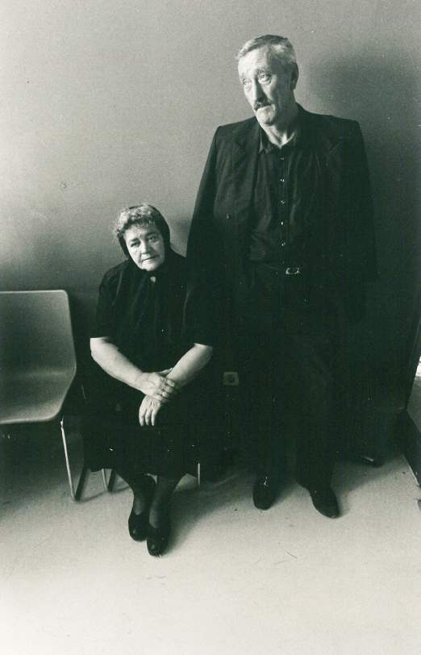
follow. And yet, with faith and perseverance, with a favorable wind and, at moments, the steady hand of someone who knows the direction, it becomes possible to accomplish what, at a given moment, seems impossible.
A true understanding of the scale of what was happening behind the front lines came only after the war. During my time at Penn State University, where I was being interviewed about Mitchell M. Holland, I began to grasp how much effort, perseverance, faith, knowledge, and humanity, as well as sorrow and moments of happiness, had been woven into the identification of the victims of the Homeland War. To a journalist who knew him only as a refined and unassuming university professor, I tried to reveal another dimension of his life: his arrival in Croatia. The fact that he left behind his family, his home, his work, and the security of life in the United States to take part in the identification of war victims still seems almost unimaginable to me. At the time, he was the director of the Armed Forces DNA Identification Laboratory (AFDIL) in Rockville, Maryland, a position from which one rarely steps into the unknown. And yet, he came to Croatia. He did so at the invitation of his friend and colleague Dragan Primorac, who had himself trained at AFDIL, driven by a deep belief that science must serve the truth and that it knows no boundaries.
The Croatian model, as you will soon see, rose like a phoenix from the ashes of war. For this to happen, many conditions had to align simul-
Čekaonica Kliničkoga bolničkog centra Split tijekom Domovinskoga rata (foto: Phil Farnsworth, uz dopuštenje).
Waiting room of the University Hospital of Split during the Homeland War (photo: Phil Farnsworth, used with permission).
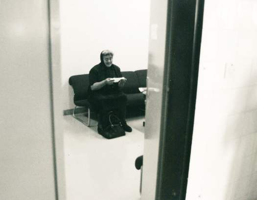
obitelj, dom, posao i sigurnost američkoga života kako bi sudjelovao u identifikaciji žrtava rata i danas mi se čini gotovo nevjerojatnom. U to je vrijeme bio direktor laboratorija Armed Forces DNA Identification Laboratory (AFDIL) u Rockvilleu, u Marylandu, na poziciji koju se rijetko napušta radi odlaska u nepoznato. A ipak je došao u Hrvatsku. To je napravio na poziv prijatelja i kolege Dragana Primorca, koji je i sam prošao edukaciju u AFDIL-u jer je duboko vjerovao da znanost mora služiti istini i da ne poznaje granice.
Hrvatski je model, kao što ćete uskoro vidjeti, izrastao poput feniksa iz pepela rata. Da bi se to dogodilo, morale su se istodobno ostvariti mnoge okolnosti na različitim mjestima, na različitim razinama i u različitim dijelovima svijeta. Sve je započelo ratom, ali nije njime završilo. Nastavlja se i danas u potrazi za nestalima koje još uvijek tražimo, u znanstvenoj suradnji koja traje i u novim otkrićima koja nadograđuju tada postavljene temelje.
Paralelno s tim procesima razvijala se i inicijativa Matka Marušića, koji je prepoznao jednu važnu činjenicu. U Sjedinjenim Američkim Državama liječnici i doktori znanosti bili su u ravnopravnome položaju. Upravo mu je to
Čekaonica Kliničkoga bolničkog centra Split tijekom Domovinskoga rata (foto: Phil Farnsworth, uz dopuštenje).
Waiting room of the University Hospital of Split during the Homeland War (photo: Phil Farnsworth, used with permission).
taneously across different places, levels, and parts of the world. Everything began with the war, but it did not end there. It continues even today, in the search for those who are still missing, in ongoing scientific collaboration, and in new discoveries that build upon the foundations laid in those years.
In parallel with these processes, the initiative of Matko Marušić was also taking shape, as he recognized an important fact. In the United States, physicians and scientists with doctoral degrees are on equal footing. This is precisely what enabled him to send his graduate medical students abroad for postdoctoral training. Over the years, he sent around 150 of them, relying on what he himself called a “coefficient of utilization.” He believed that those who succeeded would bring knowledge, experience, and development to Croatia. Among them was Dragan Primorac, whose departure was also supported by Šimun Anđelinović, then (and now) head of the Clinical Department of Pathology, Forensic Medicine, and Cytology at the University Hospital of Split. The friendship between Anđelinović and Primorac went beyond science itself, as they were also connected through the taekwondo club Kocunar, founded by Primorac. On 14 January 1991, Primorac also included the club’s first senior team in the defense of Croatia through the Ministry of the Interior. The further course of his life and career was deeply marked by the loss of six of his friends and students, whom he still mentions with pride today. This was also a strong motivation for him to succeed in the identification project that would soon follow.
omogućilo da svoje diplomirane studente medicine upućuje na poslijedoktorsko usavršavanje u inozemstvo. Tijekom godina poslao ih je oko 150, oslanjajući se na vlastiti, kako ga je nazivao, „koeficijent iskoristivosti“. Vjerovao je da će oni koji tamo uspiju donijeti znanje, iskustvo i razvoj. Među njima je bio i Dragan Primorac, čiji je odlazak zagovarao i Šimun Anđelinović, tada (i sada) predstojnik Kliničkoga zavoda za patologiju, sudsku medicinu i citologiju Kliničkoga bolničkog centra Split. Prijateljstvo Anđelinovića i Primorca nadilazilo je samu znanost jer su bili povezani i taekwondo klubom Kocunar, koji je osnovao Primorac. Primorac je, također, 14. siječnja 1991. godine prvu seniorsku ekipu uključio u obranu Hrvatske, u okviru Ministarstva unutarnjih poslova. Njegov daljnji život i karijeru duboko je obilježio gubitak šestorice prijatelja i učenika, koje i dandanas s ponosom spominje. To mu je bio i veliki motiv da uspiju u projektu identifikacije koji će uskoro uslijediti.
Početkom 1993. godine, tijekom boravka na Klinici za pedijatriju u Farmingtonu u sklopu ustanove University of Connecticut Health Center, Dragan Primorac primio je poziv upravo od Šimuna Anđelinovića. Razgovor koji je uslijedio bio je usmjeren na jedno ključno pitanje: kako pronaći rješenje za identifikaciju velikoga broja žrtava iz masovnih grobnica koje nije bilo moguće identificirati standardnim forenzičkim metodama? Naizgled, rješenja nije bilo.
Tjedan dana nakon toga razgovora možemo zamisliti kako se, na različitim stranama svijeta i u različitim okruženjima, istodobno odvijaju prizori koji će uskoro postati dijelom iste priče. U čekaonici patologije stoje majke i čekaju vijesti o tome jesu li tijela njihove djece u obdukcijskoj sali s druge strane zida. U toj istoj sali Šimun Anđelinović, Marija Definis i obdukcijski tehničari pregledavaju tijela, nastojeći pronaći što više osobnih pokazatelja koji bi mogli pomoći u identifikaciji. U
At the beginning of 1993, while at the Department of Pediatrics in Farmington at the University of Connecticut Health Center, Dragan Primorac received a call from Šimun Anđelinović. The conversation that followed was focused on one key question: how to find a solution for the identification of a large number of victims from mass graves who could not be identified using standard forensic methods. At first glance, there was no solution.
A week after that conversation, one can imagine how, in different parts of the world and in different settings, scenes were unfolding at the same time that would soon become part of the same story. In the pathology waiting room, mothers stand and wait for news of whether the bodies of their children are in the autopsy room on the other side of the wall. In that same room, Šimun Anđelinović, Marija Definis, and the autopsy technicians examine the bodies, trying to find as many personal indicators as possible that could help the identification. At the same time, Dragan Primorac arrives at Henry Lee’s office in Meriden, Connecticut, wondering how best to make the most of the ten minutes he had been promised. At that moment, Henry Lee is probably working on one of his demanding cases, as he was already an American scientific and professional star. Since 1975, he had been the chief criminalist for the state of Connecticut; and the Connecticut State Police forensic laboratory had undergone a thorough scientific transformation under his leadership. In the years that followed, he turned that laboratory into one of the leading forensic centers in the United States. We can only imagine what a moment that was for a young physician from a war-affected country, waiting for a meeting with one of the world’s most renowned forensic experts, aware that the outcome of that encounter could determine the future direction of the entire process. What, meanwhile, might Henry Lee have thought when his secretary introduced the young physician from Croatia? Did
isto vrijeme, u ured Henryja Leeja u Meridenu, u saveznoj državi Connecticut, dolazi Dragan Primorac i razmišlja kako će najbolje iskoristiti svojih deset obećanih minuta sastanka. Henry Lee u tom trenutku vjerojatno radi na nekome od svojih zahtjevnih slučajeva jer je već bio američka znanstvena i forenzička zvijezda. Od 1975. godine bio je glavni forenzički stručnjak savezne države Connecticut, a forenzički laboratorij Državne policije Connecticuta prošao je pod njegovim vodstvom temeljitu znanstvenu transformaciju. U godinama koje su uslijedile pretvorio je taj laboratorij u jedno od vodećih forenzičkih središta u Sjedinjenim Američkim Državama. Možemo tek pretpostaviti kakav je to bio trenutak za mladoga liječnika iz ratom pogođene zemlje koji čeka razgovor s jednim od najpoznatijih svjetskih forenzičara, svjestan da ishod toga susreta može odrediti daljnji smjer cijeloga procesa. Što li je, s druge strane, Henry Lee mogao pomisliti kada je tajnica uvela mladoga liječnika iz Hrvatske? Je li znao gdje je Hrvatska? Je li znao da je u Hrvatskoj rat? Poslije mi je rekao da ga je odmah zaintrigirala pridošličina visina, što i nije neobično kada se zna da je populacija područja Dalmacije među najvišima u Europi. Razgovor koji je trebao trajati deset minuta potrajao je više od dva i pol sata.
Čini se da su i Henry Lee i Dragan Primorac bili dovoljno znatiželjni i odlučni da prepoznaju kako je riječ o nečemu što će izrasti u veliki zajednički projekt i životno prijateljstvo. Istodobno, Lee je radio na slučaju Helle Crafts, poznatom kao Wood Chipper Case, koji je bitno promijenio dotadašnje shvaćanje forenzičkih identifikacija. Bio je to prvi slučaj u saveznoj državi Connecticut u kojemu su forenzičari imali ključnu ulogu u donošenju osuđujuće presude za ubojstvo bez pronalaska tijela, pri čemu su dokazi u presudnoj mjeri počivali na analizi DNK-a, i to iz koštanih fragmenata i ljudskoga tkiva. U tome je kontekstu Dragan Primorac predložio hitno prikupljanje uzoraka krvi i
he know where Croatia was? Did he know that there was a war in Croatia? Later, he told me that he was immediately intrigued by the visitor’s height, which is not surprising given that the population of the Dalmatian region is among the tallest in Europe. A conversation that was supposed to last ten minutes extended to more than two and a half hours.
It seems that both Henry Lee and Dragan Primorac had enough curiosity and determination to recognize that this would grow into a major joint project and a lifelong friendship. At the same time, Lee was working on the Helle Crafts case, known as the Wood Chipper case, which significantly changed the prevailing understanding of forensic identification. It was the first case in the state of Connecticut in which forensic experts played a key role in securing a murder conviction without the recovery of a body, with the evidence relying to a decisive extent on DNA analysis, including that obtained from bone fragments and human tissue. In this context, Dragan Primorac proposed the urgent collection of blood samples and the establishment of a DNA database of relatives of the missing and the killed in Croatia and Bosnia and Herzegovina. This opened the possibility of a major undertaking, and with that idea, the first glimmer of hope for the families of the missing began to arrive in Croatia. The laboratory, located in the basement of the Connecticut State Police forensic laboratory building, became a place of daily meetings between Lee and Primorac. After their regular duties, they would return to the laboratory and extract DNA from degraded samples, then amplify it using the polymerase chain reaction.
At that moment, the humanitarian organization AmeriCares also entered the story, and the project ceased to be merely scientific. The organization was led by Stephen Skakel, connected to the Kennedy family, and his meeting with Dragan Primorac that followed was not
uspostavu DNK baze podataka rodbine nestalih i ubijenih u Hrvatskoj i Bosni i Hercegovini. Time se otvorila mogućnost velikoga pothvata, a s tom je idejom u Hrvatsku počelo pristizati i prvo zrno nade za obitelji nestalih. Laboratorij, smješten u podrumu zgrade forenzičkoga laboratorija državne policije Connecticuta, postao je mjesto svakodnevnih susreta Leeja i Primorca. Nakon redovitih obveza vraćali su se u laboratorij i radili na izolaciji DNK-a iz degradiranih uzoraka, koji su potom umnažali lančanom reakcijom polimeraze.
U priču se u tom trenutku uključuje i humanitarna organizacija AmeriCares, čime projekt prestaje biti samo znanstveni. Organizaciju je vodio Stephen Skakel, povezan s obitelji Kennedy, a njegov susret s Draganom Primorcem koji je uslijedio nije bio plod slučajnosti, nego rezultat onoga što će se u ovoj priči uvijek iznova pokazivati presudnim, a to je pomoć prijatelja. Upravo je Stanimir Vuk-Pavlović, istaknuti hrvatsko-američki znanstvenik iz bolnice Mayo Clinic, povezao Dragana Primorca s organizacijom AmeriCares. Njegovo je posredovanje bilo ključno, a putem organizacije Ameri- Cares Primorac je upoznao Barbaru Bush, koja je u toj organizaciji imala važnu stratešku ulogu. Tako je organiziran sastanak s Gaynorom N. Kelleyjem, jednim od najutjecajnijih ljudi američkoga poslovnog svijeta i tadašnjim predsjednikom uprave tvrtke Perkin-Elmer, svjetskoga predvodnika u razvoju analize DNK-a i tehnologije PCR-a, na kojemu su s njim bili Dragan Primorac, Stephen Skakel i Zelda Jacobs. Rezultat je bio prihvaćanje hrvatskoga koncepta sustavne identifikacije žrtava iz masovnih grobnica primjenom DNK tehnologije, u to vrijeme još uvijek u svojim početcima. Primorac je bio uvjeren da će Anđelinović svojim ugledom, energijom i golemim organizacijskim sposobnostima stvoriti sve preduvjete kako bi se u Splitu provelo sve potrebno za DNK identifikaciju žrtava.
a coincidence but rather the result of what would repeatedly prove decisive in this story: the help of friends. It was Stanimir Vuk Pavlović, a distinguished Croatian American scientist from the Mayo Clinic, who connected Dragan Primorac with the organization Ameri- Cares. His mediation was crucial, and through AmeriCares, Primorac met Barbara Bush, who had an important strategic role in the organization. A meeting was thus arranged with Gaynor N. Kelley, one of the most influential figures in the American business world and, at the time, president of Perkin-Elmer, a global leader in the development of DNA analysis and PCR technology, at which Dragan Primorac, Stephen Skakel, and Zelda Jacobs were also present. The result was the acceptance of the Croatian concept of systematic identification of victims from mass graves using DNA technology, which at that time was still in its early stages. Primorac was convinced that Anđelinović, with his reputation, energy, and exceptional organizational abilities, would create all the necessary conditions for the DNA identification of victims to be carried out in Split.
In March 1994, a C-130 Hercules transport aircraft carrying Dragan Primorac, Michael Baden, Mitchell Kennedy, and Stephen Skakel landed in Split, where they were received by Šimun Anđelinović, who immediately took them to the University Hospital of Split. The international team, together with Anđelinović, was joined by Croatian experts Marija Definis, Jakša Ivanović, Irena Drmić, and the laboratory technician Boja Režić. Representatives of Perkin-Elmer believed that several months would be required to establish the laboratory, but the Croatian team accomplished it in a matter of days. The purpose of the visit was clear: focused on DNA analysis of skeletal remains recovered from the Neretva River, which were believed to belong to a boy who had died by drowning almost ten years earlier. By the next morning, the boy’s identity was confirmed, and
U ožujku 1994. godine transportni zrakoplov C-130 Hercules, s Draganom Primorcem, Michaelom Badenom, Mitchellom Kennedyjem i Stephenom Skakelom, sletio je u Split, gdje ih je dočekao Šimun Anđelinović i odmah ih poveo u Klinički bolnički centar Split. Međunarodnomu timu, uz Anđelinovića, pridružili su se i hrvatski stručnjaci: Marija Definis, Jakša Ivanović, Irena Drmić te laboratorijska tehničarka Boja Režić. Predstavnici Perkin-Elmera smatrali su da će za uspostavu laboratorija biti potrebno nekoliko mjeseci, no hrvatski je tim to uspio učiniti u nekoliko dana. Cilj posjeta bio je jasan: bio je posvećen analizi DNK-a koštanih ostataka izvađenih iz rijeke Neretve, za koje se sumnjalo da pripadaju dječaku stradalom u utapanju gotovo deset godina ranije. Već sljedećega jutra potvrđen je dječakov identitet, čime su otvorena vrata identifikaciji žrtava iz masovnih grobnica primjenom DNK tehnologije. Istoga dana, 16. ožujka 1994. godine, laboratorij je i službeno otvoren. Bio je to trenutak u kojemu je Hrvatska zakoračila u svijet suvremene analize DNK-a.
U međuvremenu je tim splitskih forenzičara, koji su činili Šimun Anđelinović, Marija Definis i Dragan Primorac, odlukom Vojnoga suda u Zagrebu i vojnoga istražnog suca Danka Kovača od 18. travnja 1994. godine, određen za provedbu vještačenja uzoraka tkiva izuzetih tijekom očevida na prostoru ostataka skladišta Hrvatske vojske u Dubokome jarku kraj Sesveta. Bio je to prvi slučaj u hrvatskome pravosuđu od osamostaljenja Republike Hrvatske u kojemu je službeno zatražena identifikacija analizom DNK-a. Ona je krajem te godine uspješno završena te su ostatci žrtava vraćeni obiteljima.
U trenutku kada su na Odsjek za patologiju KBC-a Split zaprimljena tijela 61 žrtve iz Kupresa, napori hrvatskih i američkih forenzičara dodatno su se intenzivirali. Klasičnim identifikacijskim metodama identificirano je 35 osoba, dok su preostale ostale nepoznate. Ni
with that, the door was opened to the identification of victims from mass graves using DNA technology. On that same day, 16 March 1994, the laboratory was officially opened. It was a moment when Croatia entered the world of modern DNA analysis.
In the meantime, the Split forensic team, Šimun Anđelinović, Marija Definis, and Dragan Primorac, by decision of the Military Court in Zagreb and the military investigating judge Danko Kovač, dated 18 April 1994, was appointed to carry out expert analysis of tissue samples collected during the investigation at the site of the destroyed Croatian Army storage facility in Duboki Jarak near Sesvete. This was the first case in the Croatian legal system since the country’s independence in which DNA analysis was officially requested for identification. It was successfully completed by the end of that year, and the remains of the victims were returned to their families.
At the moment when the Department of Pathology at the University Hospital of Split received the bodies of 61 civilian victims from Kupres, the efforts of Croatian and American forensic experts intensified further. Using classical identification methods, 35 individuals were identified, while the remaining ones remained unidentified. The team members themselves were not spared of personal tragedies. Dragan Primorac, only a few days after the liberation of the Kupres plateau, was confronted with the death of his relative, Croatian Army brigadier Ante Primorac.
After the liberation of Kupres in November 1994, a team of American forensic experts, including Dragan Primorac, came to Croatia. The team included Henry C. Lee, Barbara Wolf, a forensic pathologist from Albany, New York with experience in medicolegal investigations and expert testimony, Moses Schanfield, a molecular biologist and one of the leading experts in
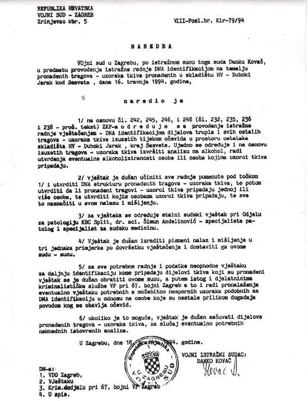
Naredba Vojnoga suda u Zagrebu za provedbu DNK identifikacije uzoraka tkiva iz Dubokoga Jarka kraj Sesveta (izvor: arhiv Kliničkoga zavoda za patologiju, sudsku medicinu i citologiju KBC-a Split).
Order of the Military Court in Zagreb regarding DNA identification of tissue samples from Duboki Jarak near Sesvete (source: Archive of the Clinical Department of Pathology, Forensic Medicine, and Cytology, University Hospital of Split).
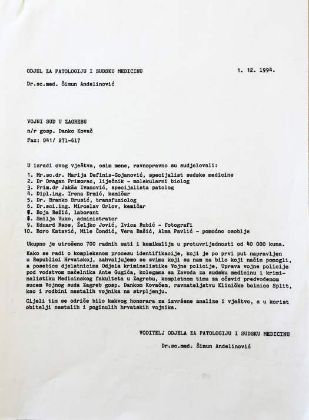
Prvi službeni dopis o provedbi DNK identifikacije ratnih žrtava u Hrvatskoj (izvor: arhiv Kliničkoga zavoda za patologiju, sudsku medicinu i citologiju KBC-a Split).
The first official letter regarding the implementation of DNA identification of war victims in Croatia (source: Archive of the Clinical Department of Pathology, Forensic Medicine, and Cytology, University Hospital of Split).
sami članovi tima nisu bili pošteđeni osobnih tragedija. Tako se Dragan Primorac, samo nekoliko dana nakon oslobađanja Kupreške visoravni, suočio s pogibijom svoga rođaka, brigadira HV-a Ante Primorca.
Nakon oslobađanja Kupresa, u studenome 1994. godine, tim američkih forenzičara s Draganom Primorcem dolazi u Hrvatsku. U sastavu tima bili su Henry C. Lee, Barbara Wolf, forenzička patologinja iz Albanyja (New York) s iskustvom u sudskomedicinskim istragama i sudskim vještačenjima, Moses Schanfield, molekularni biolog i jedan od vodećih stručnjaka za forenzičku genetiku i analizu DNK-a iz Denvera, te Michael Baden, istaknuti forenzički patolog i tadašnji suvoditelj jedinice Forensic Sciences Unit Državne policije New Yorka, poznat po radu na složenim slučajevima nasilnih smrti i masovnih stradanja. S hrvatskim forenzičarima, predvođenim Anđelinovićem, te uz aktivno sudjelovanje članova obitelji nestalih, započeli su sustavnu i metodološki strogu analizu koštanih ostataka i osobnih predmeta pronađenih u kupreškim masovnim grobnicama. Među tim predmetima nalazili su se odjevni predmeti, križići, privjesci, upaljači i drugi tragovi. Ubrzo potom započela je i sustavna analiza DNK-a, proces koji je trajno promijenio način identifikacije žrtava masovnih stradanja.
Američki forenzičari koji su došli u Hrvatsku i Bosnu i Hercegovinu nisu provodili vrijeme samo u laboratoriju. Susreli su se s iskustvima kakva do tada, pa ni u najsloženijim slučajevima, nisu imali prilike vidjeti. U ekshumacijama masovnih grobnica u Petrinji i na Kupresu suočeni su s uvjetima koji su nadilazili uobičajene okvire forenzičkoga rada. Lee je uvijek bio iznimno metodičan, čemu sam svjedočila godinama poslije, vidjevši ga kako se priprema za izlazak na teren. Prije izlaska na mjesto događaja na otvorenome prostoru, nanosio bi zaštitnu kremu za sunce i nudio je kolegama, svjestan da se nikad ne zna koliko će
forensic genetics and DNA analysis from Denver, and Michael Baden, a prominent forensic pathologist and at the time co-head of the Forensic Sciences Unit of the New York State Police, known for his work on complex cases of violent death and mass fatalities. Together with Croatian forensic experts led by Anđelinović, and with the active participation of family members of the missing, they began a systematic and methodologically rigorous analysis of skeletal remains and personal items recovered from the mass graves in Kupres. Among these items were clothing, crosses, pendants, lighters, and other evidence. Soon afterward, systematic DNA analysis began, a process that permanently changed the way victims of mass fatalities are identified.
The American forensic experts who came to Croatia and Bosnia and Herzegovina did not spend their time only in the laboratory. They were confronted with scenes unlike anything they had seen before, even in the most complex cases. During the exhumations of mass graves in Kupres and Petrinja, they faced conditions that went beyond the usual environment of forensic work. Lee was always extremely methodical, as I witnessed years later when I saw how he prepared for field work. Before heading to an outdoor scene, he would apply sunscreen and offer it to colleagues, aware that one never knows how long fieldwork might last. Yet, no matter how prepared he was for uncertainty, he could not have been prepared for what awaited them. In the mass graves in Kupres, explosive devices had been placed on and around the bodies of the victims. One wrong step could have been fatal for everyone present and could have destroyed the already fragile traces of identity. Only a few days before their arrival, a military policeman informed them that a dog that had stepped off the path they were following had triggered a landmine. Despite this, Henry Lee joined the teams in the field, maintaining his characteristic spirit of solidarity and pro-
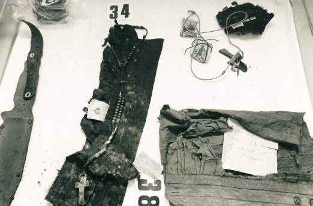
dugo trajati rad na terenu. No, koliko god bio spreman na neizvjesnost, nije mogao biti pripremljen na ono što ih je dočekalo. U masovnim grobnicama na Kupresu na tijelima i uz tijela žrtava bile su postavljene minske i eksplozivne naprave. Jedan pogrješan pokret mogao je biti koban za sve prisutne, a ujedno i uništiti, ionako krhke, tragove identiteta. Samo nekoliko dana prije njihova dolaska, vojni policajac ih je obavijestio da je pas koji je izašao s puta kojim su se kretali aktivirao nagaznu minu. Unatoč tomu, Henry Lee ušao je među timove na terenu, zadržavajući svoj prepoznatljivi duh zajedništva i profesionalne odgovornosti. Kad ga je u jednom trenutku Primorac upitao želi li, zbog sigurnosti, odustati od daljnjega rada, bez razmišljanja je odgovorio da su zajedno došli i da će zajedno otići te da im je prioritet utvrditi istinu. U susretima s obiteljima znao je reći da su i oni u tom trenutku njegova obitelj, čime je jasno pokazivao da njegov angažman nadilazi stručni okvir. S druge strane, kako je isticao Šimun Anđelinović, lokalno stanovništvo i obitelji doživljavali su članove međunarodnoga tima gotovo kao spasitelje, kao posljednju nadu da će pronaći i identificirati svoje najmilije. U tom međusobnom prepoznavanju, između onih koji traže i onih koji pomažu, oblikovao se prostor povjerenja bez kojega takav proces ne bi bio moguć.
Izloženi osobni predmeti korišteni u identifikaciji žrtava u obdukcijskoj sali Kliničkoga bolničkog centra Split (izvor: arhiv Kliničkoga zavoda za patologiju, sudsku medicinu i citologiju KBC-a Split).
Personal belongings used in the identification of victims displayed in the autopsy room of the University Hospital of Split (source: Archive of the Clinical Department of Pathology, Forensic Medicine, and Cytology, University Hospital of Split).
fessional responsibility. When Primorac asked him, at one point, whether, for safety reasons, he wished to continue, he replied without hesitation that they had come together and would leave together, and that their priority was to establish the truth. In encounters with families, he would say that they, too, were his family at that moment, clearly showing that his engagement went beyond the professional settings. On the other hand, as Šimun Anđelinović emphasized, the local population and the families perceived the members of the international team almost as saviors, as the last hope of finding and identifying their loved ones. In this mutual recognition between those searching for missing family members and those helping them, a space of trust was formed without which such a process would not have been possible.
How important it was that international experts participated in these exhumations is also confirmed by Barbara Wolf’s testimony before the United States Congress on 6 December 1995. In that testimony, given under oath, she directly described the work of the Split team led by Anđelinović, with whom the American experts worked side by side in the autopsy room. As she stated, the international team did not come to take over the process, but to support an already established system: “We came to
Koliko je bilo važno da su na tim ekshumacijama sudjelovali i međunarodni stručnjaci, potvrđuje i svjedočenje Barbare Wolf pred Kongresom Sjedinjenih Američkih Država, održano 6. prosinca 1995. godine. U tome je svjedočenju, iznesenom pod prisegom, izravno opisala rad splitskoga tima predvođenog Anđelinovićem, s kojim su američki stručnjaci radili rame uz rame u obdukcijskoj sali. Kako je navela, međunarodni tim nije dolazio preuzeti proces, nego pružiti potporu već uspostavljenomu sustavu: „Došli smo u Hrvatsku i Bosnu kako bismo surađivali s forenzičkim timom Kliničkoga bolničkog centra u Splitu i pružili mu podršku.“ Opisujući konkretan rad u Splitu, istaknula je da su američki stručnjaci radili sa Šimunom Anđelinovićem u obdukcijskoj sali, gdje je istodobno bilo izloženo više tijela, a obitelji su ulazile pokušavajući prepoznati svoje bližnje. U takvim uvjetima, već tijekom jednoga dana identificiran je velik broj žrtava, dok se analiza DNK-a nastavila za neidentificirane. Na izravno pitanje o tome jesu li hrvatski stručnjaci kompetentni, odgovorila je bez zadrške: „U potpunosti jesu kompetentni, i mislim da je ovo doista primjer kako znanost nadilazi političke podjele. Tehnike koje se rabe u Sjedinjenim Američkim Državama gotovo su identične onima koje su se rabile ondje, uključujući i DNK laboratorij u Splitu.“ Koliki je značaj Šimuna Anđelinovića bio u tom procesu ne može se svesti isključivo na organizaciju rada i primjenu forenzičkih metoda. Njegova se uloga protezala i na završnu fazu identifikacijskoga postupka, u kojoj se znanstveni nalaz treba pretočiti u razgovor s obiteljima. Upravo u tom prijelazu, iz analitičkoga u ljudski kontekst, ostvarivao se ključni cilj cijeloga procesa: povratak identiteta i dostojanstva. Susreti s obiteljima, često obilježeni snažnim emocionalnim reakcijama i neposrednim fizičkim kontaktom, svjedoče o tome da identifikacija nije bila samo tehnički čin, nego i završni korak u procesu razrješenja dugotrajne neizvjesnosti.
Croatia and Bosnia to work with the forensic team of the University Hospital in Split and to provide support.” Describing the work in Split, she emphasized that American experts worked with Šimun Anđelinović in the autopsy room, where several bodies were laid out at the same time, while families entered trying to recognize their relatives. Under such conditions, a large number of victims were identified in a single day, while DNA analysis continued for those who remained unidentified. When directly asked if the Croatian experts were competent, she answered without hesitation: “They absolutely are, and I think this truly is an example of how science transcends political divisions. The techniques used in the United States are largely the same as those used there, including the DNA laboratory in Split.” The importance of Šimun Anđelinović in this process cannot be reduced only to the organization of work and the application of forensic methods. His role extended to the final stage of the identification process, in which scientific findings are translated into communication with families. It is precisely in this transition, from the analytical to the human context, that the key goal of the entire process was achieved: the restoration of identity and dignity. Encounters with families, often marked by strong emotional reactions and direct physical contact, testify that identification was not only a technical act, but also the final step in resolving prolonged uncertainty.
In this story, Professor Matko Marušić, then editor of the Croatian Medical Journal, was constantly present in the background, insisting that all aspects of the experience of forensic identification of victims be appropriately published in scientific form. Even today, as I write this foreword, it is clear to me how right he was. As much as possible was published, perhaps too much for those who spent their days in the autopsy room, and never enough for Marušić. Publication activity in-
U priču je stalno bio nevidljivo uključen i profesor Matko Marušić, tada urednik časopisa Croatian Medical Journal, koji je ustrajao na tome da se svi aspekti iskustva forenzičke identifikacije žrtava primjereno znanstveno publiciraju. Koliko je bio u pravu, vidim i danas tijekom pisanja ovog predgovora. Koliko se moglo, publiciralo se; onima koji su dane provodili u obdukcijskoj sali i previše, a Marušiću uvijek premalo. Publiciranje je ubrzano krajem 1994. godine, kada je Marušić spojio Primorca i urednika ključnoga američkog časopisa JAMA, Phila Gunbyja s kojim je prijateljevao i JAMA je objavila članak o suradnji hrvatskih i američkih stručnjaka na DNK identifikaciji žrtava rata u
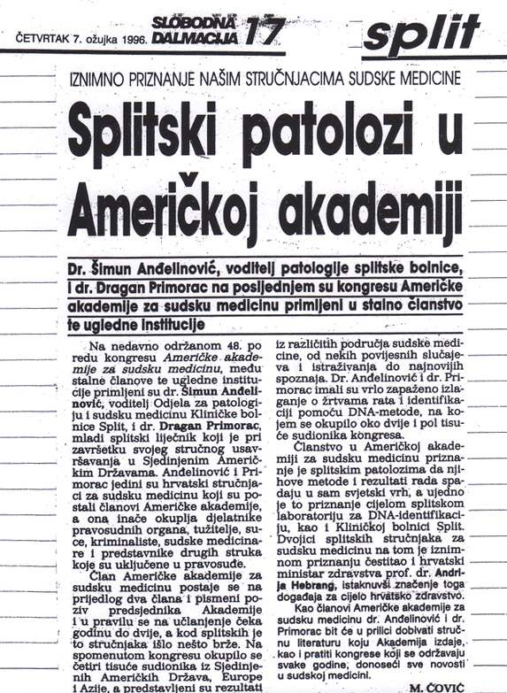
tensified at the end of 1994, when Marušić connected Primorac with Phil Gunby, a friend and editor at the leading American medical journal JAMA. The journal subsequently published an article on the collaboration between Croatian and American experts in the DNA identification of war victims in Croatia and Bosnia and Herzegovina. Since JAMA is an extremely influential journal, invitations soon followed to present the Croatian-American collaboration in other journals and at scientific meetings. Already in December 1994, at Lee’s invitation, Primorac presented the Croatian model of identification of victims from mass graves using DNA technology at an international conference in Taipei (Taiwan), which gathered leading forensic experts of that time. In this way, the global scientific community was introduced to the approach developed under wartime conditions in Croatia for the first time. Additional international visibility was provided by an article published in 1995 in Science, which highlighted the scientific and humanitarian significance of identifying missing persons in Croatia.
In February 1996, Primorac and Anđelinović participated in the 48th meeting of the American Academy of Forensic Sciences in Nashville, with more than 2,500 participants. They presented the results of the identification of victims from mass graves in Croatia and Bosnia and Herzegovina, further confirming the Croatian experience within the international professional community.
Članak „Splitski patolozi u Američkoj akademiji”, Slobodna Dalmacija, 7. ožujka 1996. godine.
Article “Split Pathologists in the American Academy,” Slobodna Dalmacija, 7 March 1996.
Hrvatskoj i Bosni i Hercegovini. Budući da je JAMA iznimno utjecajan časopis, slijedili su pozivi da se hrvatsko-američka priča predstavi i u drugim časopisima i znanstvenim skupovima. Već u prosincu 1994. godine, na poziv Leeja, Primorac je predstavio „hrvatski model“ identifikacije žrtava masovnih grobnica primjenom DNK tehnologije na međunarodnoj konferenciji u Taipeiju (Tajvan), koja je okupila tada vodeće forenzičare svijeta. Time je svjetska znanstvena zajednica prvi put bila izravno upoznata s pristupom razvijenim u ratnim uvjetima u Hrvatskoj. Dodatnu međunarodnu vidljivost donio je i članak objavljen 1995. godine u časopisu Science, koji je istaknuo znanstveni i humanitarni značaj identifikacije nestalih osoba u Hrvatskoj.
U veljači 1996. godine, Primorac i Anđelinović sudjelovali su na 48. konferenciji Američke akademije za forenzičke znanosti u Nashvilleu, koji je okupio više od dvije i pol tisuće sudionika. Iznijeli su rezultate identifikacije žrtava iz masovnih grobnica u Hrvatskoj i Bosni i Hercegovini, čime je hrvatsko iskustvo dodatno potvrđeno u međunarodnome stručnom prostoru.
U travnju 1996. godine u časopisu Journal of Forensic Sciences objavljen je znanstveni rad koji je dokumentirao rezultate identifikacije kupreških žrtava analizom DNK-a. Danas se ta publikacija smatra prvom recenziranom studijom u svijetu koja je sustavno prikazala identifikaciju velikoga broja žrtava masovnih grobnica tom tehnologijom, čime su postavljeni temelji suvremene forenzičke genetike u kontekstu ratnih i masovnih zločina.
Daljnji razvoj i prijenos znanja potvrđeni su i 1997. godine kad se održao European-American Intensive Course in PCR-Based Clinical and Forensic Testing u Splitu, preteča kasnijih ISABS kongresa, uz ključnu potporu tvrtke Perkin-Elmer. Time je Hrvatska, iz prostora ratne improvizacije, postala mjesto međunarodne znanstvene razmjene i edukacije.
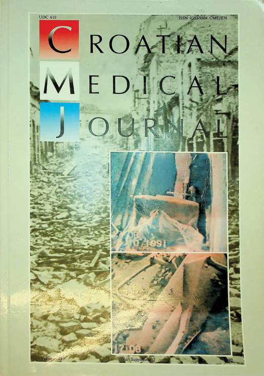
In April 1996, a paper was published in the Journal of Forensic Sciences documenting the results of the identification of victims from Kupres using DNA technology. Today, this publication is considered the first peer-reviewed study in the world to systematically present the identification of a large number of victims from mass graves using this technology, thereby laying the foundations of modern forensic genetics in the context of war and mass crimes.
In 1997, the European-American Intensive Course in PCR-Based Clinical and Forensic
Iza toga razvoja nije stajao samo sustav, nego i ljudi koji su ga nosili. U tom se procesu povezivalo više razina i prostora. Amerika je bila polazište, Primorac ključna poveznica prema Hrvatskoj i znanstvenik koji je osigurao prijenos stručnoga znanja u Hrvatsku, dok je u Splitu Anđelinović preuzimao odgovornost za njegovu primjenu u praksi. Njegov rad nije bio samo medicinski i forenzički, nego duboko ljudski. Svakodnevno je stajao između znanosti i obitelji, između tijela bez imena i ljudi koji su tražili svoje najbliže. U tome prostoru, gdje su se susretali bol, nada i istina, oblikovao se način rada koji će uskoro postati prepoznat kao hrvatski model. No, još važnije od toga, ondje se svakodnevno događalo ono što je Anđelinović i sam isticao kao bit svega, a to je vraćanje imena i dostojanstva onima kojima su oni u smrti bili oduzeti.
Zato naslovnica ove knjige ne prikazuje ljude. Prikazuje vrata. Otvorena vrata bolničkoga prostora, gledana iz hodnika, bez ijedne osobe u kadru. Ipak, ona nisu prazna, nego su ispunjena prisutnošću svih koji su kroz njih prolazili ili pred njima čekali. S jedne strane tih vrata stajale su majke, očevi i obitelji žrtava, između nade i istine, čekajući odgovor na pitanje koje određuje život. S druge strane bili su znanstvenici, liječnici i tehničari, jednako tako u iščekivanju, tražili su način da iz tišine smrti izvuku pokojnikovo ime. Ta vrata nisu bila samo ulaz u obdukcijsku salu ili čekaonicu. Bila su granica između nepoznatoga i poznatoga. Između broja i imena. Između nestanka i pronalaska. Ali bila su i početak. Jer upravo su se kroz ta vrata otvorili putovi prema nečemu novome, prema tehnologiji koja je tek tada nastajala, prema znanosti koja je tražila svoje granice, prema suradnji koja je povezala kontinente, prema prijateljstvima koja su nadživjela rat. Kroz njih se počeo oblikovati hrvatski model, nastao u najtežim uvjetima i prepoznat u svijetu. Kroz njih su dolazili oni koji su pomagali, i odlazili oni koji su na-
Testing was organized in Split with key support from Perkin-Elmer. The course later became a precursor to the ISABS conferences. In this way, Croatia, from a place of wartime improvisation, became a center of international scientific exchange and education.
Behind this development stood not only a system but also the people who carried it out. In this process, multiple levels and spaces were connected. America was the starting point, Primorac the key link to Croatia, and the scientist who ensured the transfer of know-how, while in Split, Anđelinović assumed responsibility for its practical application. His work was not only medical and forensic, but deeply human. Every day, he stood between science and families, between bodies without names and people searching for their loved ones. In that space, where pain, hope, and truth met, a way of working was formed that would soon become recognized as the Croatian model. Yet even more important than that, what took place there each day was what Anđelinović himself emphasized as the essence of everything: the restoration of names and dignity to those from whom they had been taken in death.
For this reason, the cover of this book does not depict people. It shows doors. Open doors of a hospital space, seen from a corridor, with no one in the frame. And yet they are not empty, but filled with the presence of all those who passed through them or waited before them. On one side of those doors stood mothers, fathers, and families of the victims, between hope and truth, waiting for an answer to the question that defines a life. On the other side were scientists, physicians, and technicians, equally waiting, searching for a way to bring a name out of the silence of death. These doors were not only an entrance to an autopsy room or a waiting area. They were a boundary between the unknown and the known. Between a number and a name. Between disappearance and finding. But
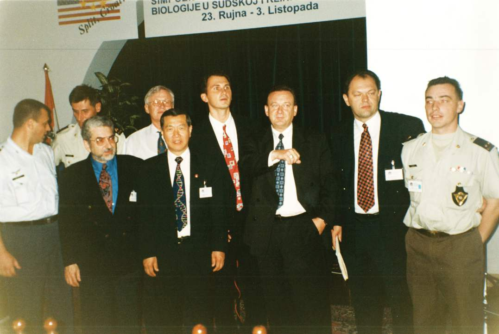
Sudionici međunarodnoga tečaja European- American Intensive Course in PCR-Based Clinical and Forensic Testing, održanoga u Splitu 1997. godine. Na fotografiji su djelatnici vojne kriminalističke policije, Moses Schanfield, Henry C. Lee, Stipan Janković, Dragan Primorac, Ante Gugić i Šimun Anđelinović (izvor: arhiv Kliničkoga zavoda za patologiju, sudsku medicinu i citologiju KBC-a Split).
Participants of the European-American Intensive Course in PCR-Based Clinical and Forensic Testing held in Split in 1997. The photograph includes members of the Croatian military criminal investigation police, Moses Schanfield, Henry C. Lee, Stipan Janković, Dragan Primorac, Ante Gugić, and Šimun Anđelinović (source: Archive of the Clinical Department of Pathology, Forensic Medicine, and Cytology, University Hospital of Split).
pokon pronađeni. Kroz njih se nije prolazilo samo fizički, nego i iz neizvjesnosti u spoznaju, iz šutnje u istinu. I zato na naslovnici nema nikoga. Jer svi su čekali. I oni koji su tražili, i oni koji su pronalazili. I upravo u tom zajedničkom čekanju, između vrata koja su uvijek bila otvorena, nastajalo je ono najvažnije – povratak dostojanstva.
they were also a beginning. Because it was through these doors that paths opened toward something new, toward a technology that was only just emerging, toward a science that was searching for its limits, toward a collaboration that connected continents, toward friendships that outlived the war. Through them, the Croatian model began to take shape under the most difficult conditions and came to be recognized worldwide. Through them came those who helped, and through them departed those who were finally found. Passing through them was not only a physical act, but also a movement from uncertainty to knowledge, from silence to truth. And that is why there is no one on the cover. Because everyone was waiting. Those who searched, and those who found. And it is precisely in that shared waiting, between doors that were always open, that something essential was created: the restoration of dignity.
Svjedočanstvo čovjeka / A Testimony of a Man
Svjedočanstvo čovjeka: razgovor s dr. sc. Šimunom Anđelinovićem, profesorom emeritusom
A Testimony of a Man: A Conversation with Professor Emeritus Šimun Anđelinović
Povratak dostojanstva: identifikacija nestalih u Domovinskome ratu
Jasenka Leskur Staničić, novinarka Slobodne Dalmacije: intervju s dr. Šimunom Anđelinovićem
Prema podatcima Ministarstva hrvatskih branitelja, na popisu osoba nestalih i nasilno odvedenih u Domovinskome ratu nalazi se 1740 osoba, i to je najbolnija posljedica ratnih zbivanja, nakon više od 30 godina što je rat okončan. Ni nakon toliko godina članovi 1740 obitelji, majke i očevi, djeca, supruge i rođaci nisu završili potragu za posmrtnim ostatcima svojih najmilijih, u želji da ih sahrane i napokon nađu toliko iščekivan mir.
Proces pomaganja da se taj čestiti i humani cilj ostvari počeo je ratne 1993. godine ekshumacijama masovnih grobnica u Hrvatskoj i Bosni i Hercegovini te identifikacijama žrtava, pri čemu se uloga splitskih stručnjaka za patologiju i sudsku medicinu pokazala – pionirskom.
Suočeni s teško raspadnutim i međusobno izmiješanim ljudskim ostatcima u grobnicama, kada su klasične metode identifikacije postale nedovoljne, Splićani su uveli u postupak analize DNK-a – prvi u svijetu. U ratno doba, u ožujku
Bringing Back Dignity: Identification of the Missing in the Homeland War
Jasenka Leskur Staničić, journalist at Slobodna Dalmacija: An Interview with Dr Šimun Anđelinović
Translated by Željana Bašić
According to the data from the Ministry of Croatian Veterans, 1,740 persons are still listed as missing or forcibly taken during the Homeland War in Croatia, representing the most painful consequence of the war, more than 30 years after its end. Even after so many years, members of 1,740 families, mothers and fathers, children, spouses, and relatives, have not ceased searching for the remains of their loved ones, hoping to give them a proper burial and finally attain the long-awaited peace they deserve.
Efforts to achieve this deeply compassionate and honorable goal began in 1993, during the war, with the exhumation of mass graves in Croatia and Bosnia and Herzegovina and the identification of victims. In this process, pathology and forensic experts from Split played a pioneering role.
Faced with extremely decomposed and commingled human remains, for which conventional identification methods had become insufficient, the
1994. godine, u Kliničkome bolničkom centru Split uspostavljen je prvi sustavni program DNK identifikacije žrtava iz masovnih grobnica. Štoviše, laboratorij je uspostavljen u manje od dva dana, što je bilo ravno čudu jer je očekivani rok podrazumijevao više mjeseci!
U središtu cijeloga procesa bili su dr. Šimun Anđelinović, kao voditelj splitske Patologije, i njegov bivši student, dr. Dragan Primorac, tada na poslijedoktorskome usavršavanju u SAD-u. Primorac je uspostavio kontakte s američkim stručnjacima, među ostalim s Henryjem C. Leejem, vrhunskim policijskim forenzičarem, u čijoj je biografiji upisan i rad na globalno poznatome slučaju O.J. Simpsona.
Suradnja s američkim kolegama dovela je do brzoga prijenosa znanja i tehnologije u Hrvatsku, uključujući uspostavu DNK laboratorija i primjenu metoda PCR-a na degradiranim koštanim uzorcima. Paralelno su prikupljani referentni uzorci – krv i kosa članova obitelji nestalih osoba – čime je stvorena jedna od prvih srodničkih baza podataka u ratnim uvjetima.
Rad splitskoga tima zabilježen je i u američkim medijima; televizijska kuća WTNH (News 8) snimila je 1995. dokumentarac Heroes of Hope, u kojemu su prvi put prikazane ekshumacije, improvizirane obdukcijske prostorije i susreti s obiteljima nestalih u ratu.
Model uspostavljen u Splitu, kombinacija ekshumacije, laboratorijske analize i baze srodničkih podataka, poslije je primijenjen u međunarodnim programima, uključujući rad Međunarodne komisije za nestale osobe, koja je identificirala više od 27 000 osoba na području bivše Jugoslavije.
Sjećanja na ta izazovna, ali vrlo značajna vremena podijelio je s nama dr. Šimun Anđelinović, kojega je rat zatekao na čelu splitske Patologije kao mladog specijalista u tridesetim godinama života.
Split team introduced DNA analysis into the identification process - the first in the world. In March 1994, during the war, the first systematic program for DNA-based identification of mass grave victims was established at the University Hospital of Split. What’s more, the laboratory was set up in less than two days, which was considered extraordinary, given that the expected timeframe was several months!
Central to this process were Dr Šimun Anđelinović, head of the Clinical Department of Pathology, Forensic Medicine, and Cytology, University Hospital of Split, and his former student, Dr Dragan Primorac, then a postdoctoral researcher in the United States, who established contacts with the U.S. experts, including Dr Henry C. Lee, a leading forensic scientist known for his work on the high-profile O.J. Simpson case.
Collaboration with American colleagues enabled the rapid transfer of knowledge and technology to Croatia, including the establishment of a DNA laboratory and the application of PCR methods to degraded bone samples. At the same time, reference samples, blood and hair from relatives of missing persons were collected, leading to the creation of one of the earliest kinship-based databases under wartime conditions.
The work of the Split team was also documented in the U.S. media. In 1995, the television station WTNH (News 8) produced the documentary Heroes of Hope, which, for the first time, presented exhumations, improvised autopsy facilities, and encounters with the families of the missing.
The model developed in Split, combining exhumation, laboratory analysis, and a kinship-based database, was later applied in international programs, including those of the International Commission on Missing Persons, which has iden-
Anđelinović: Sve se tada događalo velikom brzinom i malo toga se moglo predvidjeti. Ratni sukobi u bolnicu donijeli su ne samo veliki broj ranjenika, nego i mrtvih tijela koja smo mi kao znanstvenici morali medicinski obraditi, ali i napraviti sve da se ona mogu predati roditeljima, njihovim obiteljima. Taj posao može izgledati jednostavan kad je tijelo nepromijenjeno, međutim, kad imate masovne grobnice, iznakažena tijela, onda klasične metode ne rade. Bilo je to vrijeme kada su patologija u Dubrovniku i Mostaru bile izvan funkcije, a Split je ostao jedino mjesto u južnoj Hrvatskoj gdje je postojala organizirana bolnica koja to može prihvatiti, koja može odraditi redovan posao i nove poslove koji se nameću. Nismo mogli predvidjeti u kojem će se obujmu pojaviti Bosna i Hercegovina kao problem, s obzirom na to da sve do Sarajeva, čak i do Save, nije bilo organizirane patologije i sva tijela iz BiH dolazila su k nama, bilo da smo mi išli na teren po njih ili da su ih drugi dovozili u Split. Tada je naš odjel imao nešto malo opreme koja nije bila bogzna što, imali smo dobru obdukcijsku salu, ali i – veliki entuzijazam. Cijeli tim smo, u početku, činili dr. Marija Definis-Gojanović i ja, uz dr. Jakšu Ivanovića koji nije išao na teren, ali nam je bio potpora u jednako važnim poslovima administracije i razgovora s roditeljima umrlih. Dva sudska medicinara su obavljala sve! U kongresnome izvještaju forenzičarke dr. Barbare Wolf stoji njezin komentar da bi posao koji zahtijeva mjesec dana u Splitu odrađivali u dva dana. U jednoj godini smo, ne znam je li 95. ili 96. godina, stručno, sudskomedicinski obradili 945 tijela. Dva patologa! A prosječno se može napraviti 200 pa onda znate koja je to razina napora bila. A u Bosni su sve okolnosti bile potpuno drukčije nego u Hrvatskoj.
Leskur Staničić: Što to zapravo znači?
Povratak dostojanstva: identifikacija nestalih u Domovinskome ratu /
Bringing Back Dignity: Identification of the Missing in the Homeland War
tified more than 27,000 individuals from the territory of the former Yugoslavia.
Dr Šimun Anđelinović, who found himself leading the Department of Pathology in Split as a young specialist in his thirties when the war began, recalls those challenging, yet deeply significant times.
Anđelinović: Things were happening fast back then, and very little could be predicted. The war brought not only a large number of wounded to the hospital, but also the dead, bodies that we, as scientists, had to examine and process, but also do everything we could to return them to their families. That task might seem straightforward when a body is intact. But when you are dealing with mass graves, with disfigured and damaged remains, the usual methods simply no longer work. It was a time when pathology services in Dubrovnik and Mostar were no longer functioning, and Split remained the only place in southern Croatia with an organized hospital capable of taking this on, handling both its regular work and the new demands that kept emerging. We could not foresee the scale at which Bosnia and Herzegovina would emerge as a problem, given that there was no organized pathology service from Sarajevo all the way to the Sava River, and all bodies from Bosnia and Herzegovina were brought to us - either we went out into the field to retrieve them, or others transported them to Split. Back then, our department had very modest equipment—nothing to write home about, really. We did have a decent autopsy room, but what truly kept us going was an enormous amount of enthusiasm. At the beginning, it was basically just Dr Marija Definis-Gojanović and me, with Dr Jakša Ivanović, who didn’t go out into the field but supported us in other equally important ways, handling administration and,
Anđelinović: U tom je ratu bilo puno međususjedskih ubojstava, pa je tako svaka strana u sukobu željela napraviti sve da se ubijeni nikad ne identificira, da se uništi mrtvo tijelo. To je sve otežavalo. Primjerice, pri iskopavanju jedne jame naišli smo na eksplozivnu napravu zavezanu žicom za nogu mrtvaca. Da se pomaknula, svi bismo odletjeli u zrak. Mrtve su raznosili eksplozivom, spaljivali, tijela su bila u katastrofalnome stanju. U prvome slučaju gdje smo primijenili DNA analizu, u slučaju eksplozije u Dubokom jarku kraj Sesveta, nalazili smo tek dijelove tijela. Jednog čovjeka prepoznali smo po komadu njegove donje čeljusti i malome komadu mišića i rekli njegovu ocu da je to njegov sin. Ničeg drugog nije bilo, to je sve što smo od njega imali. Hrvatsko selo Uzdol u srednjoj Bosni bilo je likvidirano. Tu je bilo žrtava od sedam do 87 godina, otkidanih ušiju poslije smrti, amputiranih... Strašno, cijelo selo! Bilo je teže i drukčije. U Hrvatskoj je rad na identifikacijama bio relativno dobro organiziran, sudjelovali smo u timu koji je odlazio po tjedan dana u Vukovar. Dnevno smo identificirali od deset do 15 tijela. Bilo je bolno i teško, ali višestruko bolje organizirano, sa šatorima za psihološku pomoć rodbini. U BiH je sve bila čista improvizacija u kojoj se vi, kao znanstvenik, snalazite da biste napravili maksimum u zadanim uvjetima, da se slučaj može sudskomedicinski potpisati i tijelo predati rodbini. Nailazite na ogromne probleme, primjerice, da u nekim dijelovima BiH rodbina, zbog ratnih propusnica, može doći samo u određenim periodima na identifikaciju i vraća se kući noću, a nekad ne mogu ni tada. Imate limitirano vrijeme, raseljenu rodbinu koja više nije u Bosni i Hercegovini, nedostatak osobnih podataka i informacija tko je sve uopće bio tu. Bilo je ljudi iz svih dijelova Hrvatske koji su se tamo zatekli i borili. I – puno civila.
talking to the families of the deceased. Two forensic pathologists were doing everything! In her report to Congress, Dr Barbara Wolf even noted that work which would normally take a month was being done in Split in just two days. In one year, I think it was ’95 or maybe ’96, we conducted forensic examinations of 945 bodies. Two pathologists! The average is around 200, so you can imagine the level of effort that went into it. And in Bosnia, the conditions were completely different from those in Croatia.
Leskur Staničić: What does that actually mean?
Anđelinović: In that war, there were many cases of neighbors killing neighbors, and each side in the conflict often wanted to make sure the victims would never be identified, to destroy the body completely. That made everything much harder. For example, during one excavation, we came across an explosive device tied with a wire to the leg of a dead body. If it had moved, we would all have been blown up. Bodies were torn apart with explosives, burned, they were in a terrible condition. In the first case, where we applied DNA analysis, Duboki Jarak (near Sesvete), we mostly found only fragments. We identified one man from a piece of his lower jaw and a small bit of muscle, and we had to tell his father that this was his son. There was nothing else; that was all we had of him. The Croatian village of Uzdol in central Bosnia was wiped out. The victims’ age ranged from seven to 87 years old, ears cut off after death, limbs amputated… it was horrific. An entire village! It was harder, and it was different. In Croatia, the identification process was relatively well organized. We were part of a team that would go to Vukovar for a week at a time. We identified ten to fifteen bodies
Takva situacija zahtijeva od znanstvenika trostruko veći angažman, uz manje podataka za zatvaranje slučaja. Primarnu bismo obradu napravili u Bosni, ali kako ona nije bila dovoljna, tijela smo nosili u Split.
Leskur Staničić: Po čemu pamtite period ekshumacije grobnica na Kupresu u kojima je sudjelovao američki tim i koji je dokumentiran u njihovim medijima?
Anđelinović: Vlada Herceg Bosne imala je odgovorne ljude koji bi pripremili teren za nas: doznali bi za lokaciju grobnice i tko su tu bile potencijalne žrtve. Uvijek je postojao neki svjedok. I mi bismo došli i počeli iskopavati. U nekim slučajevima oni bi tijela sami dovezli u Split. Imali smo tehničku pomoć pri iskopavanju, tijela smo spremali u vreće, obradili ih i javili rodbini. A rodbina poginulih bi otprilike znala tko je u tim grobnicama, ali nije bila sigurna je li to stvarno, je li doista tako. Na Kupresu smo radili u više navrata, dvije, tri godine. Naši su ljudi imali jednu specifičnost, nitko nije htio pokopati tijelo svoga pokojnika, a da ga prvo ne vidi. Drugo, željeli su pomoći u iskopavanju. Na takvom jednom iskopavanju čovjek koji nam je pomagao u tehničkoj ekipi prepoznao je u masi leševa - brata. I to po satu koji mu je on kupio! To je strašno, ne možete to ni opisati. Prvo njegovo ushićenje da ga je našao, a nakon toga tuga što ga je pronašao mrtvoga. Bilo je tu životnih situacija koje ste kao znanstvenik mogli samo nijemo promatrati. Američki kolege suočili su se s iskustvima koja se ne mogu dobiti čitajući knjige. Neposrednost naših ljudi, otvorenost i toplina sve je ganula. Ti ljudi su Amerikance doživjeli kao spasitelje. Jedna žena se dirljivo obratila dr. Leeju: „Recite svom predsjedniku da je nama teško…” mislila je da je on došao direktno po njegovu nalogu. Gledali su u njih kao u svetce, to je bilo ostvarenje
Povratak dostojanstva: identifikacija nestalih u Domovinskome ratu /
Bringing Back Dignity: Identification of the Missing in the Homeland War
a day. It was painful and difficult, but far better organized, with tents for psychological support for families, and so on. In Bosnia and Herzegovina, everything was pure improvisation. As a scientist, you had to find a way to do the best you could with what you had, complete the forensic work properly, and return the body to the family. You ran into enormous challenges. In some areas, families could come only for identification at certain times, sometimes traveling back at night, and sometimes not even then, due to wartime permits. Time was limited. Families were displaced, often no longer even in Bosnia and Herzegovina. There was a lack of personal data, a lack of information about who had even been there. People from all over Croatia had ended up there, fighting. And many civilians. In that kind of situation, a scientist has to put in three times more effort, with far less information, to actually close a case. We would do the initial processing in Bosnia, but since it wasn’t sufficient, the bodies were then transported to Split.
Leskur Staničić: What do you remember most about the period of the exhumations in Kupres, in which the U.S. team took part, and which were documented in their media?
Anđelinović: The authorities of Herceg-Bosna had people in charge of preparing the ground for us. They would locate the graves and try to find out who might have been killed there. There was always some kind of witness. And then we would arrive and start the excavation. In some cases, they would even transport the bodies to Split themselves. We had technical support during the excavations. The bodies were placed in bags, examined, and then we would inform the families. The relatives of the victims usually had an idea of who might be in those graves, but they were never certain. They didn’t know for sure if it was really them.
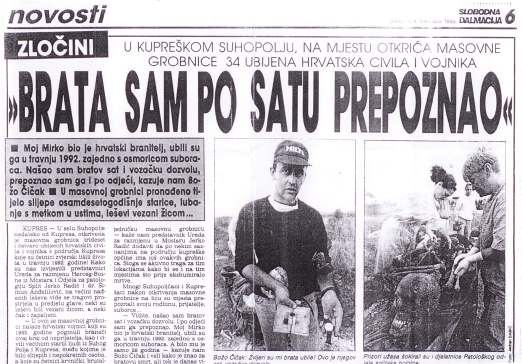
Novinski članak „Brata sam po satu prepoznao”, Slobodna Dalmacija, o identifikaciji žrtava iz kupreških masovnih grobnica.
Newspaper article “I Recognized My Brother by His Watch,” published in Slobodna Dalmacija, concerning the identification of victims from the Kupres mass graves.
njihovih najvećih želja, zadnja mogućnost da se nešto napravi, da pronađu svoje. Familije su im se povjeravale, mi smo im prevodili. Povjeravali im se kao svojim najbližima, nije bilo barijere između njih.
Leskur Staničić: Kako je izgledao proces identifikacije u Splitu?
Anđelinović: U obdukcijskoj sali, na stolovima, uz svako unakaženo tijelo bismo posložili predmete po kojima bi se eventualno mogli prepoznati, a koje smo našli uz tijela. I onda bi članovi obitelji razgledavali te predmete. Rodbina je u nekim slučajevima prepoznavala svoga po džemperu koji mu je isplela mama. Po satu, krunici, čarapama. U jednom slučaju u pratnji rodbine došla je stomatologinja koja je identificirala tijelo jer je zapamtila što je radila na zubu pokojnika neposredno prije početka rata.
We worked in Kupres on several occasions, over a period of two or three years. There was something very specific about the people there. No one wanted to bury their loved one without seeing the body first. And they wanted to help with the excavations as well. During one such excavation, a man who was helping us as part of the technical team suddenly recognized his brother among the bodies. He knew him by a watch he had once bought for him! It was something you simply cannot describe. First, the surge of relief that he had found him, and then the overwhelming grief of realizing he was dead. There were moments in life when, as a scientist, you could only stand by. The American colleagues were confronted with experiences you simply cannot get from reading books. The directness of our people, their openness, their warmth, moved everyone. People saw the Americans as saviors. One woman spoke very emotionally to Dr Lee and said, “Tell your president how difficult it is for us.” She believed he had come directly on his orders. They looked at them almost like saints. For them, this was the fulfillment of their last hope, the final chance to do something, to find their loved ones. Families, opened up to them in a very personal way and we would translate for them. They confided in them as if they were their closest ones. There were no barriers between them.
Leskur Staničić: What did the identification process in Split look like?
Anđelinović: In the autopsy room, on the tables, next to each disfigured body, we would lay out personal items that might help with identification, things we had found with the remains. Then the families would come in and look at them. In some cases, relatives recognized their loved ones by a sweater their mother had knitted. By a watch, a rosary, even socks.
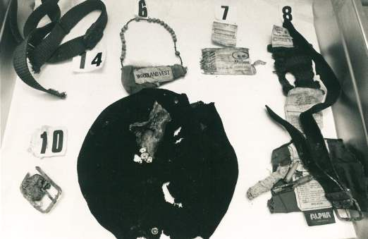
Inače nismo imali zubne kartone, s kojima Amerikanci postižu velike rezultate. Kada bi nam članovi obitelji rekli o kome se radi, mi bismo dalje provjeravali, određivali antropološke karakteristike – visinu, dob, spol, nastojali smo utvrditi uzrok smrti koliko je to bilo moguće, nakon čega smo uzimali uzorke DNA.
Leskur Staničić: Je li Vam se neki slučaj posebno urezao u pamćenje?
Anđelinović: U ratu mi se pokazalo da je najveća ljubav ona između sestre i brata. Jedna je žena često dolazila u obdukcijsku salu,
Obitelj i stomatologinja tijekom identifikacije žrtava u obdukcijskoj sali Kliničkoga bolničkog centra Split (foto: Phil Farnsworth, uz dopuštenje).
Family members and a dentist during the identification of victims in the autopsy room of the University Hospital of Split (photo: Phil Farnsworth, used with permission).
Povratak dostojanstva: identifikacija nestalih u Domovinskome ratu /
Bringing Back Dignity: Identification of the Missing in the Homeland War
Izloženi osobni predmeti korišteni u identifikaciji žrtava u obdukcijskoj sali Kliničkoga bolničkog centra Split (izvor: arhiv Kliničkoga zavoda za patologiju, sudsku medicinu i citologiju KBC-a Split).
Personal belongings used in the identification of victims displayed in the autopsy room of the University Hospital of Split (source: Archive of the Clinical Department of Pathology, Forensic Medicine, and Cytology, University Hospital of Split).
In one case, a dentist came with the family and identified the body because she remembered the work she had done on the person’s tooth just before the war. We usually didn’t have dental records, which is something American teams rely on heavily. Once the family told us who they believed it was, we would proceed with verification. We established anthropological characteristics such as height, age, and sex, and tried to determine the cause of death as far as possible. After that, we would take DNA samples.
Leskur Staničić: Is there any case that has particularly stayed with you?
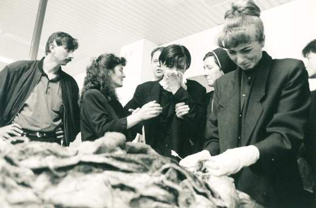
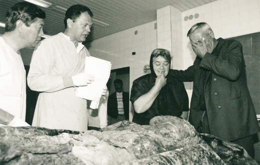
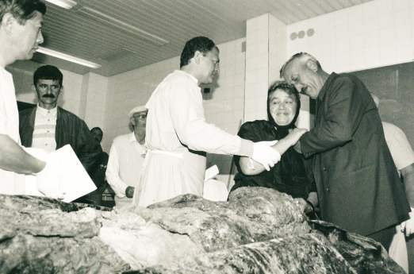
nismo mogli identificirati njenog brata. Brat joj se često pojavljivao u snovima. U jednom od njih ona je sanjala da je on ubijen u automobilu. Možda je već i deseti put došla k nama kad nam je ispričala svoj san, nakon čega smo pregledali zapisnike jer smo imali bilješku da je u jednoj vreći sakupljeno automobilsko staklo. I onda smo DNA analizom utvrdili da je to stvarno njezin brat! Njezin san je bio vjerodostojan. Ona nije odustajala dok nije to riješila, dolazila je s grupom ili sama, ali nije imala mira dok ga nije identificirala. Tu njenu upornost ne mogu zaboraviti. Kao što mi je ostala u sjećanju sudbina kupreške novinarke koju su ušutkali da ne širi istinu. Njezini roditelji zabi-
Identifikacija žrtava u obdukcijskoj sali Kliničkoga bolničkog centra Split (foto: Phil Farnsworth, uz dopuštenje).
Identification of victims in the autopsy room of the University Hospital of Split (photo: Phil Farnsworth, used with permission).
Anđelinović: It was during the war that I came to realize that the strongest bond is often the one between a brother and a sister. There was one woman who kept coming to the autopsy room. We couldn’t identify her brother. He kept appearing in her dreams. In one of them, she dreamt that he had been killed in a car. Maybe it was the tenth time she came to see us when she told us about it. After that, we went back through the records and found a note that in one of the bags, there had been fragments of car glass. Then, through DNA analysis, we confirmed that it really was her brother! Her dream turned out to be true. She never gave up. She kept coming, sometimes with a group, sometimes alone, but she had no peace until he was identified. I will never forget her persistence. And I also remember the fate of a journalist from Kupres who was silenced so she would not spread the truth. Her parents were captured on that footage. She was not afraid. She refused to leave Kupres. It was deeply moving!
Leskur Staničić: I imagine the hardest part was facing the parents and having to tell them the results of your analyses.
Anđelinović: Certainly. The handover of the body to the family followed a protocol. We would first go through the standard anthropological findings, describing the characteristics of the remains. Then we would explain the DNA results, showing that the DNA from their blood matched the DNA from the bones,
lježeni su na snimkama. Nije se bojala, nije htjela otići iz Kupresa. Potresno!
Leskur Staničić: Vjerojatno najteži dio je bio onaj kad ste suočeni s roditeljima kojima treba reći rezultate vaših analiza?
Anđelinović: Sigurno. Predaja tijela rodbini išla je po protokolu u kojem bismo im prvo čitali klasične antropološke nalaze koji govore o njima, nakon toga ih upoznali s rezultatima DNA koji su pokazali da se DNA iz njihove krvi i DNA iz kosti pokojnika podudaraju i da se s visokom vjerojatnosti radi o njihovu sinu. U tome trenu bi zastali, vidite majku koja se suzdržava od plača. Netko od njih nešto pita, imaju neka dodatna pitanja... i nakon toga im izrazimo sućut. U tome trenu prilaze mi, najčešće majke, zagrle me i na ramenu zaplaču. U tome plaču je sve – priznanje da se to dogodilo, pomirenje i bol koja nije prošla. Ta majka, rodbina, prošli su kroz period u kojem su dolazili lažni svjedoci koji su joj govorili da su im vidjeli sina živa, ili da on nije bio s njima u ratnoj akciji, da imaju spoznaje da je živ, ili su dolazili s nekim fotografijama na kojima ipak nije bio on... Rodbina je s tako s vremenom doživjela puno frustracija. Tako, kad bi sjeli s nama s druge strane stola, nisu znali jesam li ja još jedan od tih. To im se vidi u očima, oni još ne vjeruju. Tek u tih 10, 15 minuta sve se promijeni i majka, roditelji, shvate „to je to“. Povjerenje u nas i znanost pomoglo je da majka dobije ono što je tražila - mir. Spoznaju da je ON mrtav i da nema više traženja. Da može doći na njegov grob. Neke oprečne emocije, imaš najtužniju vijest da si ga stvarno izgubio i najdražu da si ga našao. Taj težak spoj emocija ona mora na nekoga prenijeti, i to sam u tom trenu bio ja. Jedini i najbliži njoj, a nikad se prije nismo vidjeli! U tom trenu znanstvena titula više nije bitna, važna je ljudska duša. To je trenutak
Povratak dostojanstva: identifikacija nestalih u Domovinskome ratu /
Bringing Back Dignity: Identification of the Missing in the Homeland War
and that, with a very high degree of probability, it was their son. At that moment, we would pause. You could see the mother holding back her tears. Someone would ask a question, there were always a few more things they needed to understand… and then we would express our condolences. That’s when they would come up to me, most often the mothers, embrace me, and break down on my shoulder. In that moment of grief, everything was there. The acceptance that it had happened, a kind of reconciliation, and a pain that never really goes away. These families had already gone through so much. False witnesses had come to them, telling them they had seen their son alive, or that he had not been there during the fighting, that they had information he was still alive. Some even brought photographs, but it was never him… Over time, the families carried a lot of frustration. So, when they sat across from us, they didn’t know whether I was just another one of them. You could see it in their eyes; they still didn’t believe. And then, within ten or fifteen minutes, everything would change. The mother, the parents, would realize… this is it. Trust in us and in science meant that a mother could finally find what she had been searching for - peace. The certainty that he is gone, that there is no more searching. That she can visit his grave. It’s a strange mix of emotions. You receive the worst news: that you have truly lost him, and at the same time, the most important one, that you have finally found him. That heavy combination has to go somewhere, and in that moment, it came to me. I was the only one there, the closest person to her, even though we had never met before! In that moment, academic titles no longer matter. What matters is the human side. That is when dignity is restored. It is no longer an un-
kada se vraća dignitet te osobe. To više nije mrtva, nepoznata osoba, to je osoba s imenom i prezimenom, a to je cilj svake obitelji.
Leskur Staničić: Koliko je ljudi, nesretnih članova obitelji, prošlo kroz obdukcijsku salu u tom procesu identifikacije?
Anđelinović: Više od 500 ljudi, ni ne znam koliko sam zagrljaja primio.
Leskur Staničić: Kako je na Vas djelovalo to iskustvo?
Anđelinović: Za mene nije bilo upitno treba li to sve napraviti, treba li upotrijebiti najbolju opremu, nisam imao nikakvu dvojbu. A to je bilo tada pitanje struke – hoćete li koristiti skupu metodu pri identifikacijama, treba li u masovnim grobnicama raditi DNA, to su stručna pitanja. Toliki je broj mrtvih da je bilo pitanje kad sve to napraviti, gdje s tijelima, radi li se to uopće? Mi bismo na nekim kostima radili izolaciju deset puta i tek deseti put bismo dobili profil. A smatralo se da je i pet puta dovoljno. Gledao sam te nesretne žene pred sobom, nije mi bilo važno koliko to košta. To je neki pokretač jači od tebe, radiš više nego što možeš. Ne mogu objasniti, to je ta duhovna povezanost ljudi. Odnos koji smo imali dr. Primorac, dr. Lee i ja bio je izuzetan, radili smo kao tim. Naš profesor, dr. Bogdan Krstulović, koji je došao na ispomoć iz Zagreba u Split, u jednoj je prigodi nazvao Primorca i mene „dvojcem bez kormilara“. Bio je u pravu, ali dodao bih da on nije vidio kormilara. Kormilar je bio Henry Lee koji je naš prijatelj i otac u smislu moderne forenzike. Pionir koji je prvi radio DNA analize iz kosti. Naišli smo na čovjeka koji je senzibilan za ljudske probleme, spreman ići s nama u nove izazove i – biti prijatelj. Izraziti prijatelj Hrvatske; njegova knjiga ‘Pucanj u Hrvatskoj’ jedna je od rijetkih
known, lifeless body. It is a person with a name and a surname. And that is what every family is searching for.
Leskur Staničić: How many people, how many grieving family members, passed through the autopsy room during the identification process?
Anđelinović: More than 500 people. I don’t even know how many people I embraced.
Leskur Staničić: How did that experience affect you?
Anđelinović: For me, there was never any question about whether this should be done or whether we should use the best available methods. I had no doubts at all. At the time, though, these were real professional questions. Should you use such an expensive method for identification? Should DNA even be used in mass graves? There were so many bodies that the question was also practical. When to get all that done? Where do you keep the remains? Is it even feasible at all? We would sometimes try to isolate DNA from the same bone ten times, and only on the tenth attempt would we finally get a usable profile. At the time, it was considered that even five attempts were more than enough. I was looking at those grieving women in front of me, and I didn’t care what it cost. It was something that drove you - stronger than yourself; you did more than you thought possible. I can’t really explain it; it was a kind of spiritual connection between people. The relationship between Primorac, Dr Lee, and me was exceptional; we worked as a true team. Our professor, Dr Bogdan Krstulović, who came from Zagreb to help in Split, once called Primorac and me “the rudderless duo.” He was right. But I would add that he simply didn’t see the helmsman. The helmsman was Dr Henry C. Lee, our friend and, in many
knjiga koja opisuje ratna zbivanja kod nas iz pozicije stranca znanstvenika i pokazuje njegovo razumijevanje što se u Hrvatskoj događalo. I upravo smo zahvaljujući njegovoj predanosti uspjeli postići sve to. Tu su još i Mitchell M. Holland, Michael M. Baden, Barbara Wolf, Moses Schanfield, svi koji su nam se pridružili. Njihovo iskustvo i naš entuzijazam, spremnost da to usvojimo, bili su ključni. Bez njihove pomoći ne bismo mogli, a bez našeg izazova, oni ne bi ni znali da sve to postoji. Uz nas su bili i dr. Matko i Ana Marušić, u znanstvenom smislu, Ivan Damjanov u patologiji, svi su oni dio tog znanstvenog tima. Tu su bili brojni inženjeri i tehničari, uprava bolnice. Sam čovjek ne može ništa.
Leskur Staničić: Nakon što je objavljen članak dr. Primorca i suradnika, cijeli znanstveni svijet saznao je o doprinosu splitskih forenzičara. Kako ste to doživjeli?
Anđelinović: Postavili smo jedan novi standard, model koji smo inaugurirali u Vukovaru i u svim drugim hrvatskim masovnim grobnicama. Poslije se pokazao dobrim i u Srebrenici, kao i u svijetu. Bio je to pionirski rad, odgovor na potrebe rodbine poginulih. S vremenom smo napravili tri ovlaštena laboratorija u Hrvatskoj, u Osijeku, Zagrebu i Splitu koja imaju potencijal odgovoriti tim zahtjevima. Nismo uspjeli identificirati samo one čije kosti nisu mogle dati DNA ni nakon deset pokušaja. Ti ljudi su proglašeni nestalim ili su pokopani bez imena. Svi oni koje smo uspjeli identificirati dobili su svoj novi dignitet. Pokopani su dostojno. Iako su nas profesori Matko i Ana Marušić poticali da u tim ratnim situacijama više pišemo, uz sve obaveze to je bilo teško. Zato danas ima tako malo znanstvenih radova o tome. A ono što nije zapisano, to ne postoji. Da to nismo objavili, ta istina
Povratak dostojanstva: identifikacija nestalih u Domovinskome ratu /
Bringing Back Dignity: Identification of the Missing in the Homeland War
ways, a father figure of modern forensics. We met someone who was deeply sensitive to human suffering, willing to step into new challenges with us, and above all, a friend. A true friend of Croatia. His book “Gunshot in Croatia” is one of the rare accounts that describes the war here from the perspective of an outsider, a scientist, and shows how well he understood what was happening in this country. And it was largely through his commitment that we were able to achieve all of this. There were also Drs Mitchell Holland, Michael M. Baden, Barbara Wolf, Moses Schanfield, and all those who joined us. Their experience, our enthusiasm, and our readiness to learn and adopt it were the key. Without their help, we could not have done it. And without our challenge, they might never have known that something like this even existed. On our side, we also had Dr Matko Marušić and Dr Ana Marušić on the scientific side, Ivan Damjanov in pathology; they were all part of that scientific team. There were also many of our engineers and technicians, as well as the hospital administration. No one could have done this alone.
Leskur Staničić: After Dr Primorac et al. published the paper and the wider scientific community became aware of the contribution of the Split forensic team, how did you experience that?
Anđelinović: We set a new standard, a model we first introduced in Vukovar and later applied to mass graves across Croatia. It proved its value in Srebrenica as well, and eventually around the world. It was pioneering work, a response to the needs of the families of those who had been killed. Later, we established three accredited laboratories in Croatia, in Osijek, Zagreb, and Split, capable of meeting those demands.
se nikad ne bi doznala. Da dr. Barbara Wolf nije bila ovdje, nitko u Americi ne bi znao istinu. To je ključ. Veličina svega toga nam je promicala među prstima u tom svakodnevnom poslu. Kad je stiglo 37 ubijenih iz Uzdola, u obdukcijsku salu ušli smo u 9 sati ujutro i radili do deset i pol navečer. Na Haškom sudu me kao svjedoka pitao jedan odvjetnik: „Pa kako ste mogli tih 37 zapisnika tako detaljno opisati?“, a ja mu na to kažem: „I ja se pitam!”. Trebalo je odgovoriti na zahtjeve vremena. Bili smo tada jedina dostupna patologija na ovom području, sve je drugo bilo blokirano. U tom nepredvidivom poslu, u tom vremenu, nastojali smo napraviti sve da postignemo najviši znanstveni standard u zadanim uvjetima. Odradili smo puno toga čega smo tek kasnije postali svjesni. I za Muslimane i za Hrvate, a kasnije i za Srbe, sve je zapisano, ne može se izbrisati. To je ključno, žrtvama dati dignitet, istini prostor, a svima nama zadovoljstvo da smo u tome sudjelovali.
In the end, the only ones we could not identify were those whose bones did not yield DNA, even after ten attempts. Those people were declared missing or buried without a name. Everyone we were able to identify regained their dignity. They were laid to rest with dignity. Although Professors Matko and Ana Marušić encouraged us to write more during those wartime years, with everything we were dealing with, it was simply very difficult. That is why so little has been published scientifically on this topic. And what is not published does not exist. If we had not did it, the truth would never have come out. If Dr Barbara Wolf had not been here, no one in the United States would have known what was really happening. That was crucial. The magnitude of it all was slipping through our fingers amid the daily work. When 37 victims from Uzdol arrived, we entered the autopsy room at nine in the morning and worked until half past ten at night. At the Hague, one of the lawyers asked me, as a witness, “How were you able to document all 37 cases in such detail?” And I told him, “I ask myself the same question!” We had to respond to the demands of the time. Back then, we were the only functioning pathology service available in this region; everything else was blocked. In that unpredictable work, in those circumstances, we did everything we could to meet the highest possible scientific standards. We carried out things we only fully understood later. For Muslims, for Croats, and later for Serbs as well, everything was documented; it cannot be erased. And that is what matters most: to restore dignity to the victims, to give space to the truth, and for all of us, a sense of fulfillment in having been part of it.
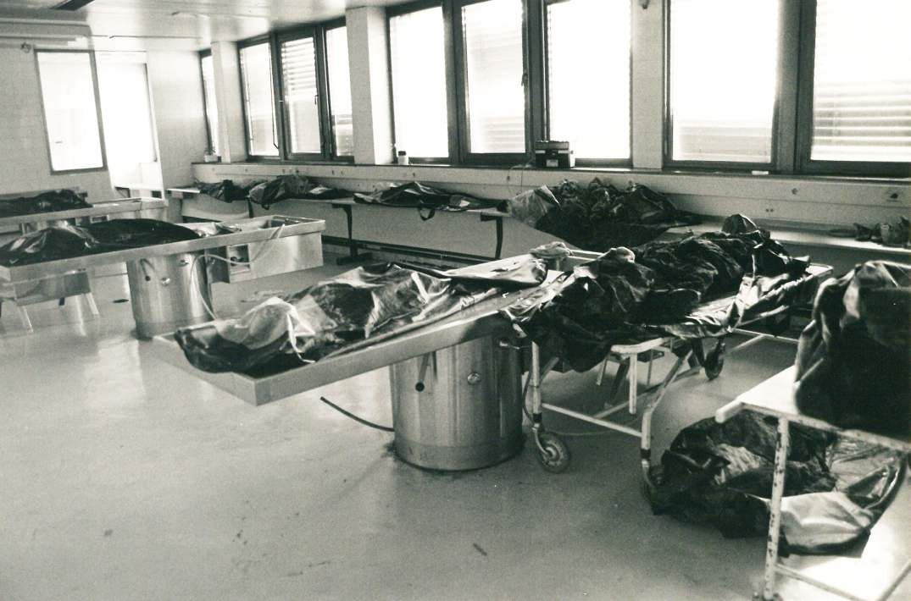
Obdukcijska sala Kliničkoga bolničkog centra Split tijekom identifikacije žrtava Domovinskoga rata (foto: Phil Farnsworth, uz dopuštenje).
Povratak dostojanstva: identifikacija nestalih u Domovinskome ratu /
Bringing Back Dignity: Identification of the Missing in the Homeland War
Obdukcijska sala Kliničkoga bolničkog centra Split tijekom identifikacije žrtava Domovinskoga rata (foto: Phil Farnsworth, uz dopuštenje).
Svjedočanstvo znanosti / A Testimony of Science
Svjedočanstvo znanosti: od prvoga rada o DNK identifikaciji žrtava iz masovnih grobnica do perspektive tridesete obljetnice
A Testimony of Science: From the First Paper on DNA Identification of Mass Grave Victims to a Thirty-Year Perspective
Rad je preuzet iz časopisa Journal of Forensic Sciences, objavljenoga 1996. godine; prijevod na hrvatski jezik izradila je Ana Mršić Zdilar.
prikaz slučaja case report
Identifikacija žrtava rata iz masovnih grobnica u Hrvatskoj, Bosni i Hercegovini standardnim forenzičkim metodama i tipizacijom DNK-a
Dragan Primorac1; Šimun Anđelinović2; Marija Definis-Gojanović2; Irena Drmić2; Boja Režić2; Michael M. Baden3; Mitchell A. Kennedy4; Moses S. Schanfield5; Stephen B. Skakel6; i Henry C. Lee7.
REFERENCIJA: Primorac D., Anđelinović Š., Definis-Gojanović M., Drmić I., Režić B., Baden M. M., Kennedy, M. A., Schanfield M. S., Skakel S. B., Lee H. C. Identifikacija žrtava rata iz masovnih grobnica u Hrvatskoj, Bosni i Hercegovini uporabom standardnih forenzičkih metoda i tipizacije DNK-a. J Forensic Sci 1996:41(5):891–894.
1) Laboratorij za analizu DNK-a na Odsjeku za patologiju i sudsku medicinu, Medicinski fakultet Sveučilišta u Zagrebu, podružnica u Splitu, Klinička bolnica Split, Hrvatska; trenutačno predavač u Kliničkome bolničkom centru u Connecticutu, Odjel za pedijatriju, Farmington, CT, SAD. 2) Izvanredni profesor, docent, asistent na istraživačkom projektu i tehničar, Odjel za patologiju i sudsku medicinu, Klinička bolnica Split, Split, Hrvatska. 3) Ravnatelj, Odjel za forenziku, Državna policija New Yorka, Albany, NY, SAD. 4) Voditelj tehničke podrške, Affymetrix, Santa Clara, CA, SAD. 5) Ravnatelj laboratorija, Analitički centar za gensko testiranje, Denver, CO, SAD. 6) Voditelj projekta, AmeriCares Foundation, New Canaan, CT, SAD. 7) Ravnatelj, Forenzički laboratorij, Državna policija Connecticuta, Meriden, CT, SAD. Djelomično predstavljeno na Međunarodnom simpoziju forenzičkih znanosti, Taipei, Tajvan, studeni 1994.
This paper is reproduced from the Journal of Forensic Sciences, published in 1996.
Identification of War Victims from Mass Graves in Croatia, Bosnia, and Herzegovina by the Use of Standard Forensic Methods and DNA Typing
Dragan Primorac1; Šimun Anđelinović2; Marija Definis-Gojanović2; Irena Drmić2; Boja Režić2; Michael M. Baden3; Mitchell A. Kennedy4; Moses S. Schanfield5; Stephen B. Skakel6; and Henry C. Lee7.
REFERENCE: Primorac D, Anđelinović S, Definis-Gojanović M, Drmić I, Režić B, Baden MM, Kennedy MA, Schanfield MS, Skakel SB, Lee HC. Identification of war victims from mass graves in Croatia, Bosnia, and Herzegovina by the use of standard forensic methods and DNA testing. J Forensic Sci 1996:41(5):891–894.
1) DNA Laboratory at the Department of Pathology and Forensic Medicine, Zagreb University School of Medicine, Split Branch, Clinical Hospital Split, Croatia; presently, instructor, University of Connecticut Health Center, Department of Pediatrics, Farmington, CT. 2) Associate professor, assistant professor, research assistant, and technician, respectively, Department of Pathology and Forensic Medicine, Clinical Hospital Split, Split, Croatia. 3) Director, Forensic Science Unit, New York State Police, Albany, NY. 4) Technical support manager, Affymetrix, Santa Clara, CA. 5) Laboratory director, Analytical Genetic Testing Center, Denver, CO. 6) Project director, AmeriCares Foundation, New Canaan, CT. 7) Director, Forensic Science Laboratory, Connecticut State Police, Meriden, CT. Presented in part at the International Forensic Science Symposium, Taipei, Taiwan, November 1994.
SAŽETAK: Posmrtni ostatci šezdeset i jedne žrtve rata ekshumirani su iz šest masovnih grobnica u Bosni i Hercegovini, godinu i pol nakon ukopa. Standardnim metodama identifikacije, uključujući usporedbu medicinske i stomatološke dokumentacije, identifikaciju na temelju razlikovnih obilježja poput odjeće i osobnih predmeta, te fotografskom superimpozicijom, identificirano je 35 osoba. Nastavlja se predan rad na identifikaciji preostalih 26 osoba. Tipizacija DNK-a provedena je na lokusu HLA DQA1 i pet lokusa PM sustava. Rezultati tipizacije DNK-a potvrđeni su drugim metodama. Profili DNK-a članova obitelji 150 nestalih osoba sada se izrađuju uporabom navedenih šest lokusa. Ti profili DNK-a zatim će se usporediti s DNK profilima iz koštanih i zubnih ostataka neidentificiranih žrtava.
KLJUČNE RIJEČI: forenzičke znanosti, patologija i biologija, identifikacija osoba, DNK, genska tipizacija, rat, masovne grobnice, PCR
Rukopis je predan 12. lipnja 1995.; revidirani rukopis zaprimljen 1. prosinca 1995. i 19. siječnja 1996.; prihvaćen za objavu 22. siječnja 1996.
U ovom se izvješću opisuje naš rad na identifikaciji posmrtnih ostataka 61 osobe primjenom različitih metoda. Tijekom 1993. i 1994. godine, posmrtni ostatci 61 osobe koje su poginule na kupreškome bojištu u Bosni i Hercegovini, prevezeni su na Zavod za patologiju i sudsku medicinu Kliničke bolnice u Splitu. Ekshumirani godinu i pol nakon smrti, posmrtni ostatci iz šest zajedničkih grobnica bili su u uznapredovalome stadiju raspadanja. Istodobno su prikupljeni i dokumentirani podatci o nestalim osobama s toga područja (ukupno 150), koje su ili nestale ili su ubijene tijekom travanjske agresije srpskih snaga 1992. godine. U svim slučajevima forenzički stručnjaci proveli su detaljan pregled odjeće i osobnih predmeta pokojnika, opisali posebna obilježja, analizirali
ABSTRACT: The postmortem remains of sixty-one war victims were excavated from 6 mass graves in Bosnia and Herzegovina one and a half years after interment. Using standard identification methods, including the matching of medical and dental records, the recognition of distinguishing characteristics such as the use of clothing and belongings, and video superimposition, 35 persons were identified. For the remaining 26 persons identification efforts continue. DNA typing was performed at the HLA DQA1 locus and five PM system loci. Results from DNA typing were confirmed by other methods. DNA profiles of family members of 150 missing persons are now being developed using the 6 loci. These DNA profiles will then be compared with those generated from the bone and teeth remains of the unidentified victims.
KEYWORDS: forensic science, pathology and biology, human identification, DNA, genetic typing, war, mass graves, PCR
Received for publication 12 June 1995; revised manuscript received 1 Dec. 1995 and 19 Jan. 1996; accepted for publication 22 Jan. 1996.
This report describes our work on the identification of the postmortem remains of 61 persons using a variety of applicable methods. During 1993 through 1994, the postmortem remains of 61 persons who died on the Kupres battlefield of Bosnia and Herzegovina (1) were transported to the Department of Pathology and Forensic Medicine, Clinical Hospital in Split, Croatia. Excavated one and half years after death, the remains from six common graves were in an advanced stage of decomposition. At the same time, data on missing persons from that region (totaling 150), who had either disappeared or had been killed during the April 1992 Serbian aggression were collected and registered. In all cases, forensic examiners performed a detailed examination of the clothing and belongings of the dead, described special features,
Identifikacija žrtava rata iz masovnih grobnica u Hrvatskoj, Bosni i Hercegovini standardnim forenzičkim metodama i tipizacijom DNK-a / Identification of War Victims from Mass Graves in Croatia, Bosnia, and Herzegovina by the Use of Standard Forensic Methods and DNA Typing
koštane ostatke radi procjene spola i tjelesne visine te usporedili zaživotnu stomatološku dokumentaciju s posmrtnim stomatološkim nalazima. Uz to, provedene su i rendgenske usporedbe morfologije kostiju. Identifikacija više osoba obavljena je superimpozicijom snimaka lubanja i fotografija. Prikupljeni zaživotni podatci uspoređeni su s nalazima obdukcije.
Zbog uznapredovaloga stupnja razgradnje mnogih tijela, razmatrane su mogućnosti djelomične identifikacije žrtava rata tipizacijom DNK-a iz kostiju i zuba (2). Lee i sur. (3) navode da se iz spužvaste kosti može dobiti do 10 μg DNK-a, a iz kompaktne kosti do 0,5 μg DNK-a po miligramu početnoga tkiva. Najbolji način za dobivanje genetičkih informacija iz uzoraka s degradiranim DNK-om test je utemeljen na PCR-u. Stoga je analiziran lokus HLA DQA1 i pet lokusa sustava AmpliType PM.
MATERIJAL I METODE
Izvori DNK-a Tijekom obdukcija prikupljeni su uzorci dugih kostiju i zuba za analizu DNK-a. Uzorci kostiju i zuba uzeti su od sljedećih osoba: osoba br. 4, bedrena kost; osoba br. 14, goljenična kost i zub; i osoba br. 44, bedrena kost. Količina kosti prikupljene za analizu DNK-a iznosila je od 5 do 20 g. Zubi za ekstrakciju DNK-a pripremljeni su prema prije opisanome postupku (4). Iz uzoraka kostiju dobiveno je prosječno 100 ng ljudskoga DNK-a po gramu usitnjene kosti. Uzorci kostiju i zuba pohranjeni su na −20°C. Istodobno su za tipizaciju DNK-a prikupljeni uzorci krvi (po 5 ml) i uzorci kose od članova svake obitelji.
Ekstrakcija DNK-a Nakon čišćenja kontaminiranih površina uzoraka kostiju i zuba, uzorci su usitnjeni u fini prah. Otprilike 1,0 g koštanoga praha dodano je u 450 μL pufera za ekstrakciju (10 mM tris-klo-
analyzed skeletal remains to estimate sex and height, and compared premortem dental records with postmortem dental records. In addition, X-ray comparisons were performed for bone morphology. Identification of several persons by the superimposition of skull and photographic images was performed. The compiled, premortem data were compared with the autopsy findings.
Because of the advanced decomposition of many bodies, we considered identifying war victims partly by DNA typing from bones and teeth (2). It was reported by Lee et al. (3) that the recovery of DNA can be up to 10 μg from spongy bone or up to 0.5 μg from compact bone per milligram of starting tissue. The best way to obtain genetic information from samples with degraded DNA is a PCR-based test. We therefore analyzed the HLA DQA1 locus and the five loci of the AmpliType PM typing kit.
MATERIAL AND METHODS
DNA Sources Samples of long bones and teeth were collected for DNA analysis at the time of the autopsies. Bone and teeth specimens were collected from the following individuals: No. 4, femur; No. 14, tibia and tooth; and No. 44, femur. The amount of bone collected for DNA analysis varied from 5 to 20 g. Teeth for DNA extraction were prepared as described (4). From the bone samples, an average of 100 ng of human DNA per gram of powdered bone were recovered. The bone and teeth samples were stored at −20°C. At the same time, blood samples of 5 mL each and hair samples were collected for DNA typing from members of each family.
DNA Extraction After cleaning the contaminated surfaces of the bone and tooth samples, the specimens were pulverized into a fine powder. Approximately 1.0 g
rovodične kiseline [HCl], pH 7,5; 1 mM etilendiamintetraoctene kiseline [EDTA], pH 8; 100 mM natrijeva klorida [NaCl] i 2%-tni natrijev dodecil-sulfat [SDS]) u prisutnosti proteinaze K (200 μg/ml) (Gibco BRL). Ova je otopina inkubirana na 56°C tijekom 18 sati, a DNK je izoliran organskom ekstrakcijom (3,4).
Kvantifikacija DNK-a Količina ljudskoga DNK-a određena je slot blot analizom s pomoću kompleta za kvantifikaciju ljudskoga DNK-a QuantiBlot™ (Roche Molecular Systems, Inc., Branchburg, NJ).
Amplifikacija i tipizacija DNK-a Amplifikacija PCR-om provedena je na uređaju Perkin-Elmer GeneAmp PCR System 9600 s pomoću originalnih kompleta za amplifikaciju i tipizaciju Amplitype HLA DQA1 PCR te originalnog kompleta za amplifikaciju i tipizaciju AmpliType PM PCR. Hibridizacija i detekcija amplificiranih lokusa HLA-DQA1 i PM provedene su prema uputama proizvođača.
Analiza rezultata tipizacije Profili DNK-a dobiveni iz kostiju i zuba analizirani su i uspoređeni s profilima DNK-a živih srodnika. Relativna učestalost podudaranja u populaciji izračunata je prema metodama koje su opisali Schanfield i Stern (5). Na temelju tih vrijednosti izračunani su omjer vjerojatnosti u korist roditeljstvu ili srodstvu te Bayesova vjerojatnost roditeljstva ili srodstva, s pomoću formule P = 1 / (1 + relativna učestalost u populaciji), uz pretpostavku da prethodna vjerojatnost iznosi 0,5. Upotrijebljene su učestalosti alela dobivene iz združenoga uzorka hrvatske populacije.
of bone powder was added to 450 μL of extraction buffer (10 mM Tris-hydrochloric acid [HCl] pH 7.5, 1 mM ethylenediaminetetraacetate [EDTA] pH 8, 100 mM sodium chloride [NaCl], and 2% sodium dodecyl sulfate [SDS]) in the presence of proteinase K (200 μg/mL) (Gibco BRL). This solution was incubated at 56°C for 18 h, and DNA was isolated by organic extraction (3,4).
DNA Quantification The quantity of human DNA was determined by slot blot analysis using the QuantiBlot™ Human DNA Quantitation Kit (Roche Molecular Systems, Inc., Branchburg, NJ).
DNA Amplification and Typing PCR amplification was performed on the Perkin-Elmer GeneAmp PCR System 9600, using the original Amplitype HLA DQA1 PCR Amplification and Typing Kit, as well as the original AmpliType PM PCR Amplification and Typing Kit. Hybridization and detection of amplified HLA DQA1 and PM DNA were performed according to the manufacturer’s instructions.
Analysis of Typing Results DNA types from bone and teeth were analyzed and compared to the DNA types from living relatives. The relative population frequency of the matches were calculated using the methods described by Schanfield and Stern (5). From these values, the likelihood in favor of parentage, or relatedness, and Bayesian probability of parentage or relatedness as calculated using the formula P = 1 / 1 + relative population frequency, assuming a prior probability of 0.5. Allele frequencies used were a pooled sample of Croatians.
Identifikacija žrtava rata iz masovnih grobnica u Hrvatskoj, Bosni i Hercegovini standardnim forenzičkim metodama i tipizacijom DNK-a / Identification of War Victims from Mass Graves in Croatia, Bosnia, and Herzegovina by the Use of Standard Forensic Methods and DNA Typing
REZULTATI
Na temelju podataka dobivenih tijekom razmjene posmrtnih ostataka i iskaza očevidaca utvrđeno je da ostatci 61 osobe potječu iz šest masovnih grobnica. Svi posmrtni ostatci bili su u uznapredovalome stadiju raspadanja, dok su neki bili posve skeletizirani. Pedeset i osam pokojnika imalo je potpunu ili djelomičnu vojnu odoru, a dvoje je bilo odjeveno u civilnu odjeću. U jednome je slučaju pronađena samo odjeća, bez ijednoga dijela tijela. Sedam tijela bilo je djelomično ili potpuno saponificirano, a jedno je tijelo bilo karbonizirano. Budući da su vojne odore bile identične, nisu pružile razlikovna obilježja. Utvrđeno je da su svi posmrtni ostatci pripadali muškarcima. Trideset i pet osoba uspješno je identificirano
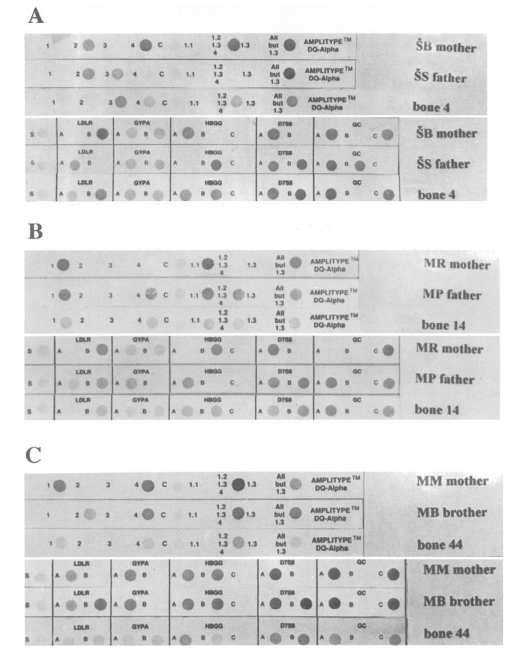
RESULTS
From the information given during the exchange of remains and from eyewitnesses, it was determined that the 61 of the remains came from 6 mass graves. All remains were in an advanced state of decomposition; some were only skeletal. Fifty-eight had full or partial military uniforms, and two were clothed as civilians. In one case, only the clothes, without any part of the body, were recovered. Seven bodies were partially or completely saponified, and one body was carbonized. Since military uniforms are identical, they provided no distinguishing clues. It was established that all remains were male. Thirty-five persons were successfully identified using combined techniques of identification. In every case a
Slika 1. Sažetak rezultata tipizacije DNK-a nestalih osoba i pretpostavljenih srodnika (majke, oca ili brata). Panel A prikazuje rezultate tipizacije iz genotipa čvrstoga koštanog tkiva 4 (AB, AB, AB, AB, AC; 3; 4) u usporedbi s rezultatima tipizacije DNK-a iz genotipa majke (BB, AB, AA, AA, AC; 2; 4) i genotipa oca (AA, AB, BB, AB, AB; 2; 3). Panel B prikazuje rezultate tipizacije iz genotipa čvrstoga koštanoga tkiva 14 (BB, AB, AB, AB, AC; 1.1; 4) u usporedbi s rezultatima tipizacije DNK-a iz genotipa majke (BB, AB, BB, AA, CC; 1.1; 1.1) i genotipa oca (AB, AA, AA, AB, AC; 1.1; 4). Panel C prikazuje rezultate tipizacije DNK-a iz genotipa čvrstoga koštanog tkiva 44 (AB, AB, AB, AB, AC; 1.2, 4) u usporedbi s rezultatima tipizacije DNK-a iz genotipa brata (AB, AA, AB, AB, AC; 2, 4) i genotipa majke (AA, AA, AB, AA, AC; 1.2; 4).
Fig. 1. Summarizes the results of DNA typing from missing persons and presumptive relatives (mother, father, or brother). Panel A shows typing results from compact bone 4 genotype (AB, AB, AB, AB, AC; 3; 4) compared with DNA typing results from mother’s genotype (BB, AB, AA, AA, AC; 2; 4) and father’s genotype (AA, AB, BB, AB, AB; 2; 3). Panel B shows typing results from compact bone 14 genotype (BB, AB, AB, AB, AC; 1.1; 4) compared with DNA typing results from mother’s genotype (BB, AB, BB, AA, CC; 1.1; 1.1) and father’s genotype (AB, AA, AA, AB, AC; 1.1; 4). Panel C shows results of DNA typing from compact bone 44 genotype (AB, AB, AB, AB, AC; 1.2, 4) compared with DNA typing results from brother’s genotype (AB, AA, AB, AB, AC; 2, 4) and from mother’s genotype (AA, AA, AB, AA, AC; 1.2; 4).
kombiniranim tehnikama identifikacije. U svakome slučaju pozitivna identifikacija temeljila se na podatcima dobivenima iz dviju ili više tehnika. Međutim, detalji na odjeći, kao i civilno rublje i osobni predmeti, pridonijeli su identifikaciji u 31 slučaju. U 32 slučaja tjelesna visina procijenjena je na temelju duljine dugih kostiju i drugih koštanih ostataka. Zbog nedostatka dugih kostiju visina nije mogla biti utvrđena u gotovo pola slučajeva. Stomatološka dokumentacija potvrdila je identitet 15 osoba. Individualna obilježja, poput starih ožiljaka i prijeloma, bila su korisna u sedam slučajeva. Uz daktiloskopske i stomatološke analize, radiološki je pregled kostiju također bio koristan u određenim slučajevima (6).
U ovome je radu identitet četiriju osoba potvrđen rendgenskom usporedbom oblika i veličine kostiju te znakovima starih prijeloma. Samo je 19 osoba identificirano na temelju stomatološke i medicinske dokumentacije. Dva su glavna razloga za to: (1) nedostatak odgovarajuće zaživotne dokumentacije i (2) veliki broj izrazito oštećenih lubanja, bez gornje ili donje čeljusti, ili bez ijedne čeljusti. U pet slučajeva utvrđivanje identiteta provedeno je (kompozitnom) fotografskom superimpozicijom. Fotografska superimpozicija izvedena je usporedbom lubanja žrtava s njihovim fotografijama (7,8). Pri identifikaciji lubanje, uzimajući u obzir debljinu mekih tkiva te s pomoću suvremenih fotografskih ili elektroničkih postupaka, identifikacija je moguća na temelju brojnih podudarnih referentnih točaka u usporedivom materijalu (9). Ostale metode identifikacije uključivale su sedam slučajeva u kojima su pomogli podatci o okolnostima smrti (vrsta i lokalizacija ozljede, iskazi očevidaca i mjesto ukopa) te osam slučajeva u kojima su boja i duljina kose bile korisne. Vrsta ozljede pomogla je razjasniti okolnosti smrti u određenim slučajevima. Na pet lubanja u ovoj skupini utvrđene su strijelne rane. DNK je uspješno amplificiran i tipiziran na lokusima HLA DQA1 i PM.
positive identification was based on the data from two or more techniques. However, details on the clothes, as well as civilian underwear and personal belongings, aided in the identification of 31 cases. In 32 cases, the statures were estimated from the length of long bones and other bone remains. Because of the lack of long bones, height could not be established in almost half the cases. Dental records confirmed the identity of 15 persons. Special marks (such as old scars and old fractures) were useful in seven cases. In addition to fingerprints and dental examinations, in some circumstances, radiographic examination of the bone was also helpful in identification of the remains (6).
In our work, the identities of four individuals were confirmed by X-ray comparison of bone shape, size, or indications of old fractures. Only 19 persons were identified by dental and medical records. The two main reasons for that were: (1) the lack of adequate antemortem records and (2) a great number of extremely damaged skulls, without upper or lower jaws, or both. Identity determination was established by means of the image superimposition technique in five cases. Video superimposition was done comparing skulls of victims and their photographs (7,8). In skull identification, by taking soft tissue thickness into consideration and with the help of modern photographic or electronic super projection processes, identification is possible as a result of numerous reference point matches in comparable material (9). Other methods of identification included seven cases in which we were aided by data indicating the circumstances of death (type and location of wound, eyewitness accounts, and place of burial) and eight cases in which hair color and length have been useful. Wound types helped clarify conditions of death in some cases. Gunshot wounds were found on five skulls in this category.
The DNA was successfully amplified and typed at the HLA DQA1 and PM loci. Figure 1 shows
Identifikacija žrtava rata iz masovnih grobnica u Hrvatskoj, Bosni i Hercegovini standardnim forenzičkim metodama i tipizacijom DNK-a / Identification of War Victims from Mass Graves in Croatia, Bosnia, and Herzegovina by the Use of Standard Forensic Methods and DNA Typing
Na slici 1 prikazani su rezultati podudaranja profila DNK-a živih srodnika i triju nestalih osoba. Nakon primjene ove metode, identitet triju osoba potvrđen je dodatnom usporedbom zaživotnih podataka s posmrtnim nalazima.
RASPRAVA
U nedostatku zaživotnih podataka za usporedbu, identifikacija ljudskih posmrtnih ostataka izuzetno je otežana (10). Zbog raspadanja tijela i opsežnih posmrtnih promjena, čak ni uzrok smrti često nije bio očit. Budući da su tijela bila nepažljivo ukopana i ekshumirana, identifikacija je bila dodatno otežana. Okolnosti ukopa i ekshumacije varirale su. Tipizacija DNK-a omogućila je dobivanje podataka iz ljudskih koštanih ostataka što je bila dodatna metoda za uspješnu identifikaciju.
Mnogi autori ističu poteškoće forenzičke analize DNK-a iz koštanih uzoraka (10,11). Velik broj uzoraka sadržavao je nedovoljnu količinu DNK-a ili je DNK bio degradiran ili kontaminiran. Budući da primjena polimorfizama dužine restrikcijskih fragmenata (RFLP) nije moguća u slučajevima izrazite degradacije DNK-a (12), PCR omogućuje amplifikaciju relativno kratke ciljane sekvencije DNK-a i naknadnu tipizaciju DNK-a iz kostiju izloženih ekstremnim utjecajima okoliša (13). U ovome su radu rezultati tipizacije DNK-a bili u skladu s profilima potomaka poznatih roditelja ili srodnika. Koristeći učestalosti alela koje su nedavno dobivene u hrvatskoj populaciji na lokusima LDLR, GYPA, HBGG, D7S8, Gc i HLA-DQA1, izračunata vjerojatnost roditeljstva u sljedećim slučajevima iznosila je: 99,617 % za slučaj 4, 99,446 % za slučaj 14 te 98,393 % za slučaj 44.
Za obradu koštanih uzoraka korištene su metode ekstrakcije fenolom i Chelexom. U ovome radu metoda ekstrakcije fenolom pokazala se učinkovitijom. Rezultati nisu dobiveni kad je DNK
the DNA typing results of matches between living relatives and three missing persons. Using this method, three identities were consistent in conjunction with additional antemortem and postmortem data.
DISCUSSION
In the absence of antemortem data for comparison, identification of human remains is exceedingly difficult (10). Because of advanced decomposition and extensive postmortem changes, even the cause of death was often not apparent. Since the bodies were buried and excavated carelessly, identification was further impaired. The circumstances of burying and excavation varied. DNA typing offered the possibility of obtaining information from human skeletal remains as an additional method for successful identification.
Many authors emphasize the difficulties in forensic DNA analysis from bone specimens (10,11). A large number of specimens contained insufficient quantities of DNA, or the DNA from these specimens was degraded or contaminated. Since the use of restriction length fragment polymorphisms (RFLPs) is not applicable in cases involving extensive degradation of DNA (12), PCR permits the amplification of a relatively small DNA target sequence and subsequent DNA typing from bone exposed to extreme environmental conditions (13). In our work, results of DNA typing are consistent with those of the offspring of known parents or relatives. Using allele frequencies recently obtained from the Croatian population at loci LDLR, GYPA, HBGG, D7S8, Gc, and HLA-DQA1,8 we calculated the probability of parenthood in the following cases: 99.617% for Case 4, 99.446% for Case 14, and a probability of relatedness of 98.393% for Case 44.
iz kostiju ekstrahiran s pomoću smole Chelex (8). Međutim, ekstrakcija uzoraka krvi s pomoću Chelexa bila je korisna. Također je utvrđeno da korak dekalcifikacije nije nuždan za dobivanje dovoljne količine DNK-a iz koštanih ostataka, što je u skladu s nalazima Fishera i suradnika (12). Uz to, utvrđeno da je Centricon® mikropurifikacija korisna za pročišćavanje ekstrakta, osobito u slučajevima kada je nuklearni DNK bio izrazito degradiran.
Trenutno smo jedini forenzički laboratorij za analizu DNK-a na području gdje je broj žrtava rata iz Hrvatske i Bosne i Hercegovine između 1991. i 1992. godine premašio 150.000 (14). Laboratorij je zaslužan za točnu identifikaciju mnogih od tih žrtava. Trenutačno testiramo nove metode, poput tipizacije mitohondrijskoga DNK-a radi identifikacije ljudskih ostataka (15).
Važnost identifikacije žrtava rata obuhvaća humanitarne, medicinske i pravne aspekte. Posmrtno utvrđivanje identiteta može biti znatno otežano. Tipizacija DNK-a stoga može biti korisna metoda u slučajevima kad forenzički patolozi nemaju dovoljno podataka za identifikaciju drugim sredstvima.
Zahvale Zahvaljujemo dr. Mitchellu M. Hollandu, dr. Bruceu Budowleu, dr. Barbari C. Wolf i dr. Olgi J. Schamraj na korisnim prijedlozima. Također zahvaljujemo gđi Mary Louise Stover, Galeu B. Gardineru te dr. Davidu W. Roweu, dr. Alexanderu C. Lichtleru i dr. Marku S. Kronenbergu na pomoći u pripremi rukopisa. Isto tako, zahvaljujemo Perkin-Elmeru i AmeriCaresu na sponzoriranju ovoga projekta.
Both phenol and Chelex extraction methods have been used for the processing of bone samples. In this work, the phenol extraction method was found to be more effective. No results were obtained when DNA was extracted from bone in the presence of Chelex resin (8). In contrast, Chelex extraction of blood samples was useful. We also found that the decalcification step was not required for sufficient DNA yield from skeletal remains confirming the findings of Fisher et al. (12). In addition, we found Centricon® micropurification to be useful for purifying the extract, particularly in cases in which nuclear DNA was highly degraded.
Currently, we are the only DNA forensic laboratory in the area in which war victims from Croatia and Bosnia and Herzegovina totaled more than 150,000 between 1991 and 1992 (14). The laboratory has the responsibility for accurate identification for many of these victims. We are in the process of testing new methods such as mitochondrial DNA typing for identification of human remains (15).
The importance of identifying victims from a war situation involves humanitarian as well as medical and legal concerns. Establishing postmortem identity can be very difficult. DNA typing, therefore, represents a potentially useful method in cases in which forensic pathologists have too little data for identification by other means.
Acknowledgments We are grateful to Drs. Mitchell M. Holland, Bruce Budowle, Barbara C. Wolf, and Olga J. Schamraj for their useful suggestions. We would also like to thank Ms. Mary Louise Stover, Gale B. Gardiner, and Drs. David W. Rowe, Alexander C. Lichtler, and Mark S. Kronenberg, for help in preparing the manuscript. In addition, we thank Perkin-Elmer and AmeriCares for sponsoring this project.
Identifikacija žrtava rata iz masovnih grobnica u Hrvatskoj, Bosni i Hercegovini standardnim forenzičkim metodama i tipizacijom DNK-a / Identification of War Victims from Mass Graves in Croatia, Bosnia, and Herzegovina by the Use of Standard Forensic Methods and DNA Typing
Referencije 1) Gunby P. From mass graves of war in former Yugoslavia. JAMA 1994;272:1804–6. 2) Andelinovic S, Definis-Gojanovic M, Drmic I, Galic M, Ivanovic J, Rezic B, Primorac D, et al. DNA technology in identification of war victims in Croatia. Croatian Med J 1994;35:123. 3) Lee HC, Pagliaro EM, Berka KM, Folk NL, Anderson DT, Ruano G, et al. Genetic markers in human bone I: deoxyribonucleic acid (DNA) analysis. J Forensic Sci 1991;36:320–30. 4) Smith BC, Fischer DL, Weedn VW, Warnock GR, Holland MM. A systematic approach to the sampling of dental DNA. J Forensic Sci 1993;38:1194–209. 5) Schanfield MS, Stern CM. Application of DNA technology to parentage identification. U: Schanfield MS, editor. International methods of forensic DNA analysis. Dubai, UAE. The First Forensic Experts Conference; 1994. U tisku. 6) Haerting A. The medicolegal identification of victims of major disasters. Rev Stomatologie Chir Maxillofac 1986;87:25–9. 7) Bastian R, Dalitz G, Woodward C. Video superimposition of skulls and photographic portraits: a new aid to identification. J Forensic Sci 1986;31:1374–9. 8) Koelmeyer TD. Videocamera superimposition and facial reconstruction as an aid to identification. Am J Forensic Med Pathol 1982;3:45–8. 9) Gruner O. Identification in forensic medicine—significance and proof value. Z Rechtsmed 1989;103:73–83. 10) Hagelberg E, Gray IC, Jeffreys AJ. Identification of the skeletal remains of a murder victim by DNA analysis. Nature 1991;352:427–9. 11) Hochmeister MN, Budowle B, Borer UV, Eggman U, Comey CT, Dirnhofer R. Typing of deoxyribonucleic acid (DNA) extracted from compact bone from human remains. J Forensic Sci 1991;36:1649–61. 12) Fisher LD, Holland MM, Mitchell L, Sledzik SP, Wilcox WA, Wadhams M, et al. Extraction, evaluation, and amplification of DNA from decalcified and undecalcified United States civil war bone. J Forensic Sci 1993;38:60–8. 13) Lee H. Analysis of human bone DNA by PCR. Forensic applications of PCR technology. Laboratory Division of The Federal Bureau of Investigation, FBI Academy, Quantico, VA, May 1991. 14) Editorial. The Third Balkan War: Red Cross bleeding. Croatian Med J 1993;34:5–20. 15) Holland MM, Fisher LD, Mitchell GL, Rodriques CW, Canik JJ, Merril RC, et al. Mitochondrial DNA sequence analysis of human skeletal remains: Identification of remains from the Vietnam war. J Forensic Sci 1993;38:542–53.
Zahtjeve za pretiske ili dodatne informacije slati na: Dr. med. Dragan Primorac University of Connecticut Health Center Department of Pediatrics 263 Farmington Ave. Farmington, CT 06030
References 1) Gunby P. From mass graves of war in former Yugoslavia. JAMA 1994;272:1804–6. 2) Andelinovic S, Definis-Gojanovic M, Drmic I, Galic M, Ivanovic J, Rezic B, Primorac D, et al. DNA technology in identification of war victims in Croatia. Croatian Med J 1994;35:123. 3) Lee HC, Pagliaro EM, Berka KM, Folk NL, Anderson DT, Ruano G, et al. Genetic markers in human bone I: deoxyribonucleic acid (DNA) analysis. J Forensic Sci 1991;36:320–30. 4) Smith BC, Fischer DL, Weedn VW, Warnock GR, Holland MM. A systematic approach to the sampling of dental DNA. J Forensic Sci 1993;38:1194–209. 5) Schanfield MS, Stern CM. Application of DNA technology to parentage identification. In: Schanfield MS, editor. International methods of forensic DNA analysis. Dubai, UAE. The First Forensic Experts Conference; 1994. In press. 6) Haerting A. The medicolegal identification of victims of major disasters. Rev Stomatologie Chir Maxillofac 1986;87:25–9. 7) Bastian R, Dalitz G, Woodward C. Video superimposition of skulls and photographic portraits: a new aid to identification. J Forensic Sci 1986;31:1374–9. 8) Koelmeyer TD. Videocamera superimposition and facial reconstruction as an aid to identification. Am J Forensic Med Pathol 1982;3:45–8. 9) Gruner O. Identification in forensic medicine—significance and proof value. Z Rechtsmed 1989;103:73–83. 10) Hagelberg E, Gray IC, Jeffreys AJ. Identification of the skeletal remains of a murder victim by DNA analysis. Nature 1991;352:427–9. 11) Hochmeister MN, Budowle B, Borer UV, Eggman U, Comey CT, Dirnhofer R. Typing of deoxyribonucleic acid (DNA) extracted from compact bone from human remains. J Forensic Sci 1991;36:1649–61. 12) Fisher LD, Holland MM, Mitchell L, Sledzik SP, Wilcox WA, Wadhams M, et al. Extraction, evaluation, and amplification of DNA from decalcified and undecalcified United States civil war bone. J Forensic Sci 1993;38:60–8. 13) Lee H. Analysis of human bone DNA by PCR. Forensic applications of PCR technology. Laboratory Division of The Federal Bureau of Investigation, FBI Academy, Quantico, VA, May 1991. 14) Editorial. The Third Balkan War: Red Cross bleeding. Croatian Med J 1993;34:5–20. 15) Holland MM, Fisher LD, Mitchell GL, Rodriques CW, Canik JJ, Merril RC, et al. Mitochondrial DNA sequence analysis of human skeletal remains: Identification of remains from the Vietnam war. J Forensic Sci 1993;38:542–53.
Address requests for reprints or additional information to: Dragan Primorac, M.D. University of Connecticut Health Center Department of Pediatrics 263 Farmington Ave. Farmington, CT 06030
Rad je izvorno objavljen u časopisu ST-OPEN, a za njegovu reprodukciju i prijevod dobiveno je odobrenje uredništva; rad je na hrvatski prevela prof. dr. sc. Željana Bašić.
Hrvatski doprinos razvoju prve sustavne identifikacije žrtava iz masovnih grobnica analizom DNK-a
Šimun Anđelinović1*, Dragan Primorac2-7*, Marija Definis1, Arijana Vuko1, Ivana Kružić8, Željana Bašić8†, Ivan Jerković8†
1) Klinički bolnički centar Split, Split, Hrvatska 2) Bolnica Sveta Katarina, Zabok/Zagreb, Hrvatska 3) University of Pittsburgh School of Medicine, Pittsburgh, PA, SAD 4) Medicinski fakultet Split, Sveučilište u Splitu, Split, Hrvatska 5) Medicinski fakultet Osijek, Sveučilište Josipa Jurja Strossmayera u Osijeku, Osijek, Hrvatska 6) Henry C. Lee College of Criminal Justice and Forensic Sciences, University of New Haven, New Haven, CT, SAD 7) Eberly College of Science, The Pennsylvania State University, University Park, PA, SAD 8) Fakultet za forenzičke znanosti, Sveučilište u Splitu, Split, Hrvatska * Ovi autori jednako su pridonijeli radu i dijele prvo autorstvo. † Ovi autori jednako su pridonijeli radu i dijele zadnje autorstvo. e-lokator: e2026.2619.3 Citirati kao: Anđelinović Š, Primorac D, Definis M, Vuko A, Kružić I, Bašić Ž, Jerković I. Croatian contributions to the first systematic DNA-based large-scale identification of mass graves war victims ST-OPEN. 2026;7:e2026.2619.3 Skraćeni navod: Anđelinović et al. DOI: https://doi.org/10.48188/so.7.6 Kontakt: Željana Bašić, Fakultet za forenzičke znanosti, Sveučilište u Splitu, Split, Hrvatska, zbasic@unist.hr, https://orcid. org/0000-0002-8327-1978
This paper was originally published in the journal ST-OPEN, and permission for its reproduction and translation was granted by the editorial board.
Croatian contributions to the first systematic DNA-based large-scale identification of mass graves war victims
Šimun Anđelinović1*, Dragan Primorac2-7*, Marija Definis1, Arijana Vuko1, Ivana Kružić8, Željana Bašić8†, Ivan Jerković8†
1) University Hospital of Split, Split, Croatia 2) St. Catherine Specialty Hospital, Zabok/Zagreb, Croatia 3) University of Pittsburgh School of Medicine, Pittsburgh, Pennsylvania, USA 4) University of Split School of Medicine, Split, Croatia 5) Medical School, Josip Juraj Strossmayer University of Osijek, Osijek, Croatia 6) Henry C. Lee College of Criminal Justice and Forensic Sciences, University of New Haven, New Haven, Connecticut, USA 7) Eberly College of Science, The Pennsylvania State University, University Park, Pennsylvania, USA 8) University of Split Faculty of Forensic Sciences, Split, Croatia * Joint first authorship. † Joint senior authorship. e-locator: e2026.2619.3 Cite as: Anđelinović Š, Primorac D, Definis M, Vuko A, Kružić I, Bašić Ž, Jerković I. Croatian contributions to the first systematic DNA-based large-scale identification of mass graves war victims. ST-OPEN. 2026;7:e2026.2619.3 Authors’ abbreviations: Anđelinović et al. DOI: https://doi.org/10.48188/so.7.6 Correspondence to: Željana Bašić, Faculty of Forensic Sciences, University of Split, Split, Croatia; zbasic@unist.hr, https:// orcid.org/0000-0002-8327-1978
SAŽETAK
Početkom 1990-ih započinje opsežna DNK identifikacija ratnih žrtava, kao odgovor na dotad nezabilježene forenzičke izazove povezane s masovnim grobnicama i izrazito degradiranim ljudskim ostacima, otkrivenima tijekom i nakon ratova u Hrvatskoj i Bosni i Hercegovini. Ovaj rad iz povijesne perspektive preispituje početke i dugoročni utjecaj prvih sustavnih primjena metoda analize DNK-a u identifikaciji žrtava iz masovnih grobnica nastalih u ratnome kontekstu. Te su aktivnosti započele između 1993. i 1994. godine na današnjemu Kliničkom zavodu za patologiju, sudsku medicinu i citologiju Kliničkoga bolničkog centra Split. Integracijom klasičnih forenzičkih metoda s ranim metodama tipiziranja DNK-a utemeljenih na PCR-u te uspostavom referentne baze podataka srodnika, hrvatski su znanstvenici, u suradnji s vodećim američkim stručnjacima, razvili metodološki okvir koji je omogućio razrješavanje složenih slučajeva identifikacije žrtava iz masovnih grobnica u ratnim uvjetima. Njihov je rad prepoznat i na razini Kongresa Sjedinjenih Američkih Država 1995. godine, čime je dana rijetka institucijska potvrda forenzičkomu programu koji nije nastao u vodećim zapadnim znanstvenim središtima. Tijekom narednih triju desetljeća pristupi razvijeni u tome kontekstu prerasli su u standardiziranu forenzičku praksu koja obuhvaća analizu STR-ova, mitohondrijskoga DNK-a i forenzičku genomiku. Njihova se primjena proširila daleko izvan regionalnoga konteksta te je pridonijela oblikovanju globalnih pristupa identifikaciji žrtava katastrofa i poslijeratnoj obnovi. Hrvatsko iskustvo tako označuje važnu prekretnicu u prijelazu od primjene analize DNK-a u pojedinačnim slučajevima do njezine sustavne i široke primjene u identifikaciji osoba, s trajnim znanstvenim, institucijskim i humanitarnim učincima.
Ključne riječi: DNK identifikacija; žrtve rata; masovne grobnice; forenzička genetika; Hrvatska; međunarodna suradnja; identifikacija žrtava katastrofa
ABSTRACT
The large-scale DNA identification of war victims emerged in the early 1990s as a response to unprecedented forensic challenges posed by mass graves and highly degraded human remains during and after the wars in Croatia and Bosnia and Herzegovina. This historical perspective revisits the origins and long-term impact of the first systematic applications of DNA-based technology during the massive identification of mass grave victims during wartime, which started between 1993 and 1994 at the Clinical Department of Pathology, Forensic Medicine and Cytology, University Hospital of Split. Through the integration of classical forensic methods with early PCR-based DNA typing and the establishment of a kinship reference database, Croatian scientists, in collaboration with leading American experts, developed a methodological framework capable of resolving complex mass-fatality cases under wartime conditions. This work was formally recognized in 1995 before the United States Congress, providing rare institutional validation of a forensic program operating outside established Western infrastructures. Over the following three decades, the approaches developed in this context evolved into a standardized forensic practice that incorporates STR analysis, mitochondrial DNA, and forensic genomics. Their application has extended far beyond the regional context and has contributed to the global approach to disaster victim identification and post-conflict recovery. The Croatian experience thus represents an important moment in the transition of DNA analysis from isolated forensic use to a systematic, large-scale tool for human identification, with continuous scientific, institutional, and humanitarian implications.
Keywords: DNA identification; war victims; mass graves; forensic genetics; Croatia; international collaboration; disaster victim identification
Hrvatski doprinos razvoju prve sustavne identifikacije žrtava iz masovnih grobnica analizom DNK-a / Croatian contributions to the first systematic DNA-based large-scale identification of mass graves war victims
UVOD
Identifikacija nestalih osoba ključan je korak ne samo za osobna razrješenja obiteljima, nego i za ostvarenje poslijeratne pravde, pri čemu često predstavlja jedini neosporni dokaz (1). U posljednjim desetljećima 20. stoljeća uobičajeni forenzički postupci identifikacije bili su analiza zuba i otisaka prstiju te usporedba zaživotnih i posmrtnih podataka (2). Analiza DNK-a postala je najpouzdanija metoda identifikacije tek krajem 20. stoljeća (3, 4), a u ranoj primjeni koristila se povremeno, uglavnom samo za pojedinačne forenzičke slučajeve i masovne katastrofe zatvorenoga tipa (5–8).
Nakon izbijanja rata u Hrvatskoj 1991. godine, a potom i u Bosni i Hercegovini (9), do 1992. godine više je od 150 000 osoba poginulo ili se vodilo nestalima (10, 11). U takvim okolnostima hrvatski su znanstvenici, djelujući u ratnim uvjetima i bez uspostavljenoga institucijskog okvira, u bliskoj suradnji s vodećim američkim forenzičkim stručnjacima, razvili jedan od najranijih, sustavnih i opsežnih programa identifikacije žrtava masovnih stradanja koji je utemeljen na analizi DNK-a.
FORENZIČKE METODE ANALIZE DNK-A PRIJE HRVATSKE INICIJATIVE
Forenzička primjena DNK-a u identifikaciji osoba potječe iz razvoja otiskivanja DNK-a koje su 1985. godine na Sveučilištu u Leicesteru uveli Alec Jeffreys, Victoria Wilson i Samuel Thein (3, 4). Forenzičke mogućnosti DNK-a ubrzo su potvrđene u kriminalističkim postupcima, osobito u slučaju Colina Pitchforka (12), u kojemu je analiza DNK-a omogućila isključenje lažnoga priznanja te identifikaciju stvarnoga počinitelja masovnim testiranjem. Tijekom kasnih osamdesetih i ranih devedesetih godina
INTRODUCTION
The identification of missing persons is an essential step not only for achieving personal closure for families, but also for achieving post-conflict justice, where it often represents the only undisputed evidence (1). In the final decades of the 20th century, established forensic tools included dental records, fingerprint analysis, and ante- and post-mortem data comparison (2). DNA emerged as the most reliable method of identification only in the late 20th century (3, 4), and its early application remained sporadic, largely limited to individual forensic cases and closed mass disasters (5–8). In Croatia and Bosnia and Herzegovina, following the outbreak of the Homeland War in 1991 in the context of the aggression against Croatia and the subsequent conflict in Bosnia and Herzegovina (9), more than 150,000 individuals had died or gone missing by 1992 (10, 11). In this context, Croatian scientists, working under war conditions and without an established institutional framework, in close collaboration with leading American forensic experts, developed one of the earliest systematic, large-scale DNA-based identification programs for mass-casualty victims.
DNA-BASED METHODS IN FORENSICS BEFORE THE CROATIAN INITIATIVE
The forensic use of DNA for human identification traces to Jeffreys, Wilson and Thein’s development of DNA fingerprinting at the University of Leicester in 1985 (3, 4). Its forensic potential was rapidly demonstrated in criminal investigations, most notably in the Colin Pitchfork case (12), where DNA evidence allowed both exclusion of a false confessor and identification of the true perpetrator through mass screening. Through the late 1980s and into the early 1990s, its forensic application remained
20. stoljeća njezina je primjena u forenzici bila pretežito ograničena na kaznene predmete i pojedinačne, medijski izložene slučajeve, (8), poput identifikacije žrtve ubojstva na temelju koštanih ostataka primjenom sekvenciranja mitohondrijskoga DNK-a (13). Prve primjene u kontekstu masovnih katastrofa pojavljuju se početkom devedesetih godina 20. stoljeća, u istragama zrakoplovnih nesreća i požara, no u to je vrijeme njihova uporaba bila ograničena u opsegu i metodološkoj integraciji (5–8, 14–18).
U to su se vrijeme međunarodni protokoli za identifikaciju žrtava katastrofa većinom oslanjali na otiske prstiju, stomatološke kartone i antropološku usporedbu (2), jer metode zasnovane na analizi DNK-a još nisu bile u sustavnoj uporabi. Većinom je bilo riječ o pojedinačnim postignućima, pri čemu su mnoga ovisila o uzorcima koji nisu bili degradirani ili su bili tek minimalno degradirani (5–8, 14–16, 18–20). Nijedna institucija dotad nije razvila sustav koji je istodobno mogao obuhvatiti ekshumaciju posmrtnih ostataka iz više masovnih grobnica, izgradnju opsežne referentne baze podataka srodnika te integraciju analize DNK-a s cjelokupnim sustavom klasičnih forenzičkih disciplina unutar jedinstvenoga identifikacijskog protokola. Taj je metodološki izazov sustavno riješen u Kliničkome bolničkom centru Split, gdje je 1993. i 1994. godine provedena jedna od prvih sustavnih identifikacija žrtava iz masovnih grobnica primjenom analize DNK-a, u vrijeme kada drugdje nije postojao usporedivi program (21).
U široj međunarodnoj perspektivi, rane devedesete godine 20. stoljeća dio su prijelaznoga razdoblja u kojemu forenzička analiza DNK-a počinje izlaziti iz okvira kriminalističkih istraživanja i počinje se primjenjivati u identifikaciji žrtava masovnih stradanja. U tim su se početcima takve analize primjenjivale u identifikaciji osoba stradalih u požaru na trajektu Scandinavian Star (1990) (14,
essentially confined to criminal casework and isolated high-profile identity cases (8), such as the recovery of a murder victim from skeletal remains through mitochondrial sequencing (13). Early applications in mass-fatality contexts emerged in the early 1990s, including aircraft disasters and fire-related incidents, but these were limited in scale and methodological integration (5–8, 14–18).
At the time, international disaster victim identification protocols relied primarily on fingerprints, dental records, and anthropological comparison (2), as DNA-based methods were not yet systematically incorporated. These were primarily singular achievements, many of them relying on non-degraded or minimally degraded samples (5–8, 14–16, 18–20). No institution had yet designed a framework capable of simultaneously recovering remains from multiple mass graves, constructing a kinship-based reference database at scale, and integrating DNA with the full framework of classical forensic disciplines within a unified identification protocol. This design challenge was systematically addressed at the University Hospital of Split, where the first systematic DNA-based identification of war mass-grave victims was carried out in 1993–1994, at a time when no comparable program had yet been implemented elsewhere (21).
From a broader international perspective, the early 1990s represent a transitional phase in which forensic DNA analysis was beginning to move beyond criminal casework into mass-fatality identification. Initial applications were reported in incidents such as the Scandinavian Star ferry fire in 1990 (14, 15), the Airbus A320 crash at Mont Ste-Odile in 1992 (16), and the Waco disaster in 1993 (6), where DNA was used selectively alongside conventional identification methods.
Hrvatski doprinos razvoju prve sustavne identifikacije žrtava iz masovnih grobnica analizom DNK-a / Croatian contributions to the first systematic DNA-based large-scale identification of mass graves war victims
15), zrakoplovnoj nesreći Airbusa A320 na Mont Sainte-Odileu (1992) (16) te opsadi u Wacou (1993) (6), pri čemu se analiza DNK-a primjenjivala selektivno, uz konvencionalne metode identifikacije.
Kasniji su događaji, poput bombaškoga napada na AMIA-u, 1994. godine, i zrakoplovne nesreće na Spitsbergenu, iz 1996. godine, pokazali sve veću integraciju i pouzdanost metoda analize DNK-a u identifikacijskim postupcima (5, 18). U tome kontekstu, hrvatsko iskustvo jedan je od najranijih dokumentiranih primjera sustavne identifikacije visoko degradiranih koštanih ostataka žrtava iz masovnih grobnica u ratnim uvjetima primjenom analize DNK-a. Takav je pristup objedinio terensko prikupljanje ostataka, uzorkovanje referentnih uzoraka srodnika te laboratorijsku analizu u jedinstveni identifikacijski okvir (21, 22).
IZVORI I PRISTUP
Ovaj se rad temelji na narativnoj i povijesnoj rekonstrukciji ranoga razvoja identifikacije žrtava rata analizom DNK-a u Hrvatskoj. Analiza obuhvaća više kategorija izvora, odabranih prema njihovoj izravnoj relevantnosti, vremenskoj bliskosti događajima te dokaznoj vrijednosti u dokumentiranju znanstvenih i operativnih vidova procesa identifikacije. Ključni izvori na kojima se temelji ova rekonstrukcija uključuju sljedeće reprezentativne materijale, prikazane približno kronološkim i dokaznim redoslijedom:
- Perkin-Elmer Corporation. Early Development of DNA Identification in Croatia (1993) – dokumentarni zapis koji prikazuje uspostavu kapaciteta za forenzičku analizu DNK-a u Splitu te prve sustavne identifikacije žrtava iz masovnih grobnica analizom DNK-a u ratnim uvjetima (23).
Subsequent events, including the AMIA bombing in 1994 and the Spitsbergen aircraft disaster in 1996, demonstrated increasing methodological integration and the growing reliability of DNA-based approaches (5, 18). Within this, the Croatian experience represents one of the earliest documented examples of systematic DNA-based identification of highly degraded skeletal remains from mass graves in a wartime context. This approach combined field recovery, kinship-based reference sampling, and laboratory analysis into a unified identification framework (21, 22).
SOURCES AND APPROACH
This article is based on a narrative and historical reconstruction of the early development of DNA-based identification of war victims in Croatia. The analysis integrates multiple categories of sources, selected for their direct relevance, contemporaneity, and evidentiary value in documenting both scientific and operational aspects of the identification process. Key sources underpinning this reconstruction include the following representative materials, presented in approximate chronological and evidentiary order:
– Perkin-Elmer Corporation. Early Development of DNA Identification in Croatia (1993) – documentary laboratory record showing the establishment of forensic DNA capability in Split and the first systematic DNA-based identification of war mass-grave victims, under wartime conditions (23).
- Farn K. Heroes of Hope (WTNH News 8, 1995) – dokumentarni zapis koji pruža izravnu vizualnu dokumentaciju s ekshumacija, prikaz terenskih uvjeta te interakciju između forenzičkih timova i obitelji žrtava (24).
- Gunby P. Medical Team Seeks to Identify Human Remains From Mass Graves of War in Former Yugoslavia. JAMA (1994) – jedan od najranijih međunarodnih medicinskih izvještaja koji opisuje uvođenje metoda analize DNK-a u Hrvatskoj te suradnju s američkim stručnjacima (25).
- Slocum B. State team to identify war dead: AmeriCares leads in Bosnia aid effort. Connecticut Post (1994) – tiskovni izvještaj koji dokumentira ranu međunarodnu uključenost u uspostavu kapaciteta za identifikaciju analizom DNK-a u Hrvatskoj, uključujući potporu organizacije AmeriCares, prijenos tehnologije tvrtke Perkin-Elmer te suradnju s američkim forenzičkim stručnjacima (26).
- Browne MW. DNA Experts Expect to Identify Massacre Victims. The New York Times (1994) – međunarodni novinski izvještaj koji opisuje forenzičke identifikacije analizom DNK-a žrtava rata u Bosni i Hercegovini i Hrvatskoj, terenske operacije, sudjelovanje međunarodnih stručnjaka i početnu primjenu metode PCR-a u kontekstu masovnih stradanja (27).
- Marshall E. Tracing Croatia’s “Disappeared”. Science (1995) – izvještaj koji ističe znanstveni i humanitarni značaj razvoja identifikacije žrtava analizom DNK-a u Hrvatskoj u globalnome kontekstu (28).
- Myers L. DNA Test May Solve War Mysteries in Croatia. Chicago Tribune (1994) – novinski izvještaj koji opisuje ranu primjenu analize DNK-a u Hrvatskoj, međunarodnu suradnju, prijenos tehnologije te sudjelovanje forenzičkih stručnjaka i humanitarnih organizacija u identifikaciji žrtava rata (29).
– Farn K. Heroes of Hope (WTNH News 8, 1995) – television documentary providing direct visual documentation of exhumations, field conditions, and interaction between forensic teams and victims’ families (24).
– Gunby P. Medical Team Seeks to Identify Human Remains From Mass Graves of War in Former Yugoslavia. JAMA (1994) – early international medical report describing the introduction of DNA methods in Croatia and collaboration with US experts (25).
– Slocum B. State team to identify war dead: AmeriCares leads in Bosnia aid effort. Connecticut Post (1994) – contemporaneous newspaper report documenting the early international involvement in establishing DNA-based identification capacity in Croatia, including AmeriCares support, Perkin-Elmer technology transfer, and collaboration with US forensic experts (26).
– Browne MW. DNA Experts Expect to Identify Massacre Victims. The New York Times (1994) – contemporaneous international newspaper report describing early forensic DNA efforts in the identification of war victims in Bosnia and Croatia, including field operations, involvement of international experts, and the emerging use of PCR-based methods in mass-fatality contexts (27).
– Marshall E. Tracing Croatia’s “Disappeared”. Science (1995) – report highlighting the scientific and humanitarian significance of DNA-based identification efforts in Croatia within a global context (28).
– Myers L. DNA Test May Solve War Mysteries in Croatia. Chicago Tribune (1994) – newspaper report describing the early application of DNA analysis in Croatia, including international collaboration, technology transfer, and the involvement of forensic experts and
Hrvatski doprinos razvoju prve sustavne identifikacije žrtava iz masovnih grobnica analizom DNK-a / Croatian contributions to the first systematic DNA-based large-scale identification of mass graves war victims
- Commission on Security and Cooperation in Europe. Mass Graves and Other Atrocities in Bosnia (U.S. Congress, 6 December 1995) – službeni zapisnik saslušanja pred Kongresom Sjedinjenih Američkih Država koji sadržava prisegnuta svjedočenja stručnjaka o forenzičkome radu provedenom u Splitu i njegovoj međunarodnoj evaluaciji (30).
- Primorac D, Anđelinović Š, Definis-Gojanović M, et al. Identification of War Victims from Mass Graves in Croatia, Bosnia and Herzegovina by the Use of Standard Forensic Methods and DNA Typing. Journal of Forensic Sciences (1996) – prva znanstvena publikacija koja prikazuje metodologiju i rezultate identifikacije s pomoću analize DNK-a u kontekstu rata u Hrvatskoj (22).
- Post Mortem. People Weekly (1996) – medijski zapis koji odražava javnu diseminaciju i širu društvenu svijest o forenzičkoj identifikaciji žrtava (31).
- Promega Corporation. Profiles in DNA, Vol. 4, No. 3 – tehnički izvještaj koji sažima metodološki razvoj tipizacije DNK-a iz koštanih ostataka i njihovu primjenu u hrvatskome kontekstu (32).
- Primorac D, Anđelinović Š, Definis-Gojanović M, et al. Identification of Skeletal Remains in Croatia and Bosnia and Herzegovina, Including the Homeland War – A 30-Year Review. Croatian Medical Journal (2024) – sveobuhvatna retrospektivna sinteza dugoročnoga znanstvenog i operativnoga utjecaja hrvatskoga programa (21).
humanitarian organizations in the identification of war victims (29).
– Commission on Security and Cooperation in Europe. Mass Graves and Other Atrocities in Bosnia (US Congress, 6 December 1995) – official Congressional hearing transcript containing sworn expert testimony on the forensic work conducted in Split and its international evaluation (30).
– Primorac D, Anđelinović Š, Definis-Gojanović M, et al. Identification of War Victims from Mass Graves in Croatia, Bosnia and Herzegovina by the Use of Standard Forensic Methods and DNA Typing. Journal of Forensic Sciences (1996) – first scientific publication presenting the methodology and results of DNA-based identification in the Croatian wartime context (22).
– Post Mortem. People Weekly (1996) – contemporaneous media account reflecting public dissemination and broader awareness of forensic identification efforts (31).
– Promega Corporation. Profiles in DNA, Vol. 4, No. 3 – technical report summarizing methodological developments in DNA typing from skeletal remains and their application in the Croatian context (32).
– Primorac D, Anđelinović Š, Definis-Gojanović M, et al. Identification of Skeletal Remains in Croatia and Bosnia and Herzegovina, Including the Homeland War – A 30-Year Review. Croatian Medical Journal (2024) – comprehensive retrospective synthesis of the long-term scientific and operational impact of the Croatian program (21).
PRISTUP I OGRANIČENJA
Ovaj rad donosi povijesnu rekonstrukciju dijelom utemeljenu na iskustvima i doprinosima pojedinaca koji su bili izravno uključeni u opisane događaje. Kao takav, odražava perspektivu oblikovanu neposrednim sudjelovanjem, potkrijepljenu suvremenim izvorima, znanstvenim publikacijama i neovisnim institucijskim zapisima. Iako je uložena posebna pozornost pri integraciji različitih vrsta izvora i uključivanju vanjskih potvrda (npr. recenzirane literature, međunarodnih izvještaja i kongresnih svjedočenja), narativ može isticati one aspekte koji su bili uočljiviji ili bolje dokumentirani unutar ovoga specifičnog okvira suradnje. Sukladno tomu, ovaj prikaz treba tumačiti kao dokumentiranu perspektivu ranoga razvoja forenzičke identifikacije primjenom analize DNK-a, a ne kao iscrpnu globalnu povijest navedenoga polja.
KUPREŠKE IDENTIFIKACIJE I USPOSTAVA HRVATSKO-AMERIČKOGA PARTNERSTVA
Dana 4. travnja 1992. snage bosanskih Srba napale su područje Kupresa u Bosni i Hercegovini, pri čemu su ubijeni hrvatski civili i vojnici, a mnogi od njih pokopani su u masovnim grobnicama (24, 33). Poslije su u grobnicama pronađeni znatno degradirani posmrtni ostatci, u nekim slučajevima s tragovima vezivanja na zapešćima i/ili gležnjevima, a katkad i pomiješane ljudske i životinjske kosti, što je dodatno otežavalo identifikaciju (22, 24). Obitelji su mjesecima i godinama bile bez pouzdanih informacija, dok su neke namjerno dovodili u zabludu da su njihovi bližnji još uvijek živi. Kako je poslije opisano u dokumentarnim materijalima, živjele su u „lažnoj nadi“ (24).
PERSPECTIVE AND LIMITATIONS
This article presents a historical reconstruction based in part on the experiences and contributions of individuals directly involved in the described events. As such, it reflects a perspective informed by first-hand participation, supported by contemporaneous documentation, scientific publications, and independent institutional records. While care has been taken to integrate multiple source types and include external validations (e.g., peer-reviewed literature, international reports, and Congressional testimony), the narrative may emphasize aspects that were more visible or better documented within this specific collaborative framework. Accordingly, the account should be interpreted as a documented perspective on early developments in forensic DNA identification, rather than an exhaustive global history of the field.
THE KUPRES IDENTIFICATIONS AND THE EMERGENCE OF A CROATIAN- AMERICAN PARTNERSHIP
On 4 April 1992, Bosnian Serb forces attacked the Kupres region of Bosnia and Herzegovina, killing Croat civilians and soldiers and burying many of them in mass graves (24, 33). The graves were later found to contain highly decomposed remains, in some cases with ligatures on the wrists and/or ankles, and even commingled human and animal bones, which further complicated identification (22, 24). Families were left for months and years without reliable information, while some were deliberately misled into believing that their relatives were still alive. As later described in the documentary material, they had lived on “false hope” (24).
Hrvatski doprinos razvoju prve sustavne identifikacije žrtava iz masovnih grobnica analizom DNK-a / Croatian contributions to the first systematic DNA-based large-scale identification of mass graves war victims
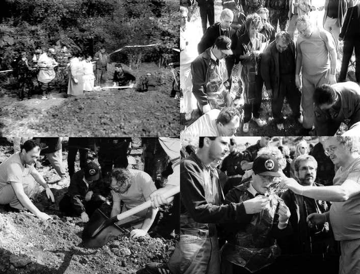
Terensko prikupljanje posmrtnih ostataka i ekshumacije, započeti 1993. godine, odvijali su se u iznimno opasnim uvjetima. Grobnice na području Kupresa morale su se iskopavati s posebnim oprezom jer su u njih srpske snage postavile eksplozivne naprave kako bi ozlijedile osobe koje provode ekshumacije i dodatno fragmentirale posmrtne ostatke. Posmrtni ostatci bili su izrazito krhki, zbog čega su se ručno iskopavali. Forenzički timovi suočavali su se s neposrednom opasnošću u uvjetima obilježenima izravnim dokazima pogubljenja i prikrivanja zločina (24) (Slika 1).
Tijekom toga razdoblja postalo je jasno to da se većinu posmrtnih ostataka ne će moći identificirati standardnim forenzičkim metodama. Uvidjevši ograničenja tradicionalnih postupaka, Šimun Anđelinović, tadašnji predstojnik Kliničkoga zavoda za patologiju, sudsku medicinu i citologiju, obratio se Draganu Primorcu, koji je u to vrijeme bio na poslijedoktorskome
Slika 1. Ekshumacije žrtava iz masovnih grobnica na području Kupresa u ranoj fazi forenzičkih istraživanja s prikazom postupaka iskopavanja posmrtnih ostataka i sudjelovanja multidisciplinarnoga tima.
Figure 1. Mass grave exhumations in the Kupres region during the early phase of forensic investigation, showing recovery procedures and multidisciplinary team involvement.
Field recovery and exhumation, starting in 1993, were conducted under dangerous conditions. Graves in the Kupres area had to be excavated carefully, as explosive devices had been placed inside them by Serbian forces to harm the excavators and further fragment the remains. The remains themselves were very fragile, so recovery was performed manually. The forensic teams thus confronted immediate danger in conditions marked by direct evidence of execution and concealment (24) (Figure 1).
During that period, it became evident that most human remains would not be identifiable using standard forensic methods. Recognizing the limitations of conventional pathology, Šimun Anđelinović, then Head of the Clinical Department of Pathology, Forensic Medicine and Cytology, reached out to Dragan Primorac, who at the time was a postdoctoral fellow at the University of Connecticut Health Center. Primorac was deeply engaged in molecular biology
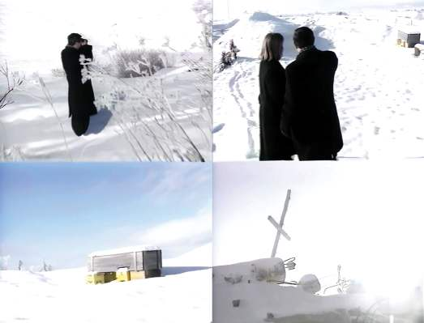
usavršavanju na Sveučilištu Connecticut Health Center. Dragan Primorac bio je intenzivno uključen u molekularnobiološka istraživanja usmjerena na molekularne mehanizme bolesti osteogenesis imperfecta i oblika osteohondrodistrofije, poznatoga kao nanomelija.
On je bio među odabranom skupinom iznimno perspektivnih mladih liječnika koju je Matko Marušić s Medicinskoga fakulteta u Zagrebu uputio na usavršavanje u inozemstvo, s jasnom misijom: stjecanja naprednih znanja i prijenosa vrhunskih znanstvenih spoznaja u Hrvatsku (34).
Razumjevši hitnost i povijesnu važnost trenutka, Dragan Primorac odmah je kontaktirao Henryja C. Leeja iz državne policije u Connecticutu. To je trebao biti kratak, desetominutni sastanak, ali prerastao je u višesatnu raspravu o znanstvenim, etičkim i logističkim aspektima primjene forenzičke genetike u identifikaciji osoba. Taj je razgovor postavio temelje prvoga posjeta Henryja C. Leeja Hrvatskoj te označio početak suradnje koja će duboko utjecati na razvoj identifikacije žrtava iz masovnih grobnica forenzičkom analizom DNK-a.
Slika 2. Henry C. Lee s novinarkom Kendrom Farn tijekom iskopavanja, uz improvizirani objekt koji se rabio kao privremeni prostor za obdukcije.
Figure 2. Henry C. Lee with journalist Kendra Farn during the investigation, with an improvised structure used as a temporary autopsy facility.
research, focusing on the molecular mechanisms underlying osteogenesis imperfecta and a form of osteochondrodystrophy called nanomelia. He was among a select group of exceptionally promising young physicians sent abroad by Matko Marušić of the Zagreb School of Medicine, with a clear mission: to acquire advanced knowledge and transfer cutting-edge scientific expertise back to Croatia (34).
Understanding the urgency and historical importance of the moment, Primorac immediately contacted Henry C. Lee from Connecticut State Police. What was initially intended to be a brief ten-minute meeting evolved into an intense and visionary discussion lasting more than two and a half hours, during which they explored the scientific, ethical, and logistical foundations of potential of using forensic genetics for human identification. That conversation laid the groundwork for Lee’s first visit to Croatia and marked the beginning of a transformative collaboration that would profoundly shape the future of mass grave victim identification through forensic DNA analysis.
The recovery was conducted by Croatian forensic teams, joined by American experts, including Henry C. Lee, and by other forensic specialists such as Michael Baden and Barbara Wolf, within a broader Croatian-American collaboration that combined field investigation, laboratory development, and international documentation of the events (24, 28). As part of this effort, a US television crew (WTNH News 8, Channel 8) was brought to Croatia and Bosnia and Herzegovina,
Hrvatski doprinos razvoju prve sustavne identifikacije žrtava iz masovnih grobnica analizom DNK-a / Croatian contributions to the first systematic DNA-based large-scale identification of mass graves war victims
Posmrtne ostatke ekshumirali su hrvatski forenzički timovi, kojima su se pridružili američki stručnjaci, među njima Henry C. Lee i drugi, u okviru šire hrvatsko-američke suradnje koja je objedinjavala terenska istraživanja, razvoj laboratorijskih kapaciteta i međunarodno dokumentiranje događaja (24, 28). U sklopu tih aktivnosti u Hrvatsku i Bosnu i Hercegovinu dovedena je i američka televizijska ekipa (WTNH News 8, Channel 8), koja je po prvi put snimila i prikazala ekshumacije i njihov kontekst američkoj javnosti (24).
U jednome od tih dokumentaraca (Heroes of Hope, 1995) (24) izravno su zabilježeni uvjeti ekshumacija, uz izjavu „Moramo učiniti sve što možemo, i to na najbolji mogući način“, koja odražava operativna ograničenja u kojima se rad odvijao (24). Isti dokumentarni materijal pokazuje i ljudsku dimenziju terenskoga rada. Henry Lee istaknuo je kako bi „kao pojedinac želio učiniti mnogo više kako bih im pomogao“, dok je Kendra Farn susret s preživjelima opisala kao nešto što se „riječima ne može izraziti“ (24) (Slike 2 i 3).
U ožujku 1994. godine provedbenom aktivnošću u Kliničkome bolničkom centru Split uspostavljei su kapaciteti za identifikaciju analizom DNK-a. U tome trenutku nije postojao funkcionalan forenzički DNK laboratorij, a očekivalo se da će njegovo uvođenje trajati mjesecima (23). Umjesto toga, tim je laboratorij uspostavio „od nule – u manje od dva dana“; već trećega dana koštani uzorci bili su spremni za ekstrakciju, dok je petoga dana tim dobio profil DNK-a iz kontrolnoga slučaja povezanoga s djetetom te potvrdio rezultat usporedbom s uzorcima krvi roditelja (23). Taj je rezultat pokazao da se tipizacija DNK-a zasnovana na PCR-u može primijeniti na degradirane koštane ostatke iz ratnoga konteksta te unaprijediti proces identifikacije žrtava s područja Kupresa (21–23). Nakon prikupljanja, posmrtni su ostatci transportirani u Klinički bolnički centar Split, gdje se
where, for the first time, the exhumations and their context were recorded and broadcast to the American public (24).
In one of these documentary records, “Heroes of Hope” from 1995 (24), the conditions of exhumation were captured directly, including the statement that “we have to do whatever we can do the best”, reflecting the operational constraints under which the work was carried out (24). The same material documents the human dimension of fieldwork. Henry Lee noted that “as an individual, I wish I could do much more to help them”, while Kendra Farn described the encounter with survivors as something that “went beyond words” (24) (Figure 2, Figure 3).
In March 1994, the first operational mission established a DNA-based identification capacity at the University Hospital of Split. At that point, there was no functioning forensic DNA laboratory, and the expectation was that building one would take months (23). Instead, the team set up the laboratory “from scratch in less than two days”; by the third day, bone samples were ready for extraction, and by the fifth day, the team had obtained DNA from a control case involving a child and confirmed the result with parental blood samples (23). This result showed that PCR-based DNA typing could be applied to degraded skeletal remains from the war context and to advance the identification of victims from Kupres (21–23). Following recovery, the remains were transported to the University Hospital of Split, where identification continued in direct contact with families of the missing (Figure 4).
In this phase, the scientific process acquired its full humanitarian dimension. As Anđelinović stated, “our whole hospital is some sort of their last hope” (24). The first victims from the Kupres area were identified using AmpliType PM + HLA DQA1 PCR Amplification and Typing Kits (22, 23). This development was critical because con-
Slika 3. Susret forenzičkoga tima s članovima lokalne zajednice u lokalnoj školi u Kupresu.
Figure 3. The forensic team meets community members at the local school in Kupres.
identifikacija nastavila u izravnome kontaktu s obiteljima nestalih (Slika 4).
U ovoj je fazi znanstveni proces dobio svoju punu humanitarnu dimenziju. Kako je istaknuo Anđelinović, „cijela je naša bolnica, na neki način, njihova posljednja nada” (24). Prve žrtve s područja Kupresa identificirane su s pomoću tipizacije AmpliType PM + HLA DQA1 PCR Amplification kitovima (22, 23). Taj je razvoj bio presudan jer konvencionalne metode same po sebi nisu bile dostatne. To je dodatno potvrđeno u kasnijim analizama koštanih ostataka iz masovnih grobnica, u kojima su multipleksni STR sustavi (AmpFlSTR® Profiler®, Profiler Plus™, COfiler™ i PowerPlex® 16) omogućili dobivanje multilokusnih profila DNK-a, čak i iz teško degradiranih uzoraka kostiju i zuba s minimalnim količinama DNK-a, kao i onima ispod granice detekcije (32).
U slučaju Kupresa, 35 od 61 žrtve moglo se identificirati primjenom standardnih forenzičkih metoda (Slika 5), dok je za preostale bila nuždna analiza DNK-a, koja je potom postala sastavni dio cjelokupnoga identifikacijskog postupka, a ne tek pomoćna metoda (21, 22). Istodobno su prikupljeni uzorci krvi i kose srodnika približno 150 nestalih osoba, čime je razvijen jedan od prvih forenzičkih referentnih skupova podataka DNK-a srodnika u kontekstu masovnoga sukoba (21, 22). Kako bi se pojasnio slijed događaja i brzina razvoja kapaciteta za identifikaciju analizom DNK-a, potaknutih analizom žrtava iz Kupresa, vremenska linija s ključnim aktivnostima prikazana je na Slici 6.
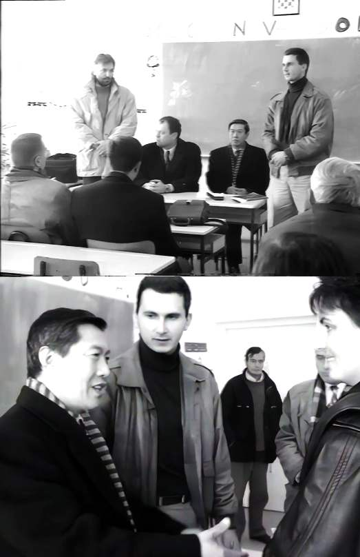
ventional methods alone were insufficient. This was further demonstrated in subsequent analyses of skeletal remains from mass graves, where multiplex short tandem repeat (STR) systems (AmpFlSTR® Profiler®, Profiler Plus™, COfiler™ and PowerPlex® 16) enabled the recovery of multilocus DNA profiles even from highly degraded bone and tooth samples with minimal or undetectable quantities of human DNA (32).
Hrvatski doprinos razvoju prve sustavne identifikacije žrtava iz masovnih grobnica analizom DNK-a / Croatian contributions to the first systematic DNA-based large-scale identification of mass graves war victims
Uključivanje američkih forenzičkih stručnjaka potaknulo je i posredovanje organizacije AmeriCares te snažna podrška Barbare Bush (Slika 7), čija je uključenost bila ključna za provedbu humanitarne misije, donaciju Perkin-Elmerove PCR tehnologije i okupljanje Henryja C. Leeja, Michaela Badena, Barbare Wolf, Mosesa Schanfielda, Dragana Primorca, Stephana Skakela i drugih (23–25, 28). Ovi su znanstvenici doputovali u Hrvatsku kako bi surađivali sa splitskim timom, što potvrđuje i kasniji opis splitskoga programa kao jednog od najranijih sustavnih programa identifikacije ratnih žrtava analizom DNK-a (21, 28). Njihova suradnja nije bila samo tehničke prirode. Kako je Šimun Anđelinović rekao za Henryja C. Leeja, „imamo vrlo slične poglede na život“, a Dragan Primorac dodao: „ako postignem samo 30 % ili 40 % onoga što je on postigao, bit ću iznimno uspješan“, čime se istodobno oslikava bliskost suradnje i asimetrija iskustva koja je ubrzala prijenos znanja (24).
Nakon dobivanja rezultata analize DNK-a obiteljima su prikazani odjevni predmeti, osobne stvari, koštani ostatci te zaključci potkrijepljeni analizom DNK-a. Mnogi su u početku reagirali nepovjerenjem, jer su dugo bili izloženi proturječnim informacijama, kao i pokušajima
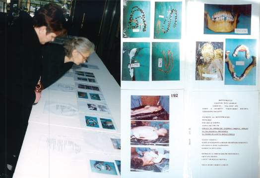
In the Kupres case, thirty-five of sixty-one victims could be identified by standard forensic methods (Figure 5), but the remainder required DNA analysis, which then became integral to the entire identification framework rather than a marginal supplement (21, 22). At the same time, blood and hair samples from relatives of approximately 150 missing persons were collected, and one of the first kinship-based forensic DNA reference datasets in a mass-conflict setting was created (21, 22). To clarify the temporal sequence of events and the rapid development of DNA-based identification capacity in relation to the Kupres case, a timeline of key activities is presented in Figure 6.
The involvement of American forensic experts facilitated by AmeriCares and strongly supported through the advocacy of Barbara Bush (Figure 7), whose engagement was instrumental in enabling the humanitarian mission, including the donation of Perkin-Elmer PCR technology, brought together Henry C. Lee, Michael Baden, Barbara Wolf, Moses Schanfield, Dragan Primorac, Stephan Skakel, and others (23–25, 28). These scientists travelled to Croatia to work collaboratively with the Split team, which is consistent with the later characterization of the Split program as one of the earliest systematic DNA-based identification frameworks for war victims (21, 28). Their cooperation was not merely technical. As Anđelinović said of Lee, “we have very similar points of view on life”, and Primorac added, “if I obtain only 30% or 40% of
Slika 4. Identifikacija nestalih osoba vizualnom usporedbom osobnih predmeta i pripadajuće fotografske dokumentacije uz sudjelovanje članova obitelji (Arhiva Kliničkog bolničkog centra Split).
Figure 4. Identification of missing persons through visual comparison of personal belongings and associated photographic documentation by family members (University Hospital of Split Archives).
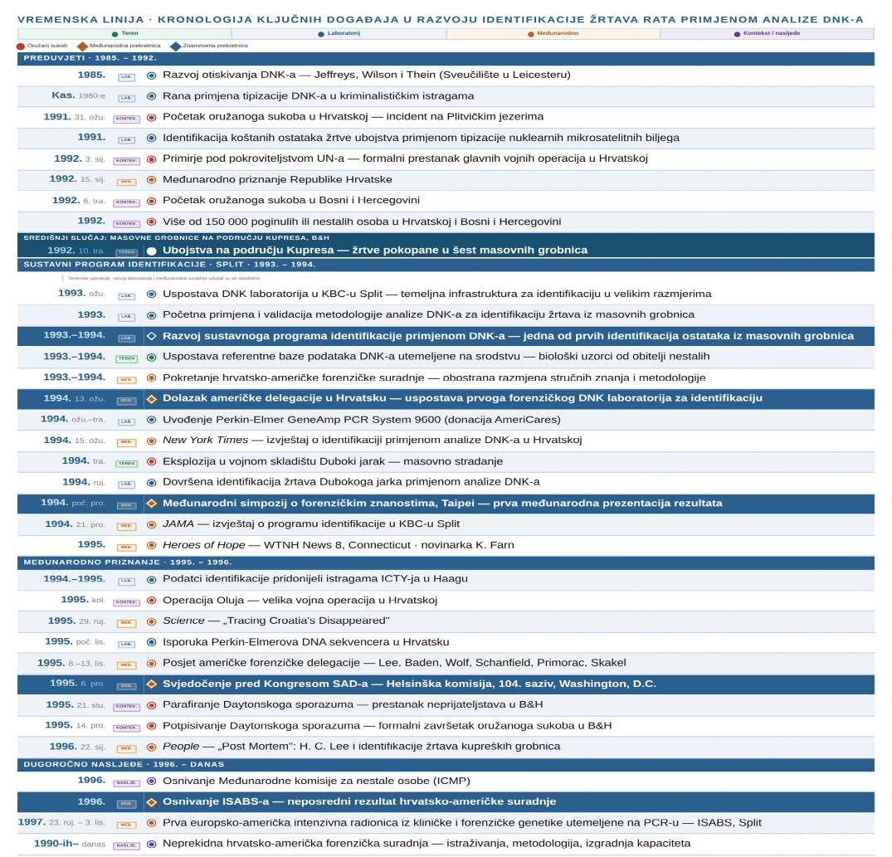
Slika 6. Vremenska linija ključnih događaja u razvoju identifikacije žrtava rata analizom DNK-a (1985. – danas). Oznake prikazuju usporedne aktivnosti domena procesa: Teren = ekshumacija i prikupljanje bioloških uzoraka; Laboratorij = analitički i metodološki razvoj; Međunarodno = suradnja, medijska i institucijska prepoznatljivost; Kontekst/nasljeđe = kronologija oružanog sukoba i dugoročni institucijski učinci. Plavi rombovi (◆) označavaju znanstvene prekretnice, a narančasti rombovi (◆) međunarodne prekretnice. Masovne grobnice na području Kupresa (Bosna i Hercegovina, 1992) istaknute su kao središnji slučaj koji je potaknuo razvoj sustavnog programa identifikacije analizom DNK-a u Kliničkome bolničkom centru Split. B&H = Bosna i Hercegovina; ICMP = Međunarodna komisija za nestale osobe; ICTY = Međunarodni kazneni sud za bivšu Jugoslaviju; ISABS = Međunarodno društvo za primijenjene biološke znanosti; JAMA = Journal of the American Medical Association.
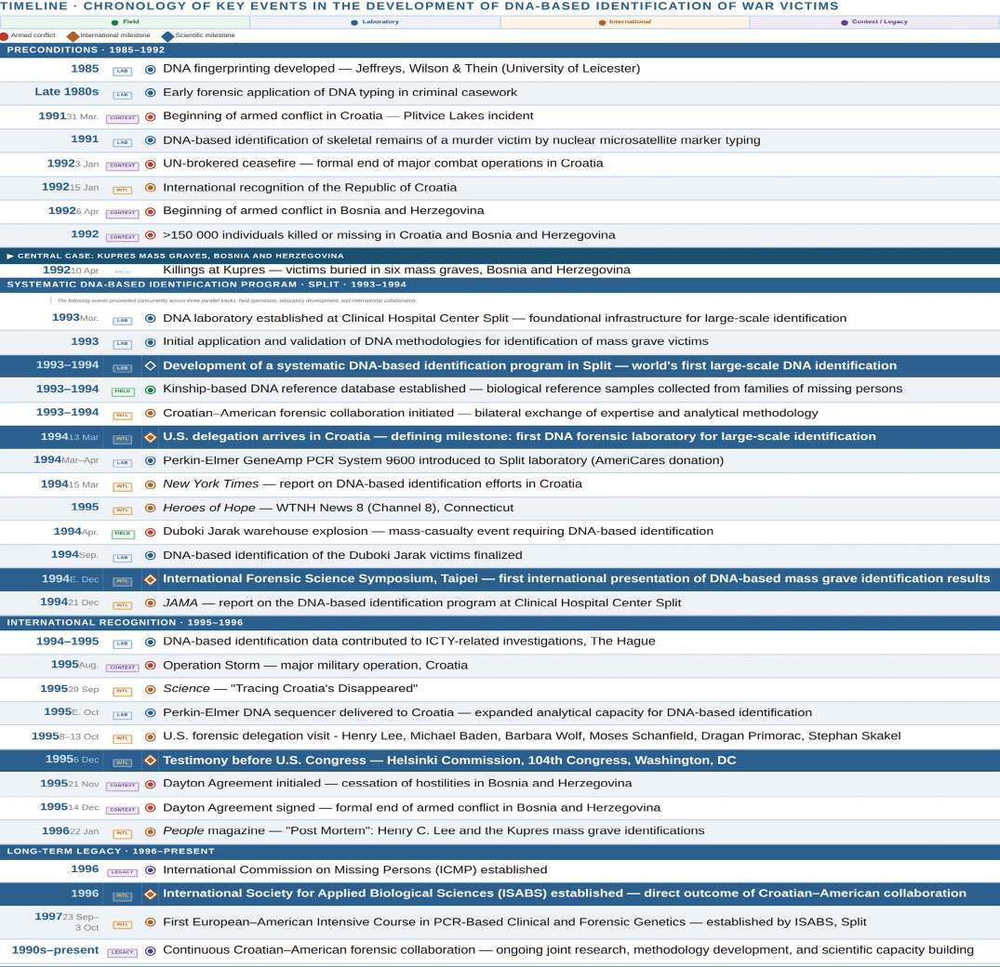
Figure 6. Timeline of key events in the development of DNA-based identification of war victims (1985–present). Track badges indicate concurrent process domains: field = exhumation and biological sample collection; laboratory = analytical and methodological development; international = collaborative, media, and institutional recognition; context/legacy = armed conflict chronology and long-term institutional outcomes. Blue diamonds denote scientific milestones and orange diamonds denote international milestones. The Kupres mass graves (Bosnia and Herzegovina, 1992) are highlighted as the central case driving development of the systematic DNA-based identification program at Clinical Hospital Center Split. B&H – Bosnia and Herzegovina, ICMP – International Commission on Missing Persons, ICTY – International Criminal Tribunal for the former Yugoslavia, ISABS – International Society for Applied Biological Sciences, JAMA – Journal of the American Medical Association.
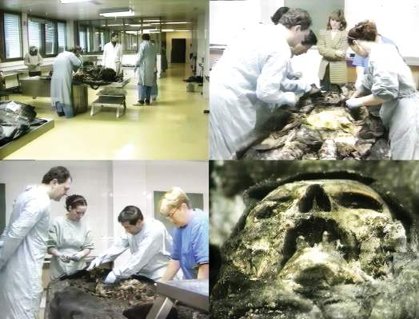
iznude uz tvrdnje da su nestali još uvijek živi (23, 24). Nakon što su rezultati objašnjeni i prihvaćeni, pozitivne identifikacije omogućile su pogreb pokojnika te okončale dugotrajnu neizvjesnost za mnoge obitelji (22, 23).
Susreti s obiteljima utjecali su i na članove forenzičkih timova. Henry C. Lee prisjetio se kako je „susret s obitelji promijenio njegovu životnu perspektivu“, dodajući da život treba iskoristiti „za nešto smisleno i konstruktivno“ (24). Ove izjave ne treba tumačiti kao stilizaciju ili retoričko uljepšavanje. One označuju trenutak u kojemu su se znanstvena identifikacija, psihološko razrješenje za obitelji i dokazni okvir za kasnije postupke za ratne zločine spojili u jedinstvenu forenzičku misiju (24, 30).
Slika 5. Prikaz forenzičke identifikacije u praksi: zajednički rad hrvatsko-američkih stručnjaka, obdukcijska sala Kliničkoga bolničkog centra Split, žrtve ekshumirane iz masovnih grobnica na području Kupresa.
Figure 5. Forensic identification in practice: joint Croatian-American autopsy work at the University Hospital of Split on victims recovered from Kupres mass graves.
what he obtained, I’ll be extremely successful” – a formulation that captures both the closeness of the collaboration and the asymmetry of experience that accelerated knowledge transfer (24).
Upon obtaining the DNA results, families were shown clothing, belongings, skeletal remains, and DNA-supported conclusions. Many initially reacted with mistrust because they had long been exposed to contradictory information, including extortion schemes based on claims that the missing were still alive (23, 24). Once the results were explained and accepted, however, identifications allowed funerals to take place and ended prolonged uncertainty for many families (22, 23).
The encounter with relatives also changed the forensic teams themselves. Henry Lee recalled that “meeting with the family changed my life perspective”, adding that life should be used “to do something meaningful, constructive” (24). These statements should not be read as embellishment; they mark the point at which scientific identification, psychological closure for families, and the evidentiary basis for later war-crimes proceedings converged into a single forensic mission (24, 30).
Hrvatski doprinos razvoju prve sustavne identifikacije žrtava iz masovnih grobnica analizom DNK-a / Croatian contributions to the first systematic DNA-based large-scale identification of mass graves war victims
PREPOZNAVANJE ZNANSTVENOGA DOPRINOSA U AMERIČKOME KONGRESU (6. PROSINCA 1995.)
Najznačajnija vanjska potvrda hrvatsko-američke forenzičke suradnje nije prikazana u znanstvenom časopisu, nego na saslušanju u Kongresu Sjedinjenih Američkih Država. Dana 6. prosinca 1995. Komisija za sigurnost i suradnju u Europi (Helsinška komisija) održala je saslušanje 104. saziva Kongresa, 1. zasjedanja, pod nazivom „Mass Graves and Other Atrocities in Bosnia“, kojim je predsjedao zastupnik Christopher H. Smith, uz sudjelovanje zastupnika Stenyja H. Hoyera, Johna Edwarda Portera, Billa Zeliffa, Benjamina Gilmana, Jamesa Morana i Sheile Jackson-Lee. Treća svjedokinja bila je Barbara C. Wolf, forenzička patologinja iz Albanyja (New York), čije svjedočenje zauzima važno mjesto u povijesti forenzičkih znanosti: riječ je o neposrednoj stručnoj procjeni forenzičke infrastrukture u Splitu, unesenoj u trajni zapis Kongresa Sjedinjenih Američkih Država (30).
Barbara Wolf boravila je u Hrvatskoj i Bosni i Hercegovini između 8. i 13. listopada 1995. godine pod pokroviteljstvom organizacije AmeriCares. Delegacija kojoj se pridružila uključivala je neke od najistaknutijih forenzičkih znanstvenika u Sjedinjenim Američkim Državama: Michaela Badena, suvoditelja Jedinice za forenzičke znanosti Državne policije New Yorka; Henryja C. Leeja, glavnog kriminalista Državne policije Connecticuta; Mosesa Schanfielda, stručnjaka za DNK iz Denvera; Davida Rowea, profesora pedijatrije s institucije University of Connecticut Health Center te Dragana Primorca, tadašnjega poslijedoktorskog istraživača na toj instituciji. Kako je Barbara Wolf navela u službenome zapisniku, cilj njihova dolaska bio je nedvosmislen: „Došli smo u Hrvatsku i Bosnu kako bismo surađivali s forenzičkim timom Kliničkog bolničkog centra u Splitu i pružili mu podršku” (30). Činjenica da su američki
RECOGNITION AT THE UNITED STATES CONGRESS FOR SCIENTIFIC CONTRIBUTIONS (6 DECEMBER 1995)
The most consequential external validation of the Croatian-American forensic collaboration was delivered not in a journal, but in a hearing of the United States Congress. On 6 December 1995, the Commission on Security and Cooperation in Europe, the Helsinki Commission, convened a hearing of the One Hundred Fourth Congress, First Session, entitled “Mass Graves and Other Atrocities in Bosnia,” chaired by Representative Christopher H. Smith and attended by Representatives Steny H. Hoyer, John Edward Porter, Bill Zeliff, Benjamin Gilman, James Moran, and Sheila Jackson-Lee. The hearing’s third witness was Barbara C. Wolf, a forensic pathologist from Albany, New York, whose testimony occupies an important place in the history of forensic science: a firsthand peer assessment of Split’s forensic infrastructure, entered into the permanent record of the United States Congress (30).
Dr Wolf had travelled to Croatia and Bosnia between 8 and 13 October, 1995, under the sponsorship of AmeriCares. The delegation she joined comprised some of the most distinguished forensic scientists in the USA: Michael Baden, co-director of the Forensic Sciences Unit of the New York State Police; Henry Lee, chief criminalist for the Connecticut State Police; Moses Schanfield, a DNA specialist from Denver; and David Rowe, Professor of Pediatrics at the University of Connecticut Health Center, and Dragan Primorac, a postdoctoral fellow at the University of Connecticut Health Center. Their purpose, as Wolf stated on the record, was unambiguous: “We went to Croatia and Bosnia to work with and lend our support to the forensic team from the Clinical Hospital in Split, Croatia” (30). That American experts travelled to Croatia, rather than the reverse, reflects
stručnjaci dolazili u Hrvatsku, a ne obratno, odražava razinu stručnosti koju je splitski tim već tada bio dosegnuo (31). Uz sudjelovanje Henryja C. Leeja, Michaela Badena, Mosesa Schanfielda i Mitchella Hollanda, hrvatski je tim preuzeo dotad nezabilježen zadatak prikupljanja DNK dokaza za Međunarodni kazneni sud u Haagu u kontekstu postupaka za ratne zločine i zločine protiv čovječnosti. Primorac je sažeo duh toga nastojanja jednostavnom izjavom: „Svi podatci u našim knjigama bit će dostupni tužiteljima, bez obzira na to tko je počinio zločine” (28).
Barbara Wolf opisala je tijekom svoga svjedočenja rad u Splitu s kliničkom preciznošću. Navela je da je posjetila dvije masovne grobnice u blizini Kupresa, jednu s 34 tijela, drugu s tri, te treću grobnicu u Petrinji s gotovo sto tijela. Kazala je kako je američki tim radio sa Šimunom Anđelinovićem i njegovim suradnicima u obdukcijskoj sali u Splitu, pri čemu je istodobno na stolovima bilo pet ili šest tijela, dok su članovi obitelji ulazili naizmjenično kako bi pokušali identificirati svoje bližnje. Do kraja jednoga radnog dana identificirano je 27 od 34 tijela iz prve kupreške grobnice te sva tri vojnika iz druge; „DNK testiranje”, kako je izjavila u Kongresu, „nastavlja se na preostalim neidentificiranim tijelima”. Također je istaknula da je laboratorij bio „uspostavljen prije godinu dana uz određene smjernice dr. sc. Henryja C. Leeja” te da se laboratorij već razvijao prema primjeni analize mitohondrijskoga DNK-a (30).
Najznačajniji dio ispitivanja zabilježen je tijekom pitanja zastupnika Hoyera. Na pitanje jesu li hrvatski patolozi kompetentni za kvalitetan forenzički rad, Barbara Wolf odgovorila je: „U potpunosti jesu, i mislim da je ovo doista primjer kako znanost nadilazi političke podjele. Tehnike koje se rabe u Sjedinjenim Američkim Državama uvelike su iste kao i one koje su se rabile ondje, u DNK laboratoriju u Splitu.” Nadalje je izvijestila Kongres da
the level of expertise already established by the Split team at that time (31). Joined by Henry C. Lee, Michael Baden, Moses Schanfield, and Mitchell Holland, the Croatian team undertook the unprecedented task of producing DNA evidence for the International Criminal Tribunal in The Hague as it confronted allegations of crimes against humanity. Primorac captured the ethos of the effort with a simple declaration: “All the data in our books will be available for prosecutors, no matter who committed the crimes” (28).
Dr Wolf’s testimony described the work at Split with clinical precision. She reported visiting two mass graves near Kupres, one containing 34 bodies, one containing 3, and a third grave at Petrinja containing nearly 100 bodies. She testified that the American team worked directly alongside Anđelinović and his colleagues in the Split autopsy room, with five or six bodies on tables simultaneously and family members rotating through to attempt identification. By the end of a single working day, 27 of the 34 bodies from the first Kupres grave and all 3 soldiers from the second had been identified; “DNA testing”, she told Congress, “is continuing on the remaining bodies yet unidentified”. She also noted that the laboratory had been “set up a year ago with some guidance from Dr Lee” and was already expanding beyond standard DNA typing into mitochondrial DNA techniques (30).
The exchange that carries the greatest historical weight came during questioning by Representative Hoyer. Asked whether Croatian pathologists were competent to do good forensic work, Dr Wolf replied: “Very much so, and I think this was really an example of science crossing political lines. The techniques that we use in the United States were very much the same techniques that they were using there, including the DNA laboratory in Split”. She further informed Congress that the exchange of expertise had been bidirectional: “Croa-
Hrvatski doprinos razvoju prve sustavne identifikacije žrtava iz masovnih grobnica analizom DNK-a / Croatian contributions to the first systematic DNA-based large-scale identification of mass graves war victims
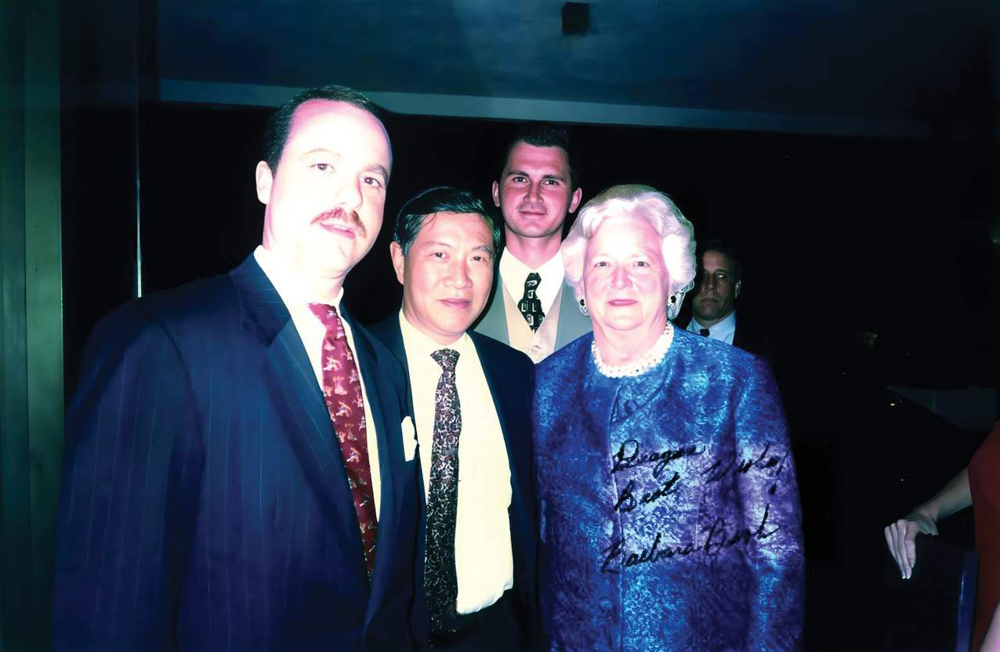
Slika 7. Arhivska fotografija snimljena prije odlaska na humanitarnu misiju u Hrvatsku, koju je organizirao AmeriCares početkom devedesetih godina 20. stoljeća. Na fotografiji su članovi američke forenzičke delegacije s Barbarom Bush, čija je potpora bila ključna za ostvarenje misije i donaciju Perkin-Elmerove tehnologije PCR. Fotografija sadržava rukom napisanu posvetu: „Dragan, Best wishes. Barbara Bush.” Slijeva nadesno: Stephen Skakel, dr. sc. Henry C. Lee, dr. sc. Dragan Primorac i Barbara Bush.
Figure 7. Archival photograph taken prior to departure for a humanitarian mission to Croatia, organized by AmeriCares in the early 1990s. The image shows members of the American forensic delegation alongside Barbara Bush, whose support was instrumental in enabling the mission and facilitating the donation of Perkin-Elmer PCR technology. The photograph bears a handwritten dedication reading, “Dragan, Best wishes. Barbara Bush.” From left to right: Stephen Skakel, Dr Henry C. Lee, Dr Dragan Primorac, and Barbara Bush.
se suradnja odvijala u oba smjera: „Hrvatski su znanstvenici dolazili u Sjedinjene Američke Države radi usavršavanja u tim tehnologijama. Naši stručnjaci za analizu DNK-a, dr. sc. Henry C. Lee, dr. sc. Moses Schanfield i drugi, imali su uvid u njihov rad i tehnologiju. Kapaciteti su svakako postojali. Ono što je potrebno jesu resursi i ljudi.” Na pitanje o glavnim preprekama u identifikaciji bila je izričita: problem nije bio u stručnosti ili metodologiji, nego u broju nestalih osoba i sustavnome uništavanju zaživotnih podataka – „Budući da su cijeli gradovi uništeni, postoji vrlo malo podataka kojima se moguće koristiti” – što je referentnu DNK bazu podataka srodnika, uspostavljenu u Splitu, učinilo ne samo korisnom, nego i operativno nezamjenjivom (30).
Ovo je saslušanje u Kongresu, prema našim saznanjima, u Hrvatskoj gotovo nepoznato, a zaslužuje biti prepoznato. Ono predstavlja oblik institucijskoga priznanja koji se rijetko dodjeljuje znanstvenim institucijama koje ne pripadaju vodećim zapadnim znanstvenim središtima: riječ je o formalnoj, u zapisnik unesenoj i pod prisegom iznesenoj procjeni pred Kongresom Sjedinjenih Američkih Država, da je bolnički laboratorij u Hrvatskoj djelovao na samome vrhu svojega područja kao ravnopravan partner vodećim forenzičkim centrima u Sjedinjenim Američkim Državama.
tian scientists have come to this country and spent time working with the technologies. Our DNA experts, Dr Lee, Dr Schanfield, and others, have looked at their work and technology. The capabilities are certainly there. It is resources and people that are needed”. When asked about the primary obstacles to identification, she was explicit: the challenge was not competence or methodology, but the volume of missing persons and the systematic destruction of antemortem records “because the entire towns are destroyed, there is very little to use”, which made the kinship DNA database constructed at Split not merely useful but operationally indispensable (30).
This Congressional testimony is, to our knowledge, essentially unknown in Croatia. It deserves to be recognized. It constitutes a form of institutional recognition rarely accorded to science conducted outside the major Western powers: a formal assessment, on the record, under oath, before the United States Congress, that a Croatian hospital laboratory was operating at the frontier of its field, as a peer institution to leading forensic centers in the United States.
Hrvatski doprinos razvoju prve sustavne identifikacije žrtava iz masovnih grobnica analizom DNK-a / Croatian contributions to the first systematic DNA-based large-scale identification of mass graves war victims
NASTAVAK ZNANSTVENOGA NASLJEÐA
Stvaran doprinos hrvatske inicijative ne očituje se samo u onome što je postignuto 1993. i 1994. godine, nego i u onome što je time pokrenuto. Ono što je započelo kao HLA tipizacija utemeljena na PCR-u na trima uzorcima kostiju iz Kupresa, razvilo se u istoj hrvatsko-američkoj mreži u sustavan program metodološkoga razvoja. Prijelaz na multipleksnu analizu STR-ova u kombinaciji s optimiziranim protokolima ekstrakcije, koji su pokazali prednost kompaktne kosti dugih kostiju u odnosu na elemente lubanje i rebara, povećao je uspješnost identifikacije s 20 % – 25 % na približno 85 % (21). Podatci o učestalosti alela u populaciji, nuždni za statistički pouzdanu identifikaciju, prikupljeni su u prvome zajedničkom istraživanju hrvatskoga znanstvenika Dragana Primorca i Brucea Budowlea iz laboratorija FBI-ja. U slučajevima u kojima su nuklearni biljezi bili nedostatni zbog izrazite degradacije materijala, u okviru te suradnje razvijene su metode analize mitohondrijskoga DNK-u: analiza imobiliziranih SSO probnih sustava za hipervarijabilne regije I i II, ispitana na koštanim uzorcima u zajedničkim hrvatsko-američkim istraživanjima; mt HV+ HaploArray za kodirajuće i nekodirajuće polimorfne lokuse; te Y-STR i miniSTR analize primijenjene na žrtve iz masovnih grobnica iz razdoblja Drugoga svjetskog rata iz Slovenije, Hrvatske i Hercegovine, koje nije bilo moguće razriješiti standardnim metodama (21). Logičan nastavak toga razvoja čini forenzička genomika: primjena sekvenciranja nove generacije (NGS) na autosomne STR-ove, identifikacijske SNP panele i mitohondrijski DNK, primijenjena u postupku identifikacije časne sestre Marije Krucifikse Kozulić, koji izravno odražava metodološki pristup započet na Kupresu (35).
Doseg ovih metoda odavno nadilazi bilo koji pojedinačni nacionalni kontekst. Metodološki okvir primijenjen u Hrvatskoj, koji obuhvaća istodobne ekshumacije, izgradnju referentne
CONTINUING SCIENTIFIC LEGACY
The true measure of the Croatian initiative is not only what it accomplished in 1993–1994 but what it set in motion. What began as PCR-based HLA typing on three Kupres bone samples evolved through the same Croatian-American network, into a systematic program of methodological evolution. The shift to multiplex STR analysis, combined with optimized extraction protocols that established the superiority of long-bone cortical samples over skull and rib elements, raised identification success rates from 20–25% to approximately 85% (21). Population allele frequency data required for statistically rigorous identification were generated in the first collaborative study between Croatian scientist Dragan Primorac and Bruce Budowle from FBI Laboratory. Where nuclear markers failed on maximally degraded material, the network developed mitochondrial approaches: immobilized SSO probe analysis of hypervariable regions I and II, validated on bone samples in joint Croatian-American studies; the mt HV+ HaploArray for coding and non-coding polymorphic targets; and Y-STR and miniSTR analysis applied to World War II-era mass graves in Slovenia, Croatia, and Herzegovina that could not be resolved using standard methods (21). The logical extension to this path is forensic genomics: massively parallel next-generation sequencing of autosomal STR, identity SNP panels, and mitochondrial targets, deployed in the identification of Sister Marija Crucifiksa Kozulić, a case that directly reflected the methodological approach initiated at Kupres (35).
The practical reach of these methods has long transcended any single national context. The methodological framework applied in Croatia, simultaneous excavation, kinship-based reference database construction, multi-marker identification, shared key elements with a range of international contexts, including victims of the 11 September attacks in New York and Wash-
baze podataka srodnika te identifikaciju s pomoću više genskih biljega, imao je zajednička ključna obilježja s nizom međunarodnih primjena, od identifikacije žrtava napada 11. rujna u New Yorku i Washingtonu, D.C., žrtava tsunamija, do masovnih grobnica u Iraku, Siriji i Libiji (21). Međunarodna komisija za nestale osobe, osnovana 1996. godine (36), na temelju metodoloških postavaka koje je razvio splitski tim, identificirala je više od 27 000 osoba s područja bivše Jugoslavije (37). Ono što je nastalo u kriznim uvjetima u jednoj hrvatskoj kliničkoj bolnici, tijekom jednoga desetljeća postalo je dio međunarodne standardne prakse.
Suradnja koju je Barbara Wolf 1995. godine u Kongresu opisala kao „znanost koja nadilazi političke podjele” pokazala se strukturno održivom. Ista mreža; Dragan Primorac, Šimun Anđelinović, Henry C. Lee, Michael Baden, Mitchell Holland, Bruce Budowle, Damir Marjanović i njihovi znanstveni suradnici i dalje zajednički objavljuju radove, razvijaju metode i obrazuju nove generacije znanstvenika. Pregledni rad objavljen 2024. godine u časopisu Croatian Medical Journal (21) uključuje mnoga ista imena kao i rad iz 1996. godine u časopisu Journal of Forensic Sciences (22). Međunarodno društvo za primijenjene biološke znanosti (ISABS) institucionaliziralo je navedeni interdisciplinarni pristup te povezalo forenzičku genetiku, antropologiju, kliničku medicinu i translacijsku genomiku, pristup koji je prvi put primijenjen u laboratorijima i obdukcijskoj sali Kliničkoga bolničkog centra Split (38). Put od HLA tipizacije na trima kupreškim žrtvama (22) do forenzičko-genetičke analize drevnih ostataka (39), koordiniran unutar iste međunarodne znanstvene zajednice, pokazuje da hrvatsko-američko partnerstvo, nastalo u ratnim uvjetima, već više od trideset godina sudjeluje u oblikovanju globalne prakse forenzičke identifikacije.
ington, D.C., to tsunami casualties, and to mass graves in Iraq, Syria, and Libya (21). The International Commission on Missing Persons, established in 1996 (36), eventually identified more than 27,000 individuals from the former Yugoslavia (37) based on methodological principles the Split team had pioneered. What was invented under crisis in a Croatian clinical hospital became, within a decade, part of international standard practice.
The collaboration that Dr Wolf described to Congress in 1995 as “science crossing political lines” has proven structurally durable. The same network, Primorac, Anđelinović, Lee, Baden, Holland, Budowle, Marjanović, and their scientific peers continue to publish, develop methods, and train scientists jointly. The 30-year review published in Croatian Medical Journal in 2024 (21) carries many of the same names as the 1996 paper in the Journal of Forensic Sciences (22). The International Society for Applied Biological Sciences (ISABS) has institutionalized the interdisciplinary ethos and united forensic genetics, anthropology, clinical medicine, and translational genomics, which was first employed in the identification rooms of University Hospital of Split (38). It was founded by Croatian (Dragan Primorac) and American (Moses Schanfield) scientists as an institutional framework for continuing interdisciplinary collaboration in forensic and applied genetics. Stanimir Vuk-Pavlović later joined ISABS, while Šimun Anđelinović served as the Chairman of the Organizing Committee in Croatia. The journey from HLA typing of three Kupres (22) victims to forensic genomic sequencing of ancient remains (39), coordinated by the same international scientific community, demonstrates that a Croatian-American partnership, born in wartime, has contributed to shaping the global practice of forensic identification for thirty years and counting.
Hrvatski doprinos razvoju prve sustavne identifikacije žrtava iz masovnih grobnica analizom DNK-a / Croatian contributions to the first systematic DNA-based large-scale identification of mass graves war victims
ZAKLJUČAK
Trideset godina nakon kupreških ekshumacija činjenice su jasne i nedvojbeno potvrđene, među ostalim, i u zapisima Kongresa Sjedinjenih Američkih Država. Tim Kliničkoga bolničkog centra Split nije djelovao u sjeni bolje opremljenih institucija niti je čekao vanjske smjernice. Djelovao je kao ravnopravni partner, a u svojemu specifičnom području, i kao pokretač razvoja u ravnopravnoj suradnji s američkim znanstvenicima koji su dolazili u Hrvatsku. Svjedočenje Barbare Wolf pred Helsinškom komisijom 6. prosinca 1995., u Hrvatskoj donedavno uglavnom neprepoznato, dokumentira navedenu suradnju u trenutku njezina formalnog međunarodnog priznanja. Taj dokument treba prepoznati i uključiti u povijesno razumijevanje razvoja forenzičke genetike u Hrvatskoj te njezina doprinosa svjetskoj forenzičkoj praksi.
Uz znanstvene i metodološke doprinose, hrvatsko je iskustvo sredinom devedesetih godina 20. stoljeća privuklo neuobičajenu pozornost znanstvene, političke i medijske javnosti. Rezultati splitskoga tima istodobno su bili dokumentirani u vodećim znanstvenim časopisima (JAMA, Science), praćeni u velikim međunarodnim medijima (The New York Times, Chicago Tribune, People Weekly) te formalno prepoznati na saslušanju u Kongresu Sjedinjenih Američkih Država (6. prosinca 1995.) (Slika 8). Ta istodobna prisutnost u znanstvenome, institucijskome i javnome prostoru ne odražava samo novost primijenjenih metoda, nego i širi značaj forenzičke identifikacije kao humanitarnoga i dokaznoga postupka. U tome se smislu hrvatska inicijativa nije razvijala izolirano, nego je nastala na sjecištu znanosti, međunarodne politike i javne percepcije, čime je dodatno učvrstila svoju ulogu u oblikovanju globalnoga okvira identifikacije žrtava masovnih stradanja.
CONCLUSION
Thirty years after the excavations at Kupres, the record is clear and formally documented, including in the proceedings of the United States Congress. The team at the University Hospital of Split did not work in the shadow of better-resourced institutions, nor did they await external guidance. They worked as peers and, in their specific domain, as early contributors in this domain, alongside American scientists who came to Croatia to collaborate on equal terms. Dr Wolf’s testimony before the Helsinki Commission on 6 December 1995, largely unrecognized in Croatia until recently, captures that partnership at its moment of formal international recognition. This record should be acknowledged and integrated into the historical understanding of the development of forensic genetics in Croatia and its contribution to global forensic practice.
Beyond its scientific and methodological contributions, the Croatian experience attracted an unusual convergence of scientific, political, and media attention during the mid-1990s. The work conducted in Split was simultaneously documented in leading scientific journals (JAMA, Science), reported in major international media outlets (The New York Times, Chicago Tribune, People Weekly), and formally recognized in a hearing before the United States Congress (6 December 1995) (Figure 8). This parallel visibility across scientific, institutional, and public domains reflects not only the novelty of the methods employed, but also the broader significance of forensic identification as both a humanitarian and evidentiary practice. In this sense, the Croatian initiative did not evolve in isolation, but emerged at the intersection of science, international policy, and public awareness, further reinforcing its role in shaping the global framework of mass-fatality identification.
Status rada: predan.
Zaprimljeno: 31. ožujka 2026. / Prihvaćeno: 17. travnja 2026. / Objavljeno online: 22. travnja 2026.
Recenzija: rad je prošao vanjski recenzijski postupak.
Zahvala: Ovaj rad posvećen je uspomeni na dr. sc. Henryja C. Leeja, iznimnoga čovjeka, često nazivanoga Sherlockom Holmesom našega vremena, jednoga od začetnika suvremenih forenzičkih znanosti i svima nama dragoga prijatelja. U vrijeme kada je forenzička analiza DNK-a bila u svojim začetcima, dr. sc. Henry C. Lee pristupao je znanosti s ingenioznošću i odlučnošću, razvijajući i primjenjujući metode u uvjetima koji bi se danas smatrali skromnima, no koji su bili temeljem njegova djelovanja. Njegov rad nije bio ograničen na renomirane laboratorije, već je vođen znatiželjom, upornošću i dubokim uvjerenjem da znanost mora služiti istini i humanosti. Dr. sc. Dragan Primorac i dr. sc. Šimun Anđelinović dijelili su duboko prijateljstvo s dr. sc. Henryjem C. Leejem i imali jedinstvenu priliku raditi „rame uz rame“, tijekom povijesnoga uvođenja forenzičke genetike u identifikaciju žrtava rata iz masovnih grobnica. U tim su začetcima oni dijelili interdisciplinarna znanja i napredne tehničke analize, ali isto tako i duboko razumijevanje vrijednosti koje su obilježile život i rad dr. sc. Henryja C. Leeja: metodološku strogost, intelektualnu otvorenost, poniznost i nepokolebljivu posvećenost pravdi. Njegov boravak u Hrvatskoj tijekom prvih pokušaja identifikacije žrtava rata (1991. – 1995.) bio je više od znanstvene suradnje. U trenutku kada je znanost nadilazila granice kako bi odgovorila na ljudsku patnju, to je bio čin solidarnosti. Onima koji su poznavali dr. sc. Henryja C. Leeja, on je bio ne samo jedna od najutjecajnijih osoba u razvoju moderne forenzičke znanosti nego i darežljiv kolega i istinski prijatelj.
Provenance: Submitted.
Received: 31 March 2026 / Accepted: 17 April 2026 / Published online: 22 April 2026.
Peer review: Externally reviewed.
Acknowledgements: This work is dedicated to the memory of Dr Henry C. Lee, an extraordinary man, often regarded as the Sherlock Holmes of our time, one of the pioneers of modern forensic science, and, to us, a dear friend. At a time when forensic DNA analysis was only beginning to emerge, Dr Lee approached science with ingenuity and determination, developing and applying methods under conditions that today would seem modest, yet were foundational for the field. His work was not confined to established laboratories; it was driven by curiosity, persistence, and a deep belief that science must serve truth and humanity. Dr Dragan Primorac and Dr Šimun Anđelinović shared a profound friendship with Dr Lee, having the rare privilege of working alongside him during the historic introduction of forensic genetics into the identification of war victims from mass graves. Through this pioneering collaboration, they shared interdisciplinary knowledge and advanced technical expertise but also a deep understanding of the values that defined Dr Lee’s life and work – scientific rigor, intellectual openness, humility, and an unwavering commitment to justice. His presence in Croatia during the early efforts to identify the victims of the 1991–1995 Homeland War reflected more than scientific collaboration. It was an act of solidarity, at a moment when science crossed borders to respond to human suffering. To those who knew Dr Henry C. Lee, he was not only one of the most influential figures in the development of modern forensic science, but also a generous colleague and a true friend.
Funding: No funding was received for this study.
Hrvatski doprinos razvoju prve sustavne identifikacije žrtava iz masovnih grobnica analizom DNK-a / Croatian contributions to the first systematic DNA-based large-scale identification of mass graves war victims
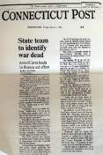
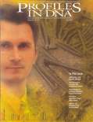
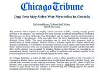
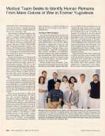
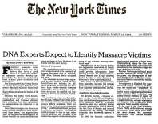
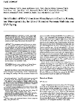
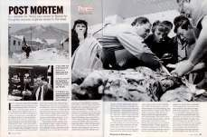
Financiranje: istraživanje nije financirano.
Doprinos autora: ŠA, DP, MD, AV, IK, ŽB i IJ osmislili su i oblikovali istraživanje; ŠA, DP i MD prikupili su podatke; DP, IJ i ŽB proveli su analizu i interpretaciju podataka; ŽB i IJ izradili su rukopis; svi autori kritički su ga pregledali s obzirom na intelektualni sadržaj; svi autori odobrili su konačnu verziju za objavu te preuzimaju odgovornost za cjelovitost rada.
Slika 8. Interaktivni pregled ključnih znanstvenih publikacija, medijskih izvještaja i institucionalnih prekretnica povezanih s razvojem identifikacije žrtava rata primjenom analize DNK-a. Svaki element omogućuje izravan pristup izvornim materijalima (22, 25–32).
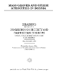
Figure 8. Interactive overview of key scientific publications, media reports, and institutional milestones related to early DNA-based identification of war victims. Each item provides direct access to the original source (22, 25–32).
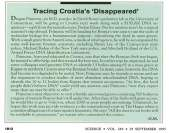
Authorship declaration: ŠA, DP, MD, AV, IK, ŽB, and IJ conceived and designed the study. ŠA, DP, and MD acquired the data. DP, IJ, and ŽB analyzed and interpreted the data. ŽB and IJ drafted the manuscript. ŠA, DP, MD, AV, IK, ŽB, and IJ critically reviewed the manuscript for important intellectual content. ŠA, DP, MD, AV, IK, ŽB, and IJ gave approval of the version to be submitted. ŠA, DP, MD, AV, IK, ŽB, and IJ agree to be accountable for all aspects of the work.
Izjava o sprječavanju sukoba interesa: Autori su ispunili jedinstveni obrazac o sukobu interesa prema ICMJE (dostupan na zahtjev kod odgovornog autora) i izjavljuju da nemaju drugih sukoba interesa. ŽB je glavna urednica časopisa ST-OPEN, ali nije sudjelovala u uredničkom odlučivanju niti je imala pristup sustavu za predaju rukopisa. Radi očuvanja integriteta recenzijskog postupka, članak je obrađen u skladu sa smjernicama Committee on Publication Ethics.
Uporaba umjetne inteligencije: Tijekom pripreme rada autori su koristili GPT-5.3 (OpenAI) za jezičnu doradu i lekturu teksta. Za izradu slika 6 i 7 korišten je model Claude Sonnet 4.6 (proširena verzija). Autori su nakon toga pregledali i uredili sav sadržaj te u potpunosti odgovaraju za konačnu verziju rada.
Dostupnost podataka: Rad se temelji na prethodno objavljenim i javno dostupnim izvorima, uključujući znanstvene radove, povijesne zapise i dokumentarne transkripte. U ovom istraživanju nisu prikupljeni niti analizirani novi primarni podaci. Sve relevantne informacije sadržane su u radu i navedenim izvorima.
Disclosure of interest: The authors completed the ICMJE Disclosure of Interest Form (available upon request from the corresponding author) and disclose the following activities and/or relationships: ŽB is the co-editor-inchief of ST-OPEN. She did not have an editorial decision-making role and had no access to the manuscript submission system. To ensure the integrity of the review process, the article has been reviewed in accordance with the guidelines and processes suggested by the Committee on Publication Ethics.
Declaration of AI and AI-assisted technologies in the writing process: During the preparation of this work, the authors used GPT-5.3 (OpenAI) to assist with language editing and proofreading, and Claude Sonnet 4.6 (the extended model) for generating Figures 6 and 7. After using this tool, they carefully reviewed and edited the content as needed and take full responsibility for the final content of the publication.
Data sharing statement: The data supporting the findings of this study are derived from previously published sources and publicly available materials, including scientific articles, historical records, and contemporaneous documentary transcripts. No new primary datasets were generated or analyzed during the current study. All relevant information is included within the article and its referenced sources.
Hrvatski doprinos razvoju prve sustavne identifikacije žrtava iz masovnih grobnica analizom DNK-a / Croatian contributions to the first systematic DNA-based large-scale identification of mass graves war victims
Referencije 1) International Criminal Police Organization. Disaster victim identification guide. Lyon: INTERPOL; 2023. 2) International Criminal Police Organization. Disaster victim identification guide. Lyon: INTERPOL; 1997. 3) Jeffreys AJ, Wilson V, Thein SL. Hypervariable ‘minisatellite’ regions in human DNA. Nature. 1985;314(6006):67–73. doi-:10.1038/314067a0 4) Jeffreys AJ, Wilson V, Thein SL. Individual-specific ‘fingerprints’ of human DNA. Nature. 1985;316(6023):76–9. doi-:10.1038/316076a0 5) Corach D, Sala A, Penacino G, Sotelo A. Mass disasters: rapid molecular screening of human remains by means of short tandem repeats typing. Electrophoresis. 1995;16(9):1617–23. doi: 10.1002/elps.11501601267 6) Clayton TM, Whitaker JP, Maguire CN. Identification of bodies from the scene of a mass disaster using DNA amplification of short tandem repeat loci. Forensic Sci Int. 1995;76:7–15. doi: 10.1016/0379-0738(95)01787-9 7) Clayton TM, Whitaker JP, Fisher DL, Lee DA, Holland MM, Weedn VW, et al. Further validation of a quadruplex STR DNA typing system: a collaborative effort to identify victims of a mass disaster. Forensic Sci Int. 1995;76(1):17–25. doi: 10.1016/0379- 0738(95)01788-7 8) Holland MM, Fisher DL, Mitchell LG, Rodriguez WC, Canik JJ, Merril CR, et al. Mitochondrial DNA sequence analysis of human skeletal remains: identification of remains from the Vietnam War. J Forensic Sci. 1993;38(3):542–53. 9) Marušić M. Croatia: past, present and future perspectives. New York: Nova Science Publishers; 2020. 10) Mann J, Drucker E, Tarantola D, McCabe MP. Bosnia: the war against public health. Med Glob Surviv. 1994;1(3):130–46. 11) Judaš M, Radoš M, Lončar M, Kostović I. Medical center for human rights: war crimes and grave breaches of the Geneva convention. Croat Med J. 1993;34(3):334–41. 12) Roewer L. DNA fingerprinting in forensics: past, present, future. Investig Genet. 2013;4(1):22. doi: 10.1186/2041-2223-4-22 13) Hagelberg E, Gray IC, Jeffreys AJ. Identification of the skeletal remains of a murder victim by DNA analysis. Nature. 1991;352(6334):427–9. doi: 10.1038/352427a0 14) Jakobsen J, Remvig P. Identification of victims after a fire on the ferry “Scandinavian Star.” Tandlaegebladet. 1991;95(8):325– 30. 15) Solheim T, Lorentsen M, Sundnes PK, Bang G, Bremnes L. The Scandinavian Star ferry disaster 1990 - a challenge to forensic odontology. Int J Legal Med. 1992;104(6):339–45. 16) Ludes B, Tracqui A, Pfitzinger H, Kintz P, Levy F, Disteldorf M, et al. Medico-legal investigations of the Airbus A320 crash upon Mount Ste-Odile, France. J Forensic Sci. 1994;39(5):1147– 52. 17) Connor M. The archaeology of contemporary mass graves. SAA Bull. 1996;14(4):1–3. 18) Olaisen B, Stenersen M, Mevåg B. Identification by DNA analysis of the victims of the August 1996 Spitsbergen civil aircraft disaster. Nat Genet. 1997;15(4):402–5. 19) Hsu CM, Huang NE, Tsai LC, Kao LG, Chao CH, Linacre A, et al. Identification of victims of the 1998 Taoyuan Airbus crash accident using DNA analysis. Int J Legal Med. 1999;113(1):43–6. 20) Robb N. 229 people, 15,000 body parts: pathologists help solve Swissair 111’s grisly puzzles. CMAJ. 1999;160(2):241–3. 21) Primorac D, Anđelinović Š, Definis-Gojanović M, Škaro V, Projić P, Čoklo M, et al. Identification of skeletal remains in Croatia and Bosnia and Herzegovina, including the homeland war - a 30year review. Croat Med J. 2024;65(3):239–48.
References 1) International Criminal Police Organization. Disaster victim identification guide. Lyon (FR): INTERPOL; 2023. 2) International Criminal Police Organization. Disaster victim identification guide. Lyon (FR): INTERPOL; 1997. 3) Jeffreys AJ, Wilson V, Thein SL. Hypervariable ‘minisatellite’ regions in human DNA. Nature. 1985;314(6006):67–73. https:// doi.org/10.1038/314067a0 4) Jeffreys AJ, Wilson V, Thein SL. Individual-specific ‘fingerprints’ of human DNA. Nature. 1985;316(6023):76–9. https://doi. org/10.1038/316076a0 5) Corach D, Sala A, Penacino G, Sotelo A. Mass disasters: rapid molecular screening of human remains by means of short tandem repeats typing. Electrophoresis. 1995;16(9):1617–23. https:// doi.org/10.1002/elps.11501601267 6) Clayton TM, Whitaker JP, Maguire CN. Identification of bodies from the scene of a mass disaster using DNA amplification of short tandem repeat loci. Forensic Sci Int. 1995;76:7–15. https://doi.org/10.1016/0379-0738(95)01787-9 7) Clayton TM, Whitaker JP, Fisher DL, Lee DA, Holland MM, Weedn VW, et al. Further validation of a quadruplex STR DNA typing system: a collaborative effort to identify victims of a mass disaster. Forensic Sci Int. 1995;76(1):17–25. https://doi. org/10.1016/0379-0738(95)01788-7 8) Holland MM, Fisher DL, Mitchell LG, Rodriguez WC, Canik JJ, Merril CR, et al. Mitochondrial DNA sequence analysis of human skeletal remains: identification of remains from the Vietnam War. J Forensic Sci. 1993;38(3):542–53. https://doi.org/10.1520/ JFS13439J 9) Marušić M. Croatia: past, present and future perspectives. New York (NY): Nova Science Publishers; 2020. 10) Mann J, Drucker E, Tarantola D, McCabe MP. Bosnia: the war against public health. Med Glob Surviv. 1994;1(3):130–46. 11) Judaš M, Radoš M, Lončar M, Kostović I. Medical center for human rights: war crimes and grave breaches of the Geneva convention. Croat Med J. 1993;34(3):334–41. 12) Roewer L. DNA fingerprinting in forensics: past, present, future. Investig Genet. 2013;4(1):22. https://doi.org/10.1186/2041- 2223-4-22 13) Hagelberg E, Gray IC, Jeffreys AJ. Identification of the skeletal remains of a murder victim by DNA analysis. Nature. 1991;352(6334):427–9. https://doi.org/10.1038/352427a0 14) Jakobsen J, Remvig P. Identification of victims after a fire on the ferry “Scandinavian Star.”. Tandlaegebladet. 1991;95(8):325–30. 15) Solheim T, Lorentsen M, Sundnes PK, Bang G, Bremnes L. The Scandinavian Star ferry disaster 1990 – a challenge to forensic odontology. Int J Legal Med. 1992;104(6):339–45. https://doi. org/10.1007/BF01369554 16) Ludes B, Tracqui A, Pfitzinger H, Kintz P, Levy F, Disteldorf M, et al. Medico-legal investigations of the Airbus A320 crash upon Mount Ste-Odile, France. J Forensic Sci. 1994;39(5):1147– 52. https://doi.org/10.1520/JFS13698J 17) Connor M. The archaeology of contemporary mass graves. SAA Bull. 1996;14(4):1–3. 18) Olaisen B, Stenersen M, Mevåg B. Identification by DNA analysis of the victims of the August 1996 Spitsbergen civil aircraft disaster. Nat Genet. 1997;15(4):402–5. https://doi.org/10.1038/ ng0497-402 19) Hsu CM, Huang NE, Tsai LC, Kao LG, Chao CH, Linacre A, et al. Identification of victims of the 1998 Taoyuan Airbus crash accident using DNA analysis. Int J Legal Med. 1999;113(1):43–6. https://doi.org/10.1007/s004140050277
22) Primorac D, Anđelinović Š, Definis-Gojanović M, Drmić I, Rezić B, Baden MM, et al. Identification of War Victims from Mass Graves in Croatia, Bosnia, and Herzegovina by the Use of Standard Forensic Methods and DNA Typing. J Forensic Sci. 1996;41(5):891–4. 23) Perkin-Elmer Corporation. Early Development of DNA Identification in Croatia (Perkin-Elmer Documentation) [Internet]. 1993 [cited 2026 Apr 17]. Available from: https://repozitorij.forenzika.unist.hr/object/forenzikast:679 24) Farn K. Heroes of Hope [Internet]. WTNH News 8 (Channel 8); 1995 [cited 2026 Apr 17]. Available from: https://www.youtube.com/ watch?v=E-pBnXWcV7A 25) Gunby P. Medical Team Seeks to Identify Human Remains From Mass Graves of War in Former Yugoslavia. JAMA. 1994;272(23):1804. 26) Slocum B. State team to identify war dead: AmeriCares leads in Bosnia aid effort. Connecticut Post. 1994 Mar 4. 27) Browne MW. DNA Experts Expect to Identify Massacre Victims. New York Times. 1994 Mar 15. 28) Marshall E. Tracing Croatia’s “Disappeared.” Science. 1995;269(5232):1812. 29) Myers L. DNA test may solve war mysteries in Croatia. Chicago Tribune. 1994 Mar 20. 30) United States. Congress. House. Committee on International Relations. Mass graves and other atrocities in Bosnia. Washington (DC): US Government Printing Office; 1996. 31) Post mortem. People (Chicago). 1996 Jan 22. 32) Alonso A, Andelinovic S, Martin P, Sutlovic D, Erceg I, Huffine E, et al. DNA Typing from Skeletal Remains: Evaluation of Multiplex and Megaplex STR Systems on DNA Isolated from Bone and Teeth Samples. Profiles in DNA [Internet]. 2001;4(3):3–8. Available from: https://www.draganprimorac.com/wp-content/uploads/2010/05/Profiles-in-DNA-Vol4-No3-web.pdf 33) Marijan D. Expert opinion: on the war connections of Croatia and Bosnia and Herzegovina (1991–1995). Čas za suvremenu povij. 2004;36(1):249–89. 34) Sambunjak D, Marušić M. Between forwarding and mentoring: a qualitative study of recommending medical doctors for international postdoctoral research positions. BMC Med Educ. 2011;11:31. 35) Marshall C, Sturk-Andreaggi K, Gorden EM, Daniels-Higginbotham J, Sanchez SG, Bašić Ž, et al. A forensic genomics approach for the identification of Sister Marija Crucifiksa Kozulić. Genes (Basel). 2020;11(8):938. 36) Huffine E, Crews J, Kennedy B, Bomberger K, Zinbo A. Mass identification of persons missing from the break-up of the former Yugoslavia: structure, function, and role of the International Commission on Missing Persons. Croat Med J. 2001;42(3):271–5. 37) Rizvić A, Krstičić A, Mandžuka A, Pučić M, Jašaragić E, Blau S. Managing large volume data sets in the process of identifying missing persons: Contributions from the International Commission on Missing Persons. J Forensic Sci. 2024;69(5):1690–8. 38) International Society for Applied Biological Sciences (ISABS) [Internet]. 2026 [cited 2026 Apr 17]. Available from: https:// www.isabs.hr 39) Bašić Ž, Fox AR, Anterić I, Jerković I, Polašek O, Anđelinović Š, et al. Cultural inter-population differences do not reflect biological distances: an example of interdisciplinary analysis of populations from Eastern Adriatic coast. Croat Med J. 2015;56(3):230–8.
20) Robb N. 229 people, 15,000 body parts: pathologists help solve Swissair 111’s grisly puzzles. CMAJ. 1999;160(2):241–3. 21) Primorac D, Anđelinović Š, Definis-Gojanović M, Škaro V, Projić P, Čoklo M, et al. Identification of skeletal remains in Croatia and Bosnia and Herzegovina, including the homeland war – a 30-year review. Croat Med J. 2024;65(3):239–48. https://doi. org/10.3325/cmj.2024.65.239 22) Primorac D, Anđelinović Š, Definis-Gojanović M, Drmić I, Rezić B, Baden MM, et al. Identification of war victims from mass graves in Croatia, Bosnia, and Herzegovina by the use of standard forensic methods and DNA typing. J Forensic Sci. 1996;41(5):891–4. https://doi.org/10.1520/JFS14019J 23) Perkin-Elmer Corporation. Early development of DNA identification in Croatia (Perkin-Elmer Documentation). 1993 [cited 2026 Apr 17]. Available from: https://repozitorij.forenzika.unist. hr/object/forenzikast:679 24) Farn K. Heroes of Hope [Internet]. WTNH News 8 (Channel 8); 1995 [cited 2026 Apr 17]. Available from: https://www.youtube.com/ watch?v=E-pBnXWcV7A 25) Gunby P. Medical team seeks to identify human remains from mass graves of war in former Yugoslavia. JAMA. 1994;272(23):1804. https://doi.org/10.1001/jama.1994.03520230016007 26) Slocum B. State team to identify war dead: AmeriCares leads in Bosnia aid effort. Connecticut Post. 1994 Mar 4. 27) Browne MW. DNA experts expect to identify massacre victims. New York Times. 1994 Mar 15. 28) Marshall E. Tracing Croatia’s “disappeared.”. Science. 1995;269(5232):1812. 29) Myers L. DNA test may solve war mysteries in Croatia. Chicago Tribune. 1994 Mar 20. 30) United States. Congress. House. Committee on International Relations. Mass graves and other atrocities in Bosnia. Washington (DC): US Government Printing Office; 1996. 31) Post mortem. People (Chicago). 1996 Jan 22. 32) Alonso A, Andelinovic S, Martin P, Sutlovic D, Erceg I, Huffine E, et al. DNA Typing from skeletal remains: evaluation of multiplex and megaplex str systems on dna isolated from bone and teeth samples. Profiles in DNA. 2001 [cited 2026 Apr 17]. Available from: https://www.draganprimorac.com/wp-content/uploads/2010/05/Profiles-in-DNA-Vol4-No3-web.pdf 33) Marijan D. Expert opinion: on the war connections of Croatia and Bosnia and Herzegovina (1991–1995). Čas za suvremenu povij. 2004;36(1):249–89. 34) Sambunjak D, Marušić M. Between forwarding and mentoring: a qualitative study of recommending medical doctors for international postdoctoral research positions. BMC Med Educ. 2011;11:31. https://doi.org/10.1186/1472-6920-11-31 35) Marshall C, Sturk-Andreaggi K, Gorden EM, Daniels-Higginbotham J, Sanchez SG, Bašić Ž, et al. A forensic genomics approach for the identification of Sister Marija Crucifiksa Kozulić. Genes (Basel). 2020;11(8):938. https://doi.org/10.3390/genes11080938 36) Huffine E, Crews J, Kennedy B, Bomberger K, Zinbo A. Mass identification of persons missing from the break-up of the former Yugoslavia: structure, function, and role of the International Commission on Missing Persons. Croat Med J. 2001;42(3):271–5. 37) Rizvić A, Krstičić A, Mandžuka A, Pučić M, Jašaragić E, Blau S. Managing large volume data sets in the process of identifying missing persons: Contributions from the International Commission on Missing Persons. J Forensic Sci. 2024;69(5):1690–8. https://doi.org/10.1111/1556-4029.15474 38) International Society for Applied Biological Sciences (ISABS) [Internet]. 2026 [cited 2026 Apr 17]. Available from: https:// www.isabs.hr 39) Bašić Ž, Fox AR, Anterić I, Jerković I, Polašek O, Anđelinović Š, et al. Cultural inter-population differences do not reflect biological distances: an example of interdisciplinary analysis of populations from Eastern Adriatic coast. Croat Med J. 2015;56(3):230–8. https://doi.org/10.3325/cmj.2015.56.230
Svjedočanstvo svijeta / A Testimony of the World
Svjedočanstvo svijeta: od svjedočenja pred američkim Kongresom do međunarodnoga odjeka A Testimony of the World: From Testimony before the United States Congress to Global Recognition
MASOVNE GROBNICE I DRUGI ZLOČINI U BOSNI
KOMISIJOM ZA SIGURNOST I SURADNJU U EUROPI
MASS GRAVES AND OTHER ATROCITIES IN BOSNIA
COMMISSION ON SECURITY AND COOPERATION IN EUROPE
One Hundred Fourth Congress
SASLUŠANJE
pred
104. saziv kongresa
Prvo zasjedanje
6. prosinca 1995.
HEARING
before the
First Session
December 6th 1995
Mass Graves and other Atrocities in Bosnia Masovne grobnice i drugi zločini u Bosni
Na hrvatski prevela Ana Mršić Zdilar.
srijeda, 6. prosinca 1995.
komisija za sigurnost i suradnju
u europi, washington, dc
Komisija se sastala u 14:06 sati, u sobi 628 zgrade Senata Dirksen, pod predsjedanjem uvaženoga Christophera H. Smitha, predsjednika Komisije.
Prisutni članovi Komisije: uvaženi Christopher H. Smith (predsjednik), uvaženi Steny. D. Hoyer i uvaženi John Edward Porter.
Prisutni članovi Zastupničkog doma: uvaženi Bill Zeliff, uvaženi Benjamin Gilman i uvaženi James Moran.
Prisutni svjedoci: Ivan Lupis, David Rohde i Barbara Wolf.
UVODNO OBRAĆANJE PREDSJEDNIKA CHRISTOPHERA H. SMITHA
Predsjednik SMITH. Komisija započinje sa sjednicom. Sukob na prostoru bivše Jugoslavije, posebno u Bosni, bio je stalna tema američke vanjske politike tijekom proteklih četiriju godina. U posljednjih nekoliko tjedana razrada mirovnoga sporazuma, uz obvezu sudjelovanja snaga NATO-a, bila je u središtu vanjskopolitičkoga djelovanja.
wednesday, december 6, 1995
commission on security and cooperation
in europe,washington, dc
The Commission met at 2:06 p.m., in room 628 of the Dirksen Senate Office Building, Honorable Christopher H. Smith, chairman of the Commission, presiding.
Commission members present: Hon. Christopher H. Smith, Chairman; Hon. Steny. D. Hoyer; and Hon. John Edward Porter.
House members present: Hon. Bill Zeliff; Hon. Benjamin Gilman; and Hon. James Moran.
Witnesses present: Ivan Lupis, David Rohde, and Barbara Wolf.
OPENING STATEMENT OF CHAIRMAN CHRISTOPHER H. SMITH
Chairman SMITH. The Commission will come to order. The conflict in the former Yugoslavia, and in Bosnia in particular, has been a constant issue of the U.S. foreign policy agenda during the past 4 years. In these past few weeks, the working-out of a peace agreement with its accompanying commitment for NATO forces has been the leading issue on that agenda.
Današnje saslušanje o Bosni, međutim, bavi se potresnom i jezivom temom: zločinima nad djecom, ženama i muškarcima. Ti neopisivi zločini razlog su zbog kojega je Bosna zauzela tako važno mjesto u našoj vanjskoj politici.
Dok se međunarodna zajednica bavi formalnostima razmjene teritorija među zaraćenim stranama i stanovništvom, stvarnost Bosne jest da su ljudi, nedužni civili, bili silovani, mučeni, protjerivani iz svojih domova i pogubljivani. Dokumentiranje ratnih zločina, izvođenje dokaza pred Sudom za ratne zločine i traženje pravde putem Suda temelj su pomirenja i istinskoga mira.
Helsinška komisija obvezna je, među ostalim, dokumentirati povrede ljudskih prava. Ta je uloga ključna sama po sebi. Dugujemo to žrtvama i nadamo se da će pozornost posvećena povredama ljudskih prava u Bosni odvratiti druge od budućih sličnih povreda. Unošenje pojedinosti u službeni zapisnik Komisije pomaže i nama koji moramo razmatrati diplomatske i vojne odgovore kako bismo ostali usredotočenima na ozbiljnost situacije s kojom se suočavamo.
Danas je s nama troje stručnjaka koji su proveli određeno vrijeme u Bosni, i susreli se sa stvarnim žrtvama ovoga rata ili preživjelim članovima njihovih obitelji te dokumentirali njihove nezamislive patnje. Najprije ćemo saslušati Ivana Lupisa, istraživača iz organizacije Human Rights Watch/Helsinki, koji će opisati kako i zašto se Srebrenica, koja je proglašena sigurnom zonom UN-a, nije uspjela oduprijeti militantima i što se zbilo nakon toga.
Zatim ćemo saslušati Davida Rohdea iz organizacije Christian Science Monitor, koji je uspio posjetiti lokacije navodnih masovnih grobnica u istočnoj Bosni i potvrditi njihovo postojanje. Njega je, uz to, zadesilo i to da ga zarobe srpski militanti i desetak dana zadrže u zaro-
Today’s hearing on Bosnia, however, is about a gruesome and solemn subject matter: namely, the atrocities against children, against women, and against men. These indescribable atrocities are the realities which warranted giving Bosnia such a place of prominence in our foreign policy.
While the international community deals with the formalities of exchanging territories among the warring parties and populations, the reality of Bosnia has been a land in which people—innocent civilians—have been raped, tortured, expelled from their homes, and executed by thugs. Documenting the war crimes, bringing the evidence before the War Crimes Tribunal, and pursuing justice through the tribunal are the foundation stones for reconciliation and a genuine peace.
The Helsinki Commission has an obligation, among other things, to document the violation of human rights. The role is vital, in and of itself. We owe it to the victims, and it is our hope that the attention given to the violations in Bosnia may deter future violations. Making the details a part of the official record of the Commission also helps those of us who must consider diplomatic and military responses to stay grounded in the reality of the situation that we are facing.
We have today three expert witnesses who have spent time in Bosnia and who have met the real victims of this war or their surviving family members and documented their almost incomprehensible ordeals. We will first hear from Ivan Lupis, a researcher from Human Rights Watch/ Helsinki, who will describe how and why the U.N.-declared safe haven of Srebrenica failed to deter militants and generally what happened thereafter.
We will then hear from David Rohde of the Christian Science Monitor, who was able to
Masovne grobnice i drugi zločini u Bosni / Mass Graves and other Atrocities in Bosnia
bljeništvu. Gospodin Rohde, dakle, uz izravna iskustva sa žrtvama, ima i osobno iskustvo s počiniteljima zločina protiv čovječnosti.
Na kraju ćemo saslušati iskaz Barbare Wolf, forenzičke patologinje iz Albanyja u saveznoj državi New York, koja je posjetila mnoge lokacije masovnih grobnica u Bosni i susjednoj Hrvatskoj pod okriljem organizacije AmeriCares kako bi pomogla u identifikaciji posmrtnih ostataka. Novinski izvještaji o tome pothvatu upućuju na važnost ovoga rada za obitelji koje možda naslućuju, ali ne znaju stvarnu sudbinu svojih najmilijih, a posebice za mogući kazneni progon pred Međunarodnim sudom u Haagu onih koji su iskapali te grobnice te u njih zakapali žrtve.
Želim pozdraviti naše sudionike i svjedoke u Komisiji i zahvaliti im na značajnome radu pri dokumentiranju ovih gnjusnih zločina počinjenih nad civilima. Također bih, u ovome trenutku, želio ustupiti riječ svojemu vrlo dobromu prijatelju, gospodinu Hoyeru, vodećemu članu oporbe u Komisiji.
UVODNO OBRAĆANJE UVAŽENOGA STENYJA H. HOYERA
G. HOYER. Hvala Vam, predsjedniče Smith. Želim Vam zahvaliti na održavanju ovih saslušanja. Ona su vrlo važna i pravodobna. Pred nama je danas težak, ali nuždan zadatak: saslušati svjedočanstva o genocidu, masovnim grobnicama, silovanjima, pogubljenjima – neizrecivim i neprihvatljivim zločinima.
Posljednjih četiriju godina u Bosni svjedoci smo povratka europske noćne more za koju smo
visit the sites of the alleged mass graves in eastern Bosnia and confirm their existence. He also had the unfortunate experience of being caught by the Serb militants and held by them for about 10 days. Mr. Rohde, therefore, has not only firsthand experience with the victims, but also with the perpetrators of crimes against humanity.
Finally, we will have testimony presented by Barbara Wolf, a forensic pathologist from Albany, New York, who has visited many mass grave sites in Bosnia and neighboring Croatia under the auspices of AmeriCares in order to help identify the remains. Press reports about this effort indicate the importance of this work for those families who may suspect, but do not know, the actual fate of their loved ones, not to mention for the possible prosecution, at the International Tribunal in the Hague, of those who created and filled these graves with victims.
I want to welcome our panelists to the Commission and thank them for the great work that they have done in documenting these heinous acts which have been perpetrated against civilians. I would also, at this point, like to yield to my very good friend, the ranking member of the Commission, Mr. Hoyer.
OPENING STATEMENT OF HON. STENY H. HOYER
Mr. HOYER. Thank you very much, Chairman Smith. I want to thank you for having these hearings. They are very important and they are very timely. It is a sad task before us today, but one that must be undertaken: the examination of testimony about genocide, mass graves, rape, executions—unspeakable and unacceptable atrocities.
svi mislili da je okončana prije pedeset godina. Pred nama je panel uglednih svjedoka koji je iz prve ruke svjedočio posljedicama neobuzdane etničke mržnje. I samoga su gospodina Rohdea zarobili bosansko-srpski militanti, jer se usudio svijetu obznaniti istinu o jezivim poljima smrti Srebrenice, gdje je pogubljeno gotovo 8.000 muslimanskih muškaraca po kratkome postupku pošto je ta dotad sigurna zona opkoljena.
Ta polja smrti, naravno, nisu bila ograničena na Srebrenicu i Žepu, nego su se nalazila diljem hrvatskoga i bosanskoga prostora što su ga militanti zauzeli. Dana 16. listopada 1995., u članku u novinama USA Today, podrobno je opisana ekshumacija masovne grobnice u nedavno oslobođenoj hrvatskoj regiji Krajini, gdje je dr. Wolf obavila značajan dio svojega rada, o čemu ćemo uskoro čuti u njezinu svjedočenju.
U članku se navodi da su se desetci članova obitelji okupili u mrtvačnici Kliničkoga bolničkog centra Split kako bi pokušali identificirati posmrtne ostatke svojih najmilijih, uključujući satove, raspela i dijelove odjeće pronađenih uz tijela. U članku stoji, citiram: „Ključ automobila marke BMW pronađen uz tijelo broj 28
Naslovnica međunarodnog izdanja USA Today s člankom „Mass graves yield horror in Bosnia”, 16. listopada 1995. godine.
Cover of the international edition of USA Today featuring the article “Mass graves yield horror in Bosnia,” 16 October 1995.
Naslovnica međunarodnog izdanja USA Today s člankom „Mass graves yield horror in Bosnia”, 16. listopada 1995. godine.
Cover of the international edition of USA Today featuring the article “Mass graves yield horror in Bosnia,” 16 October 1995.
The past 4 years in Bosnia have seen the recurrence of a European nightmare that we all thought had ended 50 years ago. We have before us a distinguished panel of witnesses, all who have seen firsthand the results of unbridled ethnic hatred. Mr. Rohde himself was captured by the Bosnian Serb militants for daring to bare to the world the gruesome killing fields of Srebrenica, where as many as possibly 8,000 Muslim men were summarily executed following the overrunning of that safe haven.
Those killing fields were not limited, of course, to Srebrenica and Zepa, but are found throughout Croatian and Bosnian territory overrun by the militants. On October 16, 1995, a USA Today article detailed the exhumation of a mass grave in the recently liberated Krajina region
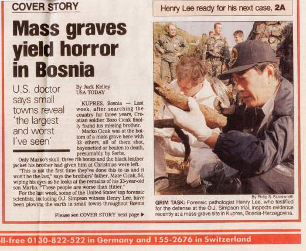
Masovne grobnice i drugi zločini u Bosni / Mass Graves and other Atrocities in Bosnia
Novinski članak „The numbers are overwhelming” o ekshumacijama masovnih grobnica u Hrvatskoj i Bosni i Hercegovini.
Newspaper article “The numbers are overwhelming” on the exhumation of mass graves in Croatia and Bosnia and Herzegovina.
predan je ženi koja tvrdi da je njezin muž, tridesettrogodišnji voditelj hotela Mate Šteko, imao sličan automobil. Tridesetdvogodišnjakinja, koja se zvala Božana Šteko, odjurila je kući kako bi provjerila hoće li tim ključem uspjeti upaliti automobil. Upalila ga je.”
Gospodine predsjedniče, ta tragična priča i stotine sličnih prepričavat će se u nadolazećim tjednima, mjesecima, a možda i godinama. Moramo saslušati bolna svjedočanstva. Moramo ih bilježiti s osobitom pažnjom i pozornošću. Moramo nastaviti istraživati i moramo privesti pravdi osobe odgovorne za te zločine.
Pedeset godina nakon što je vapaj „nikada više” odjeknuo iz logorâ smrti u Europi, ponovno ekshumiramo tijela iz masovnih grobnica u Europi i bilježimo zločine počinjene nad nedužnim ljudima samo zbog njihove etničke ili nacionalne pripadnosti.
Gospodine predsjedniče, mi, kao članovi međunarodne zajednice, a ne samo kao Amerikanci ili članovi Kongresa koji čine ovu Komisiju, nego kao članovi međunarodne zajednice, moramo ponovno osvijestiti tu potresnu frazu. Moramo udvostručiti napore kako bismo osigurali da cilj načela „pravda umjesto osvete“, koji je utjelovljen u Nürnbergu, bude doista postignut.
Pravda umjesto osvete. Mnogi od nas putovali su diljem Europe i slušali o nepravdama koje nikada nisu ispravljene, a koje su se dogodile prije 50, 100, 200, 300, 400 godina, pa i prije mnogih stoljeća. No oni koji su se
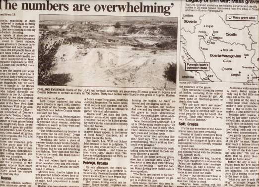
of Croatia—a site of much of Dr. Wolf’s work, as we will hear shortly from her testimony.
According to that article, dozens of family members gathered in the morgue of Split Clinical Hospital to try to identify remains of loved ones, including watches, crucifixes, and pieces of clothing found with the bodies. The article reveals, and I quote, “A BMW car key found on Body Number 28 was given to a woman who claims her husband, hotel manager Mate Steko, age 33, had a similar car. The woman, who was Bozana Steko, 32 years of age, races home to see if the car starts. It does.”
Mr. Chairman, this tragic story and hundreds like it will be retold in the weeks, months, and perhaps years ahead. We must listen to the painful testimony. We must record with the utmost care and attention. We must continue to investigate, and we must bring to justice those responsible for these crimes.
Fifty years after the cry, “Never again,” rang out from the death camps of Europe, we are again exhuming bodies from mass graves in Europe and recording atrocities committed against innocent people simply because of their ethnic or national background.
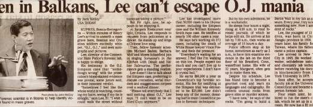
osjećali povrijeđenima i zakinutima vidjeli su da se njihove nepravde nikada nisu ispravile. Stoga se ciklus osvete, terora, zločina i ubojstava nastavlja.
Svjedočili smo sklapanju dugo očekivanoga i mukotrpno postignutoga mirovnog sporazuma među sukobljenim stranama u bivšoj Jugoslaviji. U tijeku su planovi za provedbu toga sporazuma. Međutim, gospodine predsjedniče, uvjeren sam da trajno rješenje ovog sukoba zahtijeva prekid ciklusa nasilja i osvete koji razdire ovu regiju, ne samo u ovome stoljeću, nego, kao što sam već rekao, i u prošlim stoljećima.
Taj se cilj može postići jedino provedbom pravde pred nepristranim Međunarodnim sudom, koji je već započeo s radom. Sjedinjene Američke Države, gospodine predsjedniče, a nadam se da će naša Komisija prednjačiti u poticanju toga, moraju imati vodeću ulogu u snažnoj podršci Suda za ratne zločine. Tu zadaću moramo preuzeti, jer ondje gdje nema pravde, osveta će se neizbježno nastaniti, bujati i trajati.
Narodi bivše Jugoslavije moraju osjetiti i zadovoljštinu, i pravdu koja će poslužiti kao opomena za budućnost. Ako se to ne dogodi, sasvim je sigurno da će biti više nasilja, ubojstava i zločina. Gospodine predsjedniče, ne smijemo dopustiti da se to dogodi.
Smatram da je ovo saslušanje važan element u daljnjemu educiranju nas, kao članova Kongresa, američke javnosti i međunarodne zajednice o tome što se, zapravo, dogodilo. Želim čestitati svim trima svjedocima na njihovu radu; u nekim
Novinski članak o Henryju C. Leeju i njegovu radu na identifikaciji žrtava ratnih zločina u Bosni i Hercegovini, USA Today.
Newspaper article on Henry C. Lee and his work in the identification of war crime victims in Bosnia and Herzegovina, USA Today
Mr. Chairman, we as members of the international community, not just as Americans, not just as members of Congress who are this Commission, but as members of the international community, must recommit ourselves to that haunting phrase. We must redouble our efforts to ensure that the goal of justice before vengeance enshrined in Nuremberg is, in fact, achieved.
Justice before vengeance. Now, many of us traveled throughout Europe and heard about things that needed to be redressed that occurred 50 years ago, 100 years ago, and 200, 300, 400 years and centuries ago. But those who feel aggrieved saw their grievances never redressed. Therefore, the cycle of vengeance and terror and atrocities and killings go on.
We have witnessed the conclusion of the long-awaited and strenuously-achieved peace agreement among the parties to the conflict in the former Yugoslavia. Plans to implement that agreement are underway. However, Mr. Chairman, I’m convinced that a lasting resolution of this conflict requires breaking the cycle of violence and vengeance that has racked this region, not just in this century, but as I said, in centuries past.
This goal can only be achieved through the administration of justice by an impartial International Tribunal, which is already moving forward with its work. The United States, Mr. Chairman—and I hope our Commission is in the forefront of urging it to do so—must continue to take the lead in strongly supporting the efforts of the War Crimes Tribunal. We must un-
Masovne grobnice i drugi zločini u Bosni / Mass Graves and other Atrocities in Bosnia
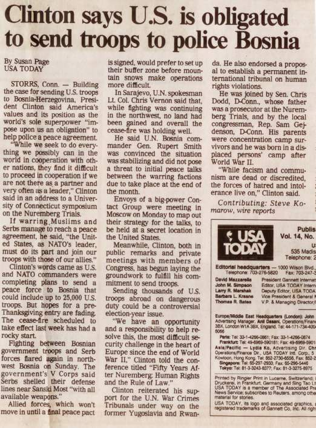
slučajevima, i na rizicima koje su preuzeli radi boljega razumijevanja onoga što se događa i onoga što se dogodilo u regiji, te, nadamo se, radi podizanja svijesti svjetske javnosti da nikada više ne ćemo stajati pasivno po strani dok se ubijaju stotine tisuća ljudi i milijuni raseljavaju iz svojih domova.
Hvala Vam, gospodine predsjedniče.
Predsjednik SMITH. Hvala Vam, gospodine Hoyer. Gospodine Lupis, biste li Vi nastavili?
Novinski članak „Clinton says U.S. is obligated to send troops to police Bosnia”, USA Today.
Newspaper article “Clinton says U.S. is obligated to send troops to police Bosnia,” USA Today.
dertake this effort because where there is not justice, vengeance will most certainly reside and flourish and continue.
The people of the former Yugoslavia must have both the satisfaction and the deterring example of justice now. If not, we can be virtually assured that there will be more violence, more killings, and more atrocities. Mr. Chairman, we cannot allow this to happen.
This hearing, I think, is an important element in continuing to educate us as members of Congress, the American public, and the international community on what, in fact, has happened. I want to congratulate all three witnesses for the work that they have undertaken; in some cases, the risks that they have taken as well, for a better understanding of what’s going on, and as to what has happened in the region, and hopefully a heightening of the consciousness of the world that we will never again stand idly by while hundreds of thousands of people are killed and millions of people are displaced from their homes.
Thank you, Mr. Chairman.
Chairman SMITH. Thank you, Mr. Hoyer. Mr. Lupis, would you proceed?
ISKAZ IVANA LUPISA, ISTRAŽIVAČA, HUMAN RIGHTS WATCH/HELSINKI
G. LUPIS. Naravno. Hvala Vam što ste održali ovo saslušanje i pozvali me svjedočiti. Zovem se Ivan Lupis. Istraživač sam u helsinškome odjelu organizacije Human Rights Watch, donedavno poznatoj kao Helsinki Watch. Sljedeće svjedočenje temelji se na istrazi koju smo proveli jedan konzultant i ja od 31. srpnja do 23. kolovoza 1995.
U njoj opisujemo događaje koji su prethodili padu Srebrenice, koju je UN proglasio zaštićenom zonom, kao i događaje tijekom samoga pada i neposredno nakon njega. Ti događaji obuhvaćaju teška kršenja humanitarnoga prava, kakva su do tada bila uobičajena u srpskome vojnom djelovanju. Pad grada Srebrenice i njegove okolice u ruke srpskih snaga, početkom srpnja 1995. godine, posve je obesmislio deklariranu obvezu međunarodne zajednice da zaštiti područja koja je proglasila sigurnim zonama.
Dužnosnici mirovnih snaga UN-a nisu htjeli udovoljiti zahtjevima vlastitih snaga stacioniranih unutar enklave, čime su srpskim snagama omogućili da je lako zauzmu i, bez uplitanja vojnika UN-a, provedu sustavna masovna pogubljenja stotina, možda tisuća civila, muškaraca i dječaka, te da maltretiraju, siluju, tuku, pogube, opljačkaju i na druge načine zlostavljaju civile koje su protjerivali s tog područja.
Nedavni mirovni plan iz Daytona i suzdržani optimizam koji je pratio taj prividni napredak ne bi smjeli zasjeniti činjenicu da nijedan mirovni sporazum ne će biti stabilan bez traženja pravde za kršenja ljudskih prava. Zločini opisani u ovome svjedočenju, kao i mnogi drugi koji su im prethodili na prostoru bivše Jugoslavije, zahtijevaju od međunarodne zajednice, a posebno od Sjedinjenih Država, da nastave s identifikacijom i vraćanjem posmrtnih
STATEMENT OF IVAN LUPIS, RESEARCHER, HUMAN RIGHTS WATCH/HELSINKI
Mr. LUPIS. Sure. Thank you for holding this hearing and inviting me to testify. My name is Ivan Lupis. I am a researcher at the Helsinki Division of Human Rights Watch, formerly known as Helsinki Watch. The following testimony is based on an investigation carried out by myself and a consultant from July 31 to August 23, 1995.
It describes the events leading up to, during, and immediately after the fall of the U.N.-designated safe area of Srebrenica, including gross violations of humanitarian law, as has been typical of Serbian military conduct to date. The fall of the town of Srebrenica and its environs to Serb forces in early July 1995 made a mockery of the international community’s professed commitment to safeguard regions it declared to be safe areas.
U.N. peacekeeping officials were unwilling to heed requests for support from their own forces stationed within the enclave, thus allowing Serb forces easily to overrun it and, without interference from U.N. soldiers, to carry out systematic mass executions of hundreds, possibly thousands, of civilian men and boys, and to terrorize, rape, beat, execute, rob, and otherwise abuse civilians being deported from the area.
The recent Dayton peace plan and the guarded optimism that has accompanied this apparent progress should not obscure the fact that no peace agreement will be stable without justice for human rights abuses. The atrocities described in this testimony, like the many others that have preceded them in the former Yugoslavia, require of the international community, and specifically the United States, a commitment to repatriation for victims and accountability for the perpetrators.
Masovne grobnice i drugi zločini u Bosni / Mass Graves and other Atrocities in Bosnia
ostataka obiteljima te pozivanjem počinitelja na odgovornost.
Prije rata, u općini Srebrenica živjelo je približno 37.000 ljudi, 72 posto Muslimana i 25 posto Srba. Kada su snage bosanskih Srba, uz pomoć Jugoslavenske narodne armije, započele svoju brutalnu kampanju etničkoga čišćenja u istočnoj Bosni 1992. godine, većina područja brzo je pala pod srpsku kontrolu. Glavnina nesrpskih muškaraca ili je pobjegla, ili je odvedena u zatočeničke logore, ili je neselektivno ubijena.
Tisuće, uglavnom muslimanskih, izbjeglica iz drugih dijelova istočne Bosne slijevale su se u mjesta poput Žepe, Goražda i Srebrenice, gdje su postrojbe teritorijalne obrane uspješno odbijale srpske napade. Kao posljedica toga nagloga demografskog pomaka, stanovništvo Srebrenice naraslo je na procijenjenih 55.000 do 60.000 ljudi i bilo pod opsadom više od tri godine.
Dana 16. travnja 1993., Vijeće sigurnosti UN-a usvojilo je Rezoluciju 819, kojom je Srebrenica proglašena zaštićenom (sigurnom) zonom, a 17. travnja potpisano je primirje. No, u srpnju 1995. godine brojne su naznake upućivale na to da snage bosanskih Srba planiraju ljetnu ofenzivu na Srebrenicu. Pristup konvojima UN-a sve su više ograničavale snage bosanskih Srba, tako da je krajem veljače i početkom ožujka 1995. godine bio dopušten ulazak samo jednog konvoja mjesečno, koji je opskrbljivao hranom oko 39.000 ljudi preostalih u enklavi. Jedan dužnosnik UN-a u Tuzli rekao nam je da je to bila namjerna taktika kojom su se Srbi koristili kako bi oslabili stanovništvo enklave i kako bi pripremili područje za konačnu ofenzivu. Srbi su im tijekom dugoga razdoblja postupno uskraćivali hranu, vodu, električnu energiju i odgovarajuće medicinske potrepštine, što je već tada trebalo prepoznati kao stvarnu pripremnu fazu srpanjskoga napada na enklavu te
Before the war, approximately 37,000 people, 72 percent Muslim and 25 percent Serbs, lived in the Srebrenica municipality. When Bosnian Serb forces began their brutal campaign of ethnic cleansing with the help of the Yugoslav People’s Army in eastern Bosnia in 1992, most areas quickly fell under Serb control. Most of the non-Serb men either fled, were put into detention centers, or were indiscriminately killed.
Thousands of mostly Muslim refugees from other areas of eastern Bosnia flocked to places like Zepa, Gorazde, and Srebrenica, where territorial defense units succeeded in fending off Serb attacks. As a result of this sudden demographic shift, Srebrenica’s population swelled to an estimated 55,000 to 60,000 people and remained under siege for more than 3 years.
On April 16, 1993, the U.N. Security Council adopted Resolution 819, declaring Srebrenica a safe area; and a cease-fire was signed on April 17. But in July 1995, there were numerous indications that Bosnian Serb forces were planning a summer offensive against Srebrenica. Access to U.N. convoys was increasingly restricted by Bosnian Serb forces, so that by late February and early March 1995, only one convoy per month was being allowed into the area to feed the approximately 39,000 people left in the enclave.
A U.N. official in Tuzla told us that this was a deliberate tactic used by the Serbs to weaken the population of the enclave in order to prepare the area for a final offensive. The incremental denial of food, water, electricity, and proper medical supplies by the Serbs over a long period of time should actually have been viewed as the true preparatory stages of the July assault on the enclave and should have served as a warning signal to the international community that the so-called U.N. safe area of Srebrenica was in danger.
kao upozorenje međunarodnoj zajednici da je takozvana sigurna zona UN-a Srebrenica ugrožena.
Prije ofenzive, snage bosanskih Srba također su ometale djelotvornost mirovnih snaga, kao i rotacije postrojba u enklavi. Dopustile su odlazak dviju rotacija nizozemskih vojnika stacioniranih u enklavi, ali su bosanski Srbi odbili ulazak njihovih zamjena. Tako su čitava enklava, i civili i postrojbe UNPROFOR-a, bili psihološki i fizički iscrpljeni tjednima prije ofenzive.
Samo dva dana prije napada, snage bosanskih Srba dopustile su ulazak jednoga konvoja koji je prevozio 100.000 litara dizelskoga goriva, dotad neviđenu količinu, u enklavu. To su gorivo zatim ponovno zaplijenile srpske snage kada je sigurna zona pala. S obzirom na embargo koji su nametnuli bosanski Srbi, kao i na njihovo prethodno onemogućivanje dovoza goriva u enklavu, ovaj iznenadni priljev goriva trebao je biti sumnjiv nizozemskim vojnicima UN-a. Bez toga goriva, snage bosanskih Srba poslije ne bi mogle autobusima prevesti desetke tisuća Muslimana na teritorij pod kontrolom bosanske vlade.
Do 5. srpnja oko 5.000 srpskih vojnika opkolilo je enklavu s 50 komada topničkog naoružanja i 15 do 20 borbenih vozila, a u 3:15 ujutro, 6. srpnja, pokrenuli su opsežnu ofenzivu na Srebrenicu. Granatiranje je bilo toliko snažno da je bilo nemoguće prebrojiti detonacije, kojih je, prema procjeni UN-a, bilo na tisuće. Srpske snage počele su preuzimati nadzor nad promatračnicama UN-a, jednom po jednom, i do završetka ofenzive, 55 vojnika UN-a bilo je zarobljeno i uzeto za taoce.
Nizozemski vojnici unutar enklave zatražili su neposrednu zračnu potporu od zapovjednika UN-a, ali je datum zahtjeva i dalje sporan. Dužnosnici UN-a s kojima smo razgovarali poriču da su nizozemske postrojbe u sigurnoj zoni zatražile neposrednu zračnu potporu prije 10. srpnja. Međutim, drugi dokazi upućuju na to da su nizo-
Prior to the offensive, Bosnian Serb forces also hampered peacekeeping effectiveness as well as troop rotations into the enclave. Two rotations of Dutch troops stationed in the enclave had been allowed to leave, but the Bosnian Serbs refused their replacements’ entry. Thus, the entire pocket, civilians and UNPROFOR troops alike, were psychologically and physically exhausted weeks prior to the offensive.
Just 2 days before the attack, Bosnian Serb forces allowed 1 convoy carrying 100,000 liters of diesel fuel, an unprecedented amount, into the pocket. This fuel was then recaptured when the safe area fell. Given the embargo of the Bosnian Serbs, as well as their refusal to allow fuel into the enclave on previous occasions, this sudden influx of fuel should have been suspicious to the Dutch U.N. soldiers. Without the fuel, Bosnian Serb forces would not have been able later to bus tens of thousands of Muslims to Bosnian Government-controlled territory.
By July 5, approximately 5,000 Serb troops had surrounded the enclave with 50 artillery pieces and 15 to 20 battle vehicles and launched a full-scale offensive on Srebrenica at 3:15 a.m. on July 6. The shelling was too heavy to count the number of detonations, but U.N. estimates were in the thousands. Serb troops began taking control of U.N. observation posts one by one, and by the time the offensive was over, 55 U.N. troops had been taken hostage.
Dutch soldiers within the enclave requested close air support from the U.N. commanders, but the date of the request remains disputed. U.N. officials interviewed by us deny that Dutch troops in the safe area requested close air support before July 10. Other evidence, however, suggests that Dutch troops in the enclave acted sooner and believe that close air support might have dissuaded Serb forces from pressing their offensive.
Masovne grobnice i drugi zločini u Bosni / Mass Graves and other Atrocities in Bosnia
zemske postrojbe u enklavi djelovale ranije i vjerovale da je neposredna zračna potpora mogla odvratiti srpske snage od nastavka ofenzive.
Prema Nizozemcima, bliska zračna potpora zatražena je 6. srpnja. Taj je zahtjev, kao i naknadno ponovljene zahtjeve, više puta odbijao zapovjednik mirovnih snaga UN-a u bivšoj Jugoslaviji, Bernard Janvier. Dana 10. srpnja, prema procjenama UNHCR-a, oko 30.000 ljudi počelo je napuštati Srebrenicu i povlačiti se u sjeverni dio enklave prema bazi UN-a u Potočarima, selu smještenome na pola puta između Srebrenice i Bratunca.
Na koncu, 11. srpnja, dva dana nakon što su srpske snage prodrle kroz Srebrenicu, četiri su borbena zrakoplova sudjelovala u napadu, pri čemu je uništen jedan srpski tenk. Zapovjednik bosanskih Srba, Ratko Mladić, zaprijetio je da će pucati na nizozemski kompleks i civilno stanovništvo Srebrenice te pogubiti zarobljene nizozemske pripadnike mirovnih snaga ako se zračni napadi nastave.
Zračni se napadi nisu ponovili i nastojanja UN-a da spasi UN-ovu sigurnu zonu Srebrenicu prešla su u fazu saniranja štete. Sada, zbog vremenskog ograničenja, moram preskočiti ono što se dogodilo ženama, djeci i starcima u Potočarima i prijeći na masovne pokolje, jer je to središnja tema ovoga svjedočenja. Ako bude pitanja o tome što su Srbi učinili u kompleksu u Potočarima, ona se mogu postaviti naknadno.
Dok je Srebrenica padala, velika većina muškaraca i dječaka vojničke dobi, uz manji broj žena i djece, okupili su se na više odvojenih mjesta kako bi se probili kroz područja pod kontrolom bosanskih Srba i stigli na teritorij pod kontrolom bosanske vlade. Većinu od 12.000 do 15.000 osoba u toj koloni činili su civili. Muškarci i dječaci s kojima smo razgovarali izjavili su da je samo između 3.000 i 4.000 njih bilo naoružano. Nakon što UN nije uspio
According to the Dutch, close air support was requested on July 6. That request and subsequent ones were repeatedly turned down by the commander of U.N. peace forces in former Yugoslavia, Bernard Janvier. On July 10, according to UNHCR estimates, approximately 30,000 people began to evacuate Srebrenica and move back to the northern part of the enclave toward the U.N. base in Potocari, a village located halfway between Srebrenica and Bratunac.
Finally, on July 11, 2 days after Serbian forces had driven through Srebrenica, four fighter planes took part in an attack which resulted in the destruction of one Serb tank. Bosnian Serb commander Ratko Mladic threatened to fire on the Dutch compound and the civilian population of Srebrenica and to execute Dutch peacekeeping hostages if more air strikes were carried out.
The air strikes were not repeated and the U.N. effort to save the U.N. safe area of Srebrenica shifted to damage control. Now, due to my limited amount of time, I have to skip over what happened with the women, children, and elderly people in Potocari and move on to the massacres because this is the focus of this testimony. If there are any questions about what the Serbs had done in the Potocari compound, questions could be raised after.
As Srebrenica was falling, the overwhelming majority of military-aged men and boys and a smattering of women and children gathered in separate locations in order to make the journey through Bosnian Serb-held areas to reach Bosnian Government-controlled territory. The majority of the persons in this group of 12,000 to 15,000 trekkers were civilians. Men and boys interviewed by us stated that only between 3,000 to 4,000 of them were armed. After the U.N. failed to defend the safe area of Srebrenica, the enclave’s military-aged men no longer trusted the UNPROFOR troops, nor did they believe their safety would be guaranteed
obraniti sigurnu zonu - Srebrenicu, muškarci vojničke dobi iz enklave više nisu vjerovali postrojbama UNPROFOR-a, niti su vjerovali da će im one moći jamčiti sigurnost. Oblikovali su kolonu dugu otprilike deset kilometara te su se kretali u nedovoljno zaštićenoj formaciji, jer su upozoreni da je područje minirano.
Tijekom puta, kolona je bila izložena brojnim napadima i zasjedama srpskih snaga, tijekom kojih je dolazilo do teških kršenja humanitarnoga prava. Jedan prognanik kojega sam intervjuirao živopisno je opisao užasan put kroz koji su muškarci i dječaci prošli. Naveo je sljedeće:
„Nakon otprilike tri kilometra naišli smo na prvu zasjedu kraj potoka. Sredinu naše kolone pogodile su protuzračne strojnice i minobacači. Oko 200 ljudi poginulo je samo od toga. Četnici“ – izraz kojim se mnogi koriste za nacionalistički nastrojene Srbe – „su zatim sišli s brda i oko 2.000 muškaraca iz sredine kolone našlo se usred pucnjave. Ljudi sa čela i s kraja kolone razbježali su se posvuda. Bio sam u sredini i vidio kako Srbi pucaju na nas i kolju nas bajunetama.“
„Nadalje, tijekom noći i za vrijeme zasjeda, srpski su se vojnici u civilnoj odjeći uspjeli infiltrirati u kolonu, širiti dezinformacije i pomutnju, davati krive upute, ubrizgavati muškarcima tvari za koje se vjerovalo da imaju halucinogeno djelovanje, odvlačiti skupine i pojedince od kolone te otvarati vatru i pogubljivati ljude u njoj.“
Kako su zasjede i infiltrirani Srbi nastavili „otkidati” dijelove kolone, muškarci i dječaci očajnički su pokušavali ponovno zbiti redove nakon zasjede. Kolona se postupno sve više osipala, a manje su skupine zaostajale i odvajale se od ostatka kolone. Mnogi muškarci i dječaci predali su se, a nekoliko svjedoka reklo nam je da su vidjeli kako nenaoružane muškarce ubijaju dok su se predavali.
by them. They formed a column which stretched for approximately ten kilometers and walked in a vulnerable formation because they had been warned of a mined terrain.
During the trek, the column was exposed to numerous attacks and ambushes by Serbian forces, during which violations of humanitarian law were committed. A displaced person I interviewed vividly described the horrific ordeal which the men and boys experienced. He mentioned:
“After about three kilometers, we encountered our first ambush at a stream. The center of our column was hit by anti-aircraft machine guns and mortars. Around 200 people died just from that. The Cetniks”—which is a term used by many to describe nationalist Serbs—”then came down from the hills, and about 2,000 men from the middle of the column got caught in the line of fire. The people at the front and back of the column scattered everywhere. I was in the middle and saw how the Serbs were shooting everyone and slaughtering us with bayonets.
“Furthermore, during the nighttime and during the ambushes, Serb soldiers in civilian clothing managed to infiltrate the column, spreading disinformation and confusion, giving wrong directions, injecting men with what was believed to have been hallucinatory drugs, drawing groups and individuals away from the column, and opening fire on and executing people from within the column.”
As the ambushes and infiltrating Serbs continued to pick away at the column, men and boys tried desperately to regroup after the ambush. The column eventually became smaller and smaller in number, and smaller groups were left behind and separated from the rest. Many men and boys surrendered, and several witnesses told us that they saw unarmed men shot in the process of surrendering.
Masovne grobnice i drugi zločini u Bosni / Mass Graves and other Atrocities in Bosnia
Razgovarali smo sa svjedokom pokolja u području Nova Kasaba/Konjević Polje i s još četvoricom ljudi koji su bili odvedeni na masovna pogubljenja na dvama mjestima u području Karakaja, grada sjeverno od Zvornika na granici između Bosne i Srbije. Masovna pogubljenja po kratkome postupku počinjena su i na najmanje dvjema lokacijama u području Bratunca, a dokazi upućuju i na postojanje dviju lokacija u području Kravice.
Sustavna priroda operacije, koja je već opisana u ofenzivi i napadu osmišljenome da razbije kolonu muškaraca u bijegu, može se dodatno nazrijeti tijekom faze hvatanja raspršenih bjegunaca. Srpske snage strateški su se rasporedile uz glavne ceste i rijeke koje su muškarci morali prijeći kako bi stigli na teritorij pod kontrolom bosanske vlade. Srpske su snage očito nastojale zarobiti što je moguće više muškaraca prije nego što uspiju prijeći, kako bi ih mogle zadržati u logorima oko Nove Kasabe i Konjević Polja.
Kako je opisano u našim izvješćima, srpske su snage megafonima muškarcima upućivale naredbe i upute o tome kako i gdje se mogu predati prije nego što stignu do dviju cesta. Prema riječima jednoga prognanika, na tome su području počinjeni veliki pokolji. Ispričao nam je sljedeće:
„Mjesto je bilo prepuno četnika pa smo se skrili u visokoj travi i čekali. Muslimani su odasvud silazili na glavnu cestu i predavali se. Četnici su izdvajali Muslimane za koje su znali ili koje su poznavali, ispitivali ih, a zatim ih tjerali da kopaju jame koje su potom služile kao masovne grobnice.”
„Prvoga dana dok smo bili tamo, četnici su ubili oko 500 ljudi. Samo bi ih postrojili, strijeljali i ubacili u jame. Oko stotinu muškaraca, nakon ispitivanja, prisilili su na to da iskopaju masovne grobnice te ih potom zatrpaju. Na kraju dana naredili su im da iskopaju jamu
We conducted interviews with a witness to a massacre in the Nova Kasaba/Konjevic Polje area and with four other persons who were sent to mass executions at two sites in the Karakaj area, a town north of Zvornik on the Bosnian-Serbian border. Mass summary executions were also carried out at least two locations in the Bratunac area, and evidence points to the existence of two sites in the Kravice area as well.
The systematic nature of the operation, already described in the offensive, and the attack designed to break up the escaping column of men can be further adumbrated during the round-up phase of the dispersed trekkers. Serb forces strategically positioned themselves along major roads and rivers over which the men would have to cross in order to reach Bosnian Government territory. Serb forces apparently tried to capture as many men as possible before they could cross so that they could be detained at sites around Nova Kasaba and Konjevic Polje.
As described in our reports, Serb forces communicated orders and instructions to the men by megaphones on how and where to surrender before they could reach the two roads. According to a displaced person, large massacres were carried out in this area. He recounted:
“The place was full of Cetniks so we hid in some high grass and waited. Muslims were coming down on the main road from everywhere giving themselves up. The Cetniks picked out Muslims who they either knew about or knew, interrogated them, and then made them dig pits which would be used as mass graves.
“During our first day there, the Cetniks killed approximately 500 people. They would just line them up and shoot them into the pits. The approximately 100 men whom they interrogated and who had dug the mass graves then had to fill them in. At the end of the day, they were ordered to dig a pit for themselves and line
za sebe i postroje se ispred nje. Zatim su ih, strojnicama M53, strijeljali i bacili u masovne grobnice.“
„U zoru je i dalje sve bilo isto. Stigao je bager i iskopao jamu dugu oko 30 metara i široku oko 15 metara te su ondje žive zakopali oko 400 muškaraca. Muškarce su opkolili četnici. Tko god bi pokušao pobjeći, bio bi strijeljan. Nakon toga su poravnali i sabili zemlju, tako da je izgledala gotovo kao netaknuta.“
Na tome su području mnogi muškarci i dječaci navodili da su vidjeli zapovjednika vojske bosanskih Srba Ratka Mladića, koji je nadgledao dijelove operacije koja se ondje odvijala. Uz to, izvijestili su da su vidjeli srpske vojnike odjevene u UN-ove uniforme kako se voze u bijelim oklopnim vozilima UN-a.
Činjenica da su četvorica preživjelih bila zatočena na području Nove Kasabe/Konjević Polja i potom prošla kroz njega te zatim autobusima preko Bratunca prevezena u Karakaj dodatno potvrđuje da je kampanja koju su provele srpske snage bila sustavna.
Brojni stanovnici Bratunca i okolnih sela govorili su o nasilnim smrtima velikoga broja muškaraca iz Srebrenice. Priče mještana bile su dosljedne u mnogim pojedinostima, uključujući mjesto i način pogubljenja. Jedna je žena iz Srbije navodno rekla da je upravo bila posjetila svog šurjaka, koji je bio vojnik u snagama bosanskih Srba.
„On i njegovi prijatelji prilično otvoreno govore o tome što se događa“, uskliknula je žena. „Oni ubijaju muslimanske vojnike. Rekli su da su ih samo jučer ubili 1.600 i procijenili da su ukupno ubili oko 4.000. Rekli su da im se žuri pa većinu samo strijeljaju.“
U području Karakaja muškarcima su naredili da iziđu iz kamiona u skupinama od pet ili deset
up in front of it. Then with M53 machine guns, they were shot into the mass graves.
“At dawn, it was still the same. A bulldozer arrived and dug up a pit which seemed to be about 30 meters long and about 15 meters wide, and they buried about 400 men alive. The men were encircled by Cetniks. Whoever tried to escape was shot. After that, they packed down the earth so it almost looked as good as new.”
In this area, many men and boys described the appearance of Bosnian Serb General Ratko Mladic, who oversaw parts of the operation being carried out. Moreover, they reported seeing Serb soldiers dressed in U.N. garb driving around in white U.N. armored personnel carriers.
The fact that four of the survivors were detained in and transited through the Nova Kasaba/Konjevic Polje area and were then bused to Karakaj via Bratunac further suggests that the campaign carried out by the Serb forces was systematic in nature.
A number of citizens of Bratunac and its surrounding villages told about the violent deaths of a large number of men from Srebrenica. The villagers’ accounts were consistent in many details, including the place and the method of execution. One woman, a resident of Serbia proper, reportedly said that she had just been to visit her brother-in-law, who was a Bosnian Serb soldier.
“He and his friends are quite open about what is going on,” the woman exclaimed. “They are killing Muslim soldiers. They said they killed 1,600 yesterday alone and estimated in all they had killed about 4,000. They said they were in a big hurry so they were shooting most of them.”
In the Karakaj area, men were ordered to get out of the trucks in groups of five or ten and line up in front of the Serb soldiers who
Masovne grobnice i drugi zločini u Bosni / Mass Graves and other Atrocities in Bosnia
i postroje se ispred srpskih vojnika, koji su potom otvorili vatru na njih. Četiri preživjela iznijela su pojedinosti koje upućuju na to da su masovna pogubljenja bila dobro isplanirana i sustavno provedena. Primjerice, svi su primijetili da su tijekom duljih razdoblja kamioni pristizali na lokacije i iskrcavali zatočenike. Streljački vodovi pogubili bi nekoliko skupina, a zatim bi dobili naredbu da prolaze među tijelima kako bi se uvjerili da su svi doista mrtvi. Prisutnost bagera, koji su mrtva tijela gurali na traktorske prikolice, upućivala je na to da su se srpske vlasti pripremile na to da će se pogubiti mnogo ljudi na tim mjestima.
Jedan od dvojice koji su preživjeli masovno pogubljenje na livadi ispričao je: „Bilo nas je 12 u malome kamionu. Vozili su nas oko dvije do tri minute i, kad je kamion stao, naredili su nam da iziđemo. Vidio sam travu ispod poveza na očima. Moj rođak Haris uzeo me za ruku. Rekao je: ‘Pogubit će nas.’ Čim je to izgovorio, začuo sam pucnjavu s desne strane. Haris je pogođen i pao je prema meni, a ja sam pao s njim.“
„Netko im je naređivao da nas pojedinačno dokrajče. Taj se proces nastavljao cijeli dan. Tijekom dana također sam čuo kako kamioni neprestano dolaze na drugo mjesto, otprilike 100 metara dalje, i nakon toga bi ubrzo uslijedila pucnjava. Morala su postojati dva stratišta jedno pokraj drugoga. Također sam čuo kako u pozadini radi bager i užasnuo se. Najviše sam se bojao da ću biti živ zakopan.“
„Neprestano sam slušao ljude kako zapomažu i traže vode da ne umru žedni. Drugi su neprestano ponavljali: ‘Ubijte me. Samo me dokrajčite.’ Kasnije sam se probudio. Nisam bio siguran jesam li se onesvijestio ili zaspao, a lagano je rosilo. Bila je noć i vidio sam snopove svjetla s farova bagera. Još sam uvijek čuo iste zvukove kao i prije – kamione koji su dolazili,
fired on them. Four survivors disclosed details which indicate that the mass executions were well-planned and systematically carried out. For example, all noted that for extended periods of time, trucks pulled up to the sites and dropped off loads of prisoners. Firing squads would execute several groups and were then ordered to walk among the corpses to make sure everyone was dead. The presence of bulldozers, which pushed the dead bodies onto tractor-trailers, indicated that the Serb authorities had prepared for a large number of persons to be executed at the sites.
One of two survivors of a mass execution carried out on a meadow recounted:
“There were 12 of us in a small truck. We were driven for about 2 to 3 minutes, and when the truck stopped, we were ordered to get out. I saw grass underneath my blindfold. My cousin, Haris, took my hand. He said, ‘They’re going to execute us.’ As soon as he said that, I heard gunfire from the right side. Haris was hit and fell toward me, and I fell with him.
“Someone was ordering them to finish us off individually. This process continued all day. During the day, I also heard trucks continuously driving up to another area about 100 meters away and gunshots which would follow shortly thereafter. There must have been two execution sites right next to each other. I also heard a bulldozer working in the background and became horrified. My worst nightmare was that I would be buried alive.
“I kept hearing people gasping and asking for water so they wouldn’t die thirsty. Others kept on repeating, ‘Kill me. Just finish me off.’ Later I woke up. I wasn’t sure whether I blacked out or fell asleep, and it was drizzling. It was nighttime, and I saw light beams from a bulldozer’s headlights. I still heard the same noises as before—trucks driv-
ljude koji izlaze i pucnjavu. Također se jasno sjećam starijega glasa kako viče: ‘Nemojte nas ubiti. Nismo vam ništa učinili.’, nakon čega je uslijedila pucnjava.“
„Čekao sam oko četiri ili pet minuta nakon što su svi Srbi otišli da budem siguran kako to nije kakva varka. Kad sam napokon odlučio ustati, nisam mogao. Cijelo mi je tijelo bilo utrnulo. Trebalo mi je nekoliko minuta da se priberem, ali kad sam ustao, vidio sam leševe razbacane po livadi veličine oko 150 metara puta 100 metara. Odjednom sam čuo nekoga kako pita: ‘Jesi li ranjen?’ Odgovorio sam da nisam. Bio je to šezdesetogodišnji muškarac.“
„Pokušao sam doći do njega, a da ne stanem na mrtve. Bilo je nemoguće, pa sam barem pokušao ne stati na prsa i trup, nego na ruke i šake. Vidjeli smo još dvojicu ranjenih muškaraca, obojicu u tridesetim godinama. Oba su bila pogođena u noge, a jedan i u kuk. Provjerili smo mogu li se kretati i shvatili smo da im nikako ne možemo pomoći. I oni su to shvatili i rekli su nam da što brže pobjegnemo.“
„Prije nego što smo otišli, čovjek koji je bio ranjen u noge rekao mi je da mu je hladno i zamolio me da uzmem košulju ili nešto s jednoga od mrtvih tijela kako bi se mogao pokriti. Posljednje što sam čuo da su rekli bilo je: ‘Bježite, braćo, spasite se.’“
Napad srpskih snaga u srpnju 1995. godine na UN-ovu sigurnu zonu Srebrenicu bio je pomno isplaniran, a zločini počinjeni nakon pada enklave bili su sustavni i dobro organizirani. Prema UNHCR-u, gotovo 8.000 muškaraca, uključujući dječake od samo 12 godina, i dalje se smatra nestalima; za mnoge se vjeruje da su ubijeni ili pogubljeni.
Iako su države članice UN-a i dužnosnici UN-a bili spremni osuditi ratne zločine i zločine protiv čovječnosti na prostoru bivše Ju-
ing up, people getting out, and gunshots. I also remember distinctly an older voice calling, ‘Don’t kill us. We didn’t do anything to you,’ followed by gunfire.
“I waited for about 4 or 5 minutes after all the Serbs had left to make sure that it wasn’t some kind of trick. When I finally decided to get up, I couldn’t. My whole body was numb. It took me a few minutes to get adjusted, but when I got up, I saw corpses littering a meadow about 150 meters by 100 meters. Suddenly I heard someone ask, ‘Are you wounded?’ I answered that I wasn’t. It was a 60-year-old man.
“I tried to make my way over to him without stepping on the dead. It was impossible, so I tried at least not to step on the chest and torsos, but onto the arms and hands instead. We saw two other wounded men both in their thirties. They were both shot in the legs and one was shot in the hip. We checked to see if they could move, and they realized there was no way we could help them. They realized this, too, and told us to run away as quickly as possible.
“Before we left, the man who was wounded in the legs told me he was cold, and asked me to take a shirt or something off one of the dead bodies so that he could cover himself. The last thing I heard them say was, ‘Run, brothers, save yourselves.’ “
The July 1995 attack on the U.N.-declared safe area of Srebrenica by Serb forces was planned well in advance, and abuses perpetrated after the fall of the enclave were systematic and well-organized. According to the UNHCR, up to 8,000 men, including boys as young as 12 years old, remain missing; and many are believed to have been killed or executed.
Although the U.N. member states and U.N. officials have been ready to condemn war crimes and crimes against humanity in the former Yu-
Masovne grobnice i drugi zločini u Bosni / Mass Graves and other Atrocities in Bosnia
goslavije, učinjeno je vrlo malo kako bi se spriječili ili zaustavili takvi zločini. Između kolovoza i listopada 1995. godine, dok su Sjedinjene Države vodile aktivne pregovore sa srpskim čelnikom Slobodanom Miloševićem, nastavljalo se sustavno etničko čišćenje nad desetcima tisuća nesrpskih stanovnika u sjeverozapadnoj Bosni.
Dvije tisuće muškaraca, civila koji nikada nisu sudjelovali u oružanome otporu, nestalo je dok su njihove obitelji protjerivane na teritorij pod kontrolom bosanske vlade. Brojni svjedoci izvijestili su da su na tome području vidjeli specijalne postrojbe iz Srbije, Arkanove snage. Arkan je ratni nadimak Željka Ražnatovića, osumnjičenoga ratnog zločinca iz Srbije.
Štoviše, prikupili smo i nekoliko svjedočanstava i fotografske dokaze koji upućuju na masovno pogubljenje oko 150 civila, počinjeno krajem rujna 1995. godine.
Organizacija Human Rights Watch/Helsinki želi iskoristiti ovu prigodu da pozove međunarodnu zajednicu, a posebno vladu SAD-a, da ustraje na tome da se međunarodnim organizacijama hitno omogući pristup svim zatočenicima iz sigurne zone Srebrenice i zatraži da se zajamče njihova sigurnost i dobrobit, te da inzistira da vlasti bosanskih Srba omoguće neposredni pristup mjestima prijavljenih masakara tijekom ofenzive na Srebrenicu. Sudbina nestalih i prisilno odvedenih osoba mora se razjasniti.
Nadalje, ako to bude relevantno, Sjedinjene Države i međunarodna zajednica moraju objaviti sve raspoložive informacije, uključujući obavještajne podatke, koje upućuju na umiješanost Srbije u opskrbu, pomaganje ili zapovijedanje postrojbama bosanskih Srba, te također ojačati mehanizme za praćenje vanjske potpore snagama bosanskih Srba.
goslavia, little has been done to prevent or stop such abuses from taking place. Between August and October 1995, while the United States carried out active negotiations with Serbian leader Slobodan Milosevic, systematic ethnic cleansing continued to be carried out against tens of thousands of non-Serbs in northwestern Bosnia.
Two thousand men, civilians who had never engaged in armed resistance, disappeared as their families were expelled into Bosnian Government-controlled territory. Numerous witnesses reported seeing Serbian-based special forces of Arkan operating in the area. Arkan is the nom-de-guerre of Zeljko Raznatovic, a suspected war criminal from Serbia.
Moreover, we also obtained several testimonies and photographic evidence pointing to a mass execution of approximately 150 civilians, which took place in the end of September 1995.
Human Rights Watch/Helsinki would like to use this opportunity to call on the international community, and especially the U.S. Government, to insist on immediate international access to all detainees from the Srebrenica safe area and demand that their safety and well-being are ensured, and insist that the Bosnian Serb authorities provide immediate access to the sites of reported massacres during the Srebrenica offensive. The fate of the missing and disappeared must be disclosed.
Furthermore, if relevant, the United States and the international community must disclose all available information, including the intelligence, that implicates Serbia in supplying, assisting, or directing Bosnian Serb troops, and also strengthen the mechanisms for monitoring external support to Bosnian Serb forces.
Finally, the international community and the United States must ensure that the Dayton peace
Na koncu, međunarodna zajednica i Sjedinjene Države moraju osigurati da Daytonski mirovni sporazum jamči pravo na povratak preživjelih nakon etničkog čišćenja i da se aktivno provodi potpuna zaštita svih povratnika i manjinskih skupina. Dame i gospodo, hvala vam što ste me saslušali.
Predsjednik SMITH. Gospodine Lupis, hvala Vam na ovome vrlo dojmljivom svjedočenju i Vašemu apelu, za koji doista vjerujem da će biti uvažen. Neposredan pristup mjestima događaja iznimno je važan, jer se jedino tako može prikupiti dokumentacija na temelju koje Sud za ratne zločine može donijeti osuđujuće presude. Stoga Vam želim zahvaliti na dobro obavljenome poslu i izvrsnome svjedočenju ovoga poslijepodneva.
G. LUPIS. Hvala Vam.
Predsjednik SMITH. Zamolio bih g. Rohdea da sada iznese svoje komentare.
agreement guarantees the right to repatriation of survivors of ethnic cleansing and that the full protection of all returnees and minority groups is actively carried out. Ladies and gentlemen, thank you for listening.
Chairman SMITH. Mr. Lupis, thank you for that very moving testimony and your call, which I do believe will go heeded. Access is extremely important. That it be immediate is crucial to the kind of documentation that will be needed to get convictions in the War Crimes Tribunal. So I want to thank you for your good work and your fine testimony this afternoon.
Mr. LUPIS. Thank you.
Chairman SMITH. I’d like to ask Mr. Rohde if you would present your comments at this point.
Masovne grobnice i drugi zločini u Bosni / Mass Graves and other Atrocities in Bosnia
ISKAZ DAVIDA ROHDEA, DOPISNIKA CHRISTIAN SCIENCE MONITORA
G. ROHDE. Hvala vam što ste me pozvali. Želio bih na početku reći da sam ovdje samo kako bih iznio dokaze do kojih sam došao na terenu, a o političkim pitanjima ne ću raspravljati. Ovdje sam, u biti, samo kako bih iznio dokaze. Ovdje sam kako bih, kao novinar, prenio javne informacije, i to je jedino što želim.
Htio bih samo dati kratku izjavu, a zatim ću stati sa strane i prikazati različite vizuale. Tijekom tromjesečne istrage, organizacija Christian Science Monitor uspjela je posjetiti četiri od šest mogućih masovnih grobnica koje je američka obavještajna služba na području Srebrenice identificirala; uspjela je pronaći devet vjerodostojnih osoba koje su preživjele masovna pogubljenja; i pronašla je kombinirane dokaze – iskaze očevidaca i dokaze pronađene na samim mjestima događaja – koji upućuju na to da su srpske snage u oko tjedan dana nakon pada Srebrenice, 11. srpnja, po kratkome postupku pogubile najmanje 2.000 do 3.000 civila.
Dokazi upućuju i na to da je Ratko Mladić bio na najmanje četiri stratišta nekoliko sati prije nego što je pucnjava započela, a postoje i dokazi da su snage iz Srbije, premda nije bilo jasno jesu li redovne ili paravojne, sudjelovale u napadu. Prema mišljenju stručnjaka s kojima sam razgovarao u regiji, predsjednik Srbije Slobodan Milošević, s obzirom na razmjere ovoga napada, pa i same operacije pogubljenja, vjerojatno je znao da se ta pogubljenja odvijaju, ali očito nije učinio ništa da ih spriječi. Sada ću prijeći s one strane.
Predsjednik SMITH. Dok budete išli tamo, g. Rohde, želim Vam reći da smo gospodin Hoyer i ja jako zadovoljni što ste pušteni.
STATEMENT OF DAVID ROHDE, CORRESPONDENT, CHRISTIAN SCIENCE MONITOR
Mr. ROHDE. Thank you for inviting me here. I want to say at the start that I am just here to present the evidence I found at the sites; as far as policy matters go, I will not be discussing them. I’m just here basically to present evidence. I’m here as a journalist to present what’s public information, and that’s all.
I would just like to make a short statement, and then I’ll step over to the side to use the different visuals. Basically, over the course of a 3-month investigation, the Christian Science Monitor was able to visit four of six possible mass graves identified by U.S. intelligence around Srebrenica; was able to find nine credible survivors of mass executions; and found the combined evidence, those eyewitness accounts, and also the evidence that was found on the ground at these sites that indicates that at least 2,000 to 3,000 civilians were summarily executed by the Bosnian Serbs in around a week after the July 11 fall of Srebrenica.
The evidence also indicates that Ratko Mladic was present at least at four of the execution sites hours before the shooting began, and there’s also evidence that forces from Serbia— whether they were regular military or irregulars is unclear—were involved in the attack. According to experts I’ve spoken to in the region, President Slobodan Milosevic of Serbia, due to the size of this attack and even the size of the operation involved in the executions, probably knew that these executions were going on, but apparently did nothing to stop them. I just want to step over to the side now.
Chairman SMITH. While you’re walking over, Mr. Hoyer and I are very pleased that you were released.
G. ROHDE. I ja sam.
Predsjednik SMITH. Kao što znate, ova je Komisija vjerojatno jedno od najviših dvostranačkih tijela u Zastupničkom domu i tako je djelovala, kao što to uvijek i činimo, dok Vas je nastojala osloboditi. Doista sam sretan što ste izašli neozlijeđeni.
G. ROHDE. I ja sam, i želio bih zahvaliti Vladi Sjedinjenih Američkih Država na trudu koji je uložila da me izvuče. Zahvalan sam na tome. Nadam se da će dokazi koje sam pronašao dovesti do toga da se pravda u ovome slučaju u cijelosti zadovolji.
Započet ću kronološki i pokušati sve sažeti. Ako me želite prekinuti da biste postavili pitanja, slobodno to učinite. Sve je počelo u kolovozu, točnije 16. kolovoza, otprilike deset dana nakon što je Vlada SAD-a objavila ove dvije satelitske snimke. Dopušten mi je ulazak na teritorij bosanskih Srba radi redovitoga izvještavanja i, srećom, suprotno od uobičajenoga, nisam dobio pratnju. Obično morate imati vodiča bosanskoga Srbina koji putuje s vama i kontrolira kamo idete. Ja ga nisam imao i uspio sam doći do tih lokacija.
Najprije sam se usmjerio na donju fotografiju i uspio pronaći ova dva dokumenta ovdje dolje desno. Jedan od njih je svjedodžba osnovne škole koja pripada mladiću po imenu Smajić Murat. To je stara svjedodžba. Prvo mjesto na koje sam otišao bio je ovaj grob, odnosno ovo područje ovdje. Našao sam ova dva dokumenta ovdje s moje desne strane. Prvi dokument koji sam našao bio je ovaj list papira, bilješke sa sastanka mjesne zajednice koji je održan unutar enklave Srebrenica. Datiran je ovdje, možete razaznati brojeve, 14. 3. 1995., što bi bilo 14. ožujka 1995. Sastanak se održao u Potočarima, selu unutar Srebrenice gdje je bila baza UN-a. Kasnije sam pronašao ljude za koje se vjeruje da su prisustvovali tomu sastanku. Sastanak
Mr. ROHDE. So am I.
Chairman SMITH. As you know, this Commission is probably one of the most bipartisan groups in the House and acted in that way, as we always do, asking for your release. I’m just very happy that you’re out unscathed.
Mr. ROHDE. I am, too, and I’d like to thank the U.S. Government for the efforts they made to get me out. I appreciate it. Hopefully, the evidence I found will lead to justice being done in this whole issue.
I’ll just start chronologically and try to keep this short. If you want to interrupt me for questions, that’s fine. The first thing I did was in August. It was August 16. It was about 10 days after these two satellite photos were released by the U.S. Government. [See Exhibits 1 and 2.] I was allowed into Bosnian Serb territory to do regular reporting and luckily was not, as is usually the case, given an escort. You have to have a Bosnian Serb guide travel with you and control where you go. I didn’t have that, and I was able to go to these sites.
I first went to the lower photograph, and I was able to find these two documents here on the bottom right. [See Exhibit 3]. One of them is an elementary school diploma that belongs to a young man named Smajic Murat. It’s an old diploma. The first place I went was this grave, this area right here. I found these two documents here on my right. The first document I found was this piece of paper here, notes from a town meeting that was held inside the Srebrenica enclave. It’s dated here—you can make out the numbers—14.03.1995, which would be March 14, 1995. The meeting took place in Potocari, a village inside Srebrenica where the U.N. base was.
I later found people who thought they had attended this meeting. The town meeting was about how to get some retarded children some help
Masovne grobnice i drugi zločini u Bosni / Mass Graves and other Atrocities in Bosnia
mjesne zajednice odnosio se na to kako nekolicini djece s mentalnim poteškoćama osigurati pomoć međunarodnih humanitarnih organizacija, kao i na zaštitu civila. Bilješke sa sastanka pronašao sam upravo na tom mjestu. Ova je jama bila iskopana, ali ne i zatrpana. Papir je ležao točno na rubu. Ne znam je li ga možda neka od žrtava izvadila iz džepa i odbacila. To mi nije jasno.
Dalje niz padinu, bliže velikomu području svježe iskopane zemlje, pronašao sam svjedodžbu koja je pripadala Muratu Smajiću. Zatim sam uspio otići u izbjegličke kampove i, nažalost, ondje pronaći brata Smajića Murata. Zapravo je riječ o Muratu Smajiću; ime i prezime ondje su navedeni obrnutim redoslijedom. Njegov brat rekao mi je da su on, Murat Smajić, njihov drugi brat i otac zajedno hodali sa skupinom od 10.000 vojno sposobnih muškaraca o kojoj je govorio gospodin Lupis.
Došlo je do zasjede i tada su se razdvojili. U ovom trenutku Murat Smajić još se uvijek smatra nestalim. Članovi njegove obitelji pretpostavljali su da je mrtav. Ponovno ističem, važnost dokaza jest u tome što povezuje Muslimane iz Srebrenice s tim lokacijama.
Još sam nešto ondje pronašao. Ove donje grobnice udaljene su oko 100 do 200 metara od tog područja, a hodajući tim prostorom pronašao sam raspadnutu ljudsku nogu kako viri iz tla. To sam pronašao.
Ključna stvar za ovo mjesto jest veličina tih grobnica. Opisi koje su dali preživjeli, osobito čovjek s kojim je razgovarao Human Rights Watch, svi se podudaraju s veličinom tih jama. To je bilo uz asfaltiranu cestu, upravo ovdje.
Ta je cesta bila Muslimanima ključna za prijelaz, ako su htjeli stići do područja središnje Bosne pod kontrolom muslimanske vlade, i čini se da su upravo ovdje snage bosanskih Srba us-
from international aid agencies and about civil defense. I found the notes right here. This was a pit that had been dug but not filled in. The paper was sitting right on the edge. I don’t know if possibly one of the victims maybe threw it out of his pocket. It’s not clear to me.
Farther down here closer to the large area of fresh digging, I found the diploma, again, that belonged to Murat Smajic. I was able then to go to refugee camps and find, unfortunately, Smajic Murat’s brother. It’s actually Murat Smajic. The names are reversed there. His brother told me that he, Murat Smajic, his brother, and father had all been walking together among this group of 10,000 military-aged men that Mr. Lupis talked about.
There was an ambush, and they were separated. At this point, Murat Smajic is still missing. The reaction of his family members was that they assumed he was dead. Again, the importance of the evidence is that it linked Muslims from Srebrenica to these sites.
There was one other thing I found here. These bottom graves are about 100 to 200 yards from this area, and walking in this area, I found here, sticking out of this area, was a decomposed human leg. I found that.
The key thing about this site is the size of these graves. The descriptions given by the survivors, especially the man that Human Rights Watch spoke to, all fit the size of these pits. This was along this paved road right here.
The road was crucial for Muslims to cross if they wanted to make it to Muslim-held central Bosnia, and it seems it was here that the Bosnian Serb forces set up. They had APCs patrolling this road and another road in the area, and they set up basically a killing ground where any Muslims trying to cross this area would be caught and rounded up.
postavile svoje položaje. Njihova su oklopna vozila patrolirala ovom cestom i drugom cestom na tom području, te su uspostavili, u biti, polje smrti na kojemu bi sve Muslimane koji bi pokušali prijeći taj prostor uhvatili i opkolili.
I još jedan ključan dokaz: postojala je još jedna snimka, koju Sjedinjene Države nisu javno objavile, nogometnoga igrališta koje je bilo oko pola kilometra dalje. Otišao sam na to igralište. Dvojica su muškaraca, koji su preživjeli pogubljenje na drugim lokacijama, dovedena na to igralište. Oni su, a da im ja nisam rekao, točno opisali svaki detalj toga igrališta. Nimalo ne sumnjam da su ondje bili. Sve, od veličine igrališta, zgrada oko njega, do vrste drveća koje ga okružuje, ne ostavlja nikakvu sumnju da govore istinu.
Ispričali su mi da se Ratko Mladić obratio skupini od približno 1.000 do 2.000 zarobljenika na tom igralištu i rekao im da im se ništa neće dogoditi, da će biti razmijenjeni za zarobljenike i vraćeni svojim obiteljima. Ti su ljudi potom odvedeni. Pogledajte, ovdje je Srebrenica.
Ovo je područje o kojem sam govorio, ono što biste mogli nazvati poljem smrti. Ključno je bilo to da je svatko tko je htio stići na teritorij pod kontrolom Vlade morao proći kroz to područje, a glavna kolona muškaraca kretala se upravo ovuda. Postoje i drugi preživjeli s kojima sam razgovarao i koji su govorili o pokoljima na ovome području. Na ovome području postoje i druge grobnice. Ovdje i ovdje nalaze se grobnice koje je identificirala američka obavještajna služba, a ovo su one dvije koje sam posjetio u kolovozu.
Ljudi koji su bili okupljeni na tome nogometnom igralištu zatim su, kako je i gospodin Lupis spomenuo, autobusima prevezeni u Bratunac i ondje zadržani preko noći. To je važno jer upućuje na izravnu namjeru. Ondje su zadržani preko noći, a zatim su odvezeni dalje na sjever, ako možete vidjeti manju kartu, na područje Karakaja.
And one last crucial bit of evidence: there was another photograph that the United States did not release publicly of a soccer field that was about a half-mile away. I went to that soccer field. There are two men who were survivors of other executions that were taken to the soccer field. They, without my telling them, accurately described every detail of this field. There’s no doubt in my mind they were there. Everything from the size of the field, the buildings around it, to the kind of trees that surround it— there’s no question in my mind that they’re telling the truth.
What they told me was that Ratko Mladic addressed as many as 1,000 to 2,000 prisoners at that field and told them that they would not be harmed, that they were going to be exchanged for prisoners, and they’d be returned to their families. Those men were then taken away—here’s Srebrenica.
This is the area I was talking about, what you could call the killing ground. It was just crucial that anyone who wanted to make it into government territory had to cross through this area, and the main column of men moved up through here. There are other survivors I spoke to who talked of massacres in this area. In this area, there are other graves. There’s a grave here and another grave here that have been identified by U.S. intelligence, and again, these are the two that I visited in August.
The men that were gathered at this soccer field were then taken—and Mr. Lupis referred to this— to Bratunac by bus and held there overnight. This is important because it indicates premeditation. They were then held there overnight and then taken farther north, if you can see the smaller map, up to the Karakaj area.
Once they arrived in Karakaj, they said they were held in a school in the Karakaj area. I visited the Nova Kasaba site in August. I was
Masovne grobnice i drugi zločini u Bosni / Mass Graves and other Atrocities in Bosnia
Kada su stigli u Karakaj, rekli su da su ih držali u školi u području Karakaja. U kolovozu sam posjetio lokaciju u Novoj Kasabi. U rujnu sam uspio pronaći devet preživjelih, a zatim sam se 29. listopada vratio i uspio doći do područja Karakaja, koje se čini kao jedno od većih lokaliteta. Ondje su ti muškarci dovedeni. Bila je večer u petak, 14. srpnja, prema iskazima preživjelih, kada su na dvjema lokacijama ondje ubijeni zarobljenici.
Uspio sam posjetiti obje lokacije oko Karakaja i na objema sam pronašao dokaze o pogubljenjima. Najsnažniji dokazi pronađeni su u blizini sela Šahanići. Sve na toj lokaciji odgovara opisima koje su dali preživjeli. Iskaz koji je pročitao gospodin Lupis govori o mladiću koji je opisao dva mjesta pogubljenja, pucnjavu s udaljenosti od oko 100 metara i kopanje na objema lokacijama. Upravo takve tragove pronašao sam ondje - dva područja svježih iskopa, ovdje i ovdje. Ovo je samo grafički prikaz koji je sastavio časopis Monitor.
Preživjeli su svi opisali vožnju od dvije ili tri minute. Dvije ili tri minute dalje, pronašao sam školu koja se savršeno uklapa u opise preživjelih. Zapravo, imam skicu koju mi je jedan od njih nacrtao, s rasporedom škole. Ovo je bilježnica koju sam imao u to vrijeme. Pronašao sam tu školu. Ta je škola prepoznatljiva po tome što ima dodanu prostoriju sa strane i betonsko igralište neposredno ispred nje.
Zatočenici su odvedeni u tu prostoriju i ondje im je stavljen povez na oči, a zatim su ubačeni u kamione na parkiralištu. Pokraj škole nalazi se kuća u kojoj su vidjeli ženu koja ih promatra. To je također škola u kojoj je viđen Ratko Mladić kako se obraća vojnicima. Dječak me je zapravo promatrao kako fotografiram tu školu, tu istu kuću, a kasnije, kad je moju filmsku vrpcu razvila policija bosanskih Srba, rekli su mi da je ta škola vojni objekt i da je nisam smio fotografirati. Škola je izgledala
able to find nine survivors in September, and then on October 29 went back and was able to get to the Karakaj area, which appears to be one of the larger sites. This is where the men were taken. It was the evening of Friday, July 14, according to the survivors, when the executions were carried out at two sites there.
I was able to visit both sites around Karakaj and found evidence of executions at both places. The most damning evidence was near a village called Sahanici. Everything about this site fits the description that survivors gave. The account that Mr. Lupis read—the young man who talked about two execution sites, firing going on about 100 yards away, and digging going on at both sites—well, I found two areas here and here of fresh digging. This is just a graphic that the Monitor put together.
The survivors all described driving 2 or 3 minutes. Two or 3 minutes away, I found a school that exactly fit the descriptions of the survivors. I actually have a sketch that one of them drew for me of the layout of the school. This is a notebook I used at the time. I found this school. It’s a distinctive school in that it has a room added to the side and a concrete playground just outside of it.
The prisoners were taken to that room and blindfolded there and then loaded onto trucks in the parking lot. There’s a house next to it where they described a woman watching them. This is also the school where Ratko Mladic was seen addressing the troops. A young boy actually watched me take pictures of this school, the same house, and later on, when my film was developed by the Bosnian Serb police, they told me that this school was a military installation and that I should not have been taking pictures of it. It appeared to be beat up and not being used. Again, the fact they say themselves it’s a military installation adds credibility to the survivors’ accounts.
trošno i nekorišteno. A opet, činjenica da oni sami kažu da je to vojni objekt povećava vjerodostojnost iskaza preživjelih.
Jedan od preživjelih otamo rekao mi je i to da su muškarci koji su ondje dovedeni bili stariji muškarci koji su od UN-a u Srebrenici zatražili pomoć, ali su ih umjesto toga odveli vojnici bosanskih Srba. UN-ove mirovne snage nisu učinile ništa da ih zaustave.
Na tome području, sa svježim iskopima, pronašao sam cipele, čarape i raznu civilnu odjeću razasutu naokolo. Pruga razdvaja ta dva mjesta. Preživjeli su opisali da se lokacija nalazi uz prugu. A najčvršći dokaz koji sam pronašao nalazio se ovdje u šumi, oko 15 metara dalje, hrpa odjeće. Ondje sam pronašao najmanje 100 civilnih jakni.
U džepovima jakni pronašao sam dvije osobne iskaznice. Jedna je imala muslimansko ime, a jedna je bila iz Srebrenice. Mislim da su tri štapa i jedna štaka koje sam ondje pronašao bili najjeziviji dokaz, jer potvrđuju iskaz preživjelog koji je rekao da je tamo doveden zajedno sa starcima iz Potočara. Taj čovjek jedva hoda. Teško je ozlijedio nogu u nesreći.
Također, preživjeli su opisali kako su bili prisiljeni skinuti jakne prije pogubljenja u školi. Sve zajedno, to stvara jezivu sliku. Postojali su tragovi teških vozila koja su se više puta kretala tim područjem. Jednostavno, sve u svezi s tom lokacijom savršeno odgovara onomu što su mi svjedoci opisali. Nadalje, Ratko Mladić, zapovjednik vojske bosanskih Srba, prema iskazima trojice preživjelih koji su mi sve točno opisali, viđen je u toj školi. Obratio se zarobljenicima i rekao im da im se ništa ne će dogoditi. Njegov se automobil zaustavio upravo ovdje, blizu željezničke pruge, i on je gledao kako se pogubljenja izvršavaju. Još jednom, sve ostalo što su mi ti preživjeli rekli savršeno se poklapa s onim što sam pro-
One of the survivors from there also told me that the men who were taken here were the elderly men who went to the U.N. in Srebrenica and asked for help, but were instead marched away by the Bosnian Serb soldiers. The U.N.— the peacekeepers—did nothing to stop them.
In this area, along with the fresh digging, I found shoes, socks, and different civilian clothes spread across the areas of fresh digging. There’s a railroad track separating the two. The survivors described its being adjacent to a railroad track. And the most damning evidence I found was here in the woods, about 50 feet away. It was a pile of clothing. I found at least 100 civilian jackets there.
Inside the pockets of the jackets I found two IDs. One had a Muslim name on it, and one was from Srebrenica. I think the most chilling evidence was in that pile: I also found three canes and one crutch, and that corroborates the account of a survivor who said he was taken there along with the old men from Potocari. This is a man who can barely walk. He badly damaged his leg in an accident.
Also, survivors described being forced to take their jackets off before they were executed at the school. So all together, it paints a grim picture. There were tracks of heavy vehicles repeatedly coming up to the area. Just everything about this site exactly fits what the describers told me. Again, Ratko Mladic, the Bosnian Serb military commander, was seen at this school by these three survivors who described everything to me accurately. He spoke to prisoners and told them they would not be harmed. His car pulled up right here near the railroad tracks, and he watched these executions carried out. Again, everything else these survivors told me matched perfectly to what I found. I have a couple of other things, and then I will just sit back down.
Masovne grobnice i drugi zločini u Bosni / Mass Graves and other Atrocities in Bosnia
našao. Još nešto moram napomenuti, a zatim ću se vratiti na svoje mjesto.
Oprostite, zaboravio sam još nešto spomenuti, a to je da sam uspio napraviti fotografije, ali su mi film oduzeli. Fotografirao sam to područje, masovnu grobnicu ondje. Ona je dovoljno velika. Prema riječima analitičara američke obavještajne službe, dvije grobnice u Novoj Kasabi dovoljno su velike da u njih stane oko 600 tijela.
Grobnica koju sam pronašao u blizini Karakaja bila je nešto veća. Procjenjujem da u nju može stati oko 800 tijela, a uspio sam iznijeti ove predmete koje sam pronašao u džepovima jakni. Svojim zarobiteljima, bosanskim Srbima, rekao sam da su to moji rupčići i češljevi. Slobodno pogledajte ove predmete. Nažalost, nisu osobito snažni dokazi, ali bilo je to jedino što sam uspio iznijeti. Sve ostalo su mi oduzeli.
Postoji još samo nekoliko posljednjih točaka koje sam želio iznijeti. Postoje dokazi da bosanski Srbi iskapaju barem jednu od šest lokacija za koje Sjedinjene Države znaju, a na kojoj nisam bio. Američka obavještajna služba to je objavila prošloga mjeseca. Imaju zračne snimke rovokopača koji se nalaze na tom području i iskapaju te vade neku vrstu materijala, moguće tijela, a moguće je i da bosanski Srbi polijevaju tijela kiselinom i uništavaju dokaze.
Prema važećemu mirovnom sporazumu, istražitelji za ljudska prava, a posebice istražitelji Suda za ratne zločine, imaju pristup svim tim područjima, a američke snage imaju pravo uporabiti silu kako bi ušli na ta područja. Još bih nešto želio reći o tome kako mi je bilo kad su me bosanski Srbi zarobili: neki od mojih srpskih čuvara bili su prema meni vrlo ljubazni, neki nisu. Jednu mi noć nisu dopustili da spavam i bili su uvjereni da sam špijun. Drugi su bili vrlo susretljivi.
I’m sorry. One thing I forgot to mention was that I was able to get pictures, but my film was seized. I took pictures of that area, the mass grave there. It appears large enough. According to U.S. intelligence analysts, the two graves at Nova Kasaba are large enough to hold approximately 600 bodies.
The grave I found near Karakaj was slightly larger. I would guess it can hold 800 bodies, and I was able to carry out these items I found in the jackets. I told my Bosnian Serb captors that these were my handkerchiefs and combs. You’re free to look at these. Unfortunately, they’re not very damning evidence, but it was all I was able to bring out. They took everything else from me.
There are just a couple last points I wanted to make. There is evidence that at least one of the six sites that the United States knows about is one I have not visited, that the Bosnian Serbs are digging it up. U.S. intelligence said this last month. They have aerial photos of backhoes being in the area digging it up, taking out some kind of material, which could be bodies, and there’s a possibility the Bosnian Serbs are pouring acid onto the bodies and destroying evidence.
According to the current peace deal, human rights investigators and especially investigators from the War Crimes Tribunal have access to all these areas, and U.S. troops have the right to use force to go into these areas. One last thing I’d like to say about being held by the Bosnian Serbs: some of my Serb captors were very kind to me, some were not. One night I was not allowed to sleep, and they were convinced I was a spy. Others were very supportive.
It was very clear to me from the prisoners and the guards I talked to that most Serbs don’t believe that these massacres happened. They believe the line of the Bosnian Serb authori-
Bilo mi je vrlo jasno iz razgovora sa zatvorenicima i čuvarima da većina Srba ne vjeruje da su se ti pokolji dogodili. Oni vjeruju verziji vlasti bosanskih Srba da je riječ o vojnicima koji su poginuli. Nisam vidio nikakve dokaze da su se na tim područjima vodile borbe, a osobito zato što je lokacija u Karakaju udaljena 15 do 25 km od glavnoga pravca bijega Muslimana iz Srebrenice. Stoga, ne postoji nikakvo objašnjenje za postojanje tih grobnica na tom području.
Mislim da je ključno dokazati što se ondje dogodilo, na ovaj ili onaj način. Bosanski Srbi možda su u pravu i možda se doista radi o vojnicima, ali dokazi upućuju na suprotno. Mirovni sporazum predviđa jamstva da se mogu provoditi daljnje istrage i nadam se da će dokazi koje sam pronašao dovesti do toga da točno saznamo što se dogodilo u Srebrenici.
Predsjednik SMITH. Gospodine Rohde, hvala Vam puno na Vašemu svjedočenju i iznimnoj hrabrosti da odete na ta područja, prikupite te informacije i zatim ih objavite uz veliki rizik za vlastiti život, što se jasno potvrdilo kada su vas uhitili.
Želio bih samo zabilježiti da se našem panelu pridružio gospodin Zeliff; kolega iz Komisije, gospodin Porter; predsjednik Odbora za međunarodne odnose Ben Gilma; i gospodin Moran. Zamolio bih našu treću i posljednju svjedokinju, dr. Wolf, da iznese svoje svjedočenje prije nego što prijeđemo na pitanja.
ties that these are soldiers that were killed. Again, I saw no evidence of any fighting going on in these areas, and especially the site in Karakaj is 10 to 15 miles from the main escape route Muslims would have used from Srebrenica. So there’s no explanation for these graves existing in that area.
I think it’s crucial that what happened there be proven one way or another. The Bosnian Serbs may be right, and these may be soldiers, but the evidence indicates otherwise. With the peace agreement, there are guarantees that more investigations can go on, and I hope that the evidence I found will hopefully lead us to find out exactly what happened in Srebrenica.
Chairman SMITH. Mr. Rohde, thank you very much for your testimony and for your obvious bravery in going out to those areas, recovering that information, and then making it known at great risk to yourself, as the situation certainly proved when you were arrested.
I’d like just to note that Mr. Zeliff has joined our panel; fellow Commissioner Mr. Porter; chairman of the International Relations Committee Ben Gilman; and Mr. Moran. I’d like to ask our third and final witness, Dr. Wolf, if she would present her testimony before we go to questions.
Masovne grobnice i drugi zločini u Bosni / Mass Graves and other Atrocities in Bosnia
ISKAZ DR. BARBARE C. WOLF, FORENZIČKE PATOLOGINJE
Dr. WOLF. Hvala Vam, gospodine Smith. Svakako je čast što ste me pozvali da danas budem ovdje s vama i da s vama podijelim opažanja koja smo moji kolege i ja zabilježili kada smo prije dva mjeseca posjetili određene gradove u Bosni i Hrvatskoj. Točnije, želim s vama podijeliti naše iskustvo rada s civilnim liječnicima iz tih zemalja na lokacijama niza masovnih grobnica.
Mislim da sada možemo malo prigušiti svjetla. Da, to je odlično. Hvala Vam.
Između 8. i 13. listopada 1995. godine pridružila sam se skupini američkih liječnika-znanstvenika na putovanju u Hrvatsku i Bosnu pod pokroviteljstvom organizacije AmeriCares. AmeriCares je međunarodna humanitarna organizacija sa sjedištem u New Canaanu, u saveznoj državi Connecticut. To je privatna, neprofitna organizacija za pomoć u katastrofama koja pruža trenutačan odgovor na hitne medicinske potrebe, a također podupire dugoročne zdravstvene programe diljem svijeta.
Skupina s kojom sam putovala sastojala se od nekoliko drugih forenzičkih stručnjaka: dr. Michaela Badena, suvoditelja Jedinice za forenzičke znanosti Državne policije New Yorka; dr. Henryja Leeja, glavnoga kriminalista Državne policije Connecticuta; dr. Mosesa Schanfielda, stručnjaka za DNK iz Denvera; i dr. Davida Rowea, profesora pedijatrije sa Sveučilišta u Connecticutu.
Kupres, Bosna i Hercegovina, 1995. godine (foto: Phil Farnsworth, uz dopuštenje).
Kupres, Bosnia and Herzegovina, 1995 (photo: Phil Farnsworth, used with permission).
STATEMENT OF DR. BARBARA C. WOLF, FORENSIC PATHOLOGIST
Dr. WOLF. Thank you, Mr. Smith. It’s certainly an honor to be asked to be here with you today and to share with you the observations of my colleagues and myself when we visited certain towns in Bosnia and Croatia 2 months ago. More specifically, I want to share with you our experience in working with our civilian physician colleagues from those nations at the sites of a series of mass human graves.
I think we can probably put the lights down a little bit. Yes, that’s great. Thank you.
Between October 8 and 13, 1995, I joined a group of American physician-scientists on a trip to Croatia and Bosnia under the sponsorship of AmeriCares. [See Slide 1.] AmeriCares is an international humanitarian aid group based in New Canaan, Connecticut. It is a private, non-profit disaster relief organization providing immediate response to emergency medical needs, and also supporting long-term health care programs around the world.
The group with whom I traveled consisted of several other forensic specialists: Dr. Michael Baden, the co-director of the Forensic Sciences Unit of the New York State Police; Dr. Henry Lee, the chief criminalist for the Connecticut State
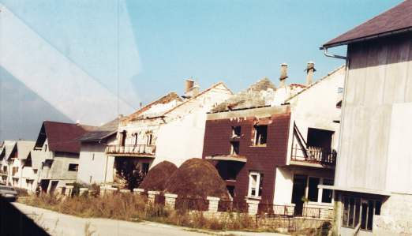
Otišli smo u Hrvatsku i Bosnu kako bismo surađivali s forenzičkim timom Kliničke bolnice Split u Splitu i pružili im potporu. Dok smo bili ondje, pomagali smo pri ekshumaciji tijela iz masovnih grobnica, sudjelovali u obdukcijama te, potom, s hrvatskim forenzičkim timom radili na susretima s obiteljima kako bismo im pomogli u identificiranju tijelâ.
Također smo radili s hrvatskim znanstvenicima u njihovu DNK laboratoriju, koji su osnovali prije godinu dana, uz određene upute dr. Leeja, kako bi se bavili slučajevima u kojima se ne identifikacija ne može provesti tradicionalnim metodama.
Posjetili smo tri novootkrivene masovne grobnice koje su sadržavale tijela Hrvata ubijenih 1991. i 1992. godine. Dvije grobnice, jedna s 34 tijela, a druga s tri, nalazile su se u blizini Kupresa u Bosni. Treća masovna grobnica koju smo posjetili bila je u Petrinji, u Hrvatskoj, udaljenoj oko dva sata helikopterskoga leta od Kupresa. Svrha toga posjeta bila je pomoći u identifikaciji tijela pronađenih u masovnim grobnicama koje se otkrivaju na područjima koja su prije bila pod kontrolom suprotstavljenih vojski.
Naš cilj bio je identificirati mrtve i time pomoći živima u zacjeljivanju rana. U mnogim slučajevima radilo se o obiteljima koje su tijekom proteklih dviju ili triju godina gajile nadu da su njihovi najmiliji možda još uvijek živi. Nekima je rečeno da su im članovi obitelji odvedeni kao zarobljenici. Naš je zadatak bio pomoći u identifikaciji tih tijela kako bismo obiteljima omogućili neku vrstu zaključka, zatvaranja toga poglavlja.
Nije mi danas cilj, dijeljenjem ovoga iskustva, komentirati ni iznositi mišljenja o mirovnom procesu. Isto tako, nisam ovdje da tražim kazne za bilo koga ni da utvrđujem krivnju za ove smrti. To nije bio cilj putovanja. Nismo pregledavali ta tijela radi dokaza o mučenju, pa čak ni radi utvrđivanja točnoga uzroka smrti. To je
Police; Dr. Moses Schanfield, a DNA specialist from Denver; and Dr. David Rowe, a Professor of Pediatrics from the University of Connecticut.
We went to Croatia and Bosnia to work with and lend our support to the forensic team from the Split Clinical Hospital in Split, Croatia. While there, we assisted in the excavation of bodies at mass graves, assisted in autopsies, and then worked with the Croatian forensic team in meeting with families to assist them in identifying the bodies.
We also worked with the Croatian scientists in their DNA laboratory, which they had set up a year ago with some guidance from Dr. Lee to deal with those cases that could not be identified by traditional means. [See Slide 2.]
We visited three newly-found mass graves which contained the bodies of Croatians killed in 1991 and 1992. Two of the graves, one containing 34 bodies and the other, 3, were located near Kupres, Bosnia. The third mass grave we visited was in Petrinja, Croatia, a 2-hour helicopter flight from Kupres. The purpose of this visit was to assist in the identification of those bodies found in the mass graves being uncovered in areas previously controlled by opposing armies.
Our goal was to identify the dead and thereby help heal the living. In many instances, these were families who, for the past 2 or 3 years, had been holding out the hope that their loved ones might still be alive. Some had been told that their relatives had been taken prisoner. Our task was to help identify these bodies, to allow the families some kind of closure.
My purpose in sharing these experiences today is not to make any comments or give opinions regarding the peace process. Likewise, I’m not here to seek penalties for anyone or to assess blame for these deaths. This was not the goal of the trip. We did not examine these bodies for
Masovne grobnice i drugi zločini u Bosni / Mass Graves and other Atrocities in Bosnia
bila politička odluka donesena prije našeg putovanja. Naš je posao bio isključivo raditi na identifikaciji tih tijela i vratiti ih njihovim obiteljima radi dostojnoga ukopa.
Ako zvučim kao da me ovo iskustvo nije potreslo, dopustite mi kazati da, unatoč desetljeću rada u forenzičkoj patologiji i suočavanja sa smrću, nisam bila spremna na mnoge prizore. U jednome je slučaju u jednoj od masovnih grobnica bilo tijelo 82-godišnje slijepe žene. Također, pomagao nam je vojnik koji je, dok je iskapao jednu od grobnica, pronašao tijelo svoga nestaloga brata, civila.
Cijelo je putovanje bilo vrlo dojmljivo, i jedno je od onih koje, mislim, većina ljudi u ovoj zemlji ne bi mogla istinski shvatiti ni razumjeti, niti bi itko tko nikada nije proživio iskustvo rata to mogao i zamisliti. Moj je cilj danas prikazati kliničku percepciju problema ljudi u Bosni i Hrvatskoj u poslijeratnom razdoblju.
Mirovni proces zapravo je tek početak dijela posla koji predstoji za ove ljude. U ovome trenutku još uvijek postoje tisuće nestalih vojnika i civila. Kako mir bude dolazio u regiju, otkrivat će se sve više i više grobnica. Vrlo je vjerojatno da će se ovaj proces identifikacije nastaviti u narednim godinama, kao što i danas identificiramo vojnike iz vremena Vijetnama. Sam broj nestalih i nedostatak resursa znače da je pred tim procesom još dug put.
Sada bih vam željela pokazati neke prizore s tih posjeta. Ova je fotografija snimljena prvoga dana putovanja dok smo se približavali Kupresu, gradu u jugozapadnoj Bosni koji su 1992. godine Srbi osvojili. Prve linije bojišnice nedavno su potisnute s toga područja i otkrivene su brojne masovne grobnice.
Jedna od grobnica s 34 tijela ekshumirana je tjedan dana prije našeg dolaska. Koliko razumijem iz medijskih izvješća, tih 34 ljudi bilo je
evidence of torture or even for specific causes of death. This was a policy decision made prior to our journey. Our job was purely to work toward the identification of these bodies and to return them to their families for proper burial.
In case I sound unmoved by this experience, let me say that despite a decade in forensic pathology and dealing with death, there were many sights that I was unprepared for. In one instance, there was the body of an 82-year-old blind woman in one of the mass graves. Also, we were being assisted by a soldier who, while excavating one of the graves, had found the body of his missing civilian brother.
The entire trip was a very moving one, and one that I think certainly most people in this country could not truly comprehend or understand, and that one who has never lived through the experience of war could envision. My purpose today is to give a clinical perception of the problems of the people of Bosnia and Croatia in the aftermath of war.
The peace process is really just a beginning of some of the work to be done for these people. At this point, there are many thousands of soldiers and civilians still missing. As peace arrives in the region, more and more of these graves will be found. It is quite probable that this identification will be going on for many years, as we are still identifying soldiers from the Vietnam era. The sheer number of the missing and the lack of resources dictates a long road for this process. [See Slide 3.]
I’d now like to show you some of the sights from these visits. This shot was taken on the first day of the trip as we approached Kupres, Bosnia, which is a town in southwestern Bosnia that had been captured by the Serbs from the Croatians in 1992. The front lines had recently pulled back from this area, and several mass graves had been discovered.
pogubljeno dok su članovi njihovih obitelji to promatrali. Kad smo došli u Kupres, bilo je jasno da je cijela regija, sve te kuće, bila granatirana, a zgrade praktički sravnjene sa zemljom.
Iako se činilo da se neki ljudi pokušavaju vratiti svojim domovima, praktički su sve građevine bile uništene. Ovo je gradonačelnik Kupresa u razgovoru s dr. Leejem i dr. Schanfieldom. Utvrdili smo da su ljudi u Kupresu, kao i ljudi u svim područjima koja smo posjetili, bili vrlo gostoljubivi i iznimno zahvalni na našoj pomoći. Gradonačelnik Kupresa bio nam je toliko zahvalan na svemu da su nam usred ratne zone poslužili objed od janjetine i domaćih vina.
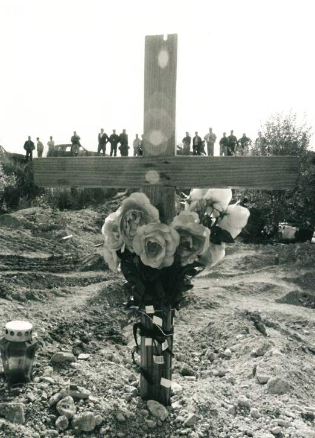
One of the graves containing 34 bodies had been excavated the previous week. It is my understanding from media reports that the 34 had been ordered executed while their relatives watched. [See Slide 4.] As we came to the town of Kupres, it was apparent that all of the region, all the houses, had been shelled, with the buildings being essentially in ruin. [See Slide 5.]
Although some of the people appeared to be attempting to get back to their homes, basically all the structures had been destroyed. This is the mayor of Kupres talking with Dr. Lee and Dr. Schanfield. [See Slide 6.] We found that the people of Kupres, as well as the people in all the areas that we visited, were very hospitable and extremely grateful for our help. Such was the appreciation of the mayor of Kupres that we were served a luncheon of lamb and local wines in the middle of a war zone.
This is the site of the grave that had been excavated the week prior to our arrival at the edge of Kupres. [See Slide 7.] This was the grave that had contained 34 bodies. A family member of one of the deceased had marked the grave with this cross. The bodies had been excavated, preliminarily autopsied at the site, and then moved to the Split Clinical Hospital where we would later work with the forensic team on these bodies.
The make-up of those in this grave cut across many lines: soldier and civilian, man and woman, adult and child, although there was a predominance of young males because of the soldiers.
Križ postavljen na mjestu masovne grobnice u Kupresu iz koje su ekshumirana 34 tijela (foto: Phil Farnsworth, uz dopuštenje).
Cross placed at the site of the mass grave in Kupres from which 34 bodies were exhumed (photo: Phil Farnsworth, used with permission).
Masovne grobnice i drugi zločini u Bosni / Mass Graves and other Atrocities in Bosnia
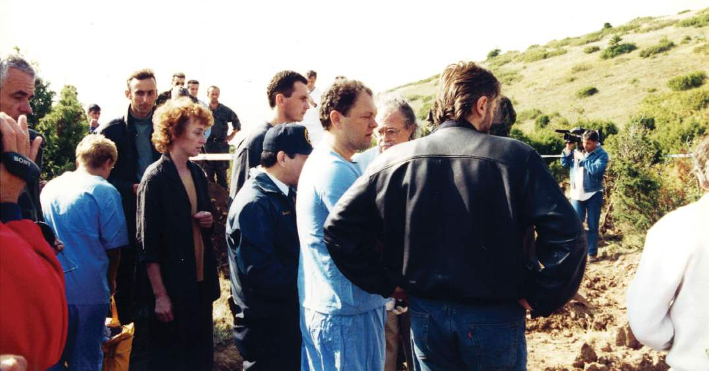
Forenzički tim s gradonačelnikom Kupresa Ivanom Ivićem na mjestu masovne grobnice u okolici Kupresa. Na fotografiji su Henry C. Lee, Dragan Primorac, Barbara Wolf, Šimun Anđelinović i Michael Baden (izvor: arhiv Kliničkoga zavoda za patologiju, sudsku medicinu i citologiju KBC-a Split).
Ovo je mjesto grobnice na rubu Kupresa koja je ekshumirana tjedan dana prije našega dolaska. U toj su grobnici bila 34 tijela. Član obitelji jednog od poginulih označio je grob ovim križem. Tijela su bila ekshumirana, preliminarno obdukcijski pregledana na mjestu pronalaska, a zatim prevezena u Kliničku bolnicu Split, gdje smo poslije s forenzičkim timom radili na tim tijelima.
Sastav žrtava u ovoj grobnici prelazio je mnoge granice: vojnici i civili, muškarci i žene, odrasli i djeca, iako je, zbog velikog broja vojnika, prevladavala skupina mlađih muškaraca. Premda nismo tražili specifične uzroke smrti,
Forensic team with the mayor of Kupres, Ivan Ivić, at the site of a mass grave near Kupres. The photograph includes Henry C. Lee, Dragan Primorac, Barbara Wolf, Šimun Anđelinović, and Michael Baden (source: Archive of the Clinical Department of Pathology, Forensic Medicine, and Cytology, University Hospital of Split).
While we were not looking for specific causes of death, it was apparent that most of these people had died from multiple wounds, including gunshots and bayoneting. A conclusive determination of cause of death would also have been difficult because many of the bodies had been bulldozed and attempts had been made to burn the bodies.
This was a makeshift autopsy table at the edge of the mass grave in Kupres that had been used by the Split forensic team to conduct some of the initial examinations of the bodies. [See Slide 8.] It should be noted that while both
Masovna grobnica u Petrinji (foto: Phil Farnsworth, uz dopuštenje).
Mass grave in Petrinja (photo: Phil Farnsworth, used with permission).
bilo je očito da je većina tih ljudi umrla od višestrukih rana, uključujući strijelne rane i ubode bajunetom. Zaključak o uzroku smrti otežavalo je i to što su mnoga tijela bila pregažena buldožerom i što su se vidjeli pokušaji njihova spaljivanja.
Ovo je improvizirani obdukcijski stol na rubu masovne grobnice na Kupresu kojim se splitski forenzički tim koristio za preliminarne preglede tijela. Valja napomenuti da se, iako su im na raspolaganju bili i tradicionalni forenzičkopatološki postupci i DNK tehnologija, primarni postupak identifikacije uglavnom temeljio na prepoznavanju koje su provodili članovi obitelji.
Budući da je većina tih ljudi dolazila iz gradova koji su gotovo u potpunosti uništeni, u većini slučajeva nije bilo dostupnih stomatoloških ili drugih medicinskih kartona koji bi nam mogli pomoći. U mnogim slučajevima morali smo članovima obitelji pokazati tek komad odjeće i vidjeti hoće li ga prepoznati.
Dok smo obilazili ovu prvu lokaciju masovne grobnice u Kupresu, stigla je vijest da su srpske vlasti tijekom nedavne razmjene zarobljenika označile mjesto još jedne grobnice, za koju se poslije utvrdilo da sadržava tijela trojice vojnika. Otišli smo na to mjesto, na samoj lokaciji se presvukli u medicinske kute i pomagali u ekshumaciji tih tijela.
Treba istaknuti da ta tijela ni na koji način nisu bila opsežno obdukcijski obrađena, onako kako bismo to učinili u našoj zemlji. Nedavno sam sudjelovala u izvlačenju jednog tijela u kaznenome djelu na sjeveru države New York,
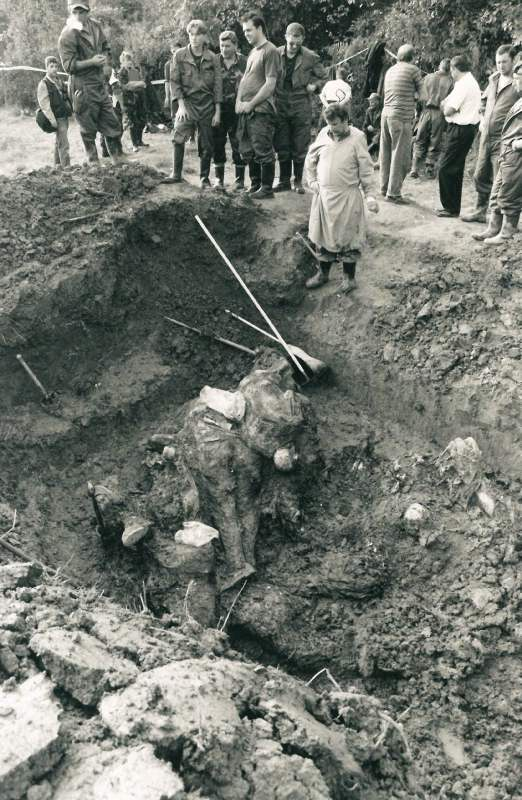
traditional forensic pathology methods as well as DNA technology was available, the primary process used in the identification was largely direct visual examination by the families.
Most of these people came from towns that had been largely destroyed, so in most cases no dental or other medical records existed to work with. In many cases, we actually had to show family members a remnant of clothing to see if they could recognize it. [See Slide 9.]
Masovne grobnice i drugi zločini u Bosni / Mass Graves and other Atrocities in Bosnia
Ekshumacija masovne grobnice na Kupresu. Na fotografiji su Michael Baden, Henry C. Lee i Barbara Wolf (foto: Phil Farnsworth, uz dopuštenje).
Exhumation of a mass grave in Kupres. The photograph includes Michael Baden, Henry C. Lee, and Barbara Wolf (photo: Phil Farnsworth, used with permission).
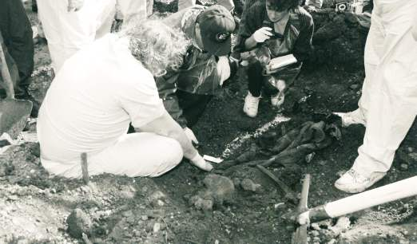
gdje je samo izvlačenje tijela trajalo 12 sati, a obdukcija još jedan dan. Takva temeljitost jednostavno nije bila moguća u Bosni i Hrvatskoj zbog velikoga broja žrtava.
Kao što sam prije spomenula, naš je posjet bio vrlo zapažen i cijenjen. Posvećen nam je i znatan medijski prostor. U lokalnim je novinama idućega dana nakon našega posjeta Kupresu objavljen članak s fotografijom koja prikazuje kako pomažemo u ekshumaciji.
Kasnije toga poslijepodneva vojni nas je helikopter prebacio u Petrinju, grad u središnjoj Hrvatskoj, sjeverno od granice s Bosnom, gdje je otkrivena još jedna velika masovna grobnica. U Petrinju smo stigli na kukuruzno polje u nedavno oslobođenoj regiji, gdje su lokalni vojnici identificirali novu lokaciju masovne grobnice. Iako nismo ostali do kraja ekshumacije, poslije je utvrđeno da je na toj lokaciji bilo gotovo 100 tijela.
Rečeno mi je da su mjesto grobnice odredila dvojica hrvatskih vojnika koji su bili srpski ratni zarobljenici i koji su bili prisiljeni
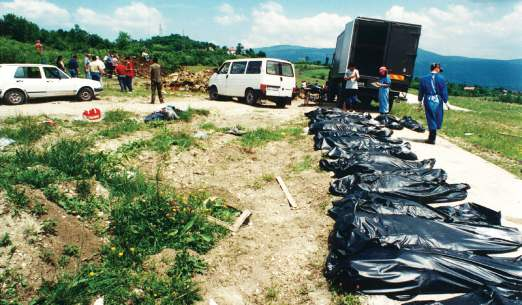
While we were visiting this first mass grave site in Kupres, word came that another grave, which was later found to contain the bodies of three soldiers, had been pinpointed by Serb officials during a recent prisoner exchange. We went to that site, changed into scrub suits at the scene, and assisted in the excavation of these bodies.
I should take the opportunity to note that these bodies were not in any way extensively autopsied as we would do in this country. I recently participated in the recovery of one body in a criminal case in upstate New York where the removal of the body alone took 12 hours and the autopsy another day. This kind of precision was not available in Bosnia and Croatia simply because of the enormity of the numbers.
As I mentioned earlier, our visit was greatly noted and appreciated. There was a great deal of media attention given to our visit. An article appeared the next day following our visit to Kupres in the local paper, showing us at the grave site assisting in the excavation. [See Slide 10.]
pomagati u prikupljanju i pokapanju tijela na tome mjestu. Kada smo stigli, forenzički tim iz Zagreba, najbližega forenzičkog centra sjeverno od Petrinje, radio je na ekshumaciji tijela. U toj su grobnici pronađeni vojnici i civili svih dobi i obaju spolova.
Stigli smo baš u pravi trenutak. Rečeno nam je da je prije našeg dolaska pas na tom mjestu nastradao od eksplozije mine, a medijski izvještaji bilježe da su samo nekoliko sati prije toga na lokaciji pronađene tri protuoklopne granate, vjerojatno postavljene kako bi se spriječilo bilo kakvo iskapanje tijela. Tijela u toj grobnici isto su bila iz 1991. godine. Bila su u vrlo lošemu stanju, zbog raspadanja, ali i zbog samog načina pokapanja, te su se uglavnom sastojala od skeletiziranih ostataka ili djelomično očuvanih kostura.
Budući da su zubi relativno otporni na razgradnju, bili su nam najkorisnije sredstvo za identifikaciju. Iako stomatološki kartoni praktički nisu postojali, katkad bi se članovi obitelji mogli prisjetiti, primjerice, karakterističnoga prednjeg zuba svojih najmilijih i tako prepoznati osobu. U jednome je slučaju stomatologinja koja je radila na zubima nekolicine nestalih došla u obdukcijsku salu i prepoznla vlastite stomatološke zahvate na nekim zubima.
Ovo je bliži prikaz prvoga sloja gomile tijela u ovoj grobnici. U gornjemu središnjem dijelu slajda možete vidjeti obrise nekoliko tijela u
Šimun Anđelinović, Henry C. Lee, stomatologinja i članovi obitelji tijekom identifikacije žrtve u Kliničkome bolničkom centru Split (foto: Phil Farnsworth, uz dopuštenje).
Šimun Anđelinović, Henry C. Lee, a dentist, and family members during the identification of the victim at the University Hospital of Split (photo: Phil Farnsworth, used with permission).
Later that afternoon, we were taken by military helicopter to Petrinja, a town in north-central Croatia over the border from Bosnia where another large mass grave had been discovered. [See Slide 11.] At Petrinja, we arrived in a cornfield in the recently liberated region where local soldiers had identified another mass grave site. Although we did not stay for the entire excavation, it was later determined that the site contained nearly 100 bodies. [See Slide 12.]
I was told that the location of the grave had been determined by two Croatian soldiers who had been Serb prisoners of war and who had been forced to help collect and bury the bodies at the site. [See Slide 13.] When we arrived, a forensic team from Zagreb, the nearest forensic center located to the north of Petrinja, was working to excavate the bodies. Again, the makeup of the bodies in the grave included soldiers and civilians of all ages and both sexes.
Our timing was good. We were told that before our arrival, a dog had been blown up at the site by a landmine, and media reports noted that just hours before, three anti-tank grenades were recovered at the site, presumably put there to prevent anyone from excavating the bodies. The bodies in this grave were also from 1991. They were in very bad shape, both because of decom-
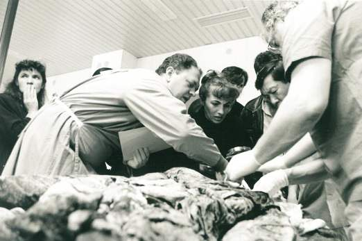
Masovne grobnice i drugi zločini u Bosni / Mass Graves and other Atrocities in Bosnia
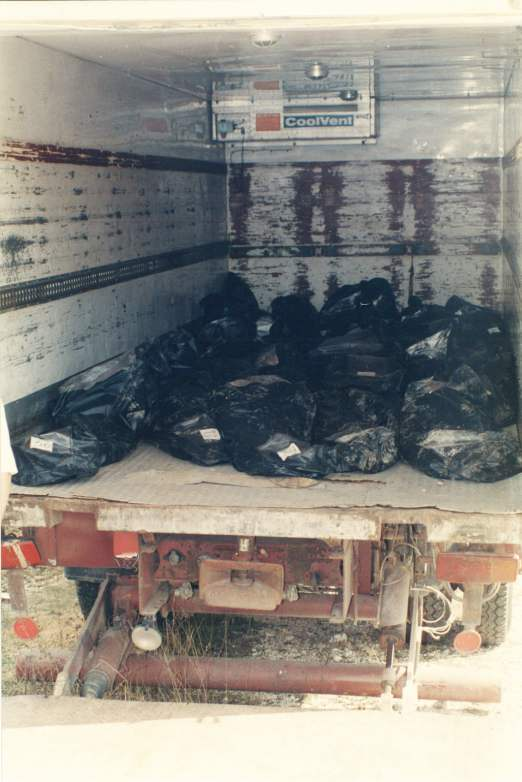
gornjemu sloju. Dvije stvari koje su me posebno pogodile kad smo prvi put došli do ove grobnice bili su kaotičan način na koji su ta tijela bila nabacana jedno na drugo i smrad gotovo 100 tijela nakon četiri godine raspadanja. Mene je to podsjetilo na filmove o koncentracijskim logorima iz Drugoga svjetskog rata, sa slojevima i slojevima tijela nabacanih u grobnicu.
Sljedećega dana vratili smo se u Kliničku bolnicu Split u Hrvatskoj kako bismo s njihovim forenzičkim timom radili na 34 tijela ekshumi-
Hladnjača s posmrtnim ostatcima žrtava ekshumiranih iz masovnih grobnica u Kliničkome bolničkom centru Split (izvor: arhiv Kliničkoga zavoda za patologiju, sudsku medicinu i citologiju KBC-a Split).
Refrigerated truck containing the remains of victims exhumed from mass graves at the University Hospital of Split (source: Archive of the Clinical Department of Pathology, Forensic Medicine, and Cytology, University Hospital of Split).
position and because of the burial process, and consisted predominantly of skeletonized remains or partial skeletons.
Because teeth tend to be relatively resistant to decomposition, they were our most useful tool in identifying these bodies. Although dental records were essentially nonexistent, sometimes members of a family might remember, for example, a characteristic front tooth of a loved one and could recognize the person that way. In one case, a dentist who had worked on several of the missing people came to the autopsy room and was able to identify his own dental work on some of the bodies. [See Slide 14.]
This is closer to the first layer of the mass of bodies in this grave. You can see the outline of several of the bodies in the top layer at the upper center of the slide. The two things that really struck me as we first encountered this grave was the jumbled fashion in which these bodies were stacked one on top of the other, and the stench of almost 100 bodies with 4 years of decay. It seemed, at least to me, reminiscent of movies of the World War II concentration camps with layers and layers of bodies jumbled in a grave.
The following day, we returned to the Clinical Hospital in Split, Croatia, to work with their forensic team on the 34 bodies recovered the previous week in Kupres. Officials had notified
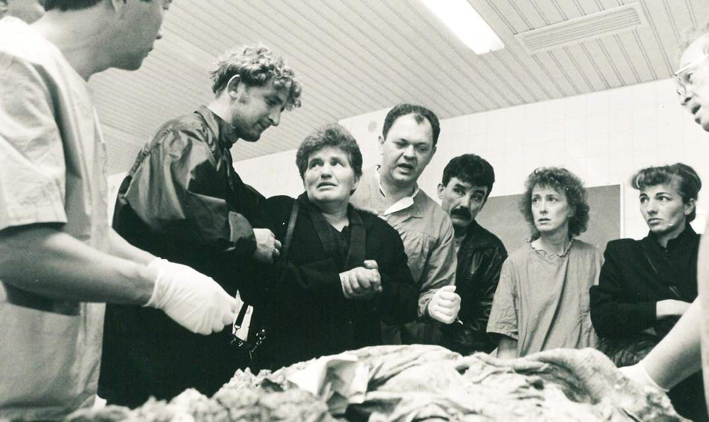
Šimun Anđelinović, Barbara Wolf, stomatologinja i članovi obitelji tijekom identifikacije žrtve u obdukcijskoj sali Kliničkoga bolničkog centra Split (foto: Phil Farnsworth, uz dopuštenje).
rana tjedan dana prije u Kupresu. Institucije su obavijestile članove obitelji iz toga grada koji su imali nestalu rodbinu da mogu doći u Split i pokušati identificirati svoje nestale najmilije.
Ovaj slajd prikazuje veliki rashladni kamion u kojem su tijela bila pohranjena prije pregleda u medicinskom centru. Kamion je duga bijela silueta preko sredine slike. Ovo je pogled u unutrašnjost prikolice rashladnog kamiona, s nizovima tijela u crnim vrećama.
Šimun Anđelinović, Barbara Wolf, a dentist, and family members during the identification of the victim in the autopsy room of the University Hospital of Split (photo: Phil Farnsworth, used with permission).
members of the families in this town who were missing relatives that they could come to Split and attempt to identify their missing loved ones.
This slide shows the large refrigerated truck where the bodies were kept prior to examination at the medical center. [See Slide 15.] The truck is that long white structure across the middle of the slide. This is looking inside this trailer, this refrigerated truck, showing rows and rows of bodies in body bags. [See Slide 16.]
Masovne grobnice i drugi zločini u Bosni / Mass Graves and other Atrocities in Bosnia
Da se ovo događalo u Sjedinjenim Državama, taj bi posao, po meni, trajao mjesec dana. U Splitu je to, zapravo, bio posao od jednoga jutra ili jednoga dana. Nije to bilo zbog nedostatka brige ili nedostatka stručnosti forenzičkoga tima, nego isključivo zato da se, s obzirom na golemi broj ljudi, identificira što je više moguće žrtava, bez potpunoga obduciranja svakoga tijela.
Ovo je obdukcijska sala Kliničke bolnice Split. U prostoriji je istovremeno bilo možda pet ili šest tijela na stolovima. Ovo su članovi našeg tima: ja s desne strane, dr. Lee i dr. Baden u sredini, kako radimo s dr. Šimunom Anđelinovićem, glavnim forenzičkim patologom u Splitu, u pripremama za identifikaciju jednoga od tijela.
Tijela smo rasporedili po stolovima u obdukcijskoj sali na način za koji smo se nadali da će obiteljima biti najmanje potresan. Ovo je tijelo poginulog hrvatskoga vojnika. Njegova kaciga nalazi se na prsima, a iako se ovdje ne vidi jasno, na kacigi je velika rupa od metka. Ovo je prikaz istoga vojnika s izraženim ozljedama lica.
Kao što sam spomenula, u mnogim je slučajevima identifikacija naposljetku ovisila o tome da član obitelji prepozna komad nakita ili odjeće. U ovom je slučaju supruga ovog hrvatskog vojnika, prikazanoga ovdje od stopala prema glavi, uspjela identificirati svoga muža jednostavno prepoznajući njegove čarape marke Nike.
Dok smo pregledavali ta raspadnuta tijela stara nekoliko godina, istodobno smo bili svjesni nasilja koje je još uvijek trajalo u blizini. Susjedna obdukcijska sala bila je mjesto obdukcije vojnika poginulih u aktualnim borbama. Ovaj je vojnik ubijen prethodnoga dana s višestrukim ranama od gelera.
Kao forenzička patologinja naviknula sam da obitelji dolaze u obdukcijsku salu kako bi pogledale ili identificirale članove svojih obite-
If this were the United States, this would have been a month’s work for me. At Split, this turned out to be essentially a morning or a day’s work. This is not because of lack of caring of the forensic team or lack of sophistication. It was just that given the enormous number of people to identify as many people as possible without specifically autopsying each body.
This is the autopsy room in the Clinical Hospital in Split. [See Slide 17.] There were probably five or six bodies at a time on tables in this room. These are the members of our team, myself on the right; Dr. Lee and Dr. Baden in the middle working with Dr. Simun Andelinovic, who was the chief forensic pathologist in Split, preparing to identify one of the bodies. [See Slide 18.]
We arranged the bodies on tables in the autopsy room in a way we hoped would be the least grotesque to family members. [See Slide 19.] This is the body of a dead Croatian soldier. [See Slide 20.] His helmet is on his chest, and although it really doesn’t show well here, there’s a large bullet hole in the helmet. This is a shot of the same soldier showing substantial facial trauma. [See Slide 21.]
As I mentioned, in many of these cases, identification came down to a family member just recognizing a piece of jewelry or a piece of clothing. In this case, the wife of this Croatian soldier who’s shown here feet first was able to identify her husband just by recognizing his Nike socks. [See Slide 22, 23.]
While we were examining these decomposing bodies from several years earlier, we were also reminded of the continued ongoing violence nearby. The adjacent autopsy room was the site of the autopsies of soldiers being killed in the current fighting. This was a soldier who had been killed the day before with multiple shrapnel wounds. [See Slide 24.]
lji, ali situacija s pet ili šest tijela na stolovima i desetcima obitelji koje se izmjenjuju u obdukcijskoj sali bila je iskustvo za koje nisam bila pripremljena. Bilo je puno teže i zbog jezične barijere. Dr. Anđelinović, koji je u sredini fotografije, pokušavao je za nas obavljati ulogu prevoditelja, ali uz šest tijela i mnogo obitelji, to je bilo praktički nemoguće.
Obiteljima smo pokazivali sve što smo mogli pronaći kako bismo pomogli u procesu identifikacije — često zube preminulih. Najteže je bilo to što, zbog jezične barijere, nismo mogli pružiti nikakvu utjehu članovima obitelji. Unatoč groznomu stanju tijela pred njima, članovi obitelji jako su se željeli zadržati uz svoje identificirane najmilije.
Treba napomenuti da je misija u ovome slučaju uvelike bila uspješna. Do kraja je dana identificirano 27 od 34 tijela iz prve masovne grobnice i sva tri vojnika iz druge grobnice. DNK testiranja na preostalim, još neidentificiranim tijelima, i dalje se nastavljaju.
Ljudi u Bosni i Hrvatskoj prošli su kroz jedan od najgorih ratova stoljeća, s okrutnošću i neljudskim ponašanjem čovjeka prema čovjeku koji podsjećaju na Drugi svjetski rat. Apelirala bih na ovu Komisiju i na sve vlade svijeta da shvate težak položaj tih ljudi i pomognu osigurati sredstva koja će im vjerojatno godinama trebati za rad na identifikaciji tih žrtava. Hvala vam.
As a forensic pathologist, I’m used to families coming to an autopsy room to examine or identify their relatives, but having five or six bodies on tables and dozens of families rotating through an autopsy room was an experience I wasn’t prepared for. It was much more difficult because of the language barrier. Dr. Andelinovic, who is in the center of the photograph, tried to serve as an interpreter for us, but with six bodies and many families, it was essentially impossible. [See Slide 25.]
We showed families whatever we could find to help in the identification process—frequently, teeth of the deceased. The thing that was most difficult was that because of the language barrier, we couldn’t offer any comfort to the family members. [See Slide 26.] Despite the grisly nature of the bodies before them, the family members wanted very much to spend time with their identified loved ones.
I should note that the mission in this case was largely a success. Before the end of the day, 27 of the 34 bodies in the first mass grave, and all 3 of the soldiers from the second grave, were identified. DNA testing is continuing on the remaining bodies yet unidentified.
The people in Bosnia and Croatia have been through one of the worst wars of the century with cruelty and man’s inhumanity to man reminiscent of World War II. I would appeal to this Commission and to all the governments of the world to understand the plight of these people and to help make the resources available to them that will be needed probably for years to come in working with and identifying these victims. Thank you.
Masovne grobnice i drugi zločini u Bosni / Mass Graves and other Atrocities in Bosnia
PITANJA I ODGOVORI
Predsjednik SMITH. Dr. Wolf, hvala Vam na tom vrlo uznemirujućem svjedočenju. Podsjetili ste nas o kakvim se zločinima zapravo radi kada ih vidimo crno na bijelo i u boji. Počeo bih s pitanjima, a zatim bih prepustio riječ svojim kolegama za njihova eventualna pitanja. Gospodine Rohde, prije ste spomenuli da su neki od vaših čuvara, s kojima ste bili u kontaktu dok su vas bosanski Srbi držali u zatočeništvu, bili očito pristojniji od drugih. Nisu bili skloni zastrašivanju. Čak su Vam dali naslutiti da bi Vaša sudbina ipak mogla imati dobar ishod. Iznova slušamo da se svi bosanski Srbi u ovom ratu ne ponašaju kao da su lišeni svake kaznene odgovornosti te da među njima ima i onih koji doista vjeruju da se ti zločini ne događaju. Hitler je imao svoje SS postrojbe, svoje jurišne odrede i ljude koji su zločine činili kao dio svoje svakodnevice. General Mladić, a gospodine Lupis, možda i Vi želite nešto reći o tome, mora imati neku vrlo elitnu skupinu ili korpus ljudi sklonih takvim zločinima, koji će bespogovorno slijediti zapovijedi, do zadnjega slova, i činiti ovakve strašne stvari kakve ovdje vidimo. Postoje li dokazi da se utvrđuje identitet tim ljudima? Znam da je protiv nekolicine podignuta optužnica, uključujući Mladića. Prikupljamo li dokaze koji upućuju na to da postoji jezgra bosanskih Srba koji su počinili većinu ovih zločina? Gospodine Lupis, biste li Vi željeli prvi odgovoriti?
G. LUPIS. Da. Zapravo, tijekom ove istrage pokušali smo sastaviti zapovjedni lanac koji povezuje vojnike na terenu koji su počinili ove zločine i koji vodi sve do Mladića. U ovome slučaju, kada je riječ o ofenzivi na Srebrenicu, većina toga zahtjevnog posla već je obavljena, jer je general Mladić viđen na mnogim od tih stratišta. Pravi je problem
QUESTIONS AND ANSWERS
Chairman SMITH. Dr. Wolf, thank you for that very disturbing testimony. You have reminded us what kind of atrocities we are actually talking about when we see it in black and white and in color. I’d like to begin the questioning and then yield to my colleagues for any questions they might have. Mr. Rohde, you mentioned earlier that, when you were held by the Bosnian Serbs, some of your guards with whom you had contact were obviously more decent than others. They weren’t into intimidation. They even gave you a headsup that things might turn out well for you. We’ve heard over and over that all of the Bosnian Serbs are not acting with the same kind of impunity in this war, and that there are some who really believe that these atrocities are not taking place. Now, Hitler had his SS, he had his storm troopers, and he had people who committed atrocities as a matter of course. General Mladic—and Mr. Lupis, you might want to speak to this as well—must have a very elite group or corps of people who are given to these kinds of atrocities, who will follow orders to the letter, dotting the i’s and crossing the t’s, and doing the kinds of terrible things that we see here. Is there evidence that those people are being identified? I know there have been a few names handed down, including Mladic, in terms of indictments. Are we gathering evidence that indicates there is a core group of Bosnian Serbs that committed the bulk of these atrocities? Mr. Lupis, would you want to start on that?
MR LUPIS. Yes. As a matter of fact, during this investigation, we’ve been trying to piece together a chain of command linking the soldiers in the field who committed these crimes and continue up the ladder until we get to Mladic. In this case, for the Srebrenica offensive, most of the hard work has been cut out for us because General Mladic
sada pokušati uspostaviti vezu između pješaštva i Mladića. Human Rights Watch proteklih je dana uspio pribaviti informacije, imena zapovjednika bosanskih Srba koji su djelovali tijekom ove ofenzive i koji su izdavali zapovijedi vojnicima. Teže je, u ovome trenutku, sada utvrditi tko je iz same Srbije, koji su vojnici i vojni dužnosnici iz Srbije bili uključeni, jer postoje snažni dokazi da su u ovoj ofenzivi sudjelovale i snage iz Srbije. Prikupili smo mnoge iskaze. Ljudi su govorili da su vidjeli srpske vojnike u srpskim uniformama, prepoznatljive ponajprije po naglasku. Srpski je naglasak vrlo različit od bosanskoga. Također, izvješća UN-a koja je objavio Mazowiecki sadržavaju svjedočanstva ljudi koji su vidjeli srpske vojnike uključene u ovu ofenzivu. Dakle, sada imamo prilično jasnu sliku o tome tko je uključen sa strane bosanskih Srba. Puno je teže pitanje možemo li utvrditi tko je sudjelovao iz same Srbije.
Predsjednik SMITH. Gospodine Rohde?
G. ROHDE. Od preživjelih sam čuo isto to u svezi sa srpskim naglaskom i slično. Stručnjaci s kojima sam razgovarao ondje, dužnosnici UN-a i razni vojni dužnosnici, smatraju da predsjednik Srbije Slobodan Milošević ima jednu od najboljih obavještajnih službi u bivšoj Jugoslaviji. On je vrlo dobro umrežen. Srbijanci se lako mogu uvući na teritorij bosanskih Srba, tako da je vrlo vjerojatno da je znao da se ta pogubljenja događaju, ali nije učinio ništa da ih zaustavi.
Predsjednik SMITH. S obzirom na navode o masovnim pogubljenjima o kojima je danas bilo riječi, a i prije smo ih čuli, je li bilo ikakvih pokušaja Ujedinjenih naroda, osobito u svezi sa sigurnom zonom Srebrenice, da se istraže ta masovna pogubljenja dok su se događala?
was witnessed, was seen at many of these massacre sites. The real problem now is to try to get the chain established between the infantrymen and Mladic. Human Rights Watch, in the last few days, has been successful in obtaining information, names of Bosnian Serb commanders who operated during this offensive and who gave the orders to the men. The harder thing right now is to establish precisely who from Serbia proper—what military people from Serbia proper, what soldiers from Serbia proper—were involved, because there’s strong evidence to support that troops from Serbia proper were also used in this offensive. We collected many testimonies. People said they’d seen Serbian troops in Serbian uniforms, distinguishable mainly by accents. The Serbian accent is very different from the Bosnian accent. Also, the U.N. reports that Mazowiecki published also collected testimonies of people seeing Serbian troops involved in this offensive. So right now, we have a pretty good picture of who’s involved from the Bosnian Serb side. The more difficult question now is to see if we can determine who was involved in Serbia proper.
Chairman SMITH. Mr. Rohde?
Mr. ROHDE. I heard the same thing from survivors regarding Serbian accents and that kind of thing. And experts I’ve talked with over there—U.N. officials, various military officials—feel that President Milosevic of Serbia has one of the best intelligence organizations in the former Yugoslavia. He has very close ties. Serbians are able to slip into Bosnian Serb territory, so it’s very possible that he knew these executions were going on but did nothing to stop them.
Chairman SMITH. Given the allegations of mass executions which have been spoken about today—and we’ve heard about previously—was there any attempt by the United Nations,
Masovne grobnice i drugi zločini u Bosni / Mass Graves and other Atrocities in Bosnia
G. LUPIS. Pa, uloga Ujedinjenih naroda je problematična, jer je nizozemski bataljun Ujedinjenih naroda u Srebrenici bio u vrlo teškoj situaciji: s premalo ljudi i nesposoban zaštititi enklavu od ovog napada. Problem koji Human Rights Watch ima s ulogom Ujedinjenih naroda jest to što, čak i ako nisu mogli to spriječiti, nisu pravodobno objavili ključne informacije. Nizozemski su mirotvorci svjedočili nekima od ovih zločina, a umjesto da su ih odmah u stvarnome vremenu dojavili radio vezom, ovi navodi i priče počeli su izlaziti tek nekoliko dana nakon pada Srebrenice. Sada je Mazowiecki, posebni izvjestitelj UN-a za ljudska prava, sastavio izvješće temeljeno na iskazima ljudi koji su istraživali ulogu snaga Ujedinjenih naroda ondje, i ono je izazvalo buru u Nizozemskoj. Čini se da je nizozemska vlada zatajila informacije, odnosno popis muškaraca predanih Srbima. Ako želite saznati više o tome, naveli smo to u svome izvješću, ali sada UN doista pokušava sagledati što može učiniti kako bi objasnio taj izostanak djelovanja. Zbog sloma u Srebrenici, gospodin Mazowiecki podnio je ostavku na svoju dužnost, mislim potkraj kolovoza ili početkom rujna.
G. ROHDE. Još samo nešto. Otišao sam i u Nizozemsku te razgovarao s nekim mirotvorcima koji su i sami bili u enklavi. Oni su mi rekli da su bili duboko frustrirani time što su bili brojčano nadjačani, slabije naoružani i što im je praktički bila povjerena nemoguća zadaća. Konkretno, radilo se o popisu, vjerujem, od 142 muškarca, oprostite, 239, koji su se nalazili unutar zone UN-a i kojima su nizozemske snage naredile da odu. Dok su izlazili, odvajali su ih od obitelji i odvodili. Svi se ti muškarci sada vode nestalima, a jedan od preživjelih s kojima sam razgovarao rekao mi je da je i on bio u Potočarima, što me navodi na zaključak da bi ti muškarci vrlo vjerojatno mogli biti u grobnici koju sam pronašao u blizini sela Čajniče.
particularly as related to the safe haven Srebrenica, to investigate those mass executions as they were occurring?
Mr. LUPIS. Well, the role of the United Nations is problematic in the fact that the United Nations Dutch battalion in Srebrenica was in a very difficult situation: undermanned and unable to protect the enclave from this attack. The problem that Human Rights Watch has with the United Nations’ role is that even if they were helpless in stopping this from happening, there was crucial information which was not released in a timely fashion. The Dutch peacekeepers witnessed some of these atrocities taking place, and instead of radioing it out real-time, these allegations and stories started coming out a few days after the fall of Srebrenica. Now, Mazowiecki, the U.N. human rights rapporteur, had written up a report based on testimonies taken from people investigating the role of the U.N. troops there; and it has caused waves in Holland. The Dutch Government has apparently suppressed information, a list of men who were turned over to the Serbs. If you would like to read about this more in detail, it’s in our report, but right now, the U.N. is really trying to feel out what it can do to explain this lack of action taken by it, and as a result of the Srebrenica debacle, Mr. Mazowiecki resigned his post in, I think, late August, early September.
Mr. ROHDE. There’s just one thing. I also went to Holland and spoke to some of the peacekeepers who were in the enclave themselves, and they spoke of being very frustrated about being outmanned, outgunned, and almost being given an impossible mission to do. And the specific thing was that there was a list of, I believe, 142 men—239, sorry—who were inside the U.N. enclave and ordered by the Dutch to leave.
Predsjednik SMITH. Postavit ću još jedno pitanje prije nego što prepustim riječ gospodinu Hoyeru. Gospodine Lupis, mislim da se ovo pitanje osobito odnosi na Vas kao istraživača u organizaciji za ljudska prava. Gospodine Rohde i dr. Wolf, možda ćete se i vi željeti vratiti na neka od mjesta koja ste posjetili. Vjerujete li da ćete imati pristup, nesmetan pristup, lokacijama za koje se sumnja da se na njima nalaze masovne grobnice i na kojima su možda počinjeni drugi zločini sa svih triju strana?
G. ROHDE. Vjerujem da, prema mirovnom sporazumu, novinari nemaju nesmetan pristup teritoriju bosanskih Srba.
G. LUPIS. Da, i ovo je dobra prilika da se prozre blef Srba po pitanju njihovih obećanja da će dopustiti pristup tim grobnicama, u skladu s Daytonskim mirovnim sporazumom. Vjerujem da IFOR, provedbene snage, imaju nesmetan pristup bilo kojemu mjestu u Bosni i Hercegovini. Ovo bi bila dobra prilika da se organizacije za ljudska prava, kao i forenzički stručnjaci, dovedu na mjesta pokolja s pripadnicima IFOR-a. Vjerujem da istočna Bosna, gdje se nalazi Srebrenica, potpada pod američku jurisdikciju, pa bi pravodobna mjera bilo upućivanje forenzičkoga tima i tima za ljudska prava pod pratnjom američkih vojnika na ta mjesta, čim Daytonski mirovni sporazum bude potpisan. Mislim da bi moglo biti osobito opasno ono što je David prije spomenuo: kad je bio zarobljen, oduzeli su mu karte s označenim lokacijama, a razvili su mu i fotografije. Na to treba reagirati žurno; u protivnom bi bosanski Srbi mogli iskopati te grobnice i ukloniti tijela. Vjerujem da su već na jednom mjestu počeli.
Predsjednik SMITH. Ako se smijem nadovezati, je li to nešto što bi trebalo koordinirati s tužiteljem Goldstoneom i njegovim suradnici-
As they left, they were separated from their families and taken away. All of those men are missing, and one of the survivors that I spoke to said he was also at Potocari, which leads me to believe that those men may very well be in the grave that I found near the village of Cajnice.
Chairman SMITH. Let me ask one final question before yielding to Mr. Hoyer. Mr. Lupis, I think this issue will especially apply to you as a researcher for a human rights organization. Mr. Rohde and Dr. Wolf, you also may want to go back to some of the places that you have visited. Do you believe that you will have access, unfettered access, to the sites where suspected mass graves and other kind of atrocities may have been held by all three sides?
Mr. ROHDE. I believe, according to the peace agreement, journalists do not have unfettered access to Bosnian Serb territory.
Mr. LUPIS. Yes, and this would be a good opportunity to call the Serbs’ bluff and promise access to these graves under the Dayton peace agreement. I believe IFOR, the Implementation Force, has unrestricted access to any place in Bosnia-Herzegovina. This would be a good opportunity to bring human rights groups, as well as forensic experts, along with IFOR troops, to the massacre sites. I believe eastern Bosnia, where Srebrenica is, falls under U.S. jurisdiction, so a timely action would be to deliver a forensic team and a human rights team to be escorted to these sites by U.S. troops as soon as the Dayton peace agreement is signed. One thing I think David said before, which may be dangerous, is that when he was captured, his maps of the sites were confiscated from him and, as well, his pictures were developed. Something like this should be done in a hurry; otherwise, the Bosnian Serbs
Masovne grobnice i drugi zločini u Bosni / Mass Graves and other Atrocities in Bosnia
ma ili je to nešto što bi se radilo neovisno? Kako biste to organizirali? Dr. Wolf, kako ste Vi organizirali svoj dio?
Dr. WOLF. Naše je putovanje bilo pod okriljem AmeriCaresa i u suradnji s Kliničkim bolničkim centrom u Splitu. Na terenu djeluje nekoliko forenzičkih timova, tim u Splitu i tim u Zagrebu. Oni raspolažu svim potrebnim znanjima i tehnikama za provedbu identifikacijskih postupaka, uključujući i DNK tehnologiju, ali u osnovi govorimo o samo nekoliko forenzičkih patologa i stomatologa. Dakle, mislim da bi nam trebali i resursi, ponajprije financijska sredstva, ali i u vidu pomoći drugih forenzičkih stručnjaka. Oni bi zasigurno bili vrlo zahvalni na svakoj forenzičkoj pomoći u tom pogledu.
Predsjednik SMITH. Gospodine Lupis, kako informacije koje prikupite dolaze do tužitelja Goldstonea? Radite li izravno s njim ili mu ih jednostavno prosljeđujete?
G. LUPIS. Ne, mi radimo neovisno. Oni imaju svoje istražitelje, a mi svoje. Ali, radimo usporedno. Sve što otkrijemo ili utvrdimo odmah im šaljemo kako bismo im pomogli u sastavljanju predmeta za optužnice. Ipak, sustav funkcionira dobro. Do sada je sve što smo objavili od 1991. do 1992. godine o ratu predano Međunarodnomu kaznenom sudu, tako da je to učinkovito. Mislim da bi oni mogli obaviti dobar posao kad bi cijeli postupak proveli do kraja.
G. ROHDE. Samo želim istaknuti da ja ne radim usporedno sa Sudom za ratne zločine. Moj je cilj samo iznijeti informacije u javnost i učiniti ih javno dostupnima. Ipak, bilo bi dobro na to predloženo putovanje, o kojemu ste govorili, povesti i novinare, kako bi i oni mogli ići, jer mi nemamo nesmetan pristup; ali siguran sam da bi bilo novinara koji bi se dobrovoljno pridružili kada bi postojala odgovarajuća sigurnosna jamstva.
would be able to dig up these graves and remove the bodies. I believe they’ve started in one place already.
Chairman SMITH. If I could follow up, is there something that should be coordinated with Justice Goldstone and his prosecutors, or is it something that would be done independently? How would you work that? Dr. Wolf, how did you work yours?
Dr. WOLF. Well, our trip was under the auspices of AmeriCares and in collaboration with the Split Medical Center. There are several forensic teams in place, a team in Split, a team in Zagreb. They have all of the knowledge and techniques, including DNA technology, to do the identification process, but basically we are talking about just a few forensic pathologists and dentists. So I think we would need both the resources, in terms of monetary resources, as well as assistance from other forensic experts. They are certainly very appreciative of any forensic help in that regard.
Chairman SMITH. Mr. Lupis, how does your information make its way to Justice Goldstone? Do you work with him, or do you feed them information?
Mr. LUPIS. No, we work independently. They have their own investigators, and we have ours. But we work in a parallel fashion. Whatever we uncover or discover we send immediately to them just to help them build the cases for the indictments. But it’s a solid system. So far, everything we’ve published since 1991-1992 about the war has been handed over to the International Criminal Tribunal, so it’s effective. I think they could do a good job if they fully carried it out.
Mr. ROHDE. I just want to state that I don’t work in a parallel fashion with the War Crimes Tribunal. I just try to get the information
Predsjednik SMITH. Dajem riječ uvaženomu predsjedniku Odbora za međunarodne odnose, gospodinu Gilmanu.
G. GILMAN. Hvala Vam, gospodine Smith. Želio sam samo pohvaliti Vas, senatora D’Amata i članove Komisije što održavate ovo saslušanje. Ono je iznimno pravodobno, i nadam se da će dokazi koje su prikupili naši istražitelji doći u prave ruke, do Suda za ratne zločine. Mnogi od nas u Kongresu vrlo su zainteresirani za to da se progon tih ratnih zločina nastavi i da ne ostanu „zatrpani” u svoj dokumentaciji povezanoj s nastojanjima da se na tome području uspostavi mir. Hvala Vam, gospodine Smith. Žao mi je, moram ići na drugi sastanak.
Predsjednik SMITH. Hvala Vam, gospodine predsjedniče. Gospodine Hoyer.
G. HOYER. Puno Vam hvala. Želim zahvaliti svima vama na iskazima, ali, što je još važnije, želim vam zahvaliti na poslu koji obavljate. U tri različita područja upravo vi možete pomoći da se ciklus osvete, nepravde i nekažnjenih zločina, o kojemu sam govorio, više ne ponovi. Postavio bih nekoliko pitanja. Dr. Wolf, rekli ste da na terenu u Bosni, zapravo, postoje patolozi koji su kompetentni i sposobni za kvalitetan forenzički rad.
Dr. WOLF. Bez sumnje, i mislim da je ovo zaista primjer znanosti koja prelazi političke okvire. Tehnike kojima se koristimo u Sjedinjenim Državama uglavnom su iste kao one koje se primjenjuju tamo, uključujući i DNK laboratorij u Splitu.
G. HOYER. Problem je, koliko shvaćam, dakle obujam posla i nedostatak ljudi koji taj posao mogu odraditi?
Dr. WOLF. Broj osoba koje treba identificirati i nedostatak dostupnih informacija koje
public and give it to the public. It would be good, though, if this proposed trip you’ve talked about would include journalists so they could also go, and we don’t have unfettered access; but I’m sure that there are journalists who would volunteer to go along if there were adequate security guarantees.
Chairman SMITH. I yield to the distinguished chairman of the International Committee, Mr. Gilman.
Mr. GILMAN. Thank you, Mr. Smith. I just wanted to commend you and Senator D’Amato and members of the Commission for conducting this hearing at this time. It’s very timely, and I hope that the evidence unearthed by our investigators will get to the proper hands, the tribunal that’s examining the war crimes. Many of us in the Congress are very much concerned about further pursuit of those war crimes, that they not get buried in all of the paperwork that’s going on in trying to give some peace to that area. Thank you, Mr. Smith. I regret I’m being called to another meeting.
Chairman SMITH. Thank you, Mr. Chairman. Mr. Hoyer.
Mr. HOYER. Thank you very much. I want to thank all three of you for your testimony, but much more important than that, I want to thank you for the work you’re doing. In three different areas, you are critical players, making sure that the cycle of vengeance and lack of justice and redress of atrocities that I talked about will not occur. Let me ask a few questions. Dr. Wolf, you indicated that there were, in fact, pathologists on the ground in Bosnia who are competent and capable of doing good forensic work.
Dr. WOLF. Very much so, and I think this was really an example of science crossing polit-
Masovne grobnice i drugi zločini u Bosni / Mass Graves and other Atrocities in Bosnia
mogu pomoći pri identifikaciji. Forenzički timovi obavili su golem posao prikupljanja svih dostupnih podataka o nestalim osobama. Imaju bazu podataka i prikupili su sve dostupne dentalne i zdravstvene podatke o tim nestalima, ali u mnogo slučajeva, s obzirom na to da su cijeli gradovi razoreni, vrlo je malo toga što se može iskoristiti. Uobičajeno je da se pri identifikaciji raspadnutoga tijela koristimo stomatološkim kartonima i sličnim podatcima. U mnogim slučajevima takvi zapisi ondje nisu dostupni. Zbog toga je potreba za analizom DNK-a veća. Laboratorij u Splitu radi već oko godinu dana i sada proširuje rad izvan tradicionalnih metoda analize DNK-a, nadamo se u smjeru sofisticiranijih tehnika analize mitohondrijskoga DNK-a. Mislim da će to postati vrlo važno u ovome procesu. Tako uzorci članova obitelji mogu poslužiti za identifikaciju nekih nestalih osoba kada druge metode identifikacije nisu dostupne. Hrvatski su znanstvenici dolazili u ovu zemlju i radili s tim tehnologijama. Naši stručnjaci za DNK, dr. Lee, dr. Schanfield i drugi, pregledali su njihov rad i tehnologiju. Kompetencije i znanje zasigurno imaju. Potrebni su im resursi i ljudi.
G. HOYER. Doktorice, govorili ste o identifikaciji ubijenih osoba. Očigledno Vaš posao nije toliko usmjeren na samu identifikaciju osoba, koliko na utvrđivanje zašto su ubijene, posebice kada se pokušava uspostaviti veza s kaznenim djelom, u ovom slučaju ratnim zločinom. Jeste li uvjereni da možemo provesti forenzičku obradu kakvu Haag zahtijeva?
Dr. WOLF. Kao što ste rekli, obično kao forenzička patologinja radim na kaznenim predmetima. U ovome slučaju, na ovome konkretnom putovanju, donesena je odluka da se ne traže dokazi o zločinima, iako mislim da, očito, masovne grobnice same po sebi, i ljudi u njima, donekle govore sami za sebe. Tijela
ical lines. The techniques that we use in the United States were very much the same techniques that they were using there, including the DNA laboratory in Split.
Mr. HOYER. The problem, I take it then, is the volume of work to be done and the scarcity of numbers there to do the work?
Dr. WOLF. The volume of people to be identified, and the lack of available information which aids in identification. The forensic teams have done a tremendous amount of work in gathering whatever information is available about the missing persons. They have a data bank and have gathered whatever dental or other medical information about these missing persons, but in many cases, because the entire towns are destroyed, there is very little to use. Traditionally with identification of a decomposed body, we work with dental records, that sort of thing. In many cases, those records aren’t available there. So that puts a greater need for DNA techniques. The laboratory in Split has been up and running for about a year and they’re now expanding beyond traditional DNA, hopefully into the more sophisticated mitochondrial DNA techniques. I think that’s going to become very important in this process. In that way, samples from relatives can be used to identify some of these missing people when other methods of identification aren’t available. Croatian scientists have come to this country and spent time working with the technologies. Our DNA experts, Dr. Lee, Dr. Schanfield, and others, have looked at their work and the technology. The capabilities are certainly there. It’s resources and people that are needed.
Mr. HOYER. Doctor, you have reflected upon the identification of individuals who have been killed. Obviously your job is not so
nismo posebno pregledavali u potrazi za tragovima mučenja pa ni radi utvrđivanja konkretnoga uzroka smrti. Svrha je ovoga putovanja bila isključivo identifikacija.
G. HOYER. Identifikacija.
Dr. WOLF. Takav bi rad svakako uključivao i utvrđivanje uzroka smrti.
G. HOYER. Mislite li da će se i taj drugi dio dogoditi?
Dr. WOLF. Što se našega rada tiče, mi smo obavili ovo putovanje. Nemamo konkretne planove vraćati se. Forenzički tim iz Splita svakako sve dokumentira, ali u ovom su trenutku oni preopterećeni samim nastojanjem da obiteljima pruže barem neku vrstu zaključka. Kao što sam spomenula, još uvijek identificiramo posmrtne ostatke koji nam se vraćaju iz Vijetnama.
G. HOYER. Iz Vijetnama?
Dr. WOLF. Čini mi se da je u Splitu prevladavao stav da su ljudi itekako svjesni što se događa sa zločinima u toj zemlji i da žele obiteljima omogućiti da nastave živjeti, a sama brojnost nestalih znači da se svako tijelo ne može obdukcijski obrađivati radi traženja dokaza o mučenju ili zločinima.
G. HOYER. Razumijem.
Dr. WOLF. To radimo isključivo zbog njihovih obitelji.
G. HOYER. Hvala. Gospodine Rohde, nekoliko ste puta spomenuli masovne grobnice koje ste identificirali, fotografirali i o kojima ste razgovarali s preživjelima. Više ste puta govorili o utvrđivanju jesu li u pitanju civili ili vojnici te o tome da su Srbi tvrdili da se radi o vojnicima.
much about identification, but to determine why they were killed, particularly in trying to make some connection with a criminal act, in this case, a war crime. Are you confident that we’re going to be providing the kind of forensics work that will be needed in the Hague?
Dr. WOLF. As you said, usually as a forensics pathologist, my work is in dealing with a criminal situation. In this case, with this particular trip, the specific decision had been made not to look for evidence of atrocities, although I think, obviously, the mass graves themselves and the people in those graves, in some part, speak for themselves. We didn’t specifically examine the bodies for torture or even cause of death. This trip was purely for identification.
Mr. HOYER. Identification.
Dr. WOLF. It’s work that certainly—looking for—
Mr. HOYER. Do you see the other happening?
Dr. WOLF. As far as our work goes, we made this trip. We don’t have specific plans to go back. It’s certainly being documented by the team that we worked with from Split; but, at this point, they’re overwhelmed with just attempting to provide the families some closure. As I mentioned, we’re still identifying our remains being sent back from Vietnam.
Mr. HOYER. Vietnam?
Dr. WOLF. And I think the feeling in Split was that the people are well-aware of what’s going on with atrocities in that country and they’re attempting to give the families the ability to go on and just the overwhelming numbers of missing people have—each body is not being autopsied for evidence of torture or atrocities.
Masovne grobnice i drugi zločini u Bosni / Mass Graves and other Atrocities in Bosnia
Htio sam se tada nadovezati, ali nisam. To može, ali i ne mora biti relevantno. Očito ne smijete ubijati vojnike koji su zarobljeni, nenaoružani i više nisu sudionici borbenih djelovanja. Njihovo ubijanje i bacanje u masovnu grobnicu jednako je ratni zločin kao i ubijanje bilo koje druge osobe. U tome su trenutku, koliko razumijem, pod istom zaštitom kao i civili. Tvrde li oni da su ti vojnici ubijeni u borbi? Je li im to obrana?
G. ROHDE. To je objašnjenje bosanskih Srba. Oni kažu da su to bili vojnici poginuli u borbi i da su, iz sanitarnih razloga, tijela prikupljena s bojišta i stavljena u te masovne grobnice. No, opet, dokazi koje sam našao proturječe tomu, osobito nalasci civilne odjeće, i svi dokazi koje sam pronašao potkrijepili su iskaze devetorice preživjelih koji kažu da su pogubljeni civili.
G. HOYER. U redu.
G. ROHDE. Također je važno naglasiti da vjerujem da je samo trećina muškaraca koji su pobjegli iz enklave bila naoružana. Tako da je i tvrdnju o borbama u tim područjima teško dokazati.
G. HOYER. Zastupnica Sheila Jackson-Lee upravo odlazi jer mora na drugi sastanak, također o Bosni i mirovnom sporazumu. No zahvaljujem joj što je bila ovdje.
Gđa JACKSON-LEE. Hvala Vam. Cijenim vaša svjedočenja.
G. HOYER. Gospodine Rohde, svjedočili ste tomu, a vidjeli smo i slike nizozemskoga zapovjednika, koliko se sjećam, kako nazdravlja čašom vina ili šampanjca s Ratkom Mladićem. Imao sam priliku tu fotografiju, koja je bila na naslovnoj stranici Washington Posta, pokazati u Zastupničkomu domu.
Mr. HOYER. I understand.
Dr. WOLF. We’re only doing this for the purpose of the families.
Mr. HOYER. Thank you. Mr. Rohde, you mentioned on a couple of occasions the gravesites which you had identified, took pictures of, and talked to survivors. You mentioned on a number of occasions determining whether these were civilians or whether they were soldiers—that the Serbs were claiming that these were soldiers. Now, I wanted to follow up at that time and did not. That may or may not be relevant. Obviously you can’t kill soldiers that have been captured and are unarmed and are no longer combatants. It is a war crime to murder them and put them in a mass grave as much as it is any other individual. At that point in time, they’re essentially subject to the same protections that civilians are, as I understand it. Was there a contention that these soldiers were killed in battle? Is that the defense?
Mr. ROHDE. That is the Bosnian Serbs’ explanation. They say these were all soldiers killed in combat, and for sanitary reasons, the bodies were collected from the areas and put in these mass graves. But again, the evidence I found contradicts that in terms of civilian clothes, and all the evidence I found has buttressed the accounts of the nine survivors who say civilians were executed.
Mr. HOYER. OK.
Mr. ROHDE. It’s also important to point out that I believe only a third of the men who fled the enclave were armed. So the idea of combat going on is also difficult to prove from that.
U jednoj sam minuti dao, koliko sam mogao, oštru primjedbu na račun nazdravljanja s ratnim zločincem i ubojicom, Ratkom Mladićem. Zašto mislite da se Mladić obraćao tim ljudima? Zašto mislite da je bio na licu mjesta?
G. ROHDE. Rečeno mi je da je na tom sastanku, ili na jednom od prvih sastanaka s nizozemskim zapovjednikom, Ratko Mladić naredio da se u hotelsku sobu dovede svinja. Naredio je jednom vojniku da svinji prereže vrat i rekao Nizozemcima: „Morate biti u stanju pogledati ovaj prizor prije nego što nastavimo razgovarati.” Zatim je rekao Nizozemcima da će granatirati kompleks ako pruže bilo kakav otpor njegovim vojnicima pri odvođenju muškaraca iz toga mjesta. Dakle, bio je ondje. Vodili su se pregovori. Postoje pitanja o ponašanju nizozemskih snaga, ali, da budem iskren, razgovarajući s ljudima iz Nizozemske…
G. HOYER. Ne dovodim toliko u pitanje ponašanje Nizozemaca. Bio sam jednostavno zgrožen tom fotografijom i postupkom toga generala. No, na stranu to, u svojim ste primjedbama spomenuli da se on obraćao onima koji su poslije postali žrtve.
G. ROHDE. Da.
G. HOYER. I rekao im da će biti pušteni.
G. ROHDE. Tako je, na najmanje četiri različite lokacije.
G. HOYER. Sada me zanima jeste li razgovarali s ljudima koji su ondje bili ili s onima koji su analizirali tu situaciju nastojeći povezati taj zapovjedni lanac i vezu između Mladića i Miloševića te onih koji su zapravo zadali smrtonosne udarce, odnosno ispalili smrtonosne hitce, ili na koji god su način prouzročili smrt.
Mr. HOYER. Congresswoman Sheila Jackson-Lee is leaving because she has another meeting to which I’ve also got to go on Bosnia and on the peace agreement. But I appreciate her being here.
Ms. JACKSON-LEE. Thank you. Appreciate your testimony.
Mr. HOYER. Mr. Rohde, you’ve testified, we’ve seen pictures of the Dutch commanding general, as I recall, raising a glass of wine or champagne with Ratko Mladic. I had an opportunity to take that picture—it was on the front page of the Washington Post—before the House of Representatives. I had a 1-minute observation, as scathing as I could possibly muster, about raising a glass with a war criminal and a murderer, Ratko Mladic. Why do you think Mladic addressed these folks? Why do you think he was onsite?
Mr. ROHDE. I was told that at that meeting or one of the meetings with the Dutch commander, the initial meetings, Ratko Mladic had a pig brought into a hotel room. He had a soldier cut the pig’s throat and told the Dutch, “you have to be able to watch this before we can talk.” He then told the Dutch he would shell the compound if they resisted any efforts his troops made to take away the men at the site. So he was there. It was negotiations. There are questions about the Dutch conduct, but to be fair, talking to the Dutch people—
Mr. HOYER. I’m not so much questioning the Dutch conduct. I was just offended by that picture and offended by the action of that general. That aside, however, you referred in your comments about his addressing those who subsequently became the victims.
Mr. ROHDE. Yes.
Masovne grobnice i drugi zločini u Bosni / Mass Graves and other Atrocities in Bosnia
G. ROHDE. Viđen je samo na jednoj od lokacija koje sam ja posjetio. Prema iskazu jednoga preživjelog, izašao je iz automobila i promatrao pogubljenja. Na drugim lokacijama obraćao se zarobljenicima nekoliko sati prije nego što je pucnjava počela. Opet ponavljam, sve ostalo što mi je taj svjedok ispričao savršeno se poklapalo s opisom lokacije i sa svime što sam sam ondje pronašao.
G. HOYER. Imamo li imena tih ljudi? Razgovarali ste s jednim svjedokom koji je vidio Mladića kako promatra ubojstva?
G. ROHDE. Da. Drugi su ga vidjeli na mjestima na kojima se obraćao zarobljenicima nekoliko sati prije pogubljenja.
G. HOYER. Gospodine Lupis, koliko svjedoka spada u tu kategoriju, brojčano?
G. LUPIS. Koliko je svjedoka vidjelo Mladića?
G. HOYER. Da.
G. LUPIS. Vjerujem da smo razgovarali sa šest osoba koje su preživjele pokolj, od kojih je njih četvero, mislim, vidjelo Mladića na različitim lokacijama. Dvojica su ga vidjela na području Karakaja, a druga dvojica svjedočila su da su ga vidjela na području Nove Kasabe; obraćao se civilima i govorio im da će biti zbrinuti i razmijenjeni. A nakon što je otišao, oni su izmasakrirani. Gore, na području Karakaja, navodno je promatrao pokolje dok su se odvijali.
G. HOYER. Gospodine Lupis, znate li kakve se mjere zaštite pružaju onima za koje smatram da su ključni svjedoci i da su zbog presudne važnosti svojega svjedočenja vrlo ugroženi ako se još nalaze u tom području? Znamo li kakva im se zaštita pruža?
Mr. HOYER. And represented to them they were going to be released.
Mr. ROHDE. Consistently on at least four different locations.
Mr. HOYER. Now, I’m wondering whether or not you had discussions with folks who were there or who have analyzed that situation in trying to establish this chain of command and the connection between Mladic and Milosevic, and those who actually inflicted the death blows or death shots or however the death was brought.
Mr. ROHDE. He was only seen at the one site that I visited. According to one survivor, he got out of the car and watched as the executions were going on. At other locations, he spoke to prisoners a few hours before the shooting started. Again, everything else that survivor told me matched perfectly in terms of the description of the site and everything I found.
Mr. HOYER. And we have the names of those people? You talked to one witness who saw Mladic observing the killing go on?
Mr. ROHDE. Yes. Others put him at the site addressing prisoners hours before they were executed.
Mr. HOYER. Mr. Lupis, how many witnesses do we have that fall in that category in number?
Mr. LUPIS. How many witnesses who have seen Mladic?
Mr. HOYER. Yes.
Mr. LUPIS. I believe we talked to about six survivors of the massacres, I think of which four had witnessed Mladic at different sites. Two of them saw Mladic in the Karakaj area
G. LUPIS. Trenutačno bosanska vlada poduzima sve mjere kako bi zajamčila njihovu sigurnost. Već su premješteni u privatne domove, nepoznate javnosti, a neki su još uvijek u Bosni i Hercegovini. Drugi su možda otišli, ali za sada mislim da su prilično sigurni. Također, nakon potpisivanja Daytonskog mirovnog plana, naći će se u američkome sektoru na sjeveru.
G. ROHDE. Samo bih dodao još nešto. Moji zarobitelji, bosanski Srbi, jako su željeli saznati imena preživjelih s kojima sam razgovarao, što je, naravno, zabrinjavajuće, ali ja sam izmislio lažna muslimanska imena i nikoga nisam imenovao. No, policiji bosanskih Srba bila je iznimno važno saznati tko su oni i gdje se sada nalaze.
G. HOYER. Moja bi pretpostavka bila da su vrlo zainteresirani, jer bih očekivao da bi mogli dobiti poprilično dobre nagrade, na ovaj ili onaj način, možda ne nužno novčane, ali u smislu karijere, ako bi uspjeli identificirati i ušutkati te svjedoke.
Predsjednik SMITH. Hoće li uvaženi zastupnik prepustiti riječ?
G. HOYER. Da.
Predsjednik SMITH. Ako se gospodin sjeća, jedno od pitanja koje su naši svjedoci otvorili na prethodnim saslušanjima bio je nedostatak financijskih sredstava za zaštitu svjedoka. Mi smo to i sami isticali pred tužiteljem Goldstoneom i ponudili svoju potporu kako bismo pokušali povećati taj iznos, kako oni koji istupe s informacijama ne bi bili izloženi riziku da budu ubijeni ili na bilo koji način povrijeđeni. Odlično pitanje. Hvala Vam što ste prepustili riječ.
G. HOYER. Hvala, gospodine predsjedniče. Posljednje pitanje, već sam uzeo više vremena
and two other ones had witnessed him in the Nova Kasaba area; he was addressing the civilians, telling them that they would be taken care of and they would be exchanged. And then after he left, they were massacred. Up in the Karakaj area, he was apparently watching the massacres as they took place.
Mr. HOYER. Mr. Lupis, do you know what kind of protections are being accorded to those whom I would perceive to be critical witnesses, as a result of the critical nature of the testimony they could provide, I would think, in great danger if they’re in the area? Do we know what protections are being accorded to them?
Mr. LUPIS. At the moment, the Bosnian Government is taking all measures to make sure their safety is guaranteed. They have already been relocated to private homes, unknown to the public; and some of them are still in Bosnia-Herzegovina. Others might have left, but at the moment, I think they’re quite safe. And also, once the Dayton peace plan is signed, they’ll fall into the—they’ll be in the American sector up north.
Mr. ROHDE. Just one thing to add. My Bosnian Serb captors were very eager to know the names of the survivors I had talked to, which is alarming in a sense; but I made up fake Muslim names and did not name any of them. But the Bosnian Serb police were extremely interested to know who they were and where they were now.
Mr. HOYER. My suspicion would be that they would be very interested because I would imagine they would get pretty good rewards, in one way or another, maybe not monetarily, but career-wise if they could identify and silence these witnesses.
Chairman SMITH. Would the gentleman yield?
Masovne grobnice i drugi zločini u Bosni / Mass Graves and other Atrocities in Bosnia
nego što sam trebao i ispričavam se gospodinu Porteru, koji strpljivo čeka postaviti svoja pitanja. Zamolio bih sve troje da to komentirate iz svojih perspektiva, koje su očito različite, a neke su više usmjerene na dugoročna pitanja od drugih. U uvodnome sam obraćanju istaknuo, a mislim da ste to vi također općenito naznačili, ako ne i izravno rekli, da je važnost Suda za ratne zločine u tome da se mora ostvariti pravda kako se ne bi nastavio ciklus osvete i nasilja. Možete li prokomentirati važnost privođenja pravdi onih koji su počinili djela koja ste vi vidjeli i istraživali?
G. LUPIS. Mislim da je to temeljno načelo koje se mora provesti do kraja. Mnogi zločini počinjeni u ovome ratu proizišli su iz nezacijeljenih rana iz Drugoga svjetskog rata, kada su nacionalisti masakrirali razne etničke skupine. Kad je Tito došao na vlast, on je u biti samo ušutkao svaki razgovor ili pokušaj rješavanja tih pitanja. Mnogi ljudi s kojima smo razgovarali, osobito Srbi, često se pozivaju na zločine počinjene nad njima. Muslimani istočne Bosne pretrpjeli su brojne pokolje koje su tijekom godina počinili Srbi, a ništa od toga nije bilo riješeno. Hrvati su također dosta pretrpjeli. Dakle, dovođenje ratnih zločinaca pred lice pravde pomoći će u prevladavanju tih osjećaja potpunog gubitka i frustracije, a ljudi će moći započeti s procesom iscjeljenja. Trenutačno je federacija između bosanskih Muslimana i Hrvata koju podržava Amerika u vrlo osjetljivoj fazi, upravo zato što ta pitanja nisu riješena. Još uvijek postoje ratni zločinci na objema stranama, osobito na hrvatskoj strani, koji nisu svrgnuti s položaja moći. I sve dok oni tu ostaju…
G. HOYER. Mogu li Vas na čas prekinuti, gospodine Lupis?
Mr. HOYER. Yes.
Chairman SMITH. If the gentleman will recall, that’s one of the issues that was raised in previous hearings by some of our witnesses, that there was not enough money allocated for witness protection. We ourselves raised that with Justice Goldstone and offered our support to try to get that amount of money boosted so that if anyone does come forward with information, again, they’re not liable to be killed or in any way harmed. It’s an excellent point. Thank you for yielding.
Mr. HOYER. Thank you, Mr. Chairman. Last question, and I’ve already taken more time than I should have and I apologize to Mr. Porter who’s waiting patiently to ask his questions. I would like all three of you to comment from your perspectives, which obviously are different, some more long-term than others. I made the observation in my statement—and I think generally you have also implied this, if not said it directly—that the importance of the war crimes tribunal is that justice has to be obtained so we don’t have a continuing cycle of vengeance and violence. Could you comment on the importance of bringing to justice those who have perpetrated the acts which you have witnessed and investigated?
Mr. LUPIS. I think that is the fundamental principle which must be carried out to the end. Many of these atrocities which have been committed during this war have come about as a result of unhealed wounds from World War II when nationalists slaughtered various ethnic groups. When Tito came into power, he just basically suppressed any talk or any doings of resolving these issues. Many people we talked to, especially Serbs, often refer to crimes committed against them. The Muslims of eastern Bosnia have suffered many massacres by the Serbs over the years,
G. LUPIS. Naravno.
G. HOYER. Kad kažete „obje strane”, mislite na federaciju, dakle na Hrvate i bosanske Muslimane?
G. LUPIS. Mislim na obje strane u federaciji, Hrvate i Muslimane. Još uvijek postoje vođe koji su ratni zločinci, a nalaze se na položajima moći, nisu svrgnuti i ne može doći do povratka ni iscjeljenja dok su ti ljudi još ondje. Dakle, to je najvažnije pitanje. Da bi Daytonski mirovni sporazum bio uspješan, to je prvo pitanje koje se mora riješiti.
G. ROHDE. Ne mogu komentirati pitanje važnosti. Mogu Vam samo iznijeti dokaze koje imam na temelju razgovora s preživjelima iz Srebrenice i obilaska nekih vojnih baza u okolici koje su bile pune vojnika koji su se uspjeli probiti kroz šumu. Mnogi Muslimani pozivaju na osvetu za ono što se dogodilo, mnogi Muslimani govore: „Otac i brat su mi mrtvi” i oni će pravdu uzeti u svoje ruke ako to ne učini netko drugi. Jedna od jezivijih priča koje su preživjeli ispričali o tim masovnim pogubljenjima bila je ta da su Srbi postrojavali te Muslimane i nazivali ih Balijama, pogrdnim izrazom za Muslimane koji su se borili u fašističkim snagama saveznica Njemačke u Drugome svjetskom ratu. Bilo je vrlo jasno da je opravdanje u glavama tih streljačkih vodova bila da se oni, pedeset godina poslije, osvećuju za Drugi svjetski rat. Srbi su u Drugome svjetskom ratu doista jako stradali. Dakle, postoje iskustveni dokazi o mogućnosti onoga o čemu govorite.
Dr. WOLF. Mislim da svrha mojega putovanja, mojega iskustva u Bosni i Hrvatskoj, zapravo nije bila baviti se pitanjem koje postavljate. Ja sam radila s pojedinačnim obiteljima, čija je neposredna briga bila zapravo to jesu li njihov muž ili sin živi ili mrtvi.
and nothing has been addressed. And the Croats as well have suffered. So by bringing these war criminals to justice, I think it will help resolve some of these feelings of complete loss and frustration and people will be able to start the healing process. Right now, the American-backed federation between the Bosnian Muslims and the Croats is at a very critical juncture, because these issues have not been resolved. There are still war criminals on both sides, more so on the Croat side, that have not been removed from positions of power. And as long as they remain—
Mr. HOYER. May I stop you 1 second, Mr. Lupis?
Mr. LUPIS. Sure.
Mr. HOYER. When you say “both sides,” you’re talking about the federation, so you’re talking about Croats and Bosnian Muslims?
Mr. LUPIS. I’m talking about both sides in the federation, the Croats and the Muslims. There are still leaders who are war criminals who are in positions of power who have not been removed and there can’t be any repatriation, any healing, while these people are still there. So that’s the most fundamental issue. For the Dayton peace agreement to be successful, this is the first issue that has to be addressed.
Mr. ROHDE. I can’t really comment on the importance issue. I can just tell you the evidence I had just speaking to survivors from Srebrenica and going to some military bases around that were filled with soldiers who had made it through the woods. There are many Muslims calling for revenge for what happened—many Muslims saying “My father and my brother are dead,” and they are going to carry out justice of their own if justice is not carried out by someone else.
Masovne grobnice i drugi zločini u Bosni / Mass Graves and other Atrocities in Bosnia
Jesu li zatočeni negdje i hoće li možda biti pušteni? Dakle, mislim da je za ljude s kojima sam radila to bilo ključno pitanje. Što se tiče pitanja koje postavljate, mislim da je jasno ono što smo vidjeli, da će se to ponovno dogoditi, da se može ponovno dogoditi. Ali moje osobno iskustvo ondje nije bilo usmjereno na razmatranje toga pitanja.
G. HOYER. Hvala Vam, dr. Wolf. Još jednom, hvala svim vama, i hvala Vama, gospodine predsjedniče.
Predsjednik SMITH. Hvala Vam, gospodine Hoyer. Gospodine Porter.
G. PORTER. Gospodine predsjedniče, dopustite da Vam zahvalim što ste sazvali ovo saslušanje i što ste toliku pozornost posvetili situaciji u Bosni. Mislim da je to bilo vrlo korisno. Jako mi je žao što sam stigao tek na pola izlaganja gospodina Rohdea i što nisam čuo gospodina Lupisa. Želio bih postaviti jedno pitanje. Kao prvo, kako su Vas pustili unutra? Pretpostavljam da ste ušli, gospodine Rohde, a zatim ste uhićeni ili pritvoreni?
G. ROHDE. Da. Tijekom cijelog rata bosanski su Srbi ograničavali pristup svojemu teritoriju i organizacijama za ljudska prava i novinarima. Prvi put sam ušao u kolovozu kada sam otišao u Novu Kasabu. Bio sam ondje radi izvještavanja o jednoj drugoj temi i bez njihova sam dopuštenja otišao na te grobnice. Drugi put kad sam ušao, promijenio sam datum na akreditaciji za tisak koju izdaju bosanski Srbi i iskoristio je da prođem kroz kontrolne točke. Tako sam uspio ući u to područje. Opet napominjem, bosanski Srbi tri mjeseca nikome nisu dopuštali pristup području Srebrenice i smatrao sam da je takvo naše djelovanje opravdano kako bismo doznali što se ondje doista dogodilo.
One of the more chilling stories survivors told of these mass executions was that the Serbs would line up these Muslims and would call them Bovia, which is a slur for Muslims who fought with Fascist forces allied with Germany in World War II. It was very clear that the rationalization in the heads of these execution squads was that they were carrying out revenge for World War II, 50 years later. The Serbs did suffer a tremendous amount in World War II. So again, there’s anecdotal evidence of the possibility of what you’re talking about.
Dr. WOLF. I think the basis of my trip, my experience in Bosnia and Croatia, was really not to address the question that you’re asking. I was dealing with individual families whose immediate concern was really whether their husband or their son was alive or dead. Were they being held prisoner somewhere and might be released? So I think that for the people that I was dealing with, that was the immediate issue. To answer the question that you’re asking, I think, clearly what we have seen is that it will happen again, it can happen again. But my own experience there was not to look at that question.
Mr. HOYER. Thank you, Dr. Wolf. Again, thank all three of you and thank you, Mr. Chairman.
Chairman SMITH. Thank you, Mr. Hoyer. Mr. Porter.
Mr. PORTER. Mr. Chairman, let me thank you for holding this hearing and for the focus that you’ve made on the situation in Bosnia. I think it has been very helpful. I am very sorry I didn’t get here until perhaps halfway through Mr. Rohde’s presentation and didn’t hear Mr. Lupis. I want to ask one thing. First, how were you allowed in? I guess you got in, Mr. Rohde, and then were arrested or held?
G. PORTER. Gospodine Lupis, jeste li i Vi ondje išli? Nažalost, nisam čuo Vaše svjedočenje.
G. LUPIS. Nažalost, organizaciji Human Rights Watch, kao i drugim organizacijama za ljudska prava, sustavno je bio onemogućen pristup teritorijima pod nadzorom bosanskih Srba. Tako da je naš posao, u osnovi, u najboljem slučaju bio odlaziti u područje Tuzle, kamo je prelazilo mnogo izbjeglica. Ljudi koji su se probijali kroz planine prelazili su u Tuzlu, gdje je većina muškaraca, starijih osoba, žena i djece bila dovezena autobusima. Odatle smo odlazili u izbjegličke kampove i pokušavali razgovarati s ljudima, nastojeći pribaviti njihove iskaze. Bilo je to traumatično iskustvo, jer su mnogi od tih ljudi tek bili prešli i još su uvijek bili u šoku zbog onoga što se dogodilo. Smatram bitnim da svi teritoriji u Bosni i Hercegovini postanu dostupni organizacijama za ljudska prava i postrojbama IFOR-a kako bi se moglo utvrditi što se zapravo dogodilo ljudima na tim područjima i kako bi Daytonski mirovni plan mogao zaživjeti. U ovome trenutku, a i tijekom cijele povijesti prisutnosti UN-a u Bosni, većina zapadnih humanitarnih organizacija i aktivnosti zapada bila je koncentrirana na teritorij federacije koji drže Hrvati i Muslimani. Bosanski Srbi rijetkima su dopuštali ulazak na svoj teritorij, što je bio najveći problem.
G. PORTER. Jesam li u dobro razumio, s obzirom na to da nisam bio ovdje, sva su mjesta o kojima govorimo mjesta su na kojima su počinitelji bili Srbi?
G. ROHDE. Kad je riječ o Srebrenici, da, navodni počinitelji bili bi bosanski Srbi; i samo želim istaknuti da je predsjednik Srbije Milošević, prema tvrdnjama američkih dužnosnika, dvaput obećao Sjedinjenim Državama
Mr. ROHDE. Yes. Throughout the war, the Bosnian Serbs have limited access to their territory to both human rights groups and journalists. The first time I was in was in August when I went to Nova Kasaba. I was in reporting another story and without their permission went to these graves. The second time I went in, I had changed the date on a Bosnian Serb press accreditation and used that to get through checkpoints. It got me into this area. Again, the Bosnian Serbs had denied access to anyone to the Srebrenica area for 3 months, and I felt that action was warranted to see what had really happened there.
Mr. PORTER. Mr. Lupis, did you go in there also? I didn’t hear any of your testimony unfortunately.
Mr. LUPIS. Unfortunately, Human Rights Watch, and I think other human rights groups, have consistently been denied access to Bosnian Serb-controlled territories. So our job basically, the best we could do, was to travel to the Tuzla area where many of these refugees were crossing over. The people who trekked through the mountains crossed over into Tuzla where most of the men, elderly, women, and children were bused to. From there, we basically went to the refugee camps and attempted to interview people, trying to get their accounts. It was a traumatic experience because many of these people had just crossed over and they were still in shock about what had happened. The one important thing is, I think, in order for something like the Dayton peace plan to work, is that all territories in Bosnia-Herzegovina should be accessible to human rights groups, to IFOR troops, in order to be able to find out exactly what happened to everyone in the territories. At this moment, and during the history of the U.N. presence in Bosnia, the majority of
Masovne grobnice i drugi zločini u Bosni / Mass Graves and other Atrocities in Bosnia
da će od početka mirovnih pregovora u Daytonu biti omogućen pristup tim grobnicama. On je to osobno obećao.
G. PORTER. Pa, htio bih se odmaknuti od činjenične strane. Čini mi se da će se, ako svijet ne učini nešto povodom ovoga, za 50 godina ponoviti ista priča. Bit će to Bošnjak čijeg su oca ili djeda strpali u masovnu grobnicu 1992., ‘93. ili ‘94., koji će nekoga drugog strpati u novu masovnu grobnicu. Ako pogledamo što se dogodilo, čak i u novijoj povijesti, Židovima u Drugome svjetskom ratu, gdje većina svijeta, uključujući i našu zemlju, nije pružila pomoć i gotovo do kraja rata nije priznala što se događa, a očito je to znala. Ako pogledamo nedavne događaje u Kambodži, gdje su milijuni ljudi umrli, a jedan naš član danas je rekao da je bio u Kambodži i da je prvo što mu je jedan vrlo pronicljivi čovjek iz Kambodže rekao bila: „A gdje ste bili? A gdje ste bili?” Ovo što se dogodilo u Bosni, kao i ono što Iračani, Turci i drugi, u manjoj mjeri, čine kurdskomu narodu, koliko je toga i na našoj savjesti? Koliku odgovornost snosimo za to što smo dopustili da se to nastavi iako smo znali da se događa, ili se barem činilo prilično očitim još u relativno ranoj fazi? A sada je, iz Vaših i drugih iskaza koje smo čuli, jasno da je to bilo rasprostranjeno, ponavljano, planski i s predumišljajem u nekim slučajevima, odlučeno na visokoj razini. Molim Vas za Vaše mišljenje o tome.
G. ROHDE. Mogu samo reći, mislim da gospodin Lupis može bolje odgovoriti na to pitanje, ali gledajući nizozemske mirotvorce na terenu, razlog pada enklave bio je nedostatak zračnih udara NATO-a kako bi se zaustavio napad bosanskih Srba. Nizozemske mirovne snage nikako nisu mogle same to zaustaviti, i to je bilo u skladu s izvorima s kojima sam razgovarao za članak koji sam pisao o tome.
Western aid organizations and Western efforts have been stationed in federation territory, which is held by Croats and Muslims. The Bosnian Serbs did not let many people into their territory and that was the biggest problem.
Mr. PORTER. Am I correct, because I wasn’t here—are all the sites that we are talking about sites where the perpetrators are Serb?
Mr. ROHDE. In terms of Srebrenica, yes, the alleged perpetrators would be Bosnian Serbs; and I just want to point out that President Milosevic of Serbia, according to U.S. officials, has twice promised the United States that there will be access to these graves since the peace talks began in Dayton. He himself has promised that.
Mr. PORTER. Well, I want to go off the factual side. It seems to me that unless the world does something about this, that 50 years from now it will be the same story again. It will be a Bosnian whose father or grandfather was killed in a mass grave in 1992 or ‘3 or ‘4, putting someone else in another mass grave. If we look at what has happened even in recent history to the Jews in World War II, where most of the world, including our own country, did not help and certainly didn’t recognize even until almost the end of the war what was happening, even though they apparently knew it. Looking at Cambodia recently where millions of people died and where one of our members said today that they were in Cambodia and the first thing that was said to them by a very perceptive Cambodian man was, “Where were you? Where were you?” What’s happened here in Bosnia, to a lesser extent what is happening to the Kurdish people at the hands of the Iraqis and Turks and others, how much of this is on our own hands? How much have we a responsibility for
Znate, nije bilo političke volje u međunarodnoj zajednici, a nije bilo ni volje, odnosno nije bilo dovoljno snažnoga pritiska iz Sjedinjenih Država da se ti zračni udari doista provedu.
G. LUPIS. Htio bih odgovoriti na Vaše pitanje u širemu smislu. Htio bih reći da je cijelo iskustvo rata u bivšoj Jugoslaviji, koji je započeo 1991. i traje do danas, tragično po tome što je Zapad bio upravo ondje. Svugdje, od medija, televizijskih snimaka, do Ujedinjenih naroda, i zapadnih diplomata koji su ulazili i izlazili iz zemlje. U Bosni i Hercegovini cijela je tragedija u tome što se sve događa pred našim očima i što se stalno služimo Ujedinjenim narodima kao platformom za donošenje rezolucija, ali ništa ne činimo da bi se išta promijenilo. Ovaj slučaj Srebrenice jedan je od najvećih primjera situacije u kojoj je postojao zapadni kontingent u obliku „zaštićene zone UN-a” i to je područje bilo okupirano. Donesene su rezolucije, izrečene su osude, a progon onih koji su počinili zločine protiv čovječnosti u tijeku je, premda, ako sam dobro razumio, snage NATO-a ne će imati ovlasti uhititi one koji su optuženi za ratne zločine. Dakle, to je od samoga početka isključeno. Što možemo učiniti u širemu smislu u svezi s tim, ne samo u Bosni, nego i u svezi sa svim ovim genocidima diljem svijeta? Što možemo učiniti da promijenimo očito pasivno prihvaćanje situacije u svijetu? Ne bih želio upirati prstom ni u koga. Mislim da je svaki Amerikanac duboko uznemiren događajima u Bosni. Ali što učiniti dalje? Hoćemo li nastaviti ovo samo sudskim putem? Hoće li gospodin Rohde napisati knjigu koja će doprijeti do naše duše? Hoće li Kongres SAD-a donijeti još jednu rezoluciju? Kakvo je Vaše mišljenje?
having allowed this to go on when we knew it was going on or at least it seemed fairly evident fairly early? And now, from your testimony, from other testimony that we’ve heard, it’s clear that it was widespread, that it was repeated, that it was planned or premeditated in some instances, it was decided at a high level. Let me have your thoughts on that.
Mr. ROHDE. I can just say that—I think Mr. Lupis can address this better, but from seeing the Dutch peacekeepers on the ground here, the reason that enclave fell was a lack of NATO air strikes to stop the Bosnian Serb attack. There was no way the Dutch peacekeepers themselves could have stopped that, and that was according to sources I spoke to for an article I wrote about it. You know, there was no political will there among the international community, and also there was no will or not a strong enough push from the United States to actually have those air strikes carried out.
Mr. LUPIS. I’d like to answer your question in a more general sense. I would like to comment that the whole experience of the war in the former Yugoslavia, which started in 1991 until the present, the tragic thing about it is that the West was right there. Everywhere, from the media, from television shots to the United Nations to Western diplomats running in and out of the country. In Bosnia-Herzegovina, the tragic thing is it’s been happening in front of our eyes and we keep on using the United Nations as the vehicle by which we pass resolutions and we do nothing about them. This Srebrenica case is one of the greatest examples of having Western presence right in the middle of it—in the form of a United Nations safe area, and it was overrun. Resolutions were passed, condemnations, those who have committed crimes against humanity and
Masovne grobnice i drugi zločini u Bosni / Mass Graves and other Atrocities in Bosnia
G. LUPIS. Mislim da je najvažnije da se prestane prebacivati odgovornost na Ujedinjene narode. Međunarodna bi zajednica trebala prestati oslanjati se na taj birokratski stroj za donošenje rezolucija iza kojih ne slijedi djelovanje. Vjerujem da NATO, kao legitimni vojni akter u ovome poslijehladnoratovskom razdoblju, treba formulirati jasnu i preciznu misiju kako bi pokušao privesti ratne zločince Sudu. Sada više ne govorimo o tome da IFOR ne može uhititi te zločince. To sve više počinje nalikovati još jednoj misiji Ujedinjenih naroda. Sud za ratne zločine treba podržati svim sredstvima kako bi se ti ratni zločinci mogli procesuirati i optužiti, i kako bi ljudi koji su izgubili svoje obitelji mogli dobiti neku vrstu pravde. Time bi se dao primjer drugim zemljama, drugim situacijama, gdje bi Međunarodni kazneni sud za ratne zločine imao stvarnu i ozbiljnu težinu.
G. ROHDE. Govori se, a vjerujem da Sjedinjene Države to podržavaju, o osnivanju stalnoga suda za ratne zločine koji bi trajno postojao i koji bi se bavio ovakvim situacijama. Doista nemam odgovor na to i ne osjećam se pozvanim o tome suditi, ali mogu vam samo iz iskustva reći da je teško kvantificirati učinak odvraćanja. Moji zarobitelji bosanski Srbi bili su vrlo iznenađeni što su me zatekli tako duboko na svome teritoriju i što sam uspio proći njihove kontrolne točke. Mislim da ih je šokiralo kada su Sjedinjene Države javno objavile te satelitske snimke. Postoji argument u prilog odvraćanju. Mislim da je jedan od razloga zašto su bili uvjereni da sam špijun taj što su i sami morali priznati da samo špijun može učiniti nešto takvo. Mislim da su bili vrlo potreseni mjestom na kojemu su me uhvatili, tim fotografijama, i općenito, čini se da je to utjecalo na njih i možda ih navelo da obuzdaju neke svoje postupke.
that is proceeding, although my understanding is that the NATO forces will not have authority to apprehend or arrest those accused of war crimes. So that is taken off the table. What can we do in a broader sense about this, not just Bosnia, but all of this genocide that goes on? What can we do to change the apparent acceptance of it by the world? And I don’t mean that in an accusatory sense at all. I think that every American has been deeply disturbed about what they have seen and understood about what has happened in Bosnia. But what do we do beyond this? Do we pursue this judicial direction only? Does Mr. Rohde write a book that reaches to our soul? Does the U.S. Congress pass another resolution? What are your thoughts?
Mr. LUPIS. Again, I think the most important thing is to stop passing the buck to the United Nations. The international community should stop relying on this convenient bureaucratic machine to pass resolutions and not act. I believe NATO, now being the legitimate military leader in this post-cold war era, should formulate a concise and clear mission in order to try to bring these war criminals to trial. Now it’s off the table that IFOR can’t apprehend these criminals. It’s starting to sound like another United Nations mission. The War Crimes Tribunal should be supported by all means so at least these war criminals can be tried and accused and the people who have lost families will be able to receive some kind of justice. Therefore, this would set an example for other countries, other situations where the International War Crimes Tribunal would have some formidable stature.
Mr. ROHDE. There is some talk, and I believe the United States does support the formation of a permanent war crimes tribunal that would
Čini se da od kolovoza, otkako su te stvari objavljene, nisu zabilježena pogubljenja takvih razmjera.
G. PORTER. Čini mi se, i najsnažnije sam to osjetio u vrijeme kada je nigerijska vlada pogubila ogonsku devetoricu, uključujući Kena Saro-Wiwu, da bi svijet, kad bi mogao snažno i jednoglasno reagirati u takvoj situaciji, tako što bi prekinuo – a to se ne odnosi nuždno na Bosnu jer je riječ o drugačijoj situaciji – svaku diplomatsku, političku i ekonomsku interakciju s takvim društvom dok se vlada ne promijeni, kada bismo mogli progovoriti jedinstvenim glasom od Europe, preko Azije do Sjeverne i Južne Amerike i izraziti svoje ogorčenje tako da ta država bude potpuno izolirana… To smo činili, naravno, tijekom mnogo duljeg razdoblja u Južnoj Africi i naposljetku se isplatilo. No, kada bismo tako mogli govoriti o ovakvim strašnim zločinima, koji nas sve duboko potresaju, tada bi se poslala poruka svima drugima koji bi htjeli nešto slično počiniti. Ako to ne učinimo, ako Shell Oil Company kaže nigerijskoj vladi: „Ne brinite se za Svjetsku banku. Nadoknadit ćemo tih 100 milijuna dolara i projekt će ići dalje. Nije nas briga što ste ubili devet ljudi. Pa što?” – čini mi se da je to upravo ono što ohrabruje ovakvo ponašanje. Mislim da smo dosegli, ili smo odavno trebali doseći, razinu razmjene informacija i zajedničke čovječnosti na kojoj bismo trebali naučiti govoriti jednim glasom; i možda Ujedinjeni narodi nisu pravo mjesto za to, ali nekako svi moramo ustati s takvim pravednim ogorčenjem pred takvim zločinima da se oni više ne ponove; da se učini sve što je moguće kako bi se spriječili. A nažalost, svijet to jednostavno nije učinio. U Sjedinjenim Državama možemo govoriti koliko god želimo o tome da nam je stalo do ljudskih prava, ali znamo da se danas naše
exist permanently to address these kind of situations. I really don’t have an answer to that and don’t feel qualified to comment on it, but I can just tell you anecdotally that the power of deterrence is tough to measure. My Bosnian Serb captors were very surprised to find me so far into their territory and that I was able to get through their checkpoints. I think they were shocked when the United States publicly released these satellite photos. There’s a case to be made in terms of deterrence. I think one of the reasons they were convinced I was a spy was because they themselves had to say only a spy could do such a thing. So I just think they were very shook up by where they found me, by these photos, and just anecdotally, it seemed to have an effect on them and maybe made them curtail some of their behavior. It appears that executions of this size have not occurred since these things were made public in August.
Mr. PORTER. It seems to me, and I thought this most strongly at the time of the Nigerian Government’s execution of the Agani 9, including Ken Saro-Wiwa, that if the world can react strongly and overwhelmingly at a situation like that one to cut off—and this does not necessarily apply to Bosnia because it’s a different situation—but to cut off all diplomatic, political, economic intercourse with such a society until the government is changed, if we could speak in a unified voice from Europe to Asia to North America and South America and express our outrage in such a way that the country is completely isolated. We did this, of course, over a much longer period of time in South Africa, and it finally proved its worth. But if we could speak in that voice about these kinds of horrible atrocities that shake all of us so much that there would be a message to all others who would perpetrate them.
Masovne grobnice i drugi zločini u Bosni / Mass Graves and other Atrocities in Bosnia
oružje, isporučeno turskoj vladi, rabi za ubijanje Kurda bez suđenja, da ljudi jednostavno nestaju, da su im kuće sravnjene sa zemljom ili da su protjerani, a nama to ipak nije dovoljno visoko na popisu prioriteta. Ne znam želite li to komentirati. Više je to izjava nego pitanje, ali slobodno komentirajte ako želite.
G. LUPIS. U pogledu Bosne, čini se da je Daytonski mirovni plan savršena prilika za preokret trenda posljednjih četiriju godina, jer se u situaciji Ruande i Bosne, vođe diljem svijeta – nacionalisti koji razmišljaju o provedbi sličnih kampanja kao u spomenutim zemljama – osjećaju prilično ugodno u svojoj koži zato što se dosad nije poduzela nijedna međunarodna akcija koja bi doista promijenila tijek tih sukoba. Gospodin Rohde i ja prije smo razgovarali o tome da se odmah nakon potpisivanja Daytonskoga mirovnog sporazuma prozre blef Srba i da se na ta mjesta masovnih grobnica dovede forenzički tim s predstavnicima organizacija za ljudska prava i novinarima. Mislim da bi razotkrivanje tih lokacija pomoglo u pokretanju mehanizama Međunarodnoga suda za ratne zločine radi podizanja novih optužnica i općenito u poticanju rada Suda. Dakle, Daytonski mirovni plan nudi priliku da se preokrene ono što se događalo posljednjih četiriju godina.
G. PORTER. Hvala Vam, gospodine predsjedniče.
Predsjednik SMITH. Hvala Vam, gospodine Porter. Prije nego što zaključimo, želio bih postaviti još jedno završno pitanje. Gospodine Lupis, primijetio sam da ste dvaput upotrijebili izraz „prozrijeti njihov blef” i s tim se potpuno slažem. Jedna od mojih briga, a to moji suradnici i ja prepoznajemo već mjesecima, jest ta da neke osobe unutar Ujedinjenih naroda i neki sudionici ovoga procesa u međunarodnoj zajednici zapravo i
To the extent that we do not do that, to the extent that Shell Oil Company says to the Nigerian Government, “Don’t worry about the World Bank. We’ll make up the $100 million and the project will go ahead. We don’t care that you killed nine people. So what?” It seems that is exactly the kind of thing that encourages this kind of conduct. I think we’ve reached—we should have reached long since, but we have reached a level of information-sharing in a level of common humanity that we ought to learn how to speak in one voice; and perhaps the United Nations isn’t the place to do it, but somehow we have to all rise up in such righteous indignation about these things that they can’t happen again; that everything is brought to bear to prevent them. And unfortunately, the world has just not done that. We can talk all we want in the United States about our caring about human rights; but we know today that our weapons supplied to the Turkish Government are used to kill Kurds without trial, people who simply disappear, whose homes are plowed under or they’re driven from them; and yet we don’t put that at high enough priority. I don’t know if you want to comment on that. It’s more of a statement than a question, but feel free if you’d like.
Mr. LUPIS. In terms of Bosnia, the Dayton peace plan seems to be the perfect opportunity to reverse the trend of the last 4 years because with Rwanda and Bosnia, I think, leaders around the world—nationalists who are thinking of carrying out some similar campaigns as have been carried out in the aforementioned countries—are feeling pretty comfortable because so far, no international action has been taken up that really changed the tide of these conflicts. Mr. Rohde and I had spoken earlier about, as soon as the Dayton peace agreement is signed, immediately calling the Serbs’ bluff
ne žele da Sud za ratne zločine u velikoj mjeri uspije. Možda nekoliko optužnica, nekoliko pokaznih slučajeva i to je to; a zločine ostavimo za sobom i krenemo dalje. Mislim da bi takav ishod bio tragičan. Zato mislim da određeni ljudi u Ujedinjenim narodima jako otežavaju posao tužitelju Goldstoneu. Sa svojega mjesta predsjednika Pododbora za međunarodne operacije pokušavali smo povećati pritisak na Ujedinjene narode, koji su bili u djelokrugu našega odbora, kao i na administraciju, kako bi djelovali odlučnije i osigurali pravodobnu dodjelu sredstava. Vi vrlo dobro znate koliko je pogubna bila Shellova studija u pogledu dokaza koji nestaju. U početku ovoga tjedna sastao sam se s dužnosnicima administracije koji su mi rekli da nemaju ni trunke dokaza protiv Miloševića, kad je riječ o počinjenju ratnih zločina. Bio sam zapanjen time što proces utvrđivanja činjenica i prikupljanja dokaza nije bio stalan i bio sam vrlo razočaran kada mi je to rekao jedan od dužnosnika administracije. Kao Komisija upravo sastavljamo pismo u kojemu ćemo postaviti niz ozbiljnih pitanja u svezi sa Sudom za ratne zločine, a koja se odnose na IFOR. Želio bih istaknuti da sažetak Daytonskog sporazuma, koji nam je dostavilo Državno tajništvo, sadržava stavak koji kaže: „Sporazum daje IFOR-u, snagama za provedbu mira, ovlast i diskrecijsko pravo primjene vojne sile kako bi spriječio bilo kakvo uplitanje u slobodu kretanja civila, izbjeglica i raseljenih osoba te primjereno reagirao na nasilje nad civilima. IFOR je ovlašten uhititi bilo kojega optuženog ratnog zločinca na kojega naiđe ili koji se umiješa u njegovu misiju, ali ne će aktivno tragati za njima.” Pregledom teksta Daytonskog sporazuma, njegovih aneksa, dodataka i popratnih pismena, nigdje nismo pronašli odredbu ili odredbe koje IFOR-u daju „ovlast da uhićuje bilo
and bringing a forensic team with human rights people and journalists to these grave sites. Exposing these graves sites would, I think, help start turning the mechanisms for the International War Crimes Tribunal to issue more indictments and just get the ball moving with the War Crimes Tribunal in general. So the Dayton peace plan, I think, offers an opportunity where we can reverse the last 4 years.
Mr. PORTER. Thank you, Mr. Chairman.
Chairman SMITH. Thank you, Mr. Porter. Before we conclude, I’d like to ask one final question. Mr. Lupis, I noticed that you used the word “calling their bluff” on two occasions, and I heartily agree. One of the concerns that I have—and this has been picked up at least by my staff and myself for months now—that there are some within the United Nations and some who are part of this process in the international community who really don’t want the War Crimes Tribunal to succeed all that much. Perhaps a few indictments, some show cases, and that’s it, put the atrocities behind us and move on. I think that would be a travesty if that were the case. That’s why I think there are some at the United Nations particularly who have made it very hard for Justice Goldstone to proceed. From my perch as chairman of the International Operations Subcommittee, we have tried to pressure the United Nations, over which our committee has jurisdiction, as well as the administration, really to be more aggressive, to make sure sufficient funds are allocated in a timely fashion. You know very well how damning the Shell study was in terms of what evidence was being lost. I met with administration officials earlier this week who told me they don’t have one shred of evidence on Milosevic in terms of committing war crimes. I was astounded
Masovne grobnice i drugi zločini u Bosni / Mass Graves and other Atrocities in Bosnia
kojega optuženog ratnog zločinca na kojega naiđe”. Kad ste Vi čitali Daytonski sporazum, gospodine Lupis, jeste li pronašli išta što bi IFOR ovlastilo za uhićivanja? Jer mi to nismo pronašli.
G. LUPIS. Zapravo nisam pročitao sitna slova cijeloga sporazuma. Moj kolega u New Yorku to je učinio i uskoro će objaviti kritički osvrt. No ovo što ste upravo rekli, da IFOR nema ovlasti traganja za ratnim zločincima i njihova uhićivanja, zabrinjavajuće je i mislim da je to nešto što bi se trebalo promijeniti lobiranjem, prije londonske konferencije, koja slijedi za tjedan dana. Naša organizacija aktivno radi na tome da upozori države članice Ujedinjenih naroda i međunarodnu zajednicu kako bi se napravio pritisak na relevantne aktere na londonskoj konferenciji, da preispitaju tu ulogu IFOR-a, jer će, prema Daytonskom sporazumu, ako IFOR bude imao ovako ograničenu ulogu, to početi nalikovati još jednoj misiji Ujedinjenih naroda u bivšoj Jugoslaviji.
Predsjednik SMITH. Želim zahvaliti našim vrlo uglednim svjedocima na izvanrednome svjedočenju, na dobrome poslu koji radite u korist čovječanstva, posebice stanovnika Bosne, i na tome što ste odvojili vrijeme da svoj iskaz iznesete pred Komisijom. Saslušanje je završeno.
[Nakon čega je u 15:48 sati Komisija završila s radom.]
that this has not been an ongoing fact-finding accumulative process, and I was very disappointed, frankly, when the administration official told me this. As a Commission we are in the process of putting together a letter that will ask a number of serious questions about the War Crimes Tribunal as it relates to IFOR. I’d like to point out, the Dayton agreement summary that was provided to us by the State Department contained a paragraph that states, “The agreement gives IFOR, the peace Implementation Force, the authority and discretion to use military force to prevent interference with the free movement of civilians, refugees, and displaced persons, and to respond appropriately to violence against citizens, civilians. IFOR has the authority to arrest any indicted war criminals it encounters or who interfere with its mission, but it will not try to track them down.” A review of the text of the Dayton peace agreement, its annexes, and its appendices, and the accompanying side letters failed to locate anywhere in these texts a provision or provisions conferring upon IFOR “the authority to arrest any indicted war criminal it encounters.” In your read of the Dayton agreement, Mr. Lupis, have you found anything that confers this capability upon the IFOR to make these arrests? Because we haven’t found it.
Mr. LUPIS. Actually I haven’t read the fine print of the whole agreement. My colleague back in New York has done that and is issuing a critique shortly. But what you just stated about IFOR not having the authority to seek out and capture war criminals is disturbing, and I think that’s something that should be lobbied in order to change it before the London conference coming up in a week. Our organization is working actively to try to alert member states of the United Nations, and the international community to try to put some pressure on the relevant
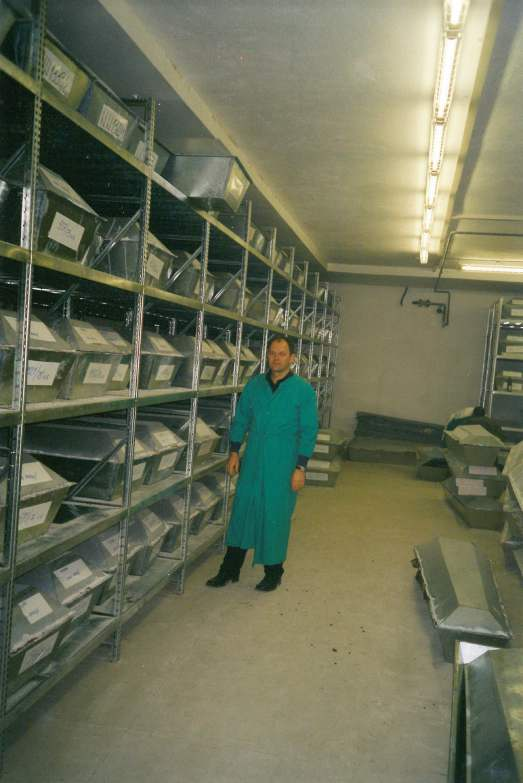
Šimun Anđelinović, neidentificirani ostatci na Mirogoju (izvor: arhiv Kliničkoga zavoda za patologiju, sudsku medicinu i citologiju KBC-a Split).
Šimun Anđelinović, unidentified remains at Mirogoj cemetery (source: Archive of the Clinical Department of Pathology, Forensic Medicine, and Cytology, University Hospital of Split).
players at the London conference to reverse this IFOR role, because of the Dayton agreement. If IFOR will have this diminished role, it will start to look a lot like the United Nations operation in former Yugoslavia.
Chairman SMITH. I want to thank our very distinguished witnesses for your outstanding testimony, for the good work you do on behalf of humanity, the Bosnians in particular, and for taking the time to come and present your testimony to the Commission. The hearing is adjourned.
[Whereupon at 3:48 p.m., the Commission adjourned.]
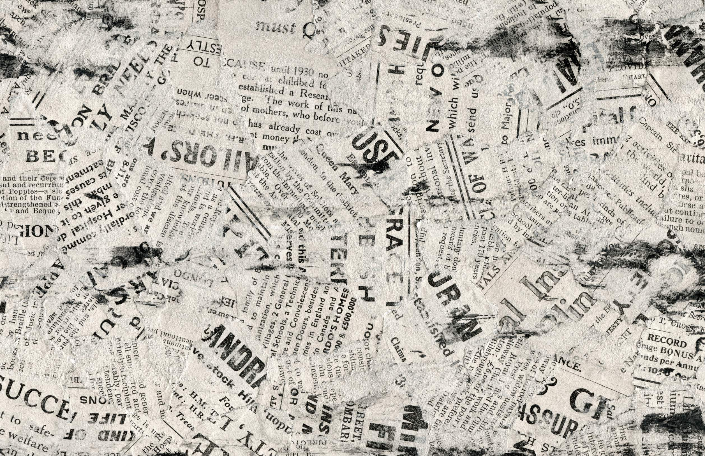
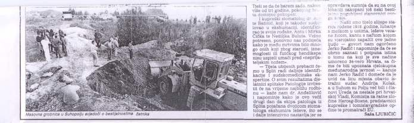
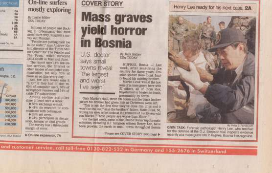
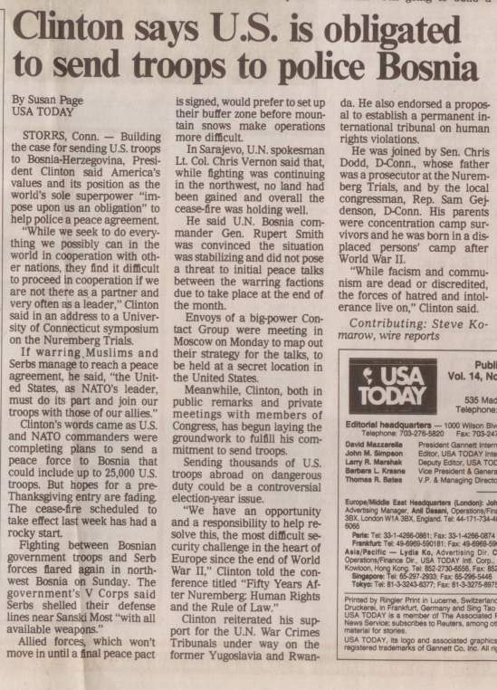


_______________________________________________________________________________ VOL.CXLIII…No. 49,636 Copyright 1994 The New York Times NEW YORK, TUESDAY, MARCH 15, 1994 50 CENTS

Page 49
Inter alia / Lagniappe
Inter alia Lagniappe
Dugogodišnje prijateljstvo i znanstvena suradnja s prof. dr. sc. Mitchellom Hollandom doveli su do imenovanja profesorom i aktivnog uključivanja prof. dr. sc. Dragana Primorca u nastavu forenzičkog programa Sveučilišta Penn State, a potom i do njegova imenovanja titulom Global Penn State Ambassador, po prvi put u povijesti toga sveučilišta osnovanog 1855. godine. Tu su titulu prof. dr. sc. Draganu Primorcu 2016. godine svečano uručili rektor Sveučilišta Penn State prof. dr. sc. Nicholas P. Jones i prorektor prof. dr. sc. Michael Adewumi.
The long-standing friendship and scientific collaboration with Mitchell Holland led to the appointment of Dragan Primorac as a professor and to his active involvement in the forensic science program at Pennsylvania State University. This collaboration subsequently resulted in his appointment as a Global Penn State Ambassador, the first such title awarded in the history of the university, founded in 1855. The title was formally conferred upon Professor Dragan Primorac in 2016 by Nicholas P. Jones, President of Pennsylvania State University, and Michael Adewumi, Vice Provost for Global Programs.
Prijateljstvo i profesionalna suradnja prof. dr. sc. Henryja C. Leeja i prof. dr. sc. Dragana Primorca rezultirali su time da je prof. dr. sc. Dragan Primorac od samih početaka bio imenovan profesorom i aktivno uključen u nastavni i znanstveni rad na University of New Haven, na Henry C. Lee College of Criminal Justice and Forensic Sciences, kao i u djelovanje The Henry C. Lee Institute of Forensic Sciences od njegova osnutka 1998. godine. Kao priznanje za izniman doprinos razvoju forenzičkih znanosti i međunarodnoj afirmaciji Instituta, prof. dr. Henry C. Lee osobno je prof. dr. Primorcu dodijelio priznanje Lifetime Achievement Award, a s predsjednikom toga Sveučilišta, prof. dr. sc. Stevenom Kaplanom i prestižnu International Distinguished Service Award 2010. godine. Dugogodišnja i intenzivna međunarodna suradnja rezultirala je i potpisivanjem sporazuma o suradnji između University of New Haven i Sveučilišta u Splitu, kao i između Penn State University i Sveučilišta u Splitu, koji se uspješno provode i danas. Kao posebno priznanje za izniman doprinos razvoju hrvatske forenzike te identifikaciji žrtava Domovinskog rata, na prijedlog prof. dr. sc. Dragana Primorca i prof. dr. sc. Šimuna Anđelinovića, prof. dr. sc. Henry C. Lee 2005. je godine odlikovan Redom Danice hrvatske s likom Katarine Zrinske, dok mu je Sveučilište u Splitu 2010. godine, odlukom tadašnjeg rektora prof. dr. sc. Ivana Pavića, dodijelilo počasni doktorat.
The friendship and professional collaboration between Henry C. Lee and Dragan Primorac resulted in Professor Dragan Primorac being appointed, from the very beginning, as a professor actively involved in both the teaching and scientific activities at the University of New Haven, within the Henry C. Lee College of Criminal Justice and Forensic Sciences, as well as in the work of the Henry C. Lee Institute of Forensic Sciences since its establishment in 1998. In recognition of his exceptional contribution to the advancement of forensic sciences and to the international reputation of the Institute, Henry C. Lee personally presented Professor Dragan Primorac with the Lifetime Achievement Award, and together with Steven Kaplan, President of the University of New Haven, also conferred upon him the prestigious International Distinguished Service Award in 2010. The long-standing and intensive international collaboration also led to the signing of cooperation agreements between the University of New Haven and the University of Split, as well as between Pennsylvania State University and the University of Split, partnerships that continue to be successfully maintained to this day. In recognition of his exceptional contribution to the development of Croatian forensic science and to the identification of victims of the Croatian War of Independence, Henry C. Lee was, upon the proposal of Professors Dragan Primorac and Šimun Anđelinović, awarded the Order of the Croatian Star with the Effigy of Katarina Zrinska in 2005. In 2010, the University of Split, by decision of its then Rector professor Ivan Pavić, conferred upon him the degree of Doctor Honoris Causa.
Dragan Primorac, University of Connecticut Health Center, 1993., priprema protokola za izdvajanje DNK-a.
Dragan Primorac, University of Connecticut Health Center, 1993, preparing protocols for DNA extraction.
Prof. dr. sc. Dragan Primorac, Prof. dr. sc. Henry C. Lee i Prof. dr. sc. Šimun Anđelinović (12th ISABS Conference on Forensic and Anthropological Genetics and Mayo Clinic Lectures in Individualized Medicine, Dubrovnik, 22.-27. lipnja 2022.).
Professors Dragan Primorac, PhD, Henry C. Lee, PhD, and Šimun Anđelinović, PhD (12th ISABS Conference on Forensic and Anthropological Genetics and Mayo Clinic Lectures in Individualized Medicine, Dubrovnik, 22–27 June 2022).
Prof. dr. sc. Dragan Primorac, Xiaping Jiang, prof. dr. sc. Henry C. Lee i prof. dr. sc. Šimun Anđelinović (HAZU, promocija knjige Pucanj u Hrvatskoj, 6. ožujka 2024.)
Professors Dragan Primorac, PhD, Xiaping Jiang, Henry Lee, PhD, and Šimun Anđelinović, PhD (Croatian Academy of Sciences and Arts, promotion of the book Gunshot in Croatia, 6 March 2024).
Henry C. Lee, Šimun Anđelinović i Dragan Primorac u helikopteru, nakon oslobađanja Petrinje, let s ciljem identifikacija žrtava masovnih grobnica 1995.
Henry Lee, Šimun Anđelinović, and Dragan Primorac in a helicopter, following the liberation of Petrinja, during a flight conducted for the identification of victims from mass graves, 1995.
Rekonstrukcija mjesta zločina na Kupresu izložena u Muzeju forenzičkih znanosti Henryja C. Leeja u Nantongu u Kini, prvome muzeju forenzičnih znanosti na svijetu.
Izložba prikazuje važnost forenzične znanosti, očevida i DNK identifikacija u istraživanju masovnih grobnica i ratnih zločina.
Reconstruction of the Kupres crime scene exhibited at the Henry C. Lee Museum of Forensic Science in Nantong, China — the world’s first forensic science museum.
The exhibition highlights the role of forensic science, crime scene investigation, and DNA identification in the investigation of mass graves and war crimes.
Dragan Primorac i Henry Lee. „Dr. Henry Lee”, ISABS, Hrvatska, Dubrovnik, HRT, 2022.
Dragan Primorac and Henry Lee. “Dr. Henry Lee,” ISABS, Croatia, Dubrovnik, Croatian Television, 2022
30. obljetnica / 30th Anniversary
30. obljetnica objave prvih rezultata primjene tehnologije DNK u identifikaciji žrtava iz masovnih grobnica 30th Anniversary of the Publication of the First Paper on DNA Identification of Victims from Mass Graves
Ovaj je tekst, uz dopuštenje uredništva, preuzet i prilagođen iz Liječničkih novina, broj 240/2026.
30. obljetnica primjene tehnologije DNK u identifikaciji žrtava Domovinskoga rata
Piše: dr. Vinko Bubić, specijalist kliničke radiologije KB Merkur, Zagreb, Hrvatska
Kad osvane taj dan u zemlji ranjenoj biser sja na dlanu grad i moj i tvoj
Kad raziđe se dim – Vice Vukov (stihovi: Krste Juras)
U vedrome i sunčanome Splitu na ugodnih 20 stupnjeva 27. travnja 2026., u Velikoj dvorani KBC-a Split, na Firulama, održana je 30. obljetnica objave prvih rezultata primjene tehnologije DNK u identifikaciji žrtava iz masovnih grobnica. To je metoda koja je upravo u Hrvatskoj prvi put primijenjena u praksi, i to u ratnim okolnostima gdje je mlada država bila suočena s velikim brojem često neprepoznatljivih posmrtnih ostataka. Splitski stručnjaci prof. dr. sc. Šimun Anđelinović i prof. dr. sc. Dragan Primorac razvili su model koji je spojio forenzičku genetiku s klasičnim metodama i omogućio identifikaciju i u najtežim slučajevima. „Bili su to teški uvjeti analize DNK iz bakterijski kontaminiranih uzoraka oštećenih
This article was translated and adapted with minor modifications from the original Croatian version published in Liječničke novine, issue No. 240/2026.
30th Anniversary of the Publication of the First Paper on DNA Identification of Victims from Mass Graves
Written and translated by: Vinko Bubić, MD, Specialist in Clinical Radiology, University Hospital Merkur, Zagreb, Croatia PhD Candidate, University of Split School of Medicine, Croatia
When parts away the smoke When first heartache is gone We’ll sit around the table In our ancient home.
When parts away the smoke – Vice Vukov (stihovi: Krste Juras)
In the bright and sunny city of Split, Croatia, on April 27, 2026, under clear spring skies and mild weather, the Great Hall of the University Hospital of Split at Firule hosted the 30th anniversary of the publication of the first results on the application of DNA technology in the identification of victims from mass graves. It was precisely in Croatia that this method was first implemented in practice, under wartime circumstances in which young Croatian state was faced with many, often unrecognizable, human remains.
Croatian experts Professor Šimun Anđelinović, MD, PhD, and Professor Dragan Primorac, MD, PhD, developed a model that combined forensic genet-
Otvaranje promocije monografije i izložbe, uvodno obraćanje ravnatelja KBC-a izv. prof. dr. sc. Krešimira Dolića (izvor: arhiv KBC-a Split).
Opening of the monograph and exhibition presentation, introductory address by the Director of the University Hospital of Split, Associate Professor Krešimir Dolić, MD, PhD (source: archives of the University Hospital of Split).
teškim metalima, gdje tim tada nije imao nikakvih iskustava”, istaknuo je prof. dr. sc. Dragan Primorac. Za medije je naš znanstvenik i forenzički genetičar osobito istaknuo rad, publiciran prije 30 g., koji DNK tehnologiju stavlja na pijedestal korištenja za identifikaciju tijela, što je promijenilo percepciju cijeloga svijeta prema istini koja je – samo jedna, kako je istaknuo.
Upravo prijateljstvo njega i predstojnika Patologije prof. dr. sc. Šimuna Anđelinovića nadilazilo je samu znanost jer su bili povezani i taekwondo klubom Kocunar u Splitu, koji je osnovao prof. Primorac, a njihov daljnji život i karijeru duboko su obilježili u Domovinskome ratu gubitak njihove šestorice prijatelja i učenika, koje i dandanas s ponosom spominju. To im je bio velik motiv da uspiju u projektu identifikacije. Prof. Primorac upravo je u laboratoriju u Connecticutu (SAD) s glasovitim
ics with standard forensic methods, enabling identification even in the most difficult cases.
“These were extremely challenging conditions for DNA extraction, amplification, and analysis from skeletal remains often contaminated with bacterial DNA and heavy metals, while the greatest difficulty was that no one had prior experience regarding which protocols should be applied in such cases,” emphasized Professor Dragan Primorac.
Speaking to the media, the Croatian scientist and forensic geneticist particularly highlighted the paper published in the Journal of Forensic Sciences thirty years ago, which placed DNA technology at the fore of body identification methods, fundamentally changing the world’s perception toward the truth – since, as he stated, “there is only one truth.”
The friendship between Professor Primorac and the Head of Pathology, Professor Šimun Anđelinović, transcended science itself, as they were also connected through the Taekwondo Club Kocunar in Split, founded by Professor Primorac, in whose leadership Professor Anđelinović also participated. Their lives and careers were deeply marked during the Croatian War of Independence by the loss of six of their friends and students, who had joined Professor Primorac on January 14, 1991, in the defense of Croatia, and whom they still proudly remember today. This became a powerful motivator for the success of the identification project.
At the laboratory in Connecticut, USA, together with the renowned Dr. Henry Lee, Professor Primorac worked even after regular hours to isolate DNA from degraded samples, which were subsequently amplified using the polymerase chain reaction (PCR). The connection with the humanitarian organization AmeriCares was facilitated by Stanimir Vuk-Pavlović, a distinguished Croatian American scientist at the
30. obljetnica primjene tehnologije DNK u identifikaciji žrtava Domovinskoga rata / 30th Anniversary of the Publication of the First Paper on DNA Identification of Victims from Mass Graves
dr. Henryjem Leejem nakon redovitih obveza radio na izolaciji DNK-a iz degradiranih uzoraka, koje su potom umnažali lančanom reakcijom polimeraze (PCR, engl. polymerase chain reaction). Vezu s humanitarnom organizacijom AmeriCares osigurao je Stanimir Vuk-Pavlović, istaknuti hrvatsko-američki znanstvenik iz bolnice Mayo Clinic, koja je rezultirala otvaranjem laboratorija 16. ožujka 1994. Već u prosincu 1994. na poziv dr. Leeja predstavljen je „hrvatski model” identifikacije žrtava iz masovnih grobnica primjenom DNK tehnologije na međunarodnoj konferenciji u Taipeiju (Tajvan), koja rezultira i člankom objavljenim 1996. u uglednom časopisu Journal of Forensic Sciences.
Domaćin ovoga važnog susreta bio je izv. prof. dr. sc. Krešimir Dolić, specijalist radiologije i ravnatelj KBC-a Split. Tom je prigodom za medije iznio da je u jeku rata splitski tim radio na osjetljivom području s američkim timom i da je taj model preuzeo danas čitav svijet,
Prvo izdanje monografije Imena u tišini (izvor: arhiv KBC-a Split).
First edition of the monograph Names in the Silence (source: archives of the University Hospital of Split).
Mayo Clinic, which led to the opening of the laboratory on March 16, 1994.
Already in December 1994, at Dr. Lee’s invitation, Professor Primorac presented the “Croatian model” for DNA-based identification of mass grave victims at an international conference in Taipei, Taiwan, which later led to the publication of the landmark article in the prestigious Journal of Forensic Sciences in 1996.
The host of this important gathering was Associate Professor Krešimir Dolić, MD, PhD, specialist radiologist and Director of the University Hospital of Split. Speaking to the media, he emphasized that in the height of the war, the Split team worked in an extremely sensitive field alongside the American team, and that today the entire world has adopted this pioneering model, of which the hospital remains deeply proud. In an interview for Slobodna Dalmacija, he stated that Croatia had become internationally recognized as an example of good practice in this highly sensitive and demanding field.
The ceremony was attended by Croatian Deputy Prime Minister and Minister of Croatian Veterans Tomo Medved, Deputy Mayor of Split Ivo Bilić, Split-Dalmatia County Deputy Prefect Stipe Čogelja, Member of the Parliament and the former County Prefect Ante Sanader, MSc, and Ante Mihanović, PhD. Both the Deputy Prefect and the Deputy Mayor openly expressed their pride and continued providing support to this successful team.
Minister Medved stated to the media that a total of 150 mass graves had been discovered in Croatia. To date, more than 80% of approximately 5,300 victims have been identified, while the search for 1,740 missing people continues. The Croatian identification model, developed in Split, is now internationally recognized and applied in numerous similar
i da je bolnica na taj pionirski zahvat ponosna. Za Slobodnu Dalmaciju izjavio je da je Hrvatska postala prepoznata kao primjer dobre prakse u osjetljivome i zahtjevnome području.
Svečanosti su prisustvovali i ministar hrvatskih branitelja i potpredsjednik Vlade Tomo Medved, Ivo Bilić, kao zamjenik gradonačelnika Splita, splitski dožupan Stipe Čogelja, saborski zastupnik i bivši župan mr. sc. Ante Sanader i dr. sc. Ante Mihanović. Dožupan i zamjenik gradonačelnika Splita nisu krili ponos i podršku koju i dalje pružaju ovomu uspješnom timu.
Ministar Medved za medije je izjavio da je u Hrvatskoj nađeno sveukupno 150 masovnih grobnica. Do danas je identificirano više od 80 % od približno 5 300 žrtava, dok se potraga za 1 740 nestalih nastavlja. Hrvatski model identifika-
Otvaranje promocije monografije i izložbe, uvodno obraćanje ministra hrvatskih branitelja i podpredsjednika Vlade RH Tome Medveda (izvor: arhiv KBC-a Split).
Opening of the monograph and exhibition presentation, introductory address by Tomo Medved, Croatian Deputy Prime Minister and Minister of Croatian Veterans (source: archives of the University Hospital of Split).
situations worldwide, its foundation remaining an interdisciplinary approach and a lasting commitment to truth.
During the gathering, the monograph Names in the Silence was presented, edited by Professors Anđelinović, Bašić, Jerković, Kružić, and Primorac. The image on the cover depicts a doorway — a boundary between the unknown and the known. The monograph was presented by Professor Ana Marušić, Professor Željana Bašić, and Ante Gugić, MSc, retired brigadier general and representative of the Croatian Generals’ Association.
As written in the foreword itself, “It is a testimony to the encounter between humanity, science, and the world in the service of the highest values — the dignity of the victim and the family’s right to the truth.”
During her presentation, Professor Ana Marušić emphasized a simple but powerful thought:
“If something is not written down, it is as if it never happened.”
highlighting the importance of the first supplement published 35 years ago in the Croatian Medical Journal concerning the medical horrors of war.
Professor Željana Bašić emphasized that the monograph should represent the story of every victim, every family, every individual involved in exhumations, and every person who communicated identification results to relatives. She described the publication as a record of what was achieved in science and by the “coxless pair” — Professor Šimun Anđelinović and Professor Dragan Primorac.
Professor Bašić highlighted the extraordinary enthusiasm that could have carried the duo anywhere, while also stressing the historical
30. obljetnica primjene tehnologije DNK u identifikaciji žrtava Domovinskoga rata / 30th Anniversary of the Publication of the First Paper on DNA Identification of Victims from Mass Graves
Promotori monografije prof. dr. sc. Ana Marušić, prof. dr. sc. Željana Bašić i mr. Ante Gugić (izvor: osobni album Ante Ivanović / Vinko Bubić).
Presenters of the monograph: Professor Ana Marušić, PhD; Professor Željana Bašić, PhD; and MSc Ante Gugić (source: Ante Ivanović / Vinko Bubić personal archive).
cije, razvijen u Splitu, danas je međunarodno prepoznat i primjenjivan u brojnim sličnim situacijama diljem svijeta, a njegov temelj ostaje interdisciplinarni pristup i trajna predanost istini.
Na skupu je prezentirana monografija Imena u tišini urednika Anđelinovića, Bašić, Jerkovića, Kružić i Primorca. Ona na naslovnici predstavlja vrata – granicu između nepoznatoga i poznatoga. Predstavili su je prof. dr. sc. Ana Marušić, prof. dr. sc. Željana Bašić i mr. Ante Gugić, brigadni general u miru i predstavnik generalskoga zbora. Kako piše u samom predgovoru, „Ona je svjedočanstvo o susretu čovjeka, znanosti i svijeta u službi najviše vrijednosti – dostojanstva žrtve i prava obitelji na istinu.” Prof. Ana Marušić pri predstavljanju je istaknula jednu jednostavnu misao: „Ako nemate
reality that Croatia had only just achieved statehood and simultaneously faced the enormous challenge of identifying war victims. She recalled how the then-young Professor Primorac managed, within ten minutes, to establish a crucial collaboration with the father of modern forensic science, the late Professor Henry Lee (1938–2026), while also building relationships with Professor Barbara Wolf, molecular biologist Professor Moses Schanfield, Professor Mitch Holland, Professor Bruce Budowle, and others.
She also emphasized Professor Lee’s own statement that meeting the victims’ families changed his life perspective forever. As a lesser-known historical detail, she noted that Professor Lee temporarily left the O. J. Simpson trial in the United States to assist the Croatian team directly in Croatia.
Professor Bašić also underlined the importance of the opening words in the U.S. Congress, characterizing events as crimes against humanity — heinous crimes against civilians, genocide, unspeakable and unacceptable crimes.
This represented an important American message to the world at a time when many global powers were not inclined toward Croatia for various political reasons.
She further emphasized that Professor Anđelinović personally delivered the truth to nearly 500 families – to thousands of mothers, sisters, and parents – communicating identification results under emotionally devastating circumstances. She noted how difficult such conversations are, even for physicians in other specialties, when delivering bad news. As Viktor Frankl once wrote, “In some ways suffering ceases to be suffering at the moment it finds a meaning, such as the meaning of a sacrifice.” For many families, identification did not erase the pain; however, it did transform uncertainty into truth and absence into memory.
Ravnatelj KBC-a Split izv. prof. dr. sc. Krešimir Dolić dodjeljuje priznanja autorima prvoga rada o DNK identifikaciji žrtava iz masovnih grobnica: gđi Boji Režić, prof. dr. sc. Ireni Drmić Hoffman, prof. dr. sc. Draganu Primorcu i prof. dr. sc. Šimunu Anđelinoviću (izvor: osobni album Ante Ivanović / Vinko Bubić).
stvar zapisanu, onda kao da se nije ni dogodila” – ističući važnost tada prvoga suplementa prije 35 g. u časopisu Croatian Medical Journal (CMJ) o medicinskim strahotama rata. Prof. Željana Bašić istaknula je da bi monografija trebala biti priča o svakoj žrtvi, o svakoj obitelji, o svakoj osobi koja je radila ekshumaciju, o svakoj osobi koja je priopćila rodbini rezultate analize, a ovo je zapis o tome što se tada učinilo u znanosti i što je to učinio „dvojac bez kormilara” (prof. Šimun Anđelinović i prof. Dragan Primorac). Prof. Bašić istaknula je entuzijazam koji je tada mogao otploviti
Associate Professor Krešimir Dolić, MD, PhD, Director of the University Hospital of Split, presents awards to the authors of the first paper on DNA identification of mass grave victims: Ms Boja Režić, Professor Irena Drmić Hoffman, PhD, Professor Dragan Primorac, PhD, and Professor Šimun Anđelinović, PhD (source: Ante Ivanović / Vinko Bubić personal archive).
Special recognition was also given to the logistical and editorial efforts of Professor Ana Marušić and Professor Matko Marušić, who promoted Croatian scientists under the principle of “publish or perish”, primarily to ensure that history itself would not disappear.
Long ago, the father of Croatian archaeology famously stated, phrasing it into the words also known in Vienna:
“From stone comes history, and from history — consciousness.”
30. obljetnica primjene tehnologije DNK u identifikaciji žrtava Domovinskoga rata / 30th Anniversary of the Publication of the First Paper on DNA Identification of Victims from Mass Graves
bilo kuda sa svojim dvojcem, ali je i naglasila povijesnu činjenicu da je naša zemlja ostvarila svoju državu i zatekla se u izazovima identifikacije tijela, gdje tada mladi prof. Primorac pred ocem svjetske forenzike u deset minuta uspijeva ostvariti bitni kontakt i suradnju s nedavno preminulim Henryjem Leejem (1938. – 2026.), ali i stvara kontakte s Barbarom Wolf, molekularnim biologom Mosesom Schanfieldom, dr. Mitchellom Hollandom itd. Ističe da je sam dr. Henry Lee rekao da je susret s obiteljima promijenio njegovu životnu perspektivu. Kao manje poznatu činjenicu naglašava da dr. Lee ostavlja suđenje O. J.-u Simpsonu u SAD-u i dolazi pomagati raditi u Hrvatsku. Istaknula je važnima i prve rečenice otvaranja američkog kongresa koje karakterizira zločine – zločin protiv čovječnosti, gnusni zločini nad civilima, genocid, neizrecivi i neprihvatljivi zločini. Bila je to američka poruka svijetu kada svjetske sile i nisu bile sklone Hrvatskoj zbog višestrukih razloga. Naglasila je da je prof. Anđelinović iznio istinu gotovo 500 obitelji i to tisućama ljudi (majkama, sestrama, roditeljima); kada to obitelj treba prihvatiti dajući svoju bol i olakšanje, što je osobito teško kada se zna koliko je liječnicima drugih specijalnosti emotivno zahtjevno kada trebaju reći pacijentima lošu dijagnozu u svom radu. Osobito je istaknula logistiku prof. Ane Marušić i prof. Matka Marušića, koji su protežirali hrvatske znanstvenike pod egidom „publiciraj ili nestani”, ponajprije misleći da ne nestane povijest. Odavno je to ustvrdio i Otac hrvatske arheologije u svojoj glasovitoj rečenici poznatoj i u Beču: „Iz kamena povijest, a iz povijesti – svijest.”
Program je pjesmom uveličala i policijska klapa „Sv. Mihovil“ osobito dirljivom obradom pjesme „Mojoj lijepoj“ od Daleke obale. Sve je to izrečeno uoči rođendana IV. gardijske brigade Pauci, čijim je predstavnicima mr. Ante Gugić uz pljesak uzvanika i osobito čestitao.
The event was further enriched by a performance from the Croatian police klapa choir “St. Michael”, particularly their emotional rendition of the song Mojoj lijepoj (To my beautiful) by Daleka Obala. The gathering was held on the eve of the 4th Guards Brigade Pauci anniversary, and its representatives were especially congratulated by Ante Gugić to the applause of the attendees.
A particularly moving aspect of the event was the exhibition displayed throughout the underground corridors of the University Hospital of Split, accompanied by the song Kad raziđe se dim (When parts away the smoke) by Vice Vukov — the voice of the unspoken silence after the Croatian Spring movement, but also the voice of the Croatian dignity and national revival.
The black-and-white exhibition by the American war photographer Phillip Farnsworth, displayed in dimly lit corridors, documents the processes of the exhumation and identification over the past three decades, gradually illuminating them more clearly each day, alongside the words of the Deputy Prime Minister:
“We will not give up.”
The exhibition, open to visitors in the hospital corridors, was presented by Associate Professor Ivan Jerković, the author of the lyrics and music for the song Imena u tišini (Names in the Silence), which emphasizes the restoration of dignity through every identification that symbolically returns people from silence.
Although chronologically the youngest member of the organizing team, often one of those who carry the greatest burden, he emphasized the legacy and foundations of forensic studies, the importance of “thinking outside the box” as Professor Anđelinović’s guiding principle, and proudly stated that the Croatian team has now developed capacities which were
Autor teksta Vinko Bubić, dr. med., s urednicima, suradnicima i prijateljima: Antom Ivanovićem, mag. ing., prof. dr. sc. Ivanom Kružić, prof. emer. Matkom Marušićem, prof. dr. sc. Željanom Bašić i doc. dr. sc. Ivanom Jerkovićem (izvor: osobni album Ante Ivanović / Vinko Bubić).
Author of the text, Vinko Bubić, MD, with editors, collaborators, and friends: Ante Ivanović, MEng; Professor Ivana Kružić, PhD; Professor Emeritus Matko Marušić, PhD; Professor Željana Bašić, PhD; and Assistant Professor Ivan Jerković, PhD (source: Ante Ivanović / Vinko Bubić personal archive).
30. obljetnica primjene tehnologije DNK u identifikaciji žrtava Domovinskoga rata / 30th Anniversary of the Publication of the First Paper on DNA Identification of Victims from Mass Graves
Posebnost je ovog događaja izložba u podzemnim hodnicima KBC-a Split u kojima su postavljene fotografije uz pjesmu Kad raziđe se dim Vice Vukova, toga glasa neprevedene šutnje nakon Hrvatskog proljeća, ali i glasa hrvatskoga dostojanstva i povratka oživjele Hrvatske.
Izložba fotografija američkoga ratnog fotografa Phillipa Farnswortha u crno-bijeloj tehnici u tamnim hodnicima pod prigušenim svjetlom dokumentira procese ekshumacija i identifikacija tijekom proteklih triju desetljeća i rasvjetljava ih svakim danom sve više uz rečenicu potpredsjednika vlade: „Ne ćemo odustati.” O izložbi koja se može razgledati u hodnicima KBC-a govorio je doc. dr. sc. Ivan Jerković, autor teksta i glazbe pjesme „Imena u tišini”, koja naglašava povratak dostojanstva svakom identifikacijom tijela koja vraća ljude iz tišine. Premda je kronološki najmlađi član organizacijskog tima (oni koji obično najviše i potegnu), naglasio je ostavštinu i temelje forenzičkih studija, razmišljanje „izvan okvira” kao krilaticu prof. Šimuna Anđelinovića te s ponosom ustvrdio da su razvili kapacitete da sada predstavljaju i svoja rješenja u SAD-u da im se na neki način „vrati dug”, o čemu svjedoči i posjet prof. Željane Bašić i njega osobno laboratoriju američke vojske u Nebraski, Defense POW/MIA Accounting Agency (DPAA).
Nakon energične izvedbe Ane Banovac s patinom jadranskih diva Kesovije-Šverko-Novak, uzvanici su se zaputili pregledati potresne fotografije ekshumacija. Pjesma je snimljena u suradnji s aranžerom Matom Šimunićem i prevedena na engleski jezik, čime monografija završava, i to ne slučajno. Time je znanstveno preneseno u ljudsko i engleskom auditoriju jer priča nije samo hrvatska u „pobratimstvu lica u svemiru“, kako kaže veliki Tin.
strong enough to present their own solutions in the United States, in a way “repaying the debt,” as evidenced by the visit of Professor Željana Bašić and himself to the U.S. Army laboratory, the Defense POW/MIA Accounting Agency (DPAA) in Nebraska.
After a powerful performance by Ana Banovac, whose voice carried the spirit of the Adriatic divas such as Kesovija, Šverko, and Novak, the guests viewed deeply emotional photographs of the exhumations. The song, recorded in collaboration with arranger Mate Šimunić, was translated into English and placed at the very end of the monograph, which was not done by pure coincidence. In this way, the scientific was transformed into the profoundly human and conveyed to the international audience, since this story is not exclusively Croatian, but universal, in the spirit of “the brotherhood of faces in the universe,” as expressed by the great Croatian poet Tin Ujević in Hrvatska revija (Croatian Review) 1932.
“O universe! I live and die in all beings; nameless, I endure within my brothers.”
Brotherhood of Faces in the Universe* Tin Ujević
*The quoted verses were translated for the purposes of this work by the Croatian literary translator Mate Maras.
Izložba Imena u tišini / Exhibition Names in the Silence
Izložba IMENA U TIŠINI Exhibition NAMES IN THE SILENCE
Otvorenje izložbe / Exhibition Opening
Autori izložbe / Exhibition authors:
Autor fotografija / Photographer:
Korišteno uz dopuštenje / Used with permission
Fotografije izložbe / Exhibition photos: Lucija Vuksan, Ivana Machackova, Ella Čatipović, Andrea Kalpić Alessia Macri, Josipa Iveljić, Karmen Ivanda, Jana Ćatipović, Ivan Jerković
Ivan Jerković Željana Bašić Darko Kero Veljko Martinović Jurica Marinković Tea Stipanović Denis Milardović
Philip Farnsworth
Završni tekstovi / Closing Texts
Imena u tišini autor: Ivan Jerković
U zemlji bez glasova, bez lica i riječi, gdje šutnja je dublja od svake noći, ležali su brojevi, nečiji životi, bez imena, bez doma, u pustoj samoći.
I došli su ljudi, bez sumnje i straha, sa znanjem što svijet tek počinje znat, iz kostiju hladnih, iz pepela rata, tražili su trag da mir im mogu dat’.
Jer istina šuti, al’ nikad ne nestane, u svakoj kapi krvi ime ostane...
I kad sve izgori, i kad vrijeme izbriše, ostane nešto što ne može tiše, u svakoj niti što pamti tko smo bili — imena u tišini, oni su oživjeli.
Pod svjetlom bez sjene, tiho i sporo, gradila se nada iz najmanjih tragova, majke su čekale, godine nosile, da istina vrati ono što skrilo je grob.
I svijet je na trenutak zastao i gledao, kako istina dolazi iz zemlje i bola, bez granica, bez jezika, bez zastava, samo čovjek koji čovjeku ime dariva.
I kad sve izgori, i kad vrijeme izbriše, ostane nešto što ne može tiše, u svakoj niti što pamti tko smo bili — imena u tišini, oni su oživjeli.
Nije to bilo samo znanje… to je bio povratak dostojanstva.
I kad sve izgori, i kad vrijeme izbriše, ostane nešto što ne može tiše, i kroz godine, kroz bol i daljine — vratili su ljude… iz tišine.
„Imena u tišini” — izvedba istoimene pjesme uživo tijekom obilježavanja 30. obljetnice prvih DNK identifikacija žrtava iz masovnih grobnica u Hrvatskoj, uz kadrove izložbe i događanja (izvedba: Ana Banovac | video: Ante Ivanović). “Names in the Silence” — live performance of the song during the commemoration of the 30th anniversary of the first DNA identifications of victims from mass graves in Croatia, accompanied by footage from the exhibition and the event (Performance: Ana Banovac | Video by: Ante Ivanović).
Names in the silence author: Ivan Jerković translated by; Ana Banovac
In a land with no faces, no voices, no names, Where silence runs deeper than words can contain, Numbers lying there, but their lives once were real, And all of their loved ones, they needed to heal.
And then came the people, the ones without doubts and fears, With wisdom, the world had yet to hear, From cold and broken bones, from the ashes of war, Tracing the path to give them peace once more.
For truth may be silent, but never fades away, In every drop of blood, a name will remain...
Yes, all shall burn away, and time will be our foe, Some things never change; they’re hidden below, In every fragile thread that tells us of the past — Names lost to silence are living at last.
In light without shadows, slowly and quietly, In faintest of traces, the hope was growing strong, Mothers were waiting, and all their prayers were sent For names to return and their longing to end.
And then, for a moment, the world stood still to see, The truth was rising from earth, from pain and debris, No borders, no language, no flags to divide, Just one human giving another their name back with pride.
Yes, all shall burn away, and time will be our foe, Some things never change; they’re hidden below, In every fragile thread that tells us of the past, Names lost to silence are living at last.
It was never just the knowledge… It was dignity returned.
Yes, all shall burn away, and time will be our foe, Some things never change; they’re hidden below, And through the years that passed, through all of pain unseen, From the deepest silence, their names are now free.
ISBN 978-953-7288-06-8 Drugo, dopunjeno izdanje
Jer istina šuti, al nikad ne nestane, u svakoj kapi krvi ime ostane...
Pod svjetlom bez sjene, tiho i sporo, gradila se nada iz najmanjih tragova, majke su čekale, godine nosile, da istina vrati ono što skrilo je grob.
For truth may be silent, but never fades away, In every drop of blood, a name will remain...
In light without shadows, slowly and quietly, In faintest of traces, the hope was growing strong, Mothers were waiting, and all their prayers were sent For names to return and their longing to end.